<!doctype html>
<html lang="en"><head><meta charset="utf-8"><meta name="viewport" content="width=device-width, initial-scale=1"><meta name="description" content="Practical build, run, canvas and diagnostics guides for Material Docker Image, a native Windows workspace."><meta property="og:type" content="website"><meta property="og:site_name" content="Material Docker Image"><meta property="og:title" content="Material Docker Image: practical guides"><meta property="og:description" content="Build, run, canvas and diagnostics guides for Material Docker Image, a native Windows workspace."><meta property="og:url" content="https://ding-ding-projects.github.io/material-docker-image/"><meta property="og:image" content="https://ding-ding-projects.github.io/material-docker-image/social-preview.png"><meta property="og:image:type" content="image/png"><meta property="og:image:width" content="1200"><meta property="og:image:height" content="630"><meta property="og:image:alt" content="The Material Docker Image build workspace, captured from the built application."><meta name="twitter:card" content="summary_large_image"><meta name="twitter:title" content="Material Docker Image: practical guides"><meta name="twitter:description" content="Build, run, canvas and diagnostics guides for Material Docker Image, a native Windows workspace."><meta name="twitter:image" content="https://ding-ding-projects.github.io/material-docker-image/social-preview.png"><meta name="twitter:image:alt" content="The Material Docker Image build workspace, captured from the built application."><link rel="icon" type="image/svg+xml" href="favicon.svg"><title>Material Docker Image · Practical guides</title><style>
:root{color-scheme:light;--bg:#f4f6fb;--panel:#fff;--ink:#182238;--muted:#526079;--accent:#2457bf;--line:#d4dceb;--soft:#e6edfc}html[data-theme=dark]{color-scheme:dark;--bg:#101722;--panel:#192434;--ink:#e5ecf8;--muted:#b3c1d8;--accent:#a8c7ff;--line:#3e5069;--soft:#263c60}*{box-sizing:border-box}body{margin:0;background:var(--bg);color:var(--ink);font:16px/1.65 system-ui,-apple-system,"Segoe UI",sans-serif}a{color:var(--accent);text-underline-offset:3px}button,input,select,textarea{font:inherit;color:inherit}button,select,input,textarea{border:1px solid var(--line);background:var(--panel);border-radius:10px;padding:10px 14px;min-height:44px;max-width:100%}button{cursor:pointer}button:hover{background:var(--soft)}button[aria-pressed=true],.primary{background:var(--accent);color:var(--bg)}:focus-visible{outline:3px solid var(--accent);outline-offset:4px}.skip{position:absolute;left:12px;top:-80px;background:var(--panel);padding:10px;z-index:5}.skip:focus{top:10px}header{background:var(--panel);border-bottom:1px solid var(--line)}.bar{max-width:1240px;margin:auto;padding:18px 28px;display:flex;align-items:center;gap:16px;flex-wrap:wrap}.brand{font-weight:750;letter-spacing:-.03em;font-size:21px}.brand:before{content:'▦';color:var(--accent);margin-right:10px}.tools{margin-left:auto;display:flex;gap:10px;flex-wrap:wrap}.tools label{font-size:13px}.tools select{display:block;padding:6px 10px}nav{display:flex;gap:18px;flex-wrap:wrap;max-width:1240px;margin:auto;padding:0 28px 16px}nav a{font-weight:600}main{max-width:1184px;padding:30px 24px 70px;margin:auto}h1{font-size:clamp(30px,5vw,48px);line-height:1.13;letter-spacing:-.045em;margin:14px 0 18px;max-width:850px}h2{font-size:27px;letter-spacing:-.025em;line-height:1.3}h3{font-size:21px;line-height:1.35}h4,h5{font-size:18px;line-height:1.4}.eyebrow{font-weight:700;color:var(--accent);font-size:13px;letter-spacing:.1em;text-transform:uppercase}.lead{font-size:19px;max-width:780px;color:var(--muted)}.badge{display:inline-block;padding:5px 12px;border-radius:24px;background:var(--soft);font-size:13px;font-weight:650}.muted,.source-label{color:var(--muted)}.notice{border-left:4px solid var(--accent);padding:12px 18px;background:var(--soft);border-radius:0 10px 10px 0}.layout{display:grid;grid-template-columns:minmax(0,1.8fr) minmax(250px,1fr);gap:22px}.panel,.article{background:var(--panel);border:1px solid var(--line);border-radius:18px;padding:24px;min-width:0}.tabs{display:flex;gap:8px;flex-wrap:wrap;margin-bottom:20px}.step-controls{display:flex;align-items:center;gap:12px;justify-content:space-between;margin-top:22px}.progress{height:6px;border-radius:6px;background:var(--line);overflow:hidden;margin:18px 0}.progress span{display:block;height:100%;background:var(--accent);width:25%}.check{display:flex;gap:10px;align-items:flex-start;margin:14px 0}.check input{width:20px;min-height:20px;margin-top:4px;flex-shrink:0}.check label{cursor:pointer}.fields{display:grid;grid-template-columns:repeat(2,minmax(0,1fr));gap:14px}.fields label{display:flex;flex-direction:column;gap:5px}section{scroll-margin-top:20px;margin-top:36px}pre{overflow:auto;white-space:pre-wrap;overflow-wrap:anywhere;background:var(--bg);border:1px solid var(--line);border-radius:10px;padding:16px;font:14px/1.6 ui-monospace,Consolas,monospace}code{overflow-wrap:anywhere}p,li{overflow-wrap:anywhere}.search-row{display:flex;gap:10px;flex-wrap:wrap}.search-row input{flex:1;min-width:180px}.regex{padding:16px;margin-top:12px;border:1px solid var(--line);border-radius:12px}.article-links{display:flex;gap:8px;flex-wrap:wrap;margin:18px 0}.article-links a{padding:6px 10px;border:1px solid var(--line);border-radius:8px}.article{margin-top:20px}.source-label{font-size:13px}.source-item{padding-left:15px}.hidden,[hidden]{display:none!important}.secondary{display:block;font-size:.85em;color:var(--muted)}footer{border-top:1px solid var(--line);padding:24px;text-align:center;color:var(--muted)}.graph{display:flex;gap:10px;align-items:center;flex-wrap:wrap;padding:15px;background:var(--bg);border-radius:12px}.node{padding:12px;border:1px solid var(--line);border-radius:9px;background:var(--panel)}@media(max-width:760px){.layout{grid-template-columns:1fr}.bar,nav{padding-left:16px;padding-right:16px}main{padding:22px 14px 50px}.panel,.article{padding:18px}.tools{margin-left:0}.fields{grid-template-columns:1fr}}@media(prefers-reduced-motion:reduce){*,*:before,*:after{scroll-behavior:auto!important;animation:none!important;transition:none!important}}@media print{.tools,.step-controls,.search-row,button{display:none}body{background:#fff;color:#000}.article,.panel{break-inside:avoid}}
.evidence-image{display:block;max-width:100%;width:auto;height:auto;margin:16px auto;border:1px solid var(--line);border-radius:10px}
.feature-overview{padding:12px 16px;background:var(--soft);border-radius:12px}
.feature-filters{display:flex;flex-wrap:wrap;gap:12px;align-items:end;margin:20px 0}
.feature-filters label{display:flex;flex-direction:column;gap:5px;flex:1 1 220px;min-width:0}
.feature-filters select{width:100%;min-width:0;max-width:100%}
.feature-row{border:1px solid var(--line);border-radius:12px;margin:10px 0;min-width:0;overflow-wrap:anywhere}
.feature-row summary{cursor:pointer;padding:16px;min-height:48px}
.feature-row summary::marker{color:var(--accent)}
.feature-name{font-weight:650}
.feature-status{display:inline-block;border:1px solid var(--line);border-radius:8px;padding:2px 8px;margin:4px 8px;font-size:.85em;background:var(--soft)}
.feature-row summary code{display:block;font-size:.8em;color:var(--muted);padding-top:4px}
.feature-detail{border-top:1px solid var(--line);padding:4px 18px 18px}
.feature-detail h3{font-size:1rem;margin-bottom:4px}
.feature-detail ul{padding-left:20px}
.feature-detail a,.feature-detail code{overflow-wrap:anywhere}
.feature-row summary:focus-visible{outline:3px solid var(--accent);outline-offset:3px;border-radius:10px}
@media(max-width:480px){.feature-status{display:block;width:fit-content;max-width:100%;margin:8px 0}.feature-filters{display:block}.feature-filters label,.feature-filters button{margin-top:12px;width:100%}.feature-row summary{padding:12px}.feature-detail{padding:4px 12px 12px}}

.button{display:inline-block;text-decoration:none;border:1px solid var(--line);background:var(--panel);border-radius:10px;padding:10px 14px;min-height:44px;font-weight:600}.button.primary{background:var(--accent);color:var(--bg)}.button[aria-disabled=true]{opacity:.6}.download-panel{margin:22px 0}.download-details{display:flex;gap:28px;flex-wrap:wrap;margin:8px 0}.download-details dt{font-size:13px;color:var(--muted)}.download-details dd{margin:0;font-weight:650}.download-buttons{display:flex;gap:10px;flex-wrap:wrap;margin:12px 0}.download-more summary{cursor:pointer;min-height:32px}#download-assets{overflow-wrap:anywhere}
.search-row{display:flex;gap:10px;flex-wrap:wrap;align-items:end}.search-label{display:flex;flex-direction:column;gap:4px;flex:1 1 280px;min-width:0}.search-label input{width:100%}.regex{border:1px solid var(--line);border-radius:12px;padding:14px;margin:12px 0;display:grid;gap:10px}.regex .flags{display:flex;gap:16px;flex-wrap:wrap;border:1px solid var(--line);border-radius:10px}.regex .flags label,.check-inline{display:flex;gap:8px;align-items:center}.regex input[type=checkbox]{width:20px;min-height:20px}.pattern-field{display:flex;flex-direction:column;gap:4px}.pattern-field input{width:100%;font-family:ui-monospace,Consolas,monospace}.regex-error{color:#b3261e;margin:0;min-height:1.2em}html[data-theme=dark] .regex-error{color:#ffb4ab}.tokens{display:flex;gap:6px;flex-wrap:wrap}.tokens button{min-width:44px;padding:6px 10px;font-family:ui-monospace,Consolas,monospace}.search-results{padding-left:22px;max-height:420px;overflow:auto}.search-results li{margin:10px 0;overflow-wrap:anywhere}mark{background:var(--soft);color:var(--ink);outline:1px solid var(--accent)}[aria-invalid=true]{border-color:#b3261e}
</style></head><body><a class="skip" href="#main">Skip to content</a><header><div class="bar"><div class="brand">Material Docker Image</div><div class="tools"><label><span data-en="Language" data-zh="語言">Language</span><select id="language"><option value="en">English</option><option value="zh">廣東話</option><option value="both">English + 廣東話</option></select></label><label><span data-en="Appearance" data-zh="外觀">Appearance</span><select id="theme"><option value="light">Light / 淺色</option><option value="dark">Dark / 深色</option></select></label></div></div><nav aria-label="Main navigation"><a href="#feature-completion" data-en="Feature completion" data-zh="功能完成狀態">Feature completion</a><a href="#learn" data-en="Walkthroughs" data-zh="操作指南">Walkthroughs</a><a href="#example" data-en="Try an example" data-zh="試用範例">Try an example</a><a href="#articles" data-en="Complete documentation" data-zh="完整文件">Complete documentation</a><a href="#wiki" data-en="Wiki and status" data-zh="百科與狀態">Wiki and status</a><a href="https://github.com/Ding-Ding-Projects/material-docker-image">Source</a></nav></header>
<main id="main"><span class="eyebrow" data-en="Native Windows workspace · Practical guide" data-zh="原生 Windows 工作區 · 實用指南">Native Windows workspace · Practical guide</span><h1 data-en="From Dockerfile to a container you understand." data-zh="由 Dockerfile 開始，清楚掌握每個容器。">From Dockerfile to a container you understand.</h1><p class="lead" data-en="Configure a build, inspect its result, and run it with deliberate ports, mounts and resource limits. Start with the task you need." data-zh="設定建置、檢查結果，再清楚選擇連接埠、掛載同資源限制。由你而家要做嘅工作開始。">Configure a build, inspect its result, and run it with deliberate ports, mounts and resource limits. Start with the task you need.</p><span class="badge" data-en="Development in progress · Release verification pending" data-zh="開發中 · 發行驗證尚未完成">Development in progress · Release verification pending</span><p class="muted" id="provenance" data-en="Documentation source version 0.1.0 · updated 2026-11-04T13:29:28Z (time of the latest commit to the rendered sources). The application release version is shown in the download panel when it loads. This documentation does not claim a verified release." data-zh="文件來源版本 0.1.0 · 更新時間 2026-11-04T13:29:28Z（所載來源最新提交時間）。應用程式發行版本會喺下載面板載入後顯示。本文件唔代表已驗證發行。">Documentation source version 0.1.0 · updated 2026-11-04T13:29:28Z (time of the latest commit to the rendered sources). The application release version is shown in the download panel when it loads. This documentation does not claim a verified release.</p>
<section id="download" class="panel download-panel" aria-labelledby="download-title"><div id="download-panel" data-offline="false"><h2 id="download-title" data-en="Download the latest release" data-zh="下載最新發行版本">Download the latest release</h2><p id="download-status" role="status" aria-live="polite">Looking up the latest release…</p><dl id="download-details" class="download-details" hidden><div><dt data-en="Version" data-zh="版本">Version</dt><dd id="download-version"></dd></div><div><dt data-en="Published (UTC)" data-zh="發佈時間（UTC）">Published (UTC)</dt><dd id="download-date"></dd></div></dl><div id="download-buttons" class="download-buttons" hidden><a id="download-setup" class="button primary" href="https://github.com/Ding-Ding-Projects/material-docker-image/releases">Setup.exe</a><a id="download-companion" class="button" href="https://github.com/Ding-Ding-Projects/material-docker-image/releases">Build companion</a><a id="download-docs" class="button" href="https://github.com/Ding-Ding-Projects/material-docker-image/releases">Offline documentation</a></div><details class="download-more"><summary data-en="All attached files" data-zh="所有附件">All attached files</summary><ul id="download-assets"></ul></details><p><a id="download-fallback" href="https://github.com/Ding-Ding-Projects/material-docker-image/releases" data-en="Open the releases page" data-zh="開啟發行頁面">Open the releases page</a> · <a id="download-release-link" href="https://github.com/Ding-Ding-Projects/material-docker-image/releases" data-en="This release on GitHub" data-zh="喺 GitHub 查看此發行">This release on GitHub</a></p><p class="muted" data-en="Installers are unsigned and may trigger an unknown-publisher warning. Availability and file names come from the live release list, never from this page." data-zh="安裝程式未簽署，可能出現未知發行者警告。可下載項目同檔名全部來自即時發行清單，唔係本頁寫死。">Installers are unsigned and may trigger an unknown-publisher warning. Availability and file names come from the live release list, never from this page.</p></div></section>
<section id="feature-completion" class="panel" aria-labelledby="feature-heading"><h2 id="feature-heading" data-en="Feature completion" data-zh="功能完成狀態">Feature completion</h2><p  data-en="Maintainer-owned status, backed by the checked-in inventory. Implemented does not mean fully verified. This is separate from your preparation checklist below." data-zh="狀態由維護者管理，以來源清單為準。已實作唔等於完整驗證，同下面你自己嘅準備清單分開。">Maintainer-owned status, backed by the checked-in inventory. Implemented does not mean fully verified. This is separate from your preparation checklist below.</p><p class="feature-overview"><span  data-en="123 entries: 109 required capabilities, 10 product workflows and 4 milestones. 0 fully verified." data-zh="共 123 項：109 項必需功能、10 項產品流程同 4 項里程碑。0 項完整驗證。">123 entries: 109 required capabilities, 10 product workflows and 4 milestones. 0 fully verified.</span></p><div class="feature-filters"><label><span  data-en="Category" data-zh="分類">Category</span><select id="feature-category"><option value="all" data-en="All categories" data-zh="全部分類">All categories</option><option value="experience" data-en="Interface and personalization" data-zh="介面與個人設定">Interface and personalization</option><option value="navigation" data-en="Navigation and workflow" data-zh="導覽與工作流程">Navigation and workflow</option><option value="safety" data-en="Safety and privacy" data-zh="安全與私隱">Safety and privacy</option><option value="delivery" data-en="Build and delivery" data-zh="建置與交付">Build and delivery</option><option value="documentation" data-en="Documentation and evidence" data-zh="文件與證據">Documentation and evidence</option><option value="integrations" data-en="Tools and integrations" data-zh="工具與整合">Tools and integrations</option><option value="product" data-en="Product workflows" data-zh="產品工作流程">Product workflows</option><option value="milestones" data-en="Planned milestones" data-zh="計劃里程碑">Planned milestones</option></select></label><label><span  data-en="Status" data-zh="狀態">Status</span><select id="feature-status"><option value="all" data-en="All statuses" data-zh="全部狀態">All statuses</option><option value="unverified" data-en="Unverified" data-zh="尚未驗證">Unverified</option><option value="planned" data-en="Planned" data-zh="計劃中">Planned</option><option value="implemented" data-en="Implemented, verification pending" data-zh="已實作，驗證待完成">Implemented, verification pending</option><option value="verified" data-en="Fully verified" data-zh="完整驗證">Fully verified</option></select></label><button id="feature-clear" type="button" data-en="Reset feature filters" data-zh="重設功能篩選">Reset feature filters</button></div><p id="feature-results" role="status" aria-live="polite"></p><p id="feature-empty" hidden data-en="No entries match these filters. Reset the filters to see all entries." data-zh="冇項目符合篩選，重設後可查看全部項目。">No entries match these filters. Reset the filters to see all entries.</p><div id="feature-rows"><details class="feature-row" data-feature-id="accessibility-sizing" data-category="experience" data-status="unverified"><summary><span class="feature-name" data-en="Accessibility Sizing" data-zh="無障礙與尺寸">Accessibility Sizing</span><span class="feature-status status-unverified" data-en="Unverified" data-zh="尚未驗證">Unverified</span><code>accessibility-sizing</code></summary><div class="feature-detail"><p  data-en="Complete acceptance has not been established for this required capability." data-zh="呢項必需功能嘅完整驗收尚未確立。">Complete acceptance has not been established for this required capability.</p><h3  data-en="Remaining actions" data-zh="待辦事項">Remaining actions</h3><p  data-en="Confirm implementation, documentation, localization, persistence where applicable, focused regression checks and source-bound interaction evidence for accessibility-sizing." data-zh="確認「無障礙與尺寸」嘅實作、文件、語言、適用嘅儲存功能、回歸檢查同對應來源嘅操作證據。">Confirm implementation, documentation, localization, persistence where applicable, focused regression checks and source-bound interaction evidence for accessibility-sizing.</p><h3  data-en="Sources and bounded evidence" data-zh="來源與有限範圍證據">Sources and bounded evidence</h3><ul><li><a href="https://github.com/Ding-Ding-Projects/material-docker-image/blob/main/docs/features/capability-inventory.md"><span  data-en="Source reference" data-zh="來源參考">Source reference</span></a> <span  data-en="Source reference only, not full verification." data-zh="只係來源參考，唔代表完整驗證。">Source reference only, not full verification.</span></li></ul></div></details>
<details class="feature-row" data-feature-id="adhd-modes" data-category="experience" data-status="implemented"><summary><span class="feature-name" data-en="Adhd Modes" data-zh="專注模式">Adhd Modes</span><span class="feature-status status-implemented" data-en="Implemented, verification pending" data-zh="已實作，驗證待完成">Implemented, verification pending</span><code>adhd-modes</code></summary><div class="feature-detail"><p  data-en="Focus, Low stimulation, Time awareness, One thing at a time and Momentum are independent persisted switches in Settings and the command palette. One rule class decides what each mode changes: Focus hides the version line and accessibility button and shows an Exit focus button, Low stimulation silences cues and motion, Momentum shows a session-only streak chip. Checked by focused rule checks; not driven in the built window." data-zh="已實作五個獨立而會儲存嘅模式（專注、低刺激、時間意識、一次一件事、動力），可喺設定同指令面板切換。專注會隱藏版本行同無障礙按鈕並顯示離開按鈕，低刺激會關閉聲音同動畫，動力會顯示只限本次使用嘅連勝標籤。已有規則檢查，但未喺已建置視窗操作過。">Focus, Low stimulation, Time awareness, One thing at a time and Momentum are independent persisted switches in Settings and the command palette. One rule class decides what each mode changes: Focus hides the version line and accessibility button and shows an Exit focus button, Low stimulation silences cues and motion, Momentum shows a session-only streak chip. Checked by focused rule checks; not driven in the built window.</p><h3  data-en="Remaining actions" data-zh="待辦事項">Remaining actions</h3><p  data-en="Drive each mode in the built window, capture the Focus and Momentum states and check them in all language modes, themes and display scales." data-zh="喺已建置視窗逐個模式操作，擷取專注同動力狀態，並檢查所有語言、主題同顯示比例。">Drive each mode in the built window, capture the Focus and Momentum states and check them in all language modes, themes and display scales.</p><h3  data-en="Sources and bounded evidence" data-zh="來源與有限範圍證據">Sources and bounded evidence</h3><ul><li><a href="https://github.com/Ding-Ding-Projects/material-docker-image/blob/main/docs/features/capability-inventory.md"><span  data-en="Source reference" data-zh="來源參考">Source reference</span></a> <span  data-en="Source reference only, not full verification." data-zh="只係來源參考，唔代表完整驗證。">Source reference only, not full verification.</span></li></ul></div></details>
<details class="feature-row" data-feature-id="private-conversation-discipline" data-category="safety" data-status="unverified"><summary><span class="feature-name" data-en="Private Conversation Discipline" data-zh="私人對話規範">Private Conversation Discipline</span><span class="feature-status status-unverified" data-en="Unverified" data-zh="尚未驗證">Unverified</span><code>private-conversation-discipline</code></summary><div class="feature-detail"><p  data-en="Complete acceptance has not been established for this required capability." data-zh="呢項必需功能嘅完整驗收尚未確立。">Complete acceptance has not been established for this required capability.</p><h3  data-en="Remaining actions" data-zh="待辦事項">Remaining actions</h3><p  data-en="Confirm implementation, documentation, localization, persistence where applicable, focused regression checks and source-bound interaction evidence for private-conversation-discipline." data-zh="確認「私人對話規範」嘅實作、文件、語言、適用嘅儲存功能、回歸檢查同對應來源嘅操作證據。">Confirm implementation, documentation, localization, persistence where applicable, focused regression checks and source-bound interaction evidence for private-conversation-discipline.</p><h3  data-en="Sources and bounded evidence" data-zh="來源與有限範圍證據">Sources and bounded evidence</h3><ul><li><a href="https://github.com/Ding-Ding-Projects/material-docker-image/blob/main/docs/features/capability-inventory.md"><span  data-en="Source reference" data-zh="來源參考">Source reference</span></a> <span  data-en="Source reference only, not full verification." data-zh="只係來源參考，唔代表完整驗證。">Source reference only, not full verification.</span></li></ul></div></details>
<details class="feature-row" data-feature-id="app-icon" data-category="experience" data-status="implemented"><summary><span class="feature-name" data-en="App Icon" data-zh="程式圖示">App Icon</span><span class="feature-status status-implemented" data-en="Implemented, verification pending" data-zh="已實作，驗證待完成">Implemented, verification pending</span><code>app-icon</code></summary><div class="feature-detail"><p  data-en="A multi-size application icon (16 to 256 px) generated from the deployed_code Material Symbol is set as the executable icon, the window icon and the Squirrel setup icon. The published executable carries the icon resource. It has not been inspected in the installed shortcut or taskbar." data-zh="已設定多尺寸（16 至 256 px）程式圖示，由 deployed_code 圖示符號產生，用於執行檔、視窗同 Squirrel 安裝圖示。已發佈嘅執行檔帶有圖示資源，但未喺已安裝嘅捷徑或工作列檢查過。">A multi-size application icon (16 to 256 px) generated from the deployed_code Material Symbol is set as the executable icon, the window icon and the Squirrel setup icon. The published executable carries the icon resource. It has not been inspected in the installed shortcut or taskbar.</p><h3  data-en="Remaining actions" data-zh="待辦事項">Remaining actions</h3><p  data-en="Inspect the icon in the installed shortcut, taskbar and Settings app list from the released installer, and capture it from the built application." data-zh="喺已發佈安裝程式安裝後，檢查捷徑、工作列同設定程式清單入面嘅圖示，並由已建置嘅程式擷取畫面。">Inspect the icon in the installed shortcut, taskbar and Settings app list from the released installer, and capture it from the built application.</p><h3  data-en="Sources and bounded evidence" data-zh="來源與有限範圍證據">Sources and bounded evidence</h3><ul><li><a href="https://github.com/Ding-Ding-Projects/material-docker-image/blob/main/docs/features/capability-inventory.md"><span  data-en="Source reference" data-zh="來源參考">Source reference</span></a> <span  data-en="Source reference only, not full verification." data-zh="只係來源參考，唔代表完整驗證。">Source reference only, not full verification.</span></li></ul></div></details>
<details class="feature-row" data-feature-id="appearance-editor" data-category="experience" data-status="unverified"><summary><span class="feature-name" data-en="Appearance Editor" data-zh="外觀編輯器">Appearance Editor</span><span class="feature-status status-unverified" data-en="Unverified" data-zh="尚未驗證">Unverified</span><code>appearance-editor</code></summary><div class="feature-detail"><p  data-en="Partly delivered: besides the shared colour roles, any single element can be customized from Customize this element… (right-click menu, the Edit appearance panel, the command palette, or a click-to-pick mode). It edits background and text colour with the infinite picker, corner radius, font size and weight, padding and visibility with live preview, keeps each override under a stable element identity in element-appearance.json, lists every override with reset per element and reset all, and leaves a property read-only while its appearance setting is locked. Identity, ranges, the store and its file are covered by UI-state checks; the editor has not been driven in the built window." data-zh="部分完成：除咗共用嘅顏色角色，仲可以逐個元素自訂（右鍵選單、編輯外觀面板、指令面板或者點選模式嘅「自訂呢個元素…」）。可用無限色彩選擇器改背景同文字顏色，並即時預覽圓角、字體大小同粗幼、內距同可見度；每個覆寫以穩定嘅元素識別碼存入 element-appearance.json，列出所有覆寫，可逐個或全部重設，而相關外觀設定被鎖住時該屬性唯讀。識別碼、範圍、儲存庫同檔案已有 UI 狀態檢查；編輯器未喺已建置視窗操作。">Partly delivered: besides the shared colour roles, any single element can be customized from Customize this element… (right-click menu, the Edit appearance panel, the command palette, or a click-to-pick mode). It edits background and text colour with the infinite picker, corner radius, font size and weight, padding and visibility with live preview, keeps each override under a stable element identity in element-appearance.json, lists every override with reset per element and reset all, and leaves a property read-only while its appearance setting is locked. Identity, ranges, the store and its file are covered by UI-state checks; the editor has not been driven in the built window.</p><h3  data-en="Remaining actions" data-zh="待辦事項">Remaining actions</h3><p  data-en="Drive the element editor in the built window in every language mode, theme and display scale; bring element overrides into presets, export and Undo; add the remaining property types (italic, underline, shadow, spacing, alignment)." data-zh="喺已建置視窗以每種語言模式、主題同顯示比例操作元素編輯器；將元素覆寫納入預設、匯出同還原；補上其餘屬性類型（斜體、底線、陰影、間距、對齊）。">Drive the element editor in the built window in every language mode, theme and display scale; bring element overrides into presets, export and Undo; add the remaining property types (italic, underline, shadow, spacing, alignment).</p><h3  data-en="Sources and bounded evidence" data-zh="來源與有限範圍證據">Sources and bounded evidence</h3><ul><li><a href="https://github.com/Ding-Ding-Projects/material-docker-image/blob/main/docs/features/capability-inventory.md"><span  data-en="Source reference" data-zh="來源參考">Source reference</span></a> <span  data-en="Source reference only, not full verification." data-zh="只係來源參考，唔代表完整驗證。">Source reference only, not full verification.</span></li></ul></div></details>
<details class="feature-row" data-feature-id="authenticator" data-category="safety" data-status="unverified"><summary><span class="feature-name" data-en="Authenticator" data-zh="驗證工具">Authenticator</span><span class="feature-status status-unverified" data-en="Unverified" data-zh="尚未驗證">Unverified</span><code>authenticator</code></summary><div class="feature-detail"><p  data-en="Partly delivered: the Tools page has an Authenticator section with My accounts and App locks. My accounts is a general authenticator: it adds accounts from an otpauth link (parameters honoured) or by hand, shows each account&#39;s code grouped for reading with a seconds countdown and the next code, copies a code, renames, reorders and deletes with confirmation, searches, protects the whole list for the Windows account with DPAPI, and exports or imports an AES-256-GCM backup under a passphrase. App locks pairs an authenticator app with a lock (QR code, Base32 text, a code typed back) and runs the RFC 6238 vectors. Link parsing, codes against the RFC 6238 vectors, the vault and backup are covered by UI-state checks. Registration from a QR image file or the clipboard (decoded in-process with ZXing.Net, through the same link parser; round trip checked in code) is built but has not been driven in the built window. Camera registration is built (a camera picker, live preview and sampled ZXing decode; permission denied, no camera, camera in use and timeout each reported; the camera is released on close and exit; frames never saved) and its rules are covered by UI-state checks, but it was not driven because it needs a real camera and the Windows permission prompt. Grouping, a clock-skew warning and a super-confirmed secrets export are not built, and nothing has been driven in the built window." data-zh="部分完成：工具頁嘅驗證工具分「我嘅帳戶」同「應用程式鎖」。「我嘅帳戶」係通用驗證器：可用 otpauth 連結（照用連結參數）或手動新增帳戶，顯示分組易讀嘅驗證碼、秒數倒數同下一組驗證碼，可複製、改名、排序、確認後刪除、搜尋；整份清單用 DPAPI 為 Windows 帳戶保護，並可用密碼短語匯出或匯入 AES-256-GCM 加密備份。「應用程式鎖」可為鎖配對驗證器應用程式（QR 碼、Base32 文字、輸入一次驗證碼）並計算 RFC 6238 測試向量。連結解析、對照 RFC 6238 向量嘅驗證碼、保管庫同備份已有 UI 狀態檢查。由 QR 圖片檔案或剪貼簿登記（程式內用 ZXing.Net 解碼，經同一個連結解析器；來回轉換已用程式碼檢查）已建立，但未曾喺已建置視窗操作。相機登記、分組、時鐘偏差警告同需超級確認嘅密鑰匯出尚未建立。">Partly delivered: the Tools page has an Authenticator section with My accounts and App locks. My accounts is a general authenticator: it adds accounts from an otpauth link (parameters honoured) or by hand, shows each account&#39;s code grouped for reading with a seconds countdown and the next code, copies a code, renames, reorders and deletes with confirmation, searches, protects the whole list for the Windows account with DPAPI, and exports or imports an AES-256-GCM backup under a passphrase. App locks pairs an authenticator app with a lock (QR code, Base32 text, a code typed back) and runs the RFC 6238 vectors. Link parsing, codes against the RFC 6238 vectors, the vault and backup are covered by UI-state checks. Registration from a QR image file or the clipboard (decoded in-process with ZXing.Net, through the same link parser; round trip checked in code) is built but has not been driven in the built window. Camera registration is built (a camera picker, live preview and sampled ZXing decode; permission denied, no camera, camera in use and timeout each reported; the camera is released on close and exit; frames never saved) and its rules are covered by UI-state checks, but it was not driven because it needs a real camera and the Windows permission prompt. Grouping, a clock-skew warning and a super-confirmed secrets export are not built, and nothing has been driven in the built window.</p><h3  data-en="Remaining actions" data-zh="待辦事項">Remaining actions</h3><p  data-en="Add camera registration, grouping, a clock-skew warning and a super-confirmed secrets export, then drive both sections, including the QR image and clipboard routes, in the built window." data-zh="加入相機登記、分組、時鐘偏差警告同需超級確認嘅密鑰匯出，然後喺已建置視窗操作兩個區，包括 QR 圖片同剪貼簿途徑。">Add camera registration, grouping, a clock-skew warning and a super-confirmed secrets export, then drive both sections, including the QR image and clipboard routes, in the built window.</p><h3  data-en="Sources and bounded evidence" data-zh="來源與有限範圍證據">Sources and bounded evidence</h3><ul><li><a href="https://github.com/Ding-Ding-Projects/material-docker-image/blob/main/docs/features/capability-inventory.md"><span  data-en="Source reference" data-zh="來源參考">Source reference</span></a> <span  data-en="Source reference only, not full verification." data-zh="只係來源參考，唔代表完整驗證。">Source reference only, not full verification.</span></li></ul></div></details>
<details class="feature-row" data-feature-id="auto-updates" data-category="delivery" data-status="implemented"><summary><span class="feature-name" data-en="Auto Updates" data-zh="自動更新">Auto Updates</span><span class="feature-status status-implemented" data-en="Implemented, verification pending" data-zh="已實作，驗證待完成">Implemented, verification pending</span><code>auto-updates</code></summary><div class="feature-detail"><p  data-en="An installed copy checks the public RELEASES file in the background (once per launch, after a short delay), compares versions with framework-free logic, runs Update.exe to stage a newer full package and shows a non-blocking banner naming the build as unsigned. A setting turns the check off, Check now ignores it, portable and development runs are skipped, and nothing ever restarts unless the person confirms. Version comparison and feed parsing are covered by checks that were seen failing first." data-zh="安裝版會喺背景檢查公開 RELEASES 檔（每次啟動一次，稍後執行），用獨立於框架嘅邏輯比較版本，執行 Update.exe 預先安排較新嘅完整套件，並顯示不阻擋操作、註明未簽署嘅橫幅。設定可關閉檢查，「立即檢查」唔受限制，可攜版同開發版會略過，除非用戶確認否則永遠唔會重新啟動。版本比較同來源解析由先見紅燈嘅檢查覆蓋。">An installed copy checks the public RELEASES file in the background (once per launch, after a short delay), compares versions with framework-free logic, runs Update.exe to stage a newer full package and shows a non-blocking banner naming the build as unsigned. A setting turns the check off, Check now ignores it, portable and development runs are skipped, and nothing ever restarts unless the person confirms. Version comparison and feed parsing are covered by checks that were seen failing first.</p><h3  data-en="Remaining actions" data-zh="待辦事項">Remaining actions</h3><p  data-en="Never exercised against a real published feed or an installed copy: no staged update, banner, restart or rollback has been observed; there is no feed signature check and no download progress or deferral setting." data-zh="未針對真實已發佈來源或已安裝副本操作過：未見過預先安排更新、橫幅、重新啟動或回復；冇來源簽署檢查，亦冇下載進度或延後設定。">Never exercised against a real published feed or an installed copy: no staged update, banner, restart or rollback has been observed; there is no feed signature check and no download progress or deferral setting.</p><h3  data-en="Sources and bounded evidence" data-zh="來源與有限範圍證據">Sources and bounded evidence</h3><ul><li><a href="https://github.com/Ding-Ding-Projects/material-docker-image/blob/main/docs/features/capability-inventory.md"><span  data-en="Source reference" data-zh="來源參考">Source reference</span></a> <span  data-en="Source reference only, not full verification." data-zh="只係來源參考，唔代表完整驗證。">Source reference only, not full verification.</span></li><li><a href="https://github.com/Ding-Ding-Projects/material-docker-image/blob/main/docs/features/records-and-updates.md"><span  data-en="Source reference" data-zh="來源參考">Source reference</span></a> <span  data-en="Source reference only, not full verification." data-zh="只係來源參考，唔代表完整驗證。">Source reference only, not full verification.</span></li></ul></div></details>
<details class="feature-row" data-feature-id="blank-editors" data-category="experience" data-status="unverified"><summary><span class="feature-name" data-en="Blank Editors" data-zh="空白編輯器">Blank Editors</span><span class="feature-status status-unverified" data-en="Unverified" data-zh="尚未驗證">Unverified</span><code>blank-editors</code></summary><div class="feature-detail"><p  data-en="Complete acceptance has not been established for this required capability." data-zh="呢項必需功能嘅完整驗收尚未確立。">Complete acceptance has not been established for this required capability.</p><h3  data-en="Remaining actions" data-zh="待辦事項">Remaining actions</h3><p  data-en="Confirm implementation, documentation, localization, persistence where applicable, focused regression checks and source-bound interaction evidence for blank-editors." data-zh="確認「空白編輯器」嘅實作、文件、語言、適用嘅儲存功能、回歸檢查同對應來源嘅操作證據。">Confirm implementation, documentation, localization, persistence where applicable, focused regression checks and source-bound interaction evidence for blank-editors.</p><h3  data-en="Sources and bounded evidence" data-zh="來源與有限範圍證據">Sources and bounded evidence</h3><ul><li><a href="https://github.com/Ding-Ding-Projects/material-docker-image/blob/main/docs/features/capability-inventory.md"><span  data-en="Source reference" data-zh="來源參考">Source reference</span></a> <span  data-en="Source reference only, not full verification." data-zh="只係來源參考，唔代表完整驗證。">Source reference only, not full verification.</span></li></ul></div></details>
<details class="feature-row" data-feature-id="build-entrypoints" data-category="delivery" data-status="unverified"><summary><span class="feature-name" data-en="Build Entrypoints" data-zh="建置入口">Build Entrypoints</span><span class="feature-status status-unverified" data-en="Unverified" data-zh="尚未驗證">Unverified</span><code>build-entrypoints</code></summary><div class="feature-detail"><p  data-en="Complete acceptance has not been established for this required capability." data-zh="呢項必需功能嘅完整驗收尚未確立。">Complete acceptance has not been established for this required capability.</p><h3  data-en="Remaining actions" data-zh="待辦事項">Remaining actions</h3><p  data-en="Confirm implementation, documentation, localization, persistence where applicable, focused regression checks and source-bound interaction evidence for build-entrypoints." data-zh="確認「建置入口」嘅實作、文件、語言、適用嘅儲存功能、回歸檢查同對應來源嘅操作證據。">Confirm implementation, documentation, localization, persistence where applicable, focused regression checks and source-bound interaction evidence for build-entrypoints.</p><h3  data-en="Sources and bounded evidence" data-zh="來源與有限範圍證據">Sources and bounded evidence</h3><ul><li><a href="https://github.com/Ding-Ding-Projects/material-docker-image/blob/main/docs/features/capability-inventory.md"><span  data-en="Source reference" data-zh="來源參考">Source reference</span></a> <span  data-en="Source reference only, not full verification." data-zh="只係來源參考，唔代表完整驗證。">Source reference only, not full verification.</span></li></ul></div></details>
<details class="feature-row" data-feature-id="bulk-actions" data-category="navigation" data-status="unverified"><summary><span class="feature-name" data-en="Bulk Actions" data-zh="批次操作">Bulk Actions</span><span class="feature-status status-unverified" data-en="Unverified" data-zh="尚未驗證">Unverified</span><code>bulk-actions</code></summary><div class="feature-detail"><p  data-en="Complete acceptance has not been established for this required capability." data-zh="呢項必需功能嘅完整驗收尚未確立。">Complete acceptance has not been established for this required capability.</p><h3  data-en="Remaining actions" data-zh="待辦事項">Remaining actions</h3><p  data-en="Confirm implementation, documentation, localization, persistence where applicable, focused regression checks and source-bound interaction evidence for bulk-actions." data-zh="確認「批次操作」嘅實作、文件、語言、適用嘅儲存功能、回歸檢查同對應來源嘅操作證據。">Confirm implementation, documentation, localization, persistence where applicable, focused regression checks and source-bound interaction evidence for bulk-actions.</p><h3  data-en="Sources and bounded evidence" data-zh="來源與有限範圍證據">Sources and bounded evidence</h3><ul><li><a href="https://github.com/Ding-Ding-Projects/material-docker-image/blob/main/docs/features/capability-inventory.md"><span  data-en="Source reference" data-zh="來源參考">Source reference</span></a> <span  data-en="Source reference only, not full verification." data-zh="只係來源參考，唔代表完整驗證。">Source reference only, not full verification.</span></li></ul></div></details>
<details class="feature-row" data-feature-id="bundled-dependencies" data-category="delivery" data-status="unverified"><summary><span class="feature-name" data-en="Bundled Dependencies" data-zh="附帶相依套件">Bundled Dependencies</span><span class="feature-status status-unverified" data-en="Unverified" data-zh="尚未驗證">Unverified</span><code>bundled-dependencies</code></summary><div class="feature-detail"><p  data-en="Complete acceptance has not been established for this required capability." data-zh="呢項必需功能嘅完整驗收尚未確立。">Complete acceptance has not been established for this required capability.</p><h3  data-en="Remaining actions" data-zh="待辦事項">Remaining actions</h3><p  data-en="Confirm implementation, documentation, localization, persistence where applicable, focused regression checks and source-bound interaction evidence for bundled-dependencies." data-zh="確認「附帶相依套件」嘅實作、文件、語言、適用嘅儲存功能、回歸檢查同對應來源嘅操作證據。">Confirm implementation, documentation, localization, persistence where applicable, focused regression checks and source-bound interaction evidence for bundled-dependencies.</p><h3  data-en="Sources and bounded evidence" data-zh="來源與有限範圍證據">Sources and bounded evidence</h3><ul><li><a href="https://github.com/Ding-Ding-Projects/material-docker-image/blob/main/docs/features/capability-inventory.md"><span  data-en="Source reference" data-zh="來源參考">Source reference</span></a> <span  data-en="Source reference only, not full verification." data-zh="只係來源參考，唔代表完整驗證。">Source reference only, not full verification.</span></li></ul></div></details>
<details class="feature-row" data-feature-id="changelog" data-category="experience" data-status="implemented"><summary><span class="feature-name" data-en="Changelog" data-zh="更新記錄">Changelog</span><span class="feature-status status-implemented" data-en="Implemented, verification pending" data-zh="已實作，驗證待完成">Implemented, verification pending</span><code>changelog</code></summary><div class="feature-detail"><p  data-en="Tools &gt; Changelog lists the release history bundled at build time from git log, grouped under each version tag, with the leading-verb category, date and a short commit reference that opens the real commit after confirmation. Search uses the regex builder, typed ISO or regional dates filter a range, both compose, and the filtered view is copied or exported as Markdown with its range, search and full SHAs. Model, filtering and export checks pass; the generator output is deterministic." data-zh="「工具 &gt; 更新記錄」顯示建置時由 git log 打包嘅發佈歷史，按版本標籤分組，有分類、日期同可開啟真實提交嘅短提交參考。搜尋有正則表達式建構器，可輸入 ISO 或地區格式日期篩選範圍，兩者可以組合，篩選後嘅內容可複製或匯出做 Markdown，並附日期範圍、搜尋條件同完整 SHA。模型、篩選同匯出檢查已通過；產生器輸出係確定性嘅。">Tools &gt; Changelog lists the release history bundled at build time from git log, grouped under each version tag, with the leading-verb category, date and a short commit reference that opens the real commit after confirmation. Search uses the regex builder, typed ISO or regional dates filter a range, both compose, and the filtered view is copied or exported as Markdown with its range, search and full SHAs. Model, filtering and export checks pass; the generator output is deterministic.</p><h3  data-en="Remaining actions" data-zh="待辦事項">Remaining actions</h3><p  data-en="Calendar date picker with month/year jump, range presets and the language-mode voice for entries are not built; entries show original subject lines only, newer releases published after a build are not listed, and nothing was driven in the built window yet." data-zh="未有日曆式日期選擇器（月份／年份跳轉、範圍預設）；條目只顯示原本嘅提交標題，建置之後發佈嘅版本唔會列出，亦未喺已建置視窗操作過。">Calendar date picker with month/year jump, range presets and the language-mode voice for entries are not built; entries show original subject lines only, newer releases published after a build are not listed, and nothing was driven in the built window yet.</p><h3  data-en="Sources and bounded evidence" data-zh="來源與有限範圍證據">Sources and bounded evidence</h3><ul><li><a href="https://github.com/Ding-Ding-Projects/material-docker-image/blob/main/docs/features/capability-inventory.md"><span  data-en="Source reference" data-zh="來源參考">Source reference</span></a> <span  data-en="Source reference only, not full verification." data-zh="只係來源參考，唔代表完整驗證。">Source reference only, not full verification.</span></li><li><a href="https://github.com/Ding-Ding-Projects/material-docker-image/blob/main/docs/features/records-and-updates.md"><span  data-en="Source reference" data-zh="來源參考">Source reference</span></a> <span  data-en="Source reference only, not full verification." data-zh="只係來源參考，唔代表完整驗證。">Source reference only, not full verification.</span></li></ul></div></details>
<details class="feature-row" data-feature-id="layout-overflow-matrix" data-category="experience" data-status="implemented"><summary><span class="feature-name" data-en="Layout Overflow Matrix" data-zh="版面溢出矩陣">Layout Overflow Matrix</span><span class="feature-status status-implemented" data-en="Implemented, verification pending" data-zh="已實作，驗證待完成">Implemented, verification pending</span><code>layout-overflow-matrix</code></summary><div class="feature-detail"><p  data-en="Capture mode has a layout probe (--capture-probe) that records text cut off without an ellipsis and elements that pass the window or a clipping parent. It ran on every surface in English, Cantonese and bilingual at 1440, 1200 and 960 px, in light theme and at 200 % scale: 264 surfaces. The clipping it found (page headers, segmented controls, title-bar search, buttons, several settings rows) was fixed, and the final run reports no overflow." data-zh="截圖模式有個版面探測器（--capture-probe），會記低冇省略號就畀切走嘅字，同埋凸出視窗或者剪裁容器嘅元件。佢喺英文、廣東話同雙語、1440／1200／960 闊、淺色主題同 200% 縮放下行勻 264 個畫面；搵到嘅切字（頁頭、分段掣、標題列搜尋、按鈕、幾行設定）已經修好，最後一次冇再出界。">Capture mode has a layout probe (--capture-probe) that records text cut off without an ellipsis and elements that pass the window or a clipping parent. It ran on every surface in English, Cantonese and bilingual at 1440, 1200 and 960 px, in light theme and at 200 % scale: 264 surfaces. The clipping it found (page headers, segmented controls, title-bar search, buttons, several settings rows) was fixed, and the final run reports no overflow.</p><h3  data-en="Remaining actions" data-zh="待辦事項">Remaining actions</h3><p  data-en="The probed captures show the test host&#39;s own engine data, so only the summary (evidence/layout-matrix-2026-11/summary.json) is published. The CI screenshot run does not pass the probe flag yet." data-zh="探測截圖顯示測試電腦自己嘅引擎資料，所以只公開摘要（evidence/layout-matrix-2026-11/summary.json）。CI 截圖流程暫時未加探測旗標。">The probed captures show the test host&#39;s own engine data, so only the summary (evidence/layout-matrix-2026-11/summary.json) is published. The CI screenshot run does not pass the probe flag yet.</p><h3  data-en="Sources and bounded evidence" data-zh="來源與有限範圍證據">Sources and bounded evidence</h3><ul><li><a href="https://github.com/Ding-Ding-Projects/material-docker-image/blob/main/docs/features/capability-inventory.md"><span  data-en="Source reference" data-zh="來源參考">Source reference</span></a> <span  data-en="Source reference only, not full verification." data-zh="只係來源參考，唔代表完整驗證。">Source reference only, not full verification.</span></li><li><a href="https://github.com/Ding-Ding-Projects/material-docker-image/blob/main/evidence/layout-matrix-2026-11/summary.json"><span  data-en="Layout matrix summary" data-zh="版面矩陣摘要">Layout matrix summary</span></a> <span  data-en="Source reference only, not full verification." data-zh="只係來源參考，唔代表完整驗證。">Source reference only, not full verification.</span></li></ul></div></details>
<details class="feature-row" data-feature-id="ci-bootstrap" data-category="delivery" data-status="unverified"><summary><span class="feature-name" data-en="Ci Bootstrap" data-zh="持續整合準備">Ci Bootstrap</span><span class="feature-status status-unverified" data-en="Unverified" data-zh="尚未驗證">Unverified</span><code>ci-bootstrap</code></summary><div class="feature-detail"><p  data-en="Complete acceptance has not been established for this required capability." data-zh="呢項必需功能嘅完整驗收尚未確立。">Complete acceptance has not been established for this required capability.</p><h3  data-en="Remaining actions" data-zh="待辦事項">Remaining actions</h3><p  data-en="Confirm implementation, documentation, localization, persistence where applicable, focused regression checks and source-bound interaction evidence for ci-bootstrap." data-zh="確認「持續整合準備」嘅實作、文件、語言、適用嘅儲存功能、回歸檢查同對應來源嘅操作證據。">Confirm implementation, documentation, localization, persistence where applicable, focused regression checks and source-bound interaction evidence for ci-bootstrap.</p><h3  data-en="Sources and bounded evidence" data-zh="來源與有限範圍證據">Sources and bounded evidence</h3><ul><li><a href="https://github.com/Ding-Ding-Projects/material-docker-image/blob/main/docs/features/capability-inventory.md"><span  data-en="Source reference" data-zh="來源參考">Source reference</span></a> <span  data-en="Source reference only, not full verification." data-zh="只係來源參考，唔代表完整驗證。">Source reference only, not full verification.</span></li></ul></div></details>
<details class="feature-row" data-feature-id="closeout-prompt" data-category="documentation" data-status="unverified"><summary><span class="feature-name" data-en="Closeout Prompt" data-zh="交接提示">Closeout Prompt</span><span class="feature-status status-unverified" data-en="Unverified" data-zh="尚未驗證">Unverified</span><code>closeout-prompt</code></summary><div class="feature-detail"><p  data-en="Complete acceptance has not been established for this required capability." data-zh="呢項必需功能嘅完整驗收尚未確立。">Complete acceptance has not been established for this required capability.</p><h3  data-en="Remaining actions" data-zh="待辦事項">Remaining actions</h3><p  data-en="Confirm implementation, documentation, localization, persistence where applicable, focused regression checks and source-bound interaction evidence for closeout-prompt." data-zh="確認「交接提示」嘅實作、文件、語言、適用嘅儲存功能、回歸檢查同對應來源嘅操作證據。">Confirm implementation, documentation, localization, persistence where applicable, focused regression checks and source-bound interaction evidence for closeout-prompt.</p><h3  data-en="Sources and bounded evidence" data-zh="來源與有限範圍證據">Sources and bounded evidence</h3><ul><li><a href="https://github.com/Ding-Ding-Projects/material-docker-image/blob/main/docs/features/capability-inventory.md"><span  data-en="Source reference" data-zh="來源參考">Source reference</span></a> <span  data-en="Source reference only, not full verification." data-zh="只係來源參考，唔代表完整驗證。">Source reference only, not full verification.</span></li></ul></div></details>
<details class="feature-row" data-feature-id="collapse-filters" data-category="navigation" data-status="implemented"><summary><span class="feature-name" data-en="Collapse Filters" data-zh="可收合篩選">Collapse Filters</span><span class="feature-status status-implemented" data-en="Implemented, verification pending" data-zh="已實作，驗證待完成">Implemented, verification pending</span><code>collapse-filters</code></summary><div class="feature-detail"><p  data-en="Filter chip bars of every data table, the Storage statistic strip and the Activity action filters collapse with a keyboard-accessible chevron, show an &quot;N on&quot; hint while collapsed and persist per surface in settings.json. Search boxes stay visible." data-zh="所有資料表嘅篩選標籤列、儲存空間統計列同活動操作篩選都可用鍵盤操作嘅箭咀收合，收合時顯示「N 項已開」，並按介面儲存於 settings.json。搜尋框保持可見。">Filter chip bars of every data table, the Storage statistic strip and the Activity action filters collapse with a keyboard-accessible chevron, show an &quot;N on&quot; hint while collapsed and persist per surface in settings.json. Search boxes stay visible.</p><h3  data-en="Remaining actions" data-zh="待辦事項">Remaining actions</h3><p  data-en="Check every collapsible surface in the built window at narrow widths and in all language modes; panels other than chip bars and statistic strips are not collapsible yet." data-zh="喺已建置視窗以窄寬度同所有語言檢查每個可收合介面；除篩選標籤列同統計列外，其他面板暫未可收合。">Check every collapsible surface in the built window at narrow widths and in all language modes; panels other than chip bars and statistic strips are not collapsible yet.</p><h3  data-en="Sources and bounded evidence" data-zh="來源與有限範圍證據">Sources and bounded evidence</h3><ul><li><a href="https://github.com/Ding-Ding-Projects/material-docker-image/blob/main/docs/features/capability-inventory.md"><span  data-en="Source reference" data-zh="來源參考">Source reference</span></a> <span  data-en="Source reference only, not full verification." data-zh="只係來源參考，唔代表完整驗證。">Source reference only, not full verification.</span></li></ul></div></details>
<details class="feature-row" data-feature-id="color-picker" data-category="experience" data-status="unverified"><summary><span class="feature-name" data-en="Color Picker" data-zh="顏色選擇器">Color Picker</span><span class="feature-status status-unverified" data-en="Unverified" data-zh="尚未驗證">Unverified</span><code>color-picker</code></summary><div class="feature-detail"><p  data-en="Complete acceptance has not been established for this required capability." data-zh="呢項必需功能嘅完整驗收尚未確立。">Complete acceptance has not been established for this required capability.</p><h3  data-en="Remaining actions" data-zh="待辦事項">Remaining actions</h3><p  data-en="Confirm implementation, documentation, localization, persistence where applicable, focused regression checks and source-bound interaction evidence for color-picker." data-zh="確認「顏色選擇器」嘅實作、文件、語言、適用嘅儲存功能、回歸檢查同對應來源嘅操作證據。">Confirm implementation, documentation, localization, persistence where applicable, focused regression checks and source-bound interaction evidence for color-picker.</p><h3  data-en="Sources and bounded evidence" data-zh="來源與有限範圍證據">Sources and bounded evidence</h3><ul><li><a href="https://github.com/Ding-Ding-Projects/material-docker-image/blob/main/docs/features/capability-inventory.md"><span  data-en="Source reference" data-zh="來源參考">Source reference</span></a> <span  data-en="Source reference only, not full verification." data-zh="只係來源參考，唔代表完整驗證。">Source reference only, not full verification.</span></li></ul></div></details>
<details class="feature-row" data-feature-id="command-palette" data-category="navigation" data-status="unverified"><summary><span class="feature-name" data-en="Command Palette" data-zh="指令面板">Command Palette</span><span class="feature-status status-unverified" data-en="Unverified" data-zh="尚未驗證">Unverified</span><code>command-palette</code></summary><div class="feature-detail"><p  data-en="Complete acceptance has not been established for this required capability." data-zh="呢項必需功能嘅完整驗收尚未確立。">Complete acceptance has not been established for this required capability.</p><h3  data-en="Remaining actions" data-zh="待辦事項">Remaining actions</h3><p  data-en="Confirm implementation, documentation, localization, persistence where applicable, focused regression checks and source-bound interaction evidence for command-palette." data-zh="確認「指令面板」嘅實作、文件、語言、適用嘅儲存功能、回歸檢查同對應來源嘅操作證據。">Confirm implementation, documentation, localization, persistence where applicable, focused regression checks and source-bound interaction evidence for command-palette.</p><h3  data-en="Sources and bounded evidence" data-zh="來源與有限範圍證據">Sources and bounded evidence</h3><ul><li><a href="https://github.com/Ding-Ding-Projects/material-docker-image/blob/main/docs/features/capability-inventory.md"><span  data-en="Source reference" data-zh="來源參考">Source reference</span></a> <span  data-en="Source reference only, not full verification." data-zh="只係來源參考，唔代表完整驗證。">Source reference only, not full verification.</span></li></ul></div></details>
<details class="feature-row" data-feature-id="completeness-parity" data-category="documentation" data-status="unverified"><summary><span class="feature-name" data-en="Completeness Parity" data-zh="完整度一致性">Completeness Parity</span><span class="feature-status status-unverified" data-en="Unverified" data-zh="尚未驗證">Unverified</span><code>completeness-parity</code></summary><div class="feature-detail"><p  data-en="Complete acceptance has not been established for this required capability." data-zh="呢項必需功能嘅完整驗收尚未確立。">Complete acceptance has not been established for this required capability.</p><h3  data-en="Remaining actions" data-zh="待辦事項">Remaining actions</h3><p  data-en="Confirm implementation, documentation, localization, persistence where applicable, focused regression checks and source-bound interaction evidence for completeness-parity." data-zh="確認「完整度一致性」嘅實作、文件、語言、適用嘅儲存功能、回歸檢查同對應來源嘅操作證據。">Confirm implementation, documentation, localization, persistence where applicable, focused regression checks and source-bound interaction evidence for completeness-parity.</p><h3  data-en="Sources and bounded evidence" data-zh="來源與有限範圍證據">Sources and bounded evidence</h3><ul><li><a href="https://github.com/Ding-Ding-Projects/material-docker-image/blob/main/docs/features/capability-inventory.md"><span  data-en="Source reference" data-zh="來源參考">Source reference</span></a> <span  data-en="Source reference only, not full verification." data-zh="只係來源參考，唔代表完整驗證。">Source reference only, not full verification.</span></li></ul></div></details>
<details class="feature-row" data-feature-id="context-menus" data-category="navigation" data-status="unverified"><summary><span class="feature-name" data-en="Context Menus" data-zh="右鍵選單">Context Menus</span><span class="feature-status status-unverified" data-en="Unverified" data-zh="尚未驗證">Unverified</span><code>context-menus</code></summary><div class="feature-detail"><p  data-en="Complete acceptance has not been established for this required capability." data-zh="呢項必需功能嘅完整驗收尚未確立。">Complete acceptance has not been established for this required capability.</p><h3  data-en="Remaining actions" data-zh="待辦事項">Remaining actions</h3><p  data-en="Confirm implementation, documentation, localization, persistence where applicable, focused regression checks and source-bound interaction evidence for context-menus." data-zh="確認「右鍵選單」嘅實作、文件、語言、適用嘅儲存功能、回歸檢查同對應來源嘅操作證據。">Confirm implementation, documentation, localization, persistence where applicable, focused regression checks and source-bound interaction evidence for context-menus.</p><h3  data-en="Sources and bounded evidence" data-zh="來源與有限範圍證據">Sources and bounded evidence</h3><ul><li><a href="https://github.com/Ding-Ding-Projects/material-docker-image/blob/main/docs/features/capability-inventory.md"><span  data-en="Source reference" data-zh="來源參考">Source reference</span></a> <span  data-en="Source reference only, not full verification." data-zh="只係來源參考，唔代表完整驗證。">Source reference only, not full verification.</span></li></ul></div></details>
<details class="feature-row" data-feature-id="mobile-website" data-category="experience" data-status="unverified"><summary><span class="feature-name" data-en="Mobile Website" data-zh="流動裝置網站">Mobile Website</span><span class="feature-status status-unverified" data-en="Unverified" data-zh="尚未驗證">Unverified</span><code>mobile-website</code></summary><div class="feature-detail"><p  data-en="Complete acceptance has not been established for this required capability." data-zh="呢項必需功能嘅完整驗收尚未確立。">Complete acceptance has not been established for this required capability.</p><h3  data-en="Remaining actions" data-zh="待辦事項">Remaining actions</h3><p  data-en="Confirm implementation, documentation, localization, persistence where applicable, focused regression checks and source-bound interaction evidence for mobile-website." data-zh="確認「流動裝置網站」嘅實作、文件、語言、適用嘅儲存功能、回歸檢查同對應來源嘅操作證據。">Confirm implementation, documentation, localization, persistence where applicable, focused regression checks and source-bound interaction evidence for mobile-website.</p><h3  data-en="Sources and bounded evidence" data-zh="來源與有限範圍證據">Sources and bounded evidence</h3><ul><li><a href="https://github.com/Ding-Ding-Projects/material-docker-image/blob/main/docs/features/capability-inventory.md"><span  data-en="Source reference" data-zh="來源參考">Source reference</span></a> <span  data-en="Source reference only, not full verification." data-zh="只係來源參考，唔代表完整驗證。">Source reference only, not full verification.</span></li></ul></div></details>
<details class="feature-row" data-feature-id="dependency-fetcher" data-category="delivery" data-status="unverified"><summary><span class="feature-name" data-en="Dependency Fetcher" data-zh="相依套件下載">Dependency Fetcher</span><span class="feature-status status-unverified" data-en="Unverified" data-zh="尚未驗證">Unverified</span><code>dependency-fetcher</code></summary><div class="feature-detail"><p  data-en="Complete acceptance has not been established for this required capability." data-zh="呢項必需功能嘅完整驗收尚未確立。">Complete acceptance has not been established for this required capability.</p><h3  data-en="Remaining actions" data-zh="待辦事項">Remaining actions</h3><p  data-en="Confirm implementation, documentation, localization, persistence where applicable, focused regression checks and source-bound interaction evidence for dependency-fetcher." data-zh="確認「相依套件下載」嘅實作、文件、語言、適用嘅儲存功能、回歸檢查同對應來源嘅操作證據。">Confirm implementation, documentation, localization, persistence where applicable, focused regression checks and source-bound interaction evidence for dependency-fetcher.</p><h3  data-en="Sources and bounded evidence" data-zh="來源與有限範圍證據">Sources and bounded evidence</h3><ul><li><a href="https://github.com/Ding-Ding-Projects/material-docker-image/blob/main/docs/features/capability-inventory.md"><span  data-en="Source reference" data-zh="來源參考">Source reference</span></a> <span  data-en="Source reference only, not full verification." data-zh="只係來源參考，唔代表完整驗證。">Source reference only, not full verification.</span></li></ul></div></details>
<details class="feature-row" data-feature-id="design-folder" data-category="documentation" data-status="unverified"><summary><span class="feature-name" data-en="Design Folder" data-zh="設計資料夾">Design Folder</span><span class="feature-status status-unverified" data-en="Unverified" data-zh="尚未驗證">Unverified</span><code>design-folder</code></summary><div class="feature-detail"><p  data-en="Complete acceptance has not been established for this required capability." data-zh="呢項必需功能嘅完整驗收尚未確立。">Complete acceptance has not been established for this required capability.</p><h3  data-en="Remaining actions" data-zh="待辦事項">Remaining actions</h3><p  data-en="Confirm implementation, documentation, localization, persistence where applicable, focused regression checks and source-bound interaction evidence for design-folder." data-zh="確認「設計資料夾」嘅實作、文件、語言、適用嘅儲存功能、回歸檢查同對應來源嘅操作證據。">Confirm implementation, documentation, localization, persistence where applicable, focused regression checks and source-bound interaction evidence for design-folder.</p><h3  data-en="Sources and bounded evidence" data-zh="來源與有限範圍證據">Sources and bounded evidence</h3><ul><li><a href="https://github.com/Ding-Ding-Projects/material-docker-image/blob/main/docs/features/capability-inventory.md"><span  data-en="Source reference" data-zh="來源參考">Source reference</span></a> <span  data-en="Source reference only, not full verification." data-zh="只係來源參考，唔代表完整驗證。">Source reference only, not full verification.</span></li></ul></div></details>
<details class="feature-row" data-feature-id="design-reference-parity" data-category="documentation" data-status="unverified"><summary><span class="feature-name" data-en="Design Reference Parity" data-zh="設計參考一致性">Design Reference Parity</span><span class="feature-status status-unverified" data-en="Unverified" data-zh="尚未驗證">Unverified</span><code>design-reference-parity</code></summary><div class="feature-detail"><p  data-en="Complete acceptance has not been established for this required capability." data-zh="呢項必需功能嘅完整驗收尚未確立。">Complete acceptance has not been established for this required capability.</p><h3  data-en="Remaining actions" data-zh="待辦事項">Remaining actions</h3><p  data-en="Confirm implementation, documentation, localization, persistence where applicable, focused regression checks and source-bound interaction evidence for design-reference-parity." data-zh="確認「設計參考一致性」嘅實作、文件、語言、適用嘅儲存功能、回歸檢查同對應來源嘅操作證據。">Confirm implementation, documentation, localization, persistence where applicable, focused regression checks and source-bound interaction evidence for design-reference-parity.</p><h3  data-en="Sources and bounded evidence" data-zh="來源與有限範圍證據">Sources and bounded evidence</h3><ul><li><a href="https://github.com/Ding-Ding-Projects/material-docker-image/blob/main/docs/features/capability-inventory.md"><span  data-en="Source reference" data-zh="來源參考">Source reference</span></a> <span  data-en="Source reference only, not full verification." data-zh="只係來源參考，唔代表完整驗證。">Source reference only, not full verification.</span></li></ul></div></details>
<details class="feature-row" data-feature-id="dim-sum" data-category="experience" data-status="unverified"><summary><span class="feature-name" data-en="Dim Sum" data-zh="點心目錄">Dim Sum</span><span class="feature-status status-unverified" data-en="Unverified" data-zh="尚未驗證">Unverified</span><code>dim-sum</code></summary><div class="feature-detail"><p  data-en="Partly delivered: the startup surprise draws once per launch at 10 percent and stays out of first-run setup, errors, updates, running operations, quiet hours and School mode. It shows the dish name in the active language mode with the public catalogue&#39;s picture when it can be fetched, as a non-blocking toast that dismisses itself, and it has no off switch. The rules are checked in code; the toast has not been driven in the built window." data-zh="部分完成：啟動驚喜每次啟動只抽一次，機會係百分之十，而且唔會喺初次設定、錯誤、更新、運作中、安靜時段同學校模式出現。佢以非阻擋、會自動消失嘅提示顯示點心名稱（跟隨語言模式），有得攞到公開目錄相片就一齊顯示，亦冇關閉開關。規則已用程式碼檢查；未曾喺已建置視窗操作。">Partly delivered: the startup surprise draws once per launch at 10 percent and stays out of first-run setup, errors, updates, running operations, quiet hours and School mode. It shows the dish name in the active language mode with the public catalogue&#39;s picture when it can be fetched, as a non-blocking toast that dismisses itself, and it has no off switch. The rules are checked in code; the toast has not been driven in the built window.</p><h3  data-en="Remaining actions" data-zh="待辦事項">Remaining actions</h3><p  data-en="Drive the toast in the built window (picture and offline name-only paths, three language modes, reduced motion, screen reader) and run the live catalogue fetch inside the app." data-zh="喺已建置視窗操作提示（有相片同離線淨係名稱兩種情況、三種語言模式、減少動畫、螢幕閱讀器），並喺程式內實際讀取公開目錄。">Drive the toast in the built window (picture and offline name-only paths, three language modes, reduced motion, screen reader) and run the live catalogue fetch inside the app.</p><h3  data-en="Sources and bounded evidence" data-zh="來源與有限範圍證據">Sources and bounded evidence</h3><ul><li><a href="https://github.com/Ding-Ding-Projects/material-docker-image/blob/main/docs/features/capability-inventory.md"><span  data-en="Source reference" data-zh="來源參考">Source reference</span></a> <span  data-en="Source reference only, not full verification." data-zh="只係來源參考，唔代表完整驗證。">Source reference only, not full verification.</span></li></ul></div></details>
<details class="feature-row" data-feature-id="dim-sum-code-names" data-category="experience" data-status="unverified"><summary><span class="feature-name" data-en="Dim Sum Code Names" data-zh="點心代號">Dim Sum Code Names</span><span class="feature-status status-unverified" data-en="Unverified" data-zh="尚未驗證">Unverified</span><code>dim-sum-code-names</code></summary><div class="feature-detail"><p  data-en="Complete acceptance has not been established for this required capability." data-zh="呢項必需功能嘅完整驗收尚未確立。">Complete acceptance has not been established for this required capability.</p><h3  data-en="Remaining actions" data-zh="待辦事項">Remaining actions</h3><p  data-en="Confirm implementation, documentation, localization, persistence where applicable, focused regression checks and source-bound interaction evidence for dim-sum-code-names." data-zh="確認「點心代號」嘅實作、文件、語言、適用嘅儲存功能、回歸檢查同對應來源嘅操作證據。">Confirm implementation, documentation, localization, persistence where applicable, focused regression checks and source-bound interaction evidence for dim-sum-code-names.</p><h3  data-en="Sources and bounded evidence" data-zh="來源與有限範圍證據">Sources and bounded evidence</h3><ul><li><a href="https://github.com/Ding-Ding-Projects/material-docker-image/blob/main/docs/features/capability-inventory.md"><span  data-en="Source reference" data-zh="來源參考">Source reference</span></a> <span  data-en="Source reference only, not full verification." data-zh="只係來源參考，唔代表完整驗證。">Source reference only, not full verification.</span></li></ul></div></details>
<details class="feature-row" data-feature-id="dim-sum-photo-source" data-category="experience" data-status="unverified"><summary><span class="feature-name" data-en="Dim Sum Photo Source" data-zh="點心相片來源">Dim Sum Photo Source</span><span class="feature-status status-unverified" data-en="Unverified" data-zh="尚未驗證">Unverified</span><code>dim-sum-photo-source</code></summary><div class="feature-detail"><p  data-en="Partly delivered: dish names and pictures come only from the public catalogue and its published release assets. No photo is stored in this project, a small cache records the source URL and revision, downloads must start with the PNG signature, and any failure shows the name only instead of a made-up picture. Address building and catalogue parsing are checked offline; the live fetch has not been run inside the app." data-zh="部分完成：點心名稱同相片只來自公開目錄同佢已發佈嘅發行檔案。呢個項目冇儲存任何相片；細小快取會記錄來源網址同版本，下載嘅檔案必須以 PNG 簽名開頭，失敗時只顯示名稱，絕不編造相片。網址組合同目錄解析已離線檢查；未曾喺程式內實際讀取。">Partly delivered: dish names and pictures come only from the public catalogue and its published release assets. No photo is stored in this project, a small cache records the source URL and revision, downloads must start with the PNG signature, and any failure shows the name only instead of a made-up picture. Address building and catalogue parsing are checked offline; the live fetch has not been run inside the app.</p><h3  data-en="Remaining actions" data-zh="待辦事項">Remaining actions</h3><p  data-en="Run the live catalogue and picture fetch inside the app, and record the revision it cached." data-zh="喺程式內實際讀取公開目錄同相片，並記錄快取嘅版本。">Run the live catalogue and picture fetch inside the app, and record the revision it cached.</p><h3  data-en="Sources and bounded evidence" data-zh="來源與有限範圍證據">Sources and bounded evidence</h3><ul><li><a href="https://github.com/Ding-Ding-Projects/material-docker-image/blob/main/docs/features/capability-inventory.md"><span  data-en="Source reference" data-zh="來源參考">Source reference</span></a> <span  data-en="Source reference only, not full verification." data-zh="只係來源參考，唔代表完整驗證。">Source reference only, not full verification.</span></li></ul></div></details>
<details class="feature-row" data-feature-id="discord-status-bridge" data-category="integrations" data-status="unverified"><summary><span class="feature-name" data-en="Discord Status Bridge" data-zh="Discord 狀態橋接">Discord Status Bridge</span><span class="feature-status status-unverified" data-en="Unverified" data-zh="尚未驗證">Unverified</span><code>discord-status-bridge</code></summary><div class="feature-detail"><p  data-en="Complete acceptance has not been established for this required capability." data-zh="呢項必需功能嘅完整驗收尚未確立。">Complete acceptance has not been established for this required capability.</p><h3  data-en="Remaining actions" data-zh="待辦事項">Remaining actions</h3><p  data-en="Confirm implementation, documentation, localization, persistence where applicable, focused regression checks and source-bound interaction evidence for discord-status-bridge." data-zh="確認「Discord 狀態橋接」嘅實作、文件、語言、適用嘅儲存功能、回歸檢查同對應來源嘅操作證據。">Confirm implementation, documentation, localization, persistence where applicable, focused regression checks and source-bound interaction evidence for discord-status-bridge.</p><h3  data-en="Sources and bounded evidence" data-zh="來源與有限範圍證據">Sources and bounded evidence</h3><ul><li><a href="https://github.com/Ding-Ding-Projects/material-docker-image/blob/main/docs/features/capability-inventory.md"><span  data-en="Source reference" data-zh="來源參考">Source reference</span></a> <span  data-en="Source reference only, not full verification." data-zh="只係來源參考，唔代表完整驗證。">Source reference only, not full verification.</span></li></ul></div></details>
<details class="feature-row" data-feature-id="discussion-records" data-category="documentation" data-status="unverified"><summary><span class="feature-name" data-en="Discussion Records" data-zh="討論記錄">Discussion Records</span><span class="feature-status status-unverified" data-en="Unverified" data-zh="尚未驗證">Unverified</span><code>discussion-records</code></summary><div class="feature-detail"><p  data-en="Complete acceptance has not been established for this required capability." data-zh="呢項必需功能嘅完整驗收尚未確立。">Complete acceptance has not been established for this required capability.</p><h3  data-en="Remaining actions" data-zh="待辦事項">Remaining actions</h3><p  data-en="Confirm implementation, documentation, localization, persistence where applicable, focused regression checks and source-bound interaction evidence for discussion-records." data-zh="確認「討論記錄」嘅實作、文件、語言、適用嘅儲存功能、回歸檢查同對應來源嘅操作證據。">Confirm implementation, documentation, localization, persistence where applicable, focused regression checks and source-bound interaction evidence for discussion-records.</p><h3  data-en="Sources and bounded evidence" data-zh="來源與有限範圍證據">Sources and bounded evidence</h3><ul><li><a href="https://github.com/Ding-Ding-Projects/material-docker-image/blob/main/docs/features/capability-inventory.md"><span  data-en="Source reference" data-zh="來源參考">Source reference</span></a> <span  data-en="Source reference only, not full verification." data-zh="只係來源參考，唔代表完整驗證。">Source reference only, not full verification.</span></li></ul></div></details>
<details class="feature-row" data-feature-id="display-name" data-category="experience" data-status="implemented"><summary><span class="feature-name" data-en="Display Name" data-zh="顯示名稱">Display Name</span><span class="feature-status status-implemented" data-en="Implemented, verification pending" data-zh="已實作，驗證待完成">Implemented, verification pending</span><code>display-name</code></summary><div class="feature-detail"><p  data-en="The display name (1 to 80 characters, control characters refused) is changed in Settings &gt; About with Save or Enter, and reset to the shipped name Material Docker Image in one action. Each real rename or reset records exactly one local history revision. The title bar and window title follow it; About shows the shipped product name, the diagnostics report keeps it, and the settings and data folders do not move. Interactive verification in the built application is pending." data-zh="顯示名稱（1 至 80 個字元，拒絕控制字元）喺「設定 &gt; 關於」以儲存或 Enter 更改，並可一鍵重設為出廠名稱 Material Docker Image。每次實際改名或重設只記錄一個本機歷史版本。標題列同視窗標題跟隨更改；「關於」顯示出廠產品名稱，診斷報告保留出廠名稱，設定同資料夾位置不變。喺已建置程式嘅互動驗證仍待進行。">The display name (1 to 80 characters, control characters refused) is changed in Settings &gt; About with Save or Enter, and reset to the shipped name Material Docker Image in one action. Each real rename or reset records exactly one local history revision. The title bar and window title follow it; About shows the shipped product name, the diagnostics report keeps it, and the settings and data folders do not move. Interactive verification in the built application is pending.</p><h3  data-en="Remaining actions" data-zh="待辦事項">Remaining actions</h3><p  data-en="Verify rename, reset, restart persistence and the history revision count interactively in the built application in every language mode and theme." data-zh="喺已建置嘅程式入面，按各語言模式同主題互動驗證改名、重設、重新啟動後保存同歷史版本數量。">Verify rename, reset, restart persistence and the history revision count interactively in the built application in every language mode and theme.</p><h3  data-en="Sources and bounded evidence" data-zh="來源與有限範圍證據">Sources and bounded evidence</h3><ul><li><a href="https://github.com/Ding-Ding-Projects/material-docker-image/blob/main/docs/features/capability-inventory.md"><span  data-en="Source reference" data-zh="來源參考">Source reference</span></a> <span  data-en="Source reference only, not full verification." data-zh="只係來源參考，唔代表完整驗證。">Source reference only, not full verification.</span></li></ul></div></details>
<details class="feature-row" data-feature-id="download-handoff" data-category="delivery" data-status="unverified"><summary><span class="feature-name" data-en="Download Handoff" data-zh="下載交接">Download Handoff</span><span class="feature-status status-unverified" data-en="Unverified" data-zh="尚未驗證">Unverified</span><code>download-handoff</code></summary><div class="feature-detail"><p  data-en="Complete acceptance has not been established for this required capability." data-zh="呢項必需功能嘅完整驗收尚未確立。">Complete acceptance has not been established for this required capability.</p><h3  data-en="Remaining actions" data-zh="待辦事項">Remaining actions</h3><p  data-en="Confirm implementation, documentation, localization, persistence where applicable, focused regression checks and source-bound interaction evidence for download-handoff." data-zh="確認「下載交接」嘅實作、文件、語言、適用嘅儲存功能、回歸檢查同對應來源嘅操作證據。">Confirm implementation, documentation, localization, persistence where applicable, focused regression checks and source-bound interaction evidence for download-handoff.</p><h3  data-en="Sources and bounded evidence" data-zh="來源與有限範圍證據">Sources and bounded evidence</h3><ul><li><a href="https://github.com/Ding-Ding-Projects/material-docker-image/blob/main/docs/features/capability-inventory.md"><span  data-en="Source reference" data-zh="來源參考">Source reference</span></a> <span  data-en="Source reference only, not full verification." data-zh="只係來源參考，唔代表完整驗證。">Source reference only, not full verification.</span></li></ul></div></details>
<details class="feature-row" data-feature-id="element-locks" data-category="safety" data-status="unverified"><summary><span class="feature-name" data-en="Element Locks" data-zh="元素鎖定">Element Locks</span><span class="feature-status status-unverified" data-en="Unverified" data-zh="尚未驗證">Unverified</span><code>element-locks</code></summary><div class="feature-detail"><p  data-en="Partly delivered: every settings row that holds a value has a lock button, and every button, switch, option, drop-down, text field and slider on every page has Lock this control on its right-click menu, with a stable id (its automation id, otherwise its page, kind, English name and position among identical elements). Each lock chooses one of eight policies: confirm only, PIN, password, authenticator app, PIN plus password, password plus authenticator, PIN plus authenticator, or password plus PIN plus authenticator. PINs and passwords are stored as salted PBKDF2-SHA256 hashes, the authenticator secret is protected with Windows DPAPI, attempts are backoff-limited and persist, and single-use recovery codes are made at setup. Each lock also chooses how long an unlock lasts (this action only, 5 minutes, 1 hour, or until the app closes) and closes again by itself, including at the next launch. Settings has a Locks manager listing every lock with search, filters, export, unlock, lock again, change policy and single or bulk removal. A locked control is disabled, locks persist and are recorded in history without credentials, and import, reset, palette controls and the accessibility menu respect them. The logic is covered by focused checks that were seen failing first. Tabs and tab groups (the pinned region, the open region and the navigation rail) can be locked from their context menus and refuse switching, closing, moving and pinning; every appearance value, each colour role, saved presets and each property of a customized element has its own lock that holds against editing, presets, paste, undo, import and reset; clicking a locked control opens its unlock prompt instead of doing nothing; locked tabs and commands are labelled in the palette, the tab search and the New tab catalog (with an optional setting to hide them, announced in each list); locked tabs are kept out of bulk closes; and the unlock prompt has a PIN keypad that shares the one validator and attempt budget with typing. These rules are covered by focused checks that were seen failing first. Not built: user-made tab groups, a tab-group search and an all-windows tab search, a keypad in the PIN wizard, and an unlock prompt anchored beside the control (it is the shared overlay dialog). Nothing has been driven in the built window." data-zh="部分完成：每個有數值嘅設定列都有鎖按鈕；每一頁嘅按鈕、開關、選項、下拉選單、輸入欄同滑桿，右鍵選單都有「鎖住呢個控制項」，並有穩定識別碼（有自動化識別碼就用佢，否則用頁面、種類、英文名稱同相同元素中嘅次序）。每個鎖可揀八種方式：只需確認、PIN 碼、密碼、驗證器應用程式、PIN 碼加密碼、密碼加驗證器、PIN 碼加驗證器，或者密碼加 PIN 碼加驗證器。PIN 碼同密碼以加鹽 PBKDF2-SHA256 雜湊儲存，驗證器密鑰以 Windows DPAPI 保護，嘗試次數設有遞增等候並跨重新啟動保留，設定時亦會產生單次使用還原碼。每個鎖亦可揀解鎖維持幾耐（只限今次操作、5 分鐘、1 個鐘，或者直到關閉應用程式），並會自動重新鎖住，包括下次啟動時。設定有「鎖管理」，列出每個鎖，可搜尋、篩選、匯出、解鎖、再鎖住、更改方式，同單個或批量移除。鎖住嘅控制項會停用，鎖會儲存並記入歷史（不含憑證），匯入、重設、指令面板同無障礙選單都會遵守。邏輯部分有先見到失敗再通過嘅針對性檢查。分頁同分頁群組（已釘選區、開啟區同導覽列）可以由右鍵選單鎖住，鎖住後唔可以切換、關閉、移動同釘選；每個外觀數值、每個顏色角色、已儲存嘅預設組合同已自訂元素嘅每個屬性都有自己嘅鎖，編輯、套用預設組合、貼上、復原、匯入同重設都唔會改到；撳已鎖住嘅控制項會彈出解鎖提示，而唔係冇反應；指令面板、分頁搜尋同新分頁目錄會標示已鎖住嘅分頁同指令（亦可以揀隱藏，每個清單都會講明隱藏咗幾多個）；已鎖住嘅分頁唔會被批量關閉；解鎖提示亦有 PIN 碼數字鍵盤，同打字共用同一個驗證同嘗試次數。呢啲規則有先見到失敗再通過嘅針對性檢查。尚未實作：自訂分頁群組、分頁群組搜尋同跨視窗分頁搜尋、PIN 碼設定精靈入面嘅數字鍵盤，以及固定喺控制項旁邊嘅解鎖提示（現時係共用嘅覆蓋對話框）。未曾喺已建置視窗操作。">Partly delivered: every settings row that holds a value has a lock button, and every button, switch, option, drop-down, text field and slider on every page has Lock this control on its right-click menu, with a stable id (its automation id, otherwise its page, kind, English name and position among identical elements). Each lock chooses one of eight policies: confirm only, PIN, password, authenticator app, PIN plus password, password plus authenticator, PIN plus authenticator, or password plus PIN plus authenticator. PINs and passwords are stored as salted PBKDF2-SHA256 hashes, the authenticator secret is protected with Windows DPAPI, attempts are backoff-limited and persist, and single-use recovery codes are made at setup. Each lock also chooses how long an unlock lasts (this action only, 5 minutes, 1 hour, or until the app closes) and closes again by itself, including at the next launch. Settings has a Locks manager listing every lock with search, filters, export, unlock, lock again, change policy and single or bulk removal. A locked control is disabled, locks persist and are recorded in history without credentials, and import, reset, palette controls and the accessibility menu respect them. The logic is covered by focused checks that were seen failing first. Tabs and tab groups (the pinned region, the open region and the navigation rail) can be locked from their context menus and refuse switching, closing, moving and pinning; every appearance value, each colour role, saved presets and each property of a customized element has its own lock that holds against editing, presets, paste, undo, import and reset; clicking a locked control opens its unlock prompt instead of doing nothing; locked tabs and commands are labelled in the palette, the tab search and the New tab catalog (with an optional setting to hide them, announced in each list); locked tabs are kept out of bulk closes; and the unlock prompt has a PIN keypad that shares the one validator and attempt budget with typing. These rules are covered by focused checks that were seen failing first. Not built: user-made tab groups, a tab-group search and an all-windows tab search, a keypad in the PIN wizard, and an unlock prompt anchored beside the control (it is the shared overlay dialog). Nothing has been driven in the built window.</p><h3  data-en="Remaining actions" data-zh="待辦事項">Remaining actions</h3><p  data-en="Drive the wizard, the disabled behaviour, the timed relock, the Locks manager, the tab and group locks, the appearance locks, the click-to-unlock prompt, the locked palette rows and the PIN keypad in the built window; add a keypad to the PIN wizard, user-made tab groups with their searches, and an unlock prompt anchored beside the control." data-zh="喺已建置視窗操作鎖定精靈、停用行為、限時重新鎖住、鎖管理、分頁同群組鎖、外觀鎖、撳已鎖控制項彈出解鎖提示、指令面板已鎖項目同 PIN 碼數字鍵盤；為 PIN 碼設定精靈加入數字鍵盤、加入自訂分頁群組同佢哋嘅搜尋，以及固定喺控制項旁邊嘅解鎖提示。">Drive the wizard, the disabled behaviour, the timed relock, the Locks manager, the tab and group locks, the appearance locks, the click-to-unlock prompt, the locked palette rows and the PIN keypad in the built window; add a keypad to the PIN wizard, user-made tab groups with their searches, and an unlock prompt anchored beside the control.</p><h3  data-en="Sources and bounded evidence" data-zh="來源與有限範圍證據">Sources and bounded evidence</h3><ul><li><a href="https://github.com/Ding-Ding-Projects/material-docker-image/blob/main/docs/features/capability-inventory.md"><span  data-en="Source reference" data-zh="來源參考">Source reference</span></a> <span  data-en="Source reference only, not full verification." data-zh="只係來源參考，唔代表完整驗證。">Source reference only, not full verification.</span></li></ul></div></details>
<details class="feature-row" data-feature-id="encrypted-public-builder" data-category="delivery" data-status="unverified"><summary><span class="feature-name" data-en="Encrypted Public Builder" data-zh="加密公開建置">Encrypted Public Builder</span><span class="feature-status status-unverified" data-en="Unverified" data-zh="尚未驗證">Unverified</span><code>encrypted-public-builder</code></summary><div class="feature-detail"><p  data-en="Complete acceptance has not been established for this required capability." data-zh="呢項必需功能嘅完整驗收尚未確立。">Complete acceptance has not been established for this required capability.</p><h3  data-en="Remaining actions" data-zh="待辦事項">Remaining actions</h3><p  data-en="Confirm implementation, documentation, localization, persistence where applicable, focused regression checks and source-bound interaction evidence for encrypted-public-builder." data-zh="確認「加密公開建置」嘅實作、文件、語言、適用嘅儲存功能、回歸檢查同對應來源嘅操作證據。">Confirm implementation, documentation, localization, persistence where applicable, focused regression checks and source-bound interaction evidence for encrypted-public-builder.</p><h3  data-en="Sources and bounded evidence" data-zh="來源與有限範圍證據">Sources and bounded evidence</h3><ul><li><a href="https://github.com/Ding-Ding-Projects/material-docker-image/blob/main/docs/features/capability-inventory.md"><span  data-en="Source reference" data-zh="來源參考">Source reference</span></a> <span  data-en="Source reference only, not full verification." data-zh="只係來源參考，唔代表完整驗證。">Source reference only, not full verification.</span></li></ul></div></details>
<details class="feature-row" data-feature-id="exports" data-category="navigation" data-status="implemented"><summary><span class="feature-name" data-en="Exports" data-zh="匯出">Exports</span><span class="feature-status status-implemented" data-en="Implemented, verification pending" data-zh="已實作，驗證待完成">Implemented, verification pending</span><code>exports</code></summary><div class="feature-detail"><p  data-en="Every DataTable exports the visible rows as CSV, TSV, JSON (schema version 1 with columns and count), Markdown or HTML, and each format can also be copied to the clipboard. Pipes, backslashes, quotes, commas, newlines and markup are escaped per format, equal column headers are numbered instead of dropped, and the notice says cells hold display text. Escaping is covered by focused checks that were seen failing first." data-zh="每個資料表都可將顯示嘅行匯出做 CSV、TSV、JSON（結構版本 1，附欄位同數量）、Markdown 或 HTML，各格式亦可複製到剪貼簿。管道符、反斜線、引號、逗號、換行同標記都按格式跳脫，相同欄標題會編號而唔係被丟棄，通知亦說明儲存格係顯示文字。跳脫由先見紅燈嘅專項檢查覆蓋。">Every DataTable exports the visible rows as CSV, TSV, JSON (schema version 1 with columns and count), Markdown or HTML, and each format can also be copied to the clipboard. Pipes, backslashes, quotes, commas, newlines and markup are escaped per format, equal column headers are numbered instead of dropped, and the notice says cells hold display text. Escaping is covered by focused checks that were seen failing first.</p><h3  data-en="Remaining actions" data-zh="待辦事項">Remaining actions</h3><p  data-en="Non-table views, settings and history exports keep their own formats; no export disclosure of lossy columns beyond display text, and no export was driven in the built window yet." data-zh="非表格檢視、設定同歷史匯出仍用各自格式；除顯示文字外未有披露其他有損欄位，亦未喺已建置視窗操作過匯出。">Non-table views, settings and history exports keep their own formats; no export disclosure of lossy columns beyond display text, and no export was driven in the built window yet.</p><h3  data-en="Sources and bounded evidence" data-zh="來源與有限範圍證據">Sources and bounded evidence</h3><ul><li><a href="https://github.com/Ding-Ding-Projects/material-docker-image/blob/main/docs/features/capability-inventory.md"><span  data-en="Source reference" data-zh="來源參考">Source reference</span></a> <span  data-en="Source reference only, not full verification." data-zh="只係來源參考，唔代表完整驗證。">Source reference only, not full verification.</span></li><li><a href="https://github.com/Ding-Ding-Projects/material-docker-image/blob/main/docs/features/records-and-updates.md"><span  data-en="Source reference" data-zh="來源參考">Source reference</span></a> <span  data-en="Source reference only, not full verification." data-zh="只係來源參考，唔代表完整驗證。">Source reference only, not full verification.</span></li></ul></div></details>
<details class="feature-row" data-feature-id="external-editor" data-category="navigation" data-status="unverified"><summary><span class="feature-name" data-en="External Editor" data-zh="外部編輯器">External Editor</span><span class="feature-status status-unverified" data-en="Unverified" data-zh="尚未驗證">Unverified</span><code>external-editor</code></summary><div class="feature-detail"><p  data-en="Complete acceptance has not been established for this required capability." data-zh="呢項必需功能嘅完整驗收尚未確立。">Complete acceptance has not been established for this required capability.</p><h3  data-en="Remaining actions" data-zh="待辦事項">Remaining actions</h3><p  data-en="Confirm implementation, documentation, localization, persistence where applicable, focused regression checks and source-bound interaction evidence for external-editor." data-zh="確認「外部編輯器」嘅實作、文件、語言、適用嘅儲存功能、回歸檢查同對應來源嘅操作證據。">Confirm implementation, documentation, localization, persistence where applicable, focused regression checks and source-bound interaction evidence for external-editor.</p><h3  data-en="Sources and bounded evidence" data-zh="來源與有限範圍證據">Sources and bounded evidence</h3><ul><li><a href="https://github.com/Ding-Ding-Projects/material-docker-image/blob/main/docs/features/capability-inventory.md"><span  data-en="Source reference" data-zh="來源參考">Source reference</span></a> <span  data-en="Source reference only, not full verification." data-zh="只係來源參考，唔代表完整驗證。">Source reference only, not full verification.</span></li></ul></div></details>
<details class="feature-row" data-feature-id="feature-articles" data-category="documentation" data-status="unverified"><summary><span class="feature-name" data-en="Feature Articles" data-zh="功能文章">Feature Articles</span><span class="feature-status status-unverified" data-en="Unverified" data-zh="尚未驗證">Unverified</span><code>feature-articles</code></summary><div class="feature-detail"><p  data-en="Complete acceptance has not been established for this required capability." data-zh="呢項必需功能嘅完整驗收尚未確立。">Complete acceptance has not been established for this required capability.</p><h3  data-en="Remaining actions" data-zh="待辦事項">Remaining actions</h3><p  data-en="Confirm implementation, documentation, localization, persistence where applicable, focused regression checks and source-bound interaction evidence for feature-articles." data-zh="確認「功能文章」嘅實作、文件、語言、適用嘅儲存功能、回歸檢查同對應來源嘅操作證據。">Confirm implementation, documentation, localization, persistence where applicable, focused regression checks and source-bound interaction evidence for feature-articles.</p><h3  data-en="Sources and bounded evidence" data-zh="來源與有限範圍證據">Sources and bounded evidence</h3><ul><li><a href="https://github.com/Ding-Ding-Projects/material-docker-image/blob/main/docs/features/capability-inventory.md"><span  data-en="Source reference" data-zh="來源參考">Source reference</span></a> <span  data-en="Source reference only, not full verification." data-zh="只係來源參考，唔代表完整驗證。">Source reference only, not full verification.</span></li></ul></div></details>
<details class="feature-row" data-feature-id="feature-docs" data-category="documentation" data-status="unverified"><summary><span class="feature-name" data-en="Feature Docs" data-zh="功能文件">Feature Docs</span><span class="feature-status status-unverified" data-en="Unverified" data-zh="尚未驗證">Unverified</span><code>feature-docs</code></summary><div class="feature-detail"><p  data-en="Complete acceptance has not been established for this required capability." data-zh="呢項必需功能嘅完整驗收尚未確立。">Complete acceptance has not been established for this required capability.</p><h3  data-en="Remaining actions" data-zh="待辦事項">Remaining actions</h3><p  data-en="Confirm implementation, documentation, localization, persistence where applicable, focused regression checks and source-bound interaction evidence for feature-docs." data-zh="確認「功能文件」嘅實作、文件、語言、適用嘅儲存功能、回歸檢查同對應來源嘅操作證據。">Confirm implementation, documentation, localization, persistence where applicable, focused regression checks and source-bound interaction evidence for feature-docs.</p><h3  data-en="Sources and bounded evidence" data-zh="來源與有限範圍證據">Sources and bounded evidence</h3><ul><li><a href="https://github.com/Ding-Ding-Projects/material-docker-image/blob/main/docs/features/capability-inventory.md"><span  data-en="Source reference" data-zh="來源參考">Source reference</span></a> <span  data-en="Source reference only, not full verification." data-zh="只係來源參考，唔代表完整驗證。">Source reference only, not full verification.</span></li></ul></div></details>
<details class="feature-row" data-feature-id="file-converter" data-category="integrations" data-status="unverified"><summary><span class="feature-name" data-en="File Converter" data-zh="檔案轉換器">File Converter</span><span class="feature-status status-unverified" data-en="Unverified" data-zh="尚未驗證">Unverified</span><code>file-converter</code></summary><div class="feature-detail"><p  data-en="Complete acceptance has not been established for this required capability." data-zh="呢項必需功能嘅完整驗收尚未確立。">Complete acceptance has not been established for this required capability.</p><h3  data-en="Remaining actions" data-zh="待辦事項">Remaining actions</h3><p  data-en="Confirm implementation, documentation, localization, persistence where applicable, focused regression checks and source-bound interaction evidence for file-converter." data-zh="確認「檔案轉換器」嘅實作、文件、語言、適用嘅儲存功能、回歸檢查同對應來源嘅操作證據。">Confirm implementation, documentation, localization, persistence where applicable, focused regression checks and source-bound interaction evidence for file-converter.</p><h3  data-en="Sources and bounded evidence" data-zh="來源與有限範圍證據">Sources and bounded evidence</h3><ul><li><a href="https://github.com/Ding-Ding-Projects/material-docker-image/blob/main/docs/features/capability-inventory.md"><span  data-en="Source reference" data-zh="來源參考">Source reference</span></a> <span  data-en="Source reference only, not full verification." data-zh="只係來源參考，唔代表完整驗證。">Source reference only, not full verification.</span></li></ul></div></details>
<details class="feature-row" data-feature-id="forge-publishing" data-category="delivery" data-status="unverified"><summary><span class="feature-name" data-en="Forge Publishing" data-zh="平台發佈">Forge Publishing</span><span class="feature-status status-unverified" data-en="Unverified" data-zh="尚未驗證">Unverified</span><code>forge-publishing</code></summary><div class="feature-detail"><p  data-en="Complete acceptance has not been established for this required capability." data-zh="呢項必需功能嘅完整驗收尚未確立。">Complete acceptance has not been established for this required capability.</p><h3  data-en="Remaining actions" data-zh="待辦事項">Remaining actions</h3><p  data-en="Confirm implementation, documentation, localization, persistence where applicable, focused regression checks and source-bound interaction evidence for forge-publishing." data-zh="確認「平台發佈」嘅實作、文件、語言、適用嘅儲存功能、回歸檢查同對應來源嘅操作證據。">Confirm implementation, documentation, localization, persistence where applicable, focused regression checks and source-bound interaction evidence for forge-publishing.</p><h3  data-en="Sources and bounded evidence" data-zh="來源與有限範圍證據">Sources and bounded evidence</h3><ul><li><a href="https://github.com/Ding-Ding-Projects/material-docker-image/blob/main/docs/features/capability-inventory.md"><span  data-en="Source reference" data-zh="來源參考">Source reference</span></a> <span  data-en="Source reference only, not full verification." data-zh="只係來源參考，唔代表完整驗證。">Source reference only, not full verification.</span></li></ul></div></details>
<details class="feature-row" data-feature-id="fresh-build-run-command" data-category="delivery" data-status="unverified"><summary><span class="feature-name" data-en="Fresh Build Run Command" data-zh="全新建置執行指令">Fresh Build Run Command</span><span class="feature-status status-unverified" data-en="Unverified" data-zh="尚未驗證">Unverified</span><code>fresh-build-run-command</code></summary><div class="feature-detail"><p  data-en="Complete acceptance has not been established for this required capability." data-zh="呢項必需功能嘅完整驗收尚未確立。">Complete acceptance has not been established for this required capability.</p><h3  data-en="Remaining actions" data-zh="待辦事項">Remaining actions</h3><p  data-en="Confirm implementation, documentation, localization, persistence where applicable, focused regression checks and source-bound interaction evidence for fresh-build-run-command." data-zh="確認「全新建置執行指令」嘅實作、文件、語言、適用嘅儲存功能、回歸檢查同對應來源嘅操作證據。">Confirm implementation, documentation, localization, persistence where applicable, focused regression checks and source-bound interaction evidence for fresh-build-run-command.</p><h3  data-en="Sources and bounded evidence" data-zh="來源與有限範圍證據">Sources and bounded evidence</h3><ul><li><a href="https://github.com/Ding-Ding-Projects/material-docker-image/blob/main/docs/features/capability-inventory.md"><span  data-en="Source reference" data-zh="來源參考">Source reference</span></a> <span  data-en="Source reference only, not full verification." data-zh="只係來源參考，唔代表完整驗證。">Source reference only, not full verification.</span></li></ul></div></details>
<details class="feature-row" data-feature-id="front-provenance" data-category="experience" data-status="implemented"><summary><span class="feature-name" data-en="Front Provenance" data-zh="首頁來源資料">Front Provenance</span><span class="feature-status status-implemented" data-en="Implemented, verification pending" data-zh="已實作，驗證待完成">Implemented, verification pending</span><code>front-provenance</code></summary><div class="feature-detail"><p  data-en="The documentation home page states its source version (the application project version) and an update time taken from the latest commit that touched the rendered sources, stored in website/provenance.json and bound by the manifest. The running application release version appears in the download panel when it loads." data-zh="文件首頁列出來源版本（應用程式專案版本）同更新時間（取自最後一次改動所載來源嘅提交），儲存喺 website/provenance.json 並由清單綁定。執行中應用程式嘅發行版本會喺下載面板載入後顯示。">The documentation home page states its source version (the application project version) and an update time taken from the latest commit that touched the rendered sources, stored in website/provenance.json and bound by the manifest. The running application release version appears in the download panel when it loads.</p><h3  data-en="Remaining actions" data-zh="待辦事項">Remaining actions</h3><p  data-en="Verify the stamp on the deployed page after the next documentation change, and decide whether the in-application front screen needs its own provenance verification record." data-zh="喺下次文件更新後驗證已部署頁面嘅時間戳，並決定應用程式前畫面是否需要獨立嘅來源驗證記錄。">Verify the stamp on the deployed page after the next documentation change, and decide whether the in-application front screen needs its own provenance verification record.</p><h3  data-en="Sources and bounded evidence" data-zh="來源與有限範圍證據">Sources and bounded evidence</h3><ul><li><a href="https://github.com/Ding-Ding-Projects/material-docker-image/blob/main/docs/features/documentation-site.md"><span  data-en="Source reference" data-zh="來源參考">Source reference</span></a> <span  data-en="Source reference only, not full verification." data-zh="只係來源參考，唔代表完整驗證。">Source reference only, not full verification.</span></li></ul></div></details>
<details class="feature-row" data-feature-id="functional-ui" data-category="experience" data-status="unverified"><summary><span class="feature-name" data-en="Functional Ui" data-zh="實用介面">Functional Ui</span><span class="feature-status status-unverified" data-en="Unverified" data-zh="尚未驗證">Unverified</span><code>functional-ui</code></summary><div class="feature-detail"><p  data-en="Complete acceptance has not been established for this required capability." data-zh="呢項必需功能嘅完整驗收尚未確立。">Complete acceptance has not been established for this required capability.</p><h3  data-en="Remaining actions" data-zh="待辦事項">Remaining actions</h3><p  data-en="Confirm implementation, documentation, localization, persistence where applicable, focused regression checks and source-bound interaction evidence for functional-ui." data-zh="確認「實用介面」嘅實作、文件、語言、適用嘅儲存功能、回歸檢查同對應來源嘅操作證據。">Confirm implementation, documentation, localization, persistence where applicable, focused regression checks and source-bound interaction evidence for functional-ui.</p><h3  data-en="Sources and bounded evidence" data-zh="來源與有限範圍證據">Sources and bounded evidence</h3><ul><li><a href="https://github.com/Ding-Ding-Projects/material-docker-image/blob/main/docs/features/capability-inventory.md"><span  data-en="Source reference" data-zh="來源參考">Source reference</span></a> <span  data-en="Source reference only, not full verification." data-zh="只係來源參考，唔代表完整驗證。">Source reference only, not full verification.</span></li></ul></div></details>
<details class="feature-row" data-feature-id="funny-emoji" data-category="experience" data-status="unverified"><summary><span class="feature-name" data-en="Funny Emoji" data-zh="趣味文字與表情">Funny Emoji</span><span class="feature-status status-unverified" data-en="Unverified" data-zh="尚未驗證">Unverified</span><code>funny-emoji</code></summary><div class="feature-detail"><p  data-en="Complete acceptance has not been established for this required capability." data-zh="呢項必需功能嘅完整驗收尚未確立。">Complete acceptance has not been established for this required capability.</p><h3  data-en="Remaining actions" data-zh="待辦事項">Remaining actions</h3><p  data-en="Confirm implementation, documentation, localization, persistence where applicable, focused regression checks and source-bound interaction evidence for funny-emoji." data-zh="確認「趣味文字與表情」嘅實作、文件、語言、適用嘅儲存功能、回歸檢查同對應來源嘅操作證據。">Confirm implementation, documentation, localization, persistence where applicable, focused regression checks and source-bound interaction evidence for funny-emoji.</p><h3  data-en="Sources and bounded evidence" data-zh="來源與有限範圍證據">Sources and bounded evidence</h3><ul><li><a href="https://github.com/Ding-Ding-Projects/material-docker-image/blob/main/docs/features/capability-inventory.md"><span  data-en="Source reference" data-zh="來源參考">Source reference</span></a> <span  data-en="Source reference only, not full verification." data-zh="只係來源參考，唔代表完整驗證。">Source reference only, not full verification.</span></li></ul></div></details>
<details class="feature-row" data-feature-id="guided-forms" data-category="experience" data-status="unverified"><summary><span class="feature-name" data-en="Guided Forms" data-zh="引導表單">Guided Forms</span><span class="feature-status status-unverified" data-en="Unverified" data-zh="尚未驗證">Unverified</span><code>guided-forms</code></summary><div class="feature-detail"><p  data-en="Complete acceptance has not been established for this required capability." data-zh="呢項必需功能嘅完整驗收尚未確立。">Complete acceptance has not been established for this required capability.</p><h3  data-en="Remaining actions" data-zh="待辦事項">Remaining actions</h3><p  data-en="Confirm implementation, documentation, localization, persistence where applicable, focused regression checks and source-bound interaction evidence for guided-forms." data-zh="確認「引導表單」嘅實作、文件、語言、適用嘅儲存功能、回歸檢查同對應來源嘅操作證據。">Confirm implementation, documentation, localization, persistence where applicable, focused regression checks and source-bound interaction evidence for guided-forms.</p><h3  data-en="Sources and bounded evidence" data-zh="來源與有限範圍證據">Sources and bounded evidence</h3><ul><li><a href="https://github.com/Ding-Ding-Projects/material-docker-image/blob/main/docs/features/capability-inventory.md"><span  data-en="Source reference" data-zh="來源參考">Source reference</span></a> <span  data-en="Source reference only, not full verification." data-zh="只係來源參考，唔代表完整驗證。">Source reference only, not full verification.</span></li></ul></div></details>
<details class="feature-row" data-feature-id="handoff-record" data-category="documentation" data-status="unverified"><summary><span class="feature-name" data-en="Handoff Record" data-zh="交接記錄">Handoff Record</span><span class="feature-status status-unverified" data-en="Unverified" data-zh="尚未驗證">Unverified</span><code>handoff-record</code></summary><div class="feature-detail"><p  data-en="Complete acceptance has not been established for this required capability." data-zh="呢項必需功能嘅完整驗收尚未確立。">Complete acceptance has not been established for this required capability.</p><h3  data-en="Remaining actions" data-zh="待辦事項">Remaining actions</h3><p  data-en="Confirm implementation, documentation, localization, persistence where applicable, focused regression checks and source-bound interaction evidence for handoff-record." data-zh="確認「交接記錄」嘅實作、文件、語言、適用嘅儲存功能、回歸檢查同對應來源嘅操作證據。">Confirm implementation, documentation, localization, persistence where applicable, focused regression checks and source-bound interaction evidence for handoff-record.</p><h3  data-en="Sources and bounded evidence" data-zh="來源與有限範圍證據">Sources and bounded evidence</h3><ul><li><a href="https://github.com/Ding-Ding-Projects/material-docker-image/blob/main/docs/features/capability-inventory.md"><span  data-en="Source reference" data-zh="來源參考">Source reference</span></a> <span  data-en="Source reference only, not full verification." data-zh="只係來源參考，唔代表完整驗證。">Source reference only, not full verification.</span></li></ul></div></details>
<details class="feature-row" data-feature-id="homepage-link" data-category="documentation" data-status="unverified"><summary><span class="feature-name" data-en="Homepage Link" data-zh="首頁連結">Homepage Link</span><span class="feature-status status-unverified" data-en="Unverified" data-zh="尚未驗證">Unverified</span><code>homepage-link</code></summary><div class="feature-detail"><p  data-en="Complete acceptance has not been established for this required capability." data-zh="呢項必需功能嘅完整驗收尚未確立。">Complete acceptance has not been established for this required capability.</p><h3  data-en="Remaining actions" data-zh="待辦事項">Remaining actions</h3><p  data-en="Confirm implementation, documentation, localization, persistence where applicable, focused regression checks and source-bound interaction evidence for homepage-link." data-zh="確認「首頁連結」嘅實作、文件、語言、適用嘅儲存功能、回歸檢查同對應來源嘅操作證據。">Confirm implementation, documentation, localization, persistence where applicable, focused regression checks and source-bound interaction evidence for homepage-link.</p><h3  data-en="Sources and bounded evidence" data-zh="來源與有限範圍證據">Sources and bounded evidence</h3><ul><li><a href="https://github.com/Ding-Ding-Projects/material-docker-image/blob/main/docs/features/capability-inventory.md"><span  data-en="Source reference" data-zh="來源參考">Source reference</span></a> <span  data-en="Source reference only, not full verification." data-zh="只係來源參考，唔代表完整驗證。">Source reference only, not full verification.</span></li></ul></div></details>
<details class="feature-row" data-feature-id="honest-monetization" data-category="experience" data-status="unverified"><summary><span class="feature-name" data-en="Honest Monetization" data-zh="誠實收費說明">Honest Monetization</span><span class="feature-status status-unverified" data-en="Unverified" data-zh="尚未驗證">Unverified</span><code>honest-monetization</code></summary><div class="feature-detail"><p  data-en="Complete acceptance has not been established for this required capability." data-zh="呢項必需功能嘅完整驗收尚未確立。">Complete acceptance has not been established for this required capability.</p><h3  data-en="Remaining actions" data-zh="待辦事項">Remaining actions</h3><p  data-en="Confirm implementation, documentation, localization, persistence where applicable, focused regression checks and source-bound interaction evidence for honest-monetization." data-zh="確認「誠實收費說明」嘅實作、文件、語言、適用嘅儲存功能、回歸檢查同對應來源嘅操作證據。">Confirm implementation, documentation, localization, persistence where applicable, focused regression checks and source-bound interaction evidence for honest-monetization.</p><h3  data-en="Sources and bounded evidence" data-zh="來源與有限範圍證據">Sources and bounded evidence</h3><ul><li><a href="https://github.com/Ding-Ding-Projects/material-docker-image/blob/main/docs/features/capability-inventory.md"><span  data-en="Source reference" data-zh="來源參考">Source reference</span></a> <span  data-en="Source reference only, not full verification." data-zh="只係來源參考，唔代表完整驗證。">Source reference only, not full verification.</span></li></ul></div></details>
<details class="feature-row" data-feature-id="human-time-estimate" data-category="experience" data-status="unverified"><summary><span class="feature-name" data-en="Human Time Estimate" data-zh="人工時間估算">Human Time Estimate</span><span class="feature-status status-unverified" data-en="Unverified" data-zh="尚未驗證">Unverified</span><code>human-time-estimate</code></summary><div class="feature-detail"><p  data-en="Complete acceptance has not been established for this required capability." data-zh="呢項必需功能嘅完整驗收尚未確立。">Complete acceptance has not been established for this required capability.</p><h3  data-en="Remaining actions" data-zh="待辦事項">Remaining actions</h3><p  data-en="Confirm implementation, documentation, localization, persistence where applicable, focused regression checks and source-bound interaction evidence for human-time-estimate." data-zh="確認「人工時間估算」嘅實作、文件、語言、適用嘅儲存功能、回歸檢查同對應來源嘅操作證據。">Confirm implementation, documentation, localization, persistence where applicable, focused regression checks and source-bound interaction evidence for human-time-estimate.</p><h3  data-en="Sources and bounded evidence" data-zh="來源與有限範圍證據">Sources and bounded evidence</h3><ul><li><a href="https://github.com/Ding-Ding-Projects/material-docker-image/blob/main/docs/features/capability-inventory.md"><span  data-en="Source reference" data-zh="來源參考">Source reference</span></a> <span  data-en="Source reference only, not full verification." data-zh="只係來源參考，唔代表完整驗證。">Source reference only, not full verification.</span></li></ul></div></details>
<details class="feature-row" data-feature-id="info-icon-guidance" data-category="experience" data-status="implemented"><summary><span class="feature-name" data-en="Info Icon Guidance" data-zh="資訊提示">Info Icon Guidance</span><span class="feature-status status-implemented" data-en="Implemented, verification pending" data-zh="已實作，驗證待完成">Implemented, verification pending</span><code>info-icon-guidance</code></summary><div class="feature-detail"><p  data-en="One shared Ui.Info component (accessible name, tooltip and a popover with a worked example) is used by every settings row, which falls back to a default-and-undo note when no hand-written guidance exists, and by the field labels that lacked it. The fallback text builder is covered by checks." data-zh="一個共用嘅 Ui.Info 元件（無障礙名稱、提示同附示範例子嘅彈出框）由所有設定列使用，冇手寫說明時會用預設值同還原說明補上；之前欠缺說明嘅欄位標籤亦已加入。後備文字建構器有檢查覆蓋。">One shared Ui.Info component (accessible name, tooltip and a popover with a worked example) is used by every settings row, which falls back to a default-and-undo note when no hand-written guidance exists, and by the field labels that lacked it. The fallback text builder is covered by checks.</p><h3  data-en="Remaining actions" data-zh="待辦事項">Remaining actions</h3><p  data-en="Roughly a dozen fields were filled by hand and the guard counts only settings rows; other forms may still have labels without an info icon, and the icon was not exercised in the built window." data-zh="大約十幾個欄位係人手補上，檢查只涵蓋設定列；其他表單可能仍有欄位標籤冇資訊圖示，亦未喺已建置視窗操作過圖示。">Roughly a dozen fields were filled by hand and the guard counts only settings rows; other forms may still have labels without an info icon, and the icon was not exercised in the built window.</p><h3  data-en="Sources and bounded evidence" data-zh="來源與有限範圍證據">Sources and bounded evidence</h3><ul><li><a href="https://github.com/Ding-Ding-Projects/material-docker-image/blob/main/docs/features/capability-inventory.md"><span  data-en="Source reference" data-zh="來源參考">Source reference</span></a> <span  data-en="Source reference only, not full verification." data-zh="只係來源參考，唔代表完整驗證。">Source reference only, not full verification.</span></li><li><a href="https://github.com/Ding-Ding-Projects/material-docker-image/blob/main/docs/features/records-and-updates.md"><span  data-en="Source reference" data-zh="來源參考">Source reference</span></a> <span  data-en="Source reference only, not full verification." data-zh="只係來源參考，唔代表完整驗證。">Source reference only, not full verification.</span></li></ul></div></details>
<details class="feature-row" data-feature-id="installer-download-button" data-category="delivery" data-status="implemented"><summary><span class="feature-name" data-en="Installer Download Button" data-zh="安裝程式下載按鈕">Installer Download Button</span><span class="feature-status status-implemented" data-en="Implemented, verification pending" data-zh="已實作，驗證待完成">Implemented, verification pending</span><code>installer-download-button</code></summary><div class="feature-detail"><p  data-en="The home page download panel looks up the latest release when viewed and lists version, UTC date, Setup.exe, the build companion, the offline documentation archive and every attached file with sizes. Offline, rate-limited, missing-release and unreadable-reply states fall back to the releases page without inventing a version. Parsing and every failure state are covered by focused checks and one headless browser run against the live release list." data-zh="首頁下載面板喺瀏覽時查詢最新發行版本，顯示版本、UTC 日期、Setup.exe、建置助手、離線文件檔同全部附件大小。離線、被限流、冇最新發行或回覆讀取唔到時，會轉用發行頁面，唔會編造版本。聚焦檢查涵蓋解析同各失敗狀態，另有一次對真實發行清單嘅無頭瀏覽器執行。">The home page download panel looks up the latest release when viewed and lists version, UTC date, Setup.exe, the build companion, the offline documentation archive and every attached file with sizes. Offline, rate-limited, missing-release and unreadable-reply states fall back to the releases page without inventing a version. Parsing and every failure state are covered by focused checks and one headless browser run against the live release list.</p><h3  data-en="Remaining actions" data-zh="待辦事項">Remaining actions</h3><p  data-en="Verify the deployed home page on the live site, on a phone-width screen, in each language mode and with a release that carries every named asset; confirm keyboard use and the rate-limited path against the real service." data-zh="喺已部署嘅正式網站、手機闊度、各語言模式同附有全部指名檔案嘅發行版本驗證首頁，並對真實服務確認鍵盤操作同限流路徑。">Verify the deployed home page on the live site, on a phone-width screen, in each language mode and with a release that carries every named asset; confirm keyboard use and the rate-limited path against the real service.</p><h3  data-en="Sources and bounded evidence" data-zh="來源與有限範圍證據">Sources and bounded evidence</h3><ul><li><a href="https://github.com/Ding-Ding-Projects/material-docker-image/blob/main/docs/features/documentation-site.md"><span  data-en="Source reference" data-zh="來源參考">Source reference</span></a> <span  data-en="Source reference only, not full verification." data-zh="只係來源參考，唔代表完整驗證。">Source reference only, not full verification.</span></li></ul></div></details>
<details class="feature-row" data-feature-id="landing-site" data-category="documentation" data-status="unverified"><summary><span class="feature-name" data-en="Landing Site" data-zh="文件網站">Landing Site</span><span class="feature-status status-unverified" data-en="Unverified" data-zh="尚未驗證">Unverified</span><code>landing-site</code></summary><div class="feature-detail"><p  data-en="Complete acceptance has not been established for this required capability." data-zh="呢項必需功能嘅完整驗收尚未確立。">Complete acceptance has not been established for this required capability.</p><h3  data-en="Remaining actions" data-zh="待辦事項">Remaining actions</h3><p  data-en="Confirm implementation, documentation, localization, persistence where applicable, focused regression checks and source-bound interaction evidence for landing-site." data-zh="確認「文件網站」嘅實作、文件、語言、適用嘅儲存功能、回歸檢查同對應來源嘅操作證據。">Confirm implementation, documentation, localization, persistence where applicable, focused regression checks and source-bound interaction evidence for landing-site.</p><h3  data-en="Sources and bounded evidence" data-zh="來源與有限範圍證據">Sources and bounded evidence</h3><ul><li><a href="https://github.com/Ding-Ding-Projects/material-docker-image/blob/main/docs/features/capability-inventory.md"><span  data-en="Source reference" data-zh="來源參考">Source reference</span></a> <span  data-en="Source reference only, not full verification." data-zh="只係來源參考，唔代表完整驗證。">Source reference only, not full verification.</span></li></ul></div></details>
<details class="feature-row" data-feature-id="language" data-category="experience" data-status="unverified"><summary><span class="feature-name" data-en="Language" data-zh="語言">Language</span><span class="feature-status status-unverified" data-en="Unverified" data-zh="尚未驗證">Unverified</span><code>language</code></summary><div class="feature-detail"><p  data-en="Complete acceptance has not been established for this required capability." data-zh="呢項必需功能嘅完整驗收尚未確立。">Complete acceptance has not been established for this required capability.</p><h3  data-en="Remaining actions" data-zh="待辦事項">Remaining actions</h3><p  data-en="Confirm implementation, documentation, localization, persistence where applicable, focused regression checks and source-bound interaction evidence for language." data-zh="確認「語言」嘅實作、文件、語言、適用嘅儲存功能、回歸檢查同對應來源嘅操作證據。">Confirm implementation, documentation, localization, persistence where applicable, focused regression checks and source-bound interaction evidence for language.</p><h3  data-en="Sources and bounded evidence" data-zh="來源與有限範圍證據">Sources and bounded evidence</h3><ul><li><a href="https://github.com/Ding-Ding-Projects/material-docker-image/blob/main/docs/features/capability-inventory.md"><span  data-en="Source reference" data-zh="來源參考">Source reference</span></a> <span  data-en="Source reference only, not full verification." data-zh="只係來源參考，唔代表完整驗證。">Source reference only, not full verification.</span></li></ul></div></details>
<details class="feature-row" data-feature-id="local-history" data-category="navigation" data-status="unverified"><summary><span class="feature-name" data-en="Local History" data-zh="本機歷史">Local History</span><span class="feature-status status-unverified" data-en="Unverified" data-zh="尚未驗證">Unverified</span><code>local-history</code></summary><div class="feature-detail"><p  data-en="Complete acceptance has not been established for this required capability." data-zh="呢項必需功能嘅完整驗收尚未確立。">Complete acceptance has not been established for this required capability.</p><h3  data-en="Remaining actions" data-zh="待辦事項">Remaining actions</h3><p  data-en="Confirm implementation, documentation, localization, persistence where applicable, focused regression checks and source-bound interaction evidence for local-history." data-zh="確認「本機歷史」嘅實作、文件、語言、適用嘅儲存功能、回歸檢查同對應來源嘅操作證據。">Confirm implementation, documentation, localization, persistence where applicable, focused regression checks and source-bound interaction evidence for local-history.</p><h3  data-en="Sources and bounded evidence" data-zh="來源與有限範圍證據">Sources and bounded evidence</h3><ul><li><a href="https://github.com/Ding-Ding-Projects/material-docker-image/blob/main/docs/features/capability-inventory.md"><span  data-en="Source reference" data-zh="來源參考">Source reference</span></a> <span  data-en="Source reference only, not full verification." data-zh="只係來源參考，唔代表完整驗證。">Source reference only, not full verification.</span></li></ul></div></details>
<details class="feature-row" data-feature-id="logo-customization" data-category="experience" data-status="implemented"><summary><span class="feature-name" data-en="Logo Customization" data-zh="標誌自訂">Logo Customization</span><span class="feature-status status-implemented" data-en="Implemented, verification pending" data-zh="已實作，驗證待完成">Implemented, verification pending</span><code>logo-customization</code></summary><div class="feature-detail"><p  data-en="Settings &gt; Appearance chooses the title-bar logo: the default glyph, any bundled Material Symbol by name, or a local PNG, ICO or JPG (up to 1 MiB, signature checked, copied into the app data folder, never uploaded), with reset, persistence, a notice when the file is missing or invalid, and one local history revision per change. Crop, fit and background editing, scheduled settings and appearance export of the logo are not built." data-zh="「設定 &gt; 外觀」可揀標題列標誌：預設圖示、任何內置 Material 圖示符號名稱，或本機 PNG、ICO、JPG（最大 1 MiB，檢查檔案簽署，複製到程式資料夾，絕不上載），可重設、會儲存，檔案遺失或無效會顯示預設並提示，每次更改記錄一個本機歷史版本。裁切、填滿同背景編輯、排程設定同外觀匯出標誌尚未製作。">Settings &gt; Appearance chooses the title-bar logo: the default glyph, any bundled Material Symbol by name, or a local PNG, ICO or JPG (up to 1 MiB, signature checked, copied into the app data folder, never uploaded), with reset, persistence, a notice when the file is missing or invalid, and one local history revision per change. Crop, fit and background editing, scheduled settings and appearance export of the logo are not built.</p><h3  data-en="Remaining actions" data-zh="待辦事項">Remaining actions</h3><p  data-en="Verify the picker interactively in the built application at every language mode, theme and display scale; add crop, fit and background editing, scheduled settings and appearance export, and capture the real selected logo." data-zh="喺已建置嘅程式入面，按各語言模式、主題同顯示比例互動驗證選擇器；加入裁切、填滿同背景編輯、排程設定同外觀匯出，並擷取真實揀選嘅標誌。">Verify the picker interactively in the built application at every language mode, theme and display scale; add crop, fit and background editing, scheduled settings and appearance export, and capture the real selected logo.</p><h3  data-en="Sources and bounded evidence" data-zh="來源與有限範圍證據">Sources and bounded evidence</h3><ul><li><a href="https://github.com/Ding-Ding-Projects/material-docker-image/blob/main/docs/features/capability-inventory.md"><span  data-en="Source reference" data-zh="來源參考">Source reference</span></a> <span  data-en="Source reference only, not full verification." data-zh="只係來源參考，唔代表完整驗證。">Source reference only, not full verification.</span></li></ul></div></details>
<details class="feature-row" data-feature-id="material-design" data-category="experience" data-status="unverified"><summary><span class="feature-name" data-en="Material Design" data-zh="Material Design">Material Design</span><span class="feature-status status-unverified" data-en="Unverified" data-zh="尚未驗證">Unverified</span><code>material-design</code></summary><div class="feature-detail"><p  data-en="Complete acceptance has not been established for this required capability." data-zh="呢項必需功能嘅完整驗收尚未確立。">Complete acceptance has not been established for this required capability.</p><h3  data-en="Remaining actions" data-zh="待辦事項">Remaining actions</h3><p  data-en="Confirm implementation, documentation, localization, persistence where applicable, focused regression checks and source-bound interaction evidence for material-design." data-zh="確認「Material Design」嘅實作、文件、語言、適用嘅儲存功能、回歸檢查同對應來源嘅操作證據。">Confirm implementation, documentation, localization, persistence where applicable, focused regression checks and source-bound interaction evidence for material-design.</p><h3  data-en="Sources and bounded evidence" data-zh="來源與有限範圍證據">Sources and bounded evidence</h3><ul><li><a href="https://github.com/Ding-Ding-Projects/material-docker-image/blob/main/docs/features/capability-inventory.md"><span  data-en="Source reference" data-zh="來源參考">Source reference</span></a> <span  data-en="Source reference only, not full verification." data-zh="只係來源參考，唔代表完整驗證。">Source reference only, not full verification.</span></li></ul></div></details>
<details class="feature-row" data-feature-id="menu-shortcuts" data-category="navigation" data-status="implemented"><summary><span class="feature-name" data-en="Menu Shortcuts" data-zh="選單快捷鍵">Menu Shortcuts</span><span class="feature-status status-implemented" data-en="Implemented, verification pending" data-zh="已實作，驗證待完成">Implemented, verification pending</span><code>menu-shortcuts</code></summary><div class="feature-detail"><p  data-en="Menu shortcut text for items that are also commands now comes from the registered command gesture through one helper (Ui.CommandMenuItem), so the shown shortcut is the working binding. A source guard fails when a menu hand-types a shortcut that is not a declared list-local key; it was seen failing first." data-zh="同時係指令嘅選單項目，其快速鍵文字而家由已登記嘅指令手勢經同一個輔助方法（Ui.CommandMenuItem）產生，所以顯示嘅就係實際有效嘅綁定。若選單手寫唔係已宣告列表本地按鍵嘅快速鍵，原始碼檢查會失敗，已見過紅燈。">Menu shortcut text for items that are also commands now comes from the registered command gesture through one helper (Ui.CommandMenuItem), so the shown shortcut is the working binding. A source guard fails when a menu hand-types a shortcut that is not a declared list-local key; it was seen failing first.</p><h3  data-en="Remaining actions" data-zh="待辦事項">Remaining actions</h3><p  data-en="List-local keys (Delete, Enter, Alt+Up, Alt+Down, Ctrl+A, Ctrl+C) are still typed beside their handlers; the palette hint and the accessibility shortcut list are still static text; nothing was checked in the built window." data-zh="列表本地按鍵（Delete、Enter、Alt+Up、Alt+Down、Ctrl+A、Ctrl+C）仍然寫喺各自處理程式旁；指令面板提示同無障礙快速鍵清單仍係靜態文字；未喺已建置視窗核對。">List-local keys (Delete, Enter, Alt+Up, Alt+Down, Ctrl+A, Ctrl+C) are still typed beside their handlers; the palette hint and the accessibility shortcut list are still static text; nothing was checked in the built window.</p><h3  data-en="Sources and bounded evidence" data-zh="來源與有限範圍證據">Sources and bounded evidence</h3><ul><li><a href="https://github.com/Ding-Ding-Projects/material-docker-image/blob/main/docs/features/capability-inventory.md"><span  data-en="Source reference" data-zh="來源參考">Source reference</span></a> <span  data-en="Source reference only, not full verification." data-zh="只係來源參考，唔代表完整驗證。">Source reference only, not full verification.</span></li><li><a href="https://github.com/Ding-Ding-Projects/material-docker-image/blob/main/docs/features/records-and-updates.md"><span  data-en="Source reference" data-zh="來源參考">Source reference</span></a> <span  data-en="Source reference only, not full verification." data-zh="只係來源參考，唔代表完整驗證。">Source reference only, not full verification.</span></li></ul></div></details>
<details class="feature-row" data-feature-id="minecraft-server-manager" data-category="integrations" data-status="unverified"><summary><span class="feature-name" data-en="Minecraft Server Manager" data-zh="Minecraft 伺服器管理">Minecraft Server Manager</span><span class="feature-status status-unverified" data-en="Unverified" data-zh="尚未驗證">Unverified</span><code>minecraft-server-manager</code></summary><div class="feature-detail"><p  data-en="Complete acceptance has not been established for this required capability." data-zh="呢項必需功能嘅完整驗收尚未確立。">Complete acceptance has not been established for this required capability.</p><h3  data-en="Remaining actions" data-zh="待辦事項">Remaining actions</h3><p  data-en="Confirm implementation, documentation, localization, persistence where applicable, focused regression checks and source-bound interaction evidence for minecraft-server-manager." data-zh="確認「Minecraft 伺服器管理」嘅實作、文件、語言、適用嘅儲存功能、回歸檢查同對應來源嘅操作證據。">Confirm implementation, documentation, localization, persistence where applicable, focused regression checks and source-bound interaction evidence for minecraft-server-manager.</p><h3  data-en="Sources and bounded evidence" data-zh="來源與有限範圍證據">Sources and bounded evidence</h3><ul><li><a href="https://github.com/Ding-Ding-Projects/material-docker-image/blob/main/docs/features/capability-inventory.md"><span  data-en="Source reference" data-zh="來源參考">Source reference</span></a> <span  data-en="Source reference only, not full verification." data-zh="只係來源參考，唔代表完整驗證。">Source reference only, not full verification.</span></li></ul></div></details>
<details class="feature-row" data-feature-id="motion" data-category="experience" data-status="unverified"><summary><span class="feature-name" data-en="Motion" data-zh="動態效果">Motion</span><span class="feature-status status-unverified" data-en="Unverified" data-zh="尚未驗證">Unverified</span><code>motion</code></summary><div class="feature-detail"><p  data-en="Complete acceptance has not been established for this required capability." data-zh="呢項必需功能嘅完整驗收尚未確立。">Complete acceptance has not been established for this required capability.</p><h3  data-en="Remaining actions" data-zh="待辦事項">Remaining actions</h3><p  data-en="Confirm implementation, documentation, localization, persistence where applicable, focused regression checks and source-bound interaction evidence for motion." data-zh="確認「動態效果」嘅實作、文件、語言、適用嘅儲存功能、回歸檢查同對應來源嘅操作證據。">Confirm implementation, documentation, localization, persistence where applicable, focused regression checks and source-bound interaction evidence for motion.</p><h3  data-en="Sources and bounded evidence" data-zh="來源與有限範圍證據">Sources and bounded evidence</h3><ul><li><a href="https://github.com/Ding-Ding-Projects/material-docker-image/blob/main/docs/features/capability-inventory.md"><span  data-en="Source reference" data-zh="來源參考">Source reference</span></a> <span  data-en="Source reference only, not full verification." data-zh="只係來源參考，唔代表完整驗證。">Source reference only, not full verification.</span></li></ul></div></details>
<details class="feature-row" data-feature-id="narration" data-category="experience" data-status="unverified"><summary><span class="feature-name" data-en="Narration" data-zh="語音導覽">Narration</span><span class="feature-status status-unverified" data-en="Unverified" data-zh="尚未驗證">Unverified</span><code>narration</code></summary><div class="feature-detail"><p  data-en="Complete acceptance has not been established for this required capability." data-zh="呢項必需功能嘅完整驗收尚未確立。">Complete acceptance has not been established for this required capability.</p><h3  data-en="Remaining actions" data-zh="待辦事項">Remaining actions</h3><p  data-en="Confirm implementation, documentation, localization, persistence where applicable, focused regression checks and source-bound interaction evidence for narration." data-zh="確認「語音導覽」嘅實作、文件、語言、適用嘅儲存功能、回歸檢查同對應來源嘅操作證據。">Confirm implementation, documentation, localization, persistence where applicable, focused regression checks and source-bound interaction evidence for narration.</p><h3  data-en="Sources and bounded evidence" data-zh="來源與有限範圍證據">Sources and bounded evidence</h3><ul><li><a href="https://github.com/Ding-Ding-Projects/material-docker-image/blob/main/docs/features/capability-inventory.md"><span  data-en="Source reference" data-zh="來源參考">Source reference</span></a> <span  data-en="Source reference only, not full verification." data-zh="只係來源參考，唔代表完整驗證。">Source reference only, not full verification.</span></li></ul></div></details>
<details class="feature-row" data-feature-id="notifications" data-category="experience" data-status="unverified"><summary><span class="feature-name" data-en="Notifications" data-zh="通知">Notifications</span><span class="feature-status status-unverified" data-en="Unverified" data-zh="尚未驗證">Unverified</span><code>notifications</code></summary><div class="feature-detail"><p  data-en="Complete acceptance has not been established for this required capability." data-zh="呢項必需功能嘅完整驗收尚未確立。">Complete acceptance has not been established for this required capability.</p><h3  data-en="Remaining actions" data-zh="待辦事項">Remaining actions</h3><p  data-en="Confirm implementation, documentation, localization, persistence where applicable, focused regression checks and source-bound interaction evidence for notifications." data-zh="確認「通知」嘅實作、文件、語言、適用嘅儲存功能、回歸檢查同對應來源嘅操作證據。">Confirm implementation, documentation, localization, persistence where applicable, focused regression checks and source-bound interaction evidence for notifications.</p><h3  data-en="Sources and bounded evidence" data-zh="來源與有限範圍證據">Sources and bounded evidence</h3><ul><li><a href="https://github.com/Ding-Ding-Projects/material-docker-image/blob/main/docs/features/capability-inventory.md"><span  data-en="Source reference" data-zh="來源參考">Source reference</span></a> <span  data-en="Source reference only, not full verification." data-zh="只係來源參考，唔代表完整驗證。">Source reference only, not full verification.</span></li></ul></div></details>
<details class="feature-row" data-feature-id="offline-docs" data-category="documentation" data-status="unverified"><summary><span class="feature-name" data-en="Offline Docs" data-zh="離線文件">Offline Docs</span><span class="feature-status status-unverified" data-en="Unverified" data-zh="尚未驗證">Unverified</span><code>offline-docs</code></summary><div class="feature-detail"><p  data-en="Complete acceptance has not been established for this required capability." data-zh="呢項必需功能嘅完整驗收尚未確立。">Complete acceptance has not been established for this required capability.</p><h3  data-en="Remaining actions" data-zh="待辦事項">Remaining actions</h3><p  data-en="Confirm implementation, documentation, localization, persistence where applicable, focused regression checks and source-bound interaction evidence for offline-docs." data-zh="確認「離線文件」嘅實作、文件、語言、適用嘅儲存功能、回歸檢查同對應來源嘅操作證據。">Confirm implementation, documentation, localization, persistence where applicable, focused regression checks and source-bound interaction evidence for offline-docs.</p><h3  data-en="Sources and bounded evidence" data-zh="來源與有限範圍證據">Sources and bounded evidence</h3><ul><li><a href="https://github.com/Ding-Ding-Projects/material-docker-image/blob/main/docs/features/capability-inventory.md"><span  data-en="Source reference" data-zh="來源參考">Source reference</span></a> <span  data-en="Source reference only, not full verification." data-zh="只係來源參考，唔代表完整驗證。">Source reference only, not full verification.</span></li></ul></div></details>
<details class="feature-row" data-feature-id="ollama-suite" data-category="integrations" data-status="unverified"><summary><span class="feature-name" data-en="Ollama Suite" data-zh="Ollama 套件">Ollama Suite</span><span class="feature-status status-unverified" data-en="Unverified" data-zh="尚未驗證">Unverified</span><code>ollama-suite</code></summary><div class="feature-detail"><p  data-en="Complete acceptance has not been established for this required capability." data-zh="呢項必需功能嘅完整驗收尚未確立。">Complete acceptance has not been established for this required capability.</p><h3  data-en="Remaining actions" data-zh="待辦事項">Remaining actions</h3><p  data-en="Confirm implementation, documentation, localization, persistence where applicable, focused regression checks and source-bound interaction evidence for ollama-suite." data-zh="確認「Ollama 套件」嘅實作、文件、語言、適用嘅儲存功能、回歸檢查同對應來源嘅操作證據。">Confirm implementation, documentation, localization, persistence where applicable, focused regression checks and source-bound interaction evidence for ollama-suite.</p><h3  data-en="Sources and bounded evidence" data-zh="來源與有限範圍證據">Sources and bounded evidence</h3><ul><li><a href="https://github.com/Ding-Ding-Projects/material-docker-image/blob/main/docs/features/capability-inventory.md"><span  data-en="Source reference" data-zh="來源參考">Source reference</span></a> <span  data-en="Source reference only, not full verification." data-zh="只係來源參考，唔代表完整驗證。">Source reference only, not full verification.</span></li></ul></div></details>
<details class="feature-row" data-feature-id="onboarding-wizard" data-category="experience" data-status="unverified"><summary><span class="feature-name" data-en="Onboarding Wizard" data-zh="初次設定精靈">Onboarding Wizard</span><span class="feature-status status-unverified" data-en="Unverified" data-zh="尚未驗證">Unverified</span><code>onboarding-wizard</code></summary><div class="feature-detail"><p  data-en="Complete acceptance has not been established for this required capability." data-zh="呢項必需功能嘅完整驗收尚未確立。">Complete acceptance has not been established for this required capability.</p><h3  data-en="Remaining actions" data-zh="待辦事項">Remaining actions</h3><p  data-en="Confirm implementation, documentation, localization, persistence where applicable, focused regression checks and source-bound interaction evidence for onboarding-wizard." data-zh="確認「初次設定精靈」嘅實作、文件、語言、適用嘅儲存功能、回歸檢查同對應來源嘅操作證據。">Confirm implementation, documentation, localization, persistence where applicable, focused regression checks and source-bound interaction evidence for onboarding-wizard.</p><h3  data-en="Sources and bounded evidence" data-zh="來源與有限範圍證據">Sources and bounded evidence</h3><ul><li><a href="https://github.com/Ding-Ding-Projects/material-docker-image/blob/main/docs/features/capability-inventory.md"><span  data-en="Source reference" data-zh="來源參考">Source reference</span></a> <span  data-en="Source reference only, not full verification." data-zh="只係來源參考，唔代表完整驗證。">Source reference only, not full verification.</span></li></ul></div></details>
<details class="feature-row" data-feature-id="operational-skill" data-category="experience" data-status="unverified"><summary><span class="feature-name" data-en="Operational Skill" data-zh="操作技能">Operational Skill</span><span class="feature-status status-unverified" data-en="Unverified" data-zh="尚未驗證">Unverified</span><code>operational-skill</code></summary><div class="feature-detail"><p  data-en="Complete acceptance has not been established for this required capability." data-zh="呢項必需功能嘅完整驗收尚未確立。">Complete acceptance has not been established for this required capability.</p><h3  data-en="Remaining actions" data-zh="待辦事項">Remaining actions</h3><p  data-en="Confirm implementation, documentation, localization, persistence where applicable, focused regression checks and source-bound interaction evidence for operational-skill." data-zh="確認「操作技能」嘅實作、文件、語言、適用嘅儲存功能、回歸檢查同對應來源嘅操作證據。">Confirm implementation, documentation, localization, persistence where applicable, focused regression checks and source-bound interaction evidence for operational-skill.</p><h3  data-en="Sources and bounded evidence" data-zh="來源與有限範圍證據">Sources and bounded evidence</h3><ul><li><a href="https://github.com/Ding-Ding-Projects/material-docker-image/blob/main/docs/features/capability-inventory.md"><span  data-en="Source reference" data-zh="來源參考">Source reference</span></a> <span  data-en="Source reference only, not full verification." data-zh="只係來源參考，唔代表完整驗證。">Source reference only, not full verification.</span></li></ul></div></details>
<details class="feature-row" data-feature-id="overlay-panels" data-category="experience" data-status="unverified"><summary><span class="feature-name" data-en="Overlay Panels" data-zh="覆蓋面板">Overlay Panels</span><span class="feature-status status-unverified" data-en="Unverified" data-zh="尚未驗證">Unverified</span><code>overlay-panels</code></summary><div class="feature-detail"><p  data-en="Complete acceptance has not been established for this required capability." data-zh="呢項必需功能嘅完整驗收尚未確立。">Complete acceptance has not been established for this required capability.</p><h3  data-en="Remaining actions" data-zh="待辦事項">Remaining actions</h3><p  data-en="Confirm implementation, documentation, localization, persistence where applicable, focused regression checks and source-bound interaction evidence for overlay-panels." data-zh="確認「覆蓋面板」嘅實作、文件、語言、適用嘅儲存功能、回歸檢查同對應來源嘅操作證據。">Confirm implementation, documentation, localization, persistence where applicable, focused regression checks and source-bound interaction evidence for overlay-panels.</p><h3  data-en="Sources and bounded evidence" data-zh="來源與有限範圍證據">Sources and bounded evidence</h3><ul><li><a href="https://github.com/Ding-Ding-Projects/material-docker-image/blob/main/docs/features/capability-inventory.md"><span  data-en="Source reference" data-zh="來源參考">Source reference</span></a> <span  data-en="Source reference only, not full verification." data-zh="只係來源參考，唔代表完整驗證。">Source reference only, not full verification.</span></li></ul></div></details>
<details class="feature-row" data-feature-id="panic-webhooks" data-category="integrations" data-status="unverified"><summary><span class="feature-name" data-en="Panic Webhooks" data-zh="緊急通知">Panic Webhooks</span><span class="feature-status status-unverified" data-en="Unverified" data-zh="尚未驗證">Unverified</span><code>panic-webhooks</code></summary><div class="feature-detail"><p  data-en="Complete acceptance has not been established for this required capability." data-zh="呢項必需功能嘅完整驗收尚未確立。">Complete acceptance has not been established for this required capability.</p><h3  data-en="Remaining actions" data-zh="待辦事項">Remaining actions</h3><p  data-en="Confirm implementation, documentation, localization, persistence where applicable, focused regression checks and source-bound interaction evidence for panic-webhooks." data-zh="確認「緊急通知」嘅實作、文件、語言、適用嘅儲存功能、回歸檢查同對應來源嘅操作證據。">Confirm implementation, documentation, localization, persistence where applicable, focused regression checks and source-bound interaction evidence for panic-webhooks.</p><h3  data-en="Sources and bounded evidence" data-zh="來源與有限範圍證據">Sources and bounded evidence</h3><ul><li><a href="https://github.com/Ding-Ding-Projects/material-docker-image/blob/main/docs/features/capability-inventory.md"><span  data-en="Source reference" data-zh="來源參考">Source reference</span></a> <span  data-en="Source reference only, not full verification." data-zh="只係來源參考，唔代表完整驗證。">Source reference only, not full verification.</span></li></ul></div></details>
<details class="feature-row" data-feature-id="personal-vocabulary" data-category="safety" data-status="unverified"><summary><span class="feature-name" data-en="Personal Vocabulary" data-zh="個人用語">Personal Vocabulary</span><span class="feature-status status-unverified" data-en="Unverified" data-zh="尚未驗證">Unverified</span><code>personal-vocabulary</code></summary><div class="feature-detail"><p  data-en="Complete acceptance has not been established for this required capability." data-zh="呢項必需功能嘅完整驗收尚未確立。">Complete acceptance has not been established for this required capability.</p><h3  data-en="Remaining actions" data-zh="待辦事項">Remaining actions</h3><p  data-en="Confirm implementation, documentation, localization, persistence where applicable, focused regression checks and source-bound interaction evidence for personal-vocabulary." data-zh="確認「個人用語」嘅實作、文件、語言、適用嘅儲存功能、回歸檢查同對應來源嘅操作證據。">Confirm implementation, documentation, localization, persistence where applicable, focused regression checks and source-bound interaction evidence for personal-vocabulary.</p><h3  data-en="Sources and bounded evidence" data-zh="來源與有限範圍證據">Sources and bounded evidence</h3><ul><li><a href="https://github.com/Ding-Ding-Projects/material-docker-image/blob/main/docs/features/capability-inventory.md"><span  data-en="Source reference" data-zh="來源參考">Source reference</span></a> <span  data-en="Source reference only, not full verification." data-zh="只係來源參考，唔代表完整驗證。">Source reference only, not full verification.</span></li></ul></div></details>
<details class="feature-row" data-feature-id="postman-collections" data-category="integrations" data-status="unverified"><summary><span class="feature-name" data-en="Postman Collections" data-zh="Postman 集合">Postman Collections</span><span class="feature-status status-unverified" data-en="Unverified" data-zh="尚未驗證">Unverified</span><code>postman-collections</code></summary><div class="feature-detail"><p  data-en="Complete acceptance has not been established for this required capability." data-zh="呢項必需功能嘅完整驗收尚未確立。">Complete acceptance has not been established for this required capability.</p><h3  data-en="Remaining actions" data-zh="待辦事項">Remaining actions</h3><p  data-en="Confirm implementation, documentation, localization, persistence where applicable, focused regression checks and source-bound interaction evidence for postman-collections." data-zh="確認「Postman 集合」嘅實作、文件、語言、適用嘅儲存功能、回歸檢查同對應來源嘅操作證據。">Confirm implementation, documentation, localization, persistence where applicable, focused regression checks and source-bound interaction evidence for postman-collections.</p><h3  data-en="Sources and bounded evidence" data-zh="來源與有限範圍證據">Sources and bounded evidence</h3><ul><li><a href="https://github.com/Ding-Ding-Projects/material-docker-image/blob/main/docs/features/capability-inventory.md"><span  data-en="Source reference" data-zh="來源參考">Source reference</span></a> <span  data-en="Source reference only, not full verification." data-zh="只係來源參考，唔代表完整驗證。">Source reference only, not full verification.</span></li></ul></div></details>
<details class="feature-row" data-feature-id="offline-documentation-companion" data-category="documentation" data-status="implemented"><summary><span class="feature-name" data-en="Offline Documentation Companion" data-zh="離線文件工具">Offline Documentation Companion</span><span class="feature-status status-implemented" data-en="Implemented, verification pending" data-zh="已實作，驗證待完成">Implemented, verification pending</span><code>offline-documentation-companion</code></summary><div class="feature-detail"><p  data-en="build/package-docs.ps1 produces MaterialDockerImageDocs.zip: the complete embedded corpus as an offline site with no remote asset and no release lookup, bound to the source by a receipt. The release workflow attaches it and reads it back. The renderer, link and no-remote-asset checks pass; the script was run locally and produced an archive of 31 files." data-zh="build/package-docs.ps1 會產生 MaterialDockerImageDocs.zip：完整內嵌內容嘅離線網站，冇遠端資源亦唔查詢發行版本，並以收據綁定來源。發行工作流程會附上並讀回。渲染、連結同冇遠端資源檢查已通過；腳本已在本機執行並產生 31 個檔案嘅壓縮檔。">build/package-docs.ps1 produces MaterialDockerImageDocs.zip: the complete embedded corpus as an offline site with no remote asset and no release lookup, bound to the source by a receipt. The release workflow attaches it and reads it back. The renderer, link and no-remote-asset checks pass; the script was run locally and produced an archive of 31 files.</p><h3  data-en="Remaining actions" data-zh="待辦事項">Remaining actions</h3><p  data-en="Run the packaging in the hosted release workflow, download the attached archive from a real release and open it from a file location in a browser; the interactive offline experience and the other portable documentation duties (the full wiki) remain unverified." data-zh="喺託管發行工作流程執行打包、由真實發行版本下載附件並喺瀏覽器以檔案位置開啟；離線互動體驗同其他可攜文件責任（完整百科）仍未驗證。">Run the packaging in the hosted release workflow, download the attached archive from a real release and open it from a file location in a browser; the interactive offline experience and the other portable documentation duties (the full wiki) remain unverified.</p><h3  data-en="Sources and bounded evidence" data-zh="來源與有限範圍證據">Sources and bounded evidence</h3><ul><li><a href="https://github.com/Ding-Ding-Projects/material-docker-image/blob/main/docs/features/documentation-site.md"><span  data-en="Source reference" data-zh="來源參考">Source reference</span></a> <span  data-en="Source reference only, not full verification." data-zh="只係來源參考，唔代表完整驗證。">Source reference only, not full verification.</span></li></ul></div></details>
<details class="feature-row" data-feature-id="product-evidence" data-category="documentation" data-status="unverified"><summary><span class="feature-name" data-en="Product Evidence" data-zh="產品證據">Product Evidence</span><span class="feature-status status-unverified" data-en="Unverified" data-zh="尚未驗證">Unverified</span><code>product-evidence</code></summary><div class="feature-detail"><p  data-en="Complete acceptance has not been established for this required capability." data-zh="呢項必需功能嘅完整驗收尚未確立。">Complete acceptance has not been established for this required capability.</p><h3  data-en="Remaining actions" data-zh="待辦事項">Remaining actions</h3><p  data-en="Confirm implementation, documentation, localization, persistence where applicable, focused regression checks and source-bound interaction evidence for product-evidence." data-zh="確認「產品證據」嘅實作、文件、語言、適用嘅儲存功能、回歸檢查同對應來源嘅操作證據。">Confirm implementation, documentation, localization, persistence where applicable, focused regression checks and source-bound interaction evidence for product-evidence.</p><h3  data-en="Sources and bounded evidence" data-zh="來源與有限範圍證據">Sources and bounded evidence</h3><ul><li><a href="https://github.com/Ding-Ding-Projects/material-docker-image/blob/main/docs/features/capability-inventory.md"><span  data-en="Source reference" data-zh="來源參考">Source reference</span></a> <span  data-en="Source reference only, not full verification." data-zh="只係來源參考，唔代表完整驗證。">Source reference only, not full verification.</span></li></ul></div></details>
<details class="feature-row" data-feature-id="progress-recovery" data-category="navigation" data-status="unverified"><summary><span class="feature-name" data-en="Progress Recovery" data-zh="進度復原">Progress Recovery</span><span class="feature-status status-unverified" data-en="Unverified" data-zh="尚未驗證">Unverified</span><code>progress-recovery</code></summary><div class="feature-detail"><p  data-en="Complete acceptance has not been established for this required capability." data-zh="呢項必需功能嘅完整驗收尚未確立。">Complete acceptance has not been established for this required capability.</p><h3  data-en="Remaining actions" data-zh="待辦事項">Remaining actions</h3><p  data-en="Confirm implementation, documentation, localization, persistence where applicable, focused regression checks and source-bound interaction evidence for progress-recovery." data-zh="確認「進度復原」嘅實作、文件、語言、適用嘅儲存功能、回歸檢查同對應來源嘅操作證據。">Confirm implementation, documentation, localization, persistence where applicable, focused regression checks and source-bound interaction evidence for progress-recovery.</p><h3  data-en="Sources and bounded evidence" data-zh="來源與有限範圍證據">Sources and bounded evidence</h3><ul><li><a href="https://github.com/Ding-Ding-Projects/material-docker-image/blob/main/docs/features/capability-inventory.md"><span  data-en="Source reference" data-zh="來源參考">Source reference</span></a> <span  data-en="Source reference only, not full verification." data-zh="只係來源參考，唔代表完整驗證。">Source reference only, not full verification.</span></li></ul></div></details>
<details class="feature-row" data-feature-id="project-board" data-category="documentation" data-status="unverified"><summary><span class="feature-name" data-en="Project Board" data-zh="專案看板">Project Board</span><span class="feature-status status-unverified" data-en="Unverified" data-zh="尚未驗證">Unverified</span><code>project-board</code></summary><div class="feature-detail"><p  data-en="Complete acceptance has not been established for this required capability." data-zh="呢項必需功能嘅完整驗收尚未確立。">Complete acceptance has not been established for this required capability.</p><h3  data-en="Remaining actions" data-zh="待辦事項">Remaining actions</h3><p  data-en="Confirm implementation, documentation, localization, persistence where applicable, focused regression checks and source-bound interaction evidence for project-board." data-zh="確認「專案看板」嘅實作、文件、語言、適用嘅儲存功能、回歸檢查同對應來源嘅操作證據。">Confirm implementation, documentation, localization, persistence where applicable, focused regression checks and source-bound interaction evidence for project-board.</p><h3  data-en="Sources and bounded evidence" data-zh="來源與有限範圍證據">Sources and bounded evidence</h3><ul><li><a href="https://github.com/Ding-Ding-Projects/material-docker-image/blob/main/docs/features/capability-inventory.md"><span  data-en="Source reference" data-zh="來源參考">Source reference</span></a> <span  data-en="Source reference only, not full verification." data-zh="只係來源參考，唔代表完整驗證。">Source reference only, not full verification.</span></li></ul></div></details>
<details class="feature-row" data-feature-id="project-profile" data-category="documentation" data-status="unverified"><summary><span class="feature-name" data-en="Project Profile" data-zh="專案資料">Project Profile</span><span class="feature-status status-unverified" data-en="Unverified" data-zh="尚未驗證">Unverified</span><code>project-profile</code></summary><div class="feature-detail"><p  data-en="Complete acceptance has not been established for this required capability." data-zh="呢項必需功能嘅完整驗收尚未確立。">Complete acceptance has not been established for this required capability.</p><h3  data-en="Remaining actions" data-zh="待辦事項">Remaining actions</h3><p  data-en="Confirm implementation, documentation, localization, persistence where applicable, focused regression checks and source-bound interaction evidence for project-profile." data-zh="確認「專案資料」嘅實作、文件、語言、適用嘅儲存功能、回歸檢查同對應來源嘅操作證據。">Confirm implementation, documentation, localization, persistence where applicable, focused regression checks and source-bound interaction evidence for project-profile.</p><h3  data-en="Sources and bounded evidence" data-zh="來源與有限範圍證據">Sources and bounded evidence</h3><ul><li><a href="https://github.com/Ding-Ding-Projects/material-docker-image/blob/main/docs/features/capability-inventory.md"><span  data-en="Source reference" data-zh="來源參考">Source reference</span></a> <span  data-en="Source reference only, not full verification." data-zh="只係來源參考，唔代表完整驗證。">Source reference only, not full verification.</span></li></ul></div></details>
<details class="feature-row" data-feature-id="public-screenshot-gallery" data-category="documentation" data-status="unverified"><summary><span class="feature-name" data-en="Public Screenshot Gallery" data-zh="公開畫面圖庫">Public Screenshot Gallery</span><span class="feature-status status-unverified" data-en="Unverified" data-zh="尚未驗證">Unverified</span><code>public-screenshot-gallery</code></summary><div class="feature-detail"><p  data-en="Complete acceptance has not been established for this required capability." data-zh="呢項必需功能嘅完整驗收尚未確立。">Complete acceptance has not been established for this required capability.</p><h3  data-en="Remaining actions" data-zh="待辦事項">Remaining actions</h3><p  data-en="Confirm implementation, documentation, localization, persistence where applicable, focused regression checks and source-bound interaction evidence for public-screenshot-gallery." data-zh="確認「公開畫面圖庫」嘅實作、文件、語言、適用嘅儲存功能、回歸檢查同對應來源嘅操作證據。">Confirm implementation, documentation, localization, persistence where applicable, focused regression checks and source-bound interaction evidence for public-screenshot-gallery.</p><h3  data-en="Sources and bounded evidence" data-zh="來源與有限範圍證據">Sources and bounded evidence</h3><ul><li><a href="https://github.com/Ding-Ding-Projects/material-docker-image/blob/main/docs/features/capability-inventory.md"><span  data-en="Source reference" data-zh="來源參考">Source reference</span></a> <span  data-en="Source reference only, not full verification." data-zh="只係來源參考，唔代表完整驗證。">Source reference only, not full verification.</span></li></ul></div></details>
<details class="feature-row" data-feature-id="qr-pairing" data-category="integrations" data-status="unverified"><summary><span class="feature-name" data-en="Qr Pairing" data-zh="QR 配對">Qr Pairing</span><span class="feature-status status-unverified" data-en="Unverified" data-zh="尚未驗證">Unverified</span><code>qr-pairing</code></summary><div class="feature-detail"><p  data-en="Partly delivered: pairing a lock with an authenticator draws a QR code of a standard otpauth link in-process (a dependency-free encoder, versions 1 to 10, checked against a published Reed-Solomon vector and against matrices an independent scanner decoded), with the copyable Base32 secret, algorithm, digits and period beside it, revealed only on request and never written to disk, logs, exports or history. The factor arms only after a current code is typed back. A scan by a real phone authenticator, the built-window rendering in both themes and other pairing surfaces have not been verified." data-zh="部分完成：為鎖配對驗證器時，會喺程式內繪畫標準 otpauth 連結嘅 QR 碼（無外部依賴嘅編碼器，支援版本 1 至 10，已對照公佈嘅 Reed-Solomon 向量，同由獨立掃描器解碼過嘅矩陣），旁邊有可複製嘅 Base32 密鑰、演算法、位數同週期，只按要求顯示，亦唔會寫入磁碟、記錄、匯出或歷史。輸入現時驗證碼後因子先生效。未驗證真實手機驗證器掃描、已建置視窗喺兩種主題下嘅顯示同其他配對介面。">Partly delivered: pairing a lock with an authenticator draws a QR code of a standard otpauth link in-process (a dependency-free encoder, versions 1 to 10, checked against a published Reed-Solomon vector and against matrices an independent scanner decoded), with the copyable Base32 secret, algorithm, digits and period beside it, revealed only on request and never written to disk, logs, exports or history. The factor arms only after a current code is typed back. A scan by a real phone authenticator, the built-window rendering in both themes and other pairing surfaces have not been verified.</p><h3  data-en="Remaining actions" data-zh="待辦事項">Remaining actions</h3><p  data-en="Scan the QR code with a real authenticator app, check it in both themes in the built window, and drive the camera registration route with a real camera and permission prompt (the image-file, clipboard and camera routes are built but not driven in the built window)." data-zh="用真實驗證器應用程式掃描 QR 碼，喺已建置視窗以兩種主題檢查，並加入相機登記途徑（圖片檔案同剪貼簿途徑已建立但未曾喺已建置視窗操作）。">Scan the QR code with a real authenticator app, check it in both themes in the built window, and drive the camera registration route with a real camera and permission prompt (the image-file, clipboard and camera routes are built but not driven in the built window).</p><h3  data-en="Sources and bounded evidence" data-zh="來源與有限範圍證據">Sources and bounded evidence</h3><ul><li><a href="https://github.com/Ding-Ding-Projects/material-docker-image/blob/main/docs/features/capability-inventory.md"><span  data-en="Source reference" data-zh="來源參考">Source reference</span></a> <span  data-en="Source reference only, not full verification." data-zh="只係來源參考，唔代表完整驗證。">Source reference only, not full verification.</span></li></ul></div></details>
<details class="feature-row" data-feature-id="readme-prompt-banner" data-category="documentation" data-status="unverified"><summary><span class="feature-name" data-en="Readme Prompt Banner" data-zh="README 提示橫額">Readme Prompt Banner</span><span class="feature-status status-unverified" data-en="Unverified" data-zh="尚未驗證">Unverified</span><code>readme-prompt-banner</code></summary><div class="feature-detail"><p  data-en="Complete acceptance has not been established for this required capability." data-zh="呢項必需功能嘅完整驗收尚未確立。">Complete acceptance has not been established for this required capability.</p><h3  data-en="Remaining actions" data-zh="待辦事項">Remaining actions</h3><p  data-en="Confirm implementation, documentation, localization, persistence where applicable, focused regression checks and source-bound interaction evidence for readme-prompt-banner." data-zh="確認「README 提示橫額」嘅實作、文件、語言、適用嘅儲存功能、回歸檢查同對應來源嘅操作證據。">Confirm implementation, documentation, localization, persistence where applicable, focused regression checks and source-bound interaction evidence for readme-prompt-banner.</p><h3  data-en="Sources and bounded evidence" data-zh="來源與有限範圍證據">Sources and bounded evidence</h3><ul><li><a href="https://github.com/Ding-Ding-Projects/material-docker-image/blob/main/docs/features/capability-inventory.md"><span  data-en="Source reference" data-zh="來源參考">Source reference</span></a> <span  data-en="Source reference only, not full verification." data-zh="只係來源參考，唔代表完整驗證。">Source reference only, not full verification.</span></li></ul></div></details>
<details class="feature-row" data-feature-id="regex-search" data-category="navigation" data-status="unverified"><summary><span class="feature-name" data-en="Regex Search" data-zh="正則搜尋">Regex Search</span><span class="feature-status status-unverified" data-en="Unverified" data-zh="尚未驗證">Unverified</span><code>regex-search</code></summary><div class="feature-detail"><p  data-en="Every search field has a builder with blocks, rare .NET constructs, split preview, test cases, diagnostics, conversions and library import/export, plus folder search with a dry-run replacement and undo snapshots, match navigation, replacement analysis, tree export, parameters, a flavor comparison and remembered experiments. Logic checks pass (73 of 83 parity topics implemented, 2 partial, 8 unavailable because .NET cannot do them). The latest wave adds editing a pattern through its explanation tree, editable code templates, a saved panel layout and preferences, a documented keyboard map, folder-search date windows, context lines, saved result lists and open-in-editor, action files with --regex-pattern and --regex-action start-up arguments, builder buttons on the library and filter lists, engine version pickers for Python and JavaScript, and Cantonese for help pages, tips, verdicts and reports. Each new check was watched failing under a deliberate break; none of the new sections or dialogs has been driven in a window." data-zh="每個搜尋欄位都有建構器，包括積木、少見嘅 .NET 語法、分割預覽、測試個案、診斷、轉換同樣式庫匯入匯出，另外有資料夾搜尋（先試行取代、可復原快照）、比對導覽、取代文字說明、樹狀匯出、參數、引擎比較同記住實驗。邏輯檢查通過（83 個對等項目入面 70 個已實作、5 個部分、8 個因為 .NET 做唔到而未提供）。最新一輪加入用解釋樹編輯樣式、可編輯程式碼範本、記住面板排列同偏好設定、有文件嘅鍵盤地圖、資料夾搜尋日期範圍、上下文行、儲存結果清單同用編輯器開啟、動作檔同 --regex-pattern / --regex-action 啟動參數、資料庫篩選欄嘅建構器按鈕、Python 同 JavaScript 嘅引擎版本選擇，以及說明頁、貼士、結果判語同報告嘅粵語翻譯。每個新檢查都試過故意搞壞先確定會紅；新增嘅部分同對話方塊都未喺視窗入面操作過。">Every search field has a builder with blocks, rare .NET constructs, split preview, test cases, diagnostics, conversions and library import/export, plus folder search with a dry-run replacement and undo snapshots, match navigation, replacement analysis, tree export, parameters, a flavor comparison and remembered experiments. Logic checks pass (73 of 83 parity topics implemented, 2 partial, 8 unavailable because .NET cannot do them). The latest wave adds editing a pattern through its explanation tree, editable code templates, a saved panel layout and preferences, a documented keyboard map, folder-search date windows, context lines, saved result lists and open-in-editor, action files with --regex-pattern and --regex-action start-up arguments, builder buttons on the library and filter lists, engine version pickers for Python and JavaScript, and Cantonese for help pages, tips, verdicts and reports. Each new check was watched failing under a deliberate break; none of the new sections or dialogs has been driven in a window.</p><h3  data-en="Remaining actions" data-zh="待辦事項">Remaining actions</h3><p  data-en="Exercise the popover, its new panels, the stacked nested builder, the folder search and its dialogs and the start-up arguments in the built window, finish the partial rows that .NET allows (file attribute and encoding filters in the folder search, external tool return and automation, the remaining English-only tables and conversion reasons), keep the eight engine-impossible rows documented, and capture source-bound HuiShots." data-zh="喺實際視窗入面操作彈出建構器、新面板、疊住嘅第二個建構器、資料夾搜尋同對話方塊同啟動參數；完成 .NET 容許嘅餘下部分項目（資料夾搜尋嘅檔案屬性同編碼篩選、外部工具回傳同自動化、仲係英文嘅表格同轉換原因）；保留 8 個引擎做唔到嘅項目說明；並擷取對應來源嘅畫面。">Exercise the popover, its new panels, the stacked nested builder, the folder search and its dialogs and the start-up arguments in the built window, finish the partial rows that .NET allows (file attribute and encoding filters in the folder search, external tool return and automation, the remaining English-only tables and conversion reasons), keep the eight engine-impossible rows documented, and capture source-bound HuiShots.</p><h3  data-en="Sources and bounded evidence" data-zh="來源與有限範圍證據">Sources and bounded evidence</h3><ul><li><a href="https://github.com/Ding-Ding-Projects/material-docker-image/blob/main/docs/features/capability-inventory.md"><span  data-en="Source reference" data-zh="來源參考">Source reference</span></a> <span  data-en="Source reference only, not full verification." data-zh="只係來源參考，唔代表完整驗證。">Source reference only, not full verification.</span></li><li><a href="https://github.com/Ding-Ding-Projects/material-docker-image/blob/main/docs/features/regex-parity.md"><span  data-en="Regex parity matrix" data-zh="正則對等矩陣">Regex parity matrix</span></a> <span  data-en="Source reference only, not full verification." data-zh="只係來源參考，唔代表完整驗證。">Source reference only, not full verification.</span></li></ul></div></details>
<details class="feature-row" data-feature-id="release-dim-sum-photo" data-category="delivery" data-status="unverified"><summary><span class="feature-name" data-en="Release Dim Sum Photo" data-zh="發行點心相片">Release Dim Sum Photo</span><span class="feature-status status-unverified" data-en="Unverified" data-zh="尚未驗證">Unverified</span><code>release-dim-sum-photo</code></summary><div class="feature-detail"><p  data-en="Complete acceptance has not been established for this required capability." data-zh="呢項必需功能嘅完整驗收尚未確立。">Complete acceptance has not been established for this required capability.</p><h3  data-en="Remaining actions" data-zh="待辦事項">Remaining actions</h3><p  data-en="Confirm implementation, documentation, localization, persistence where applicable, focused regression checks and source-bound interaction evidence for release-dim-sum-photo." data-zh="確認「發行點心相片」嘅實作、文件、語言、適用嘅儲存功能、回歸檢查同對應來源嘅操作證據。">Confirm implementation, documentation, localization, persistence where applicable, focused regression checks and source-bound interaction evidence for release-dim-sum-photo.</p><h3  data-en="Sources and bounded evidence" data-zh="來源與有限範圍證據">Sources and bounded evidence</h3><ul><li><a href="https://github.com/Ding-Ding-Projects/material-docker-image/blob/main/docs/features/capability-inventory.md"><span  data-en="Source reference" data-zh="來源參考">Source reference</span></a> <span  data-en="Source reference only, not full verification." data-zh="只係來源參考，唔代表完整驗證。">Source reference only, not full verification.</span></li></ul></div></details>
<details class="feature-row" data-feature-id="release-line-counts" data-category="delivery" data-status="unverified"><summary><span class="feature-name" data-en="Release Line Counts" data-zh="發行程式碼行數">Release Line Counts</span><span class="feature-status status-unverified" data-en="Unverified" data-zh="尚未驗證">Unverified</span><code>release-line-counts</code></summary><div class="feature-detail"><p  data-en="Complete acceptance has not been established for this required capability." data-zh="呢項必需功能嘅完整驗收尚未確立。">Complete acceptance has not been established for this required capability.</p><h3  data-en="Remaining actions" data-zh="待辦事項">Remaining actions</h3><p  data-en="Confirm implementation, documentation, localization, persistence where applicable, focused regression checks and source-bound interaction evidence for release-line-counts." data-zh="確認「發行程式碼行數」嘅實作、文件、語言、適用嘅儲存功能、回歸檢查同對應來源嘅操作證據。">Confirm implementation, documentation, localization, persistence where applicable, focused regression checks and source-bound interaction evidence for release-line-counts.</p><h3  data-en="Sources and bounded evidence" data-zh="來源與有限範圍證據">Sources and bounded evidence</h3><ul><li><a href="https://github.com/Ding-Ding-Projects/material-docker-image/blob/main/docs/features/capability-inventory.md"><span  data-en="Source reference" data-zh="來源參考">Source reference</span></a> <span  data-en="Source reference only, not full verification." data-zh="只係來源參考，唔代表完整驗證。">Source reference only, not full verification.</span></li></ul></div></details>
<details class="feature-row" data-feature-id="release-timing" data-category="delivery" data-status="unverified"><summary><span class="feature-name" data-en="Release Timing" data-zh="發行時間">Release Timing</span><span class="feature-status status-unverified" data-en="Unverified" data-zh="尚未驗證">Unverified</span><code>release-timing</code></summary><div class="feature-detail"><p  data-en="Complete acceptance has not been established for this required capability." data-zh="呢項必需功能嘅完整驗收尚未確立。">Complete acceptance has not been established for this required capability.</p><h3  data-en="Remaining actions" data-zh="待辦事項">Remaining actions</h3><p  data-en="Confirm implementation, documentation, localization, persistence where applicable, focused regression checks and source-bound interaction evidence for release-timing." data-zh="確認「發行時間」嘅實作、文件、語言、適用嘅儲存功能、回歸檢查同對應來源嘅操作證據。">Confirm implementation, documentation, localization, persistence where applicable, focused regression checks and source-bound interaction evidence for release-timing.</p><h3  data-en="Sources and bounded evidence" data-zh="來源與有限範圍證據">Sources and bounded evidence</h3><ul><li><a href="https://github.com/Ding-Ding-Projects/material-docker-image/blob/main/docs/features/capability-inventory.md"><span  data-en="Source reference" data-zh="來源參考">Source reference</span></a> <span  data-en="Source reference only, not full verification." data-zh="只係來源參考，唔代表完整驗證。">Source reference only, not full verification.</span></li></ul></div></details>
<details class="feature-row" data-feature-id="release-workflow" data-category="delivery" data-status="unverified"><summary><span class="feature-name" data-en="Release Workflow" data-zh="發行流程">Release Workflow</span><span class="feature-status status-unverified" data-en="Unverified" data-zh="尚未驗證">Unverified</span><code>release-workflow</code></summary><div class="feature-detail"><p  data-en="Complete acceptance has not been established for this required capability." data-zh="呢項必需功能嘅完整驗收尚未確立。">Complete acceptance has not been established for this required capability.</p><h3  data-en="Remaining actions" data-zh="待辦事項">Remaining actions</h3><p  data-en="Confirm implementation, documentation, localization, persistence where applicable, focused regression checks and source-bound interaction evidence for release-workflow." data-zh="確認「發行流程」嘅實作、文件、語言、適用嘅儲存功能、回歸檢查同對應來源嘅操作證據。">Confirm implementation, documentation, localization, persistence where applicable, focused regression checks and source-bound interaction evidence for release-workflow.</p><h3  data-en="Sources and bounded evidence" data-zh="來源與有限範圍證據">Sources and bounded evidence</h3><ul><li><a href="https://github.com/Ding-Ding-Projects/material-docker-image/blob/main/docs/features/capability-inventory.md"><span  data-en="Source reference" data-zh="來源參考">Source reference</span></a> <span  data-en="Source reference only, not full verification." data-zh="只係來源參考，唔代表完整驗證。">Source reference only, not full verification.</span></li></ul></div></details>
<details class="feature-row" data-feature-id="rendered-provider-text" data-category="experience" data-status="unverified"><summary><span class="feature-name" data-en="Rendered Provider Text" data-zh="供應商文字顯示">Rendered Provider Text</span><span class="feature-status status-unverified" data-en="Unverified" data-zh="尚未驗證">Unverified</span><code>rendered-provider-text</code></summary><div class="feature-detail"><p  data-en="Complete acceptance has not been established for this required capability." data-zh="呢項必需功能嘅完整驗收尚未確立。">Complete acceptance has not been established for this required capability.</p><h3  data-en="Remaining actions" data-zh="待辦事項">Remaining actions</h3><p  data-en="Confirm implementation, documentation, localization, persistence where applicable, focused regression checks and source-bound interaction evidence for rendered-provider-text." data-zh="確認「供應商文字顯示」嘅實作、文件、語言、適用嘅儲存功能、回歸檢查同對應來源嘅操作證據。">Confirm implementation, documentation, localization, persistence where applicable, focused regression checks and source-bound interaction evidence for rendered-provider-text.</p><h3  data-en="Sources and bounded evidence" data-zh="來源與有限範圍證據">Sources and bounded evidence</h3><ul><li><a href="https://github.com/Ding-Ding-Projects/material-docker-image/blob/main/docs/features/capability-inventory.md"><span  data-en="Source reference" data-zh="來源參考">Source reference</span></a> <span  data-en="Source reference only, not full verification." data-zh="只係來源參考，唔代表完整驗證。">Source reference only, not full verification.</span></li></ul></div></details>
<details class="feature-row" data-feature-id="rich-controls" data-category="experience" data-status="unverified"><summary><span class="feature-name" data-en="Rich Controls" data-zh="豐富控制項">Rich Controls</span><span class="feature-status status-unverified" data-en="Unverified" data-zh="尚未驗證">Unverified</span><code>rich-controls</code></summary><div class="feature-detail"><p  data-en="Complete acceptance has not been established for this required capability." data-zh="呢項必需功能嘅完整驗收尚未確立。">Complete acceptance has not been established for this required capability.</p><h3  data-en="Remaining actions" data-zh="待辦事項">Remaining actions</h3><p  data-en="Confirm implementation, documentation, localization, persistence where applicable, focused regression checks and source-bound interaction evidence for rich-controls." data-zh="確認「豐富控制項」嘅實作、文件、語言、適用嘅儲存功能、回歸檢查同對應來源嘅操作證據。">Confirm implementation, documentation, localization, persistence where applicable, focused regression checks and source-bound interaction evidence for rich-controls.</p><h3  data-en="Sources and bounded evidence" data-zh="來源與有限範圍證據">Sources and bounded evidence</h3><ul><li><a href="https://github.com/Ding-Ding-Projects/material-docker-image/blob/main/docs/features/capability-inventory.md"><span  data-en="Source reference" data-zh="來源參考">Source reference</span></a> <span  data-en="Source reference only, not full verification." data-zh="只係來源參考，唔代表完整驗證。">Source reference only, not full verification.</span></li></ul></div></details>
<details class="feature-row" data-feature-id="roadmap-checklist" data-category="documentation" data-status="unverified"><summary><span class="feature-name" data-en="Roadmap Checklist" data-zh="路線圖清單">Roadmap Checklist</span><span class="feature-status status-unverified" data-en="Unverified" data-zh="尚未驗證">Unverified</span><code>roadmap-checklist</code></summary><div class="feature-detail"><p  data-en="Complete acceptance has not been established for this required capability." data-zh="呢項必需功能嘅完整驗收尚未確立。">Complete acceptance has not been established for this required capability.</p><h3  data-en="Remaining actions" data-zh="待辦事項">Remaining actions</h3><p  data-en="Confirm implementation, documentation, localization, persistence where applicable, focused regression checks and source-bound interaction evidence for roadmap-checklist." data-zh="確認「路線圖清單」嘅實作、文件、語言、適用嘅儲存功能、回歸檢查同對應來源嘅操作證據。">Confirm implementation, documentation, localization, persistence where applicable, focused regression checks and source-bound interaction evidence for roadmap-checklist.</p><h3  data-en="Sources and bounded evidence" data-zh="來源與有限範圍證據">Sources and bounded evidence</h3><ul><li><a href="https://github.com/Ding-Ding-Projects/material-docker-image/blob/main/docs/features/capability-inventory.md"><span  data-en="Source reference" data-zh="來源參考">Source reference</span></a> <span  data-en="Source reference only, not full verification." data-zh="只係來源參考，唔代表完整驗證。">Source reference only, not full verification.</span></li></ul></div></details>
<details class="feature-row" data-feature-id="roblox-model-catalogue" data-category="integrations" data-status="unverified"><summary><span class="feature-name" data-en="Roblox Model Catalogue" data-zh="Roblox 模型目錄">Roblox Model Catalogue</span><span class="feature-status status-unverified" data-en="Unverified" data-zh="尚未驗證">Unverified</span><code>roblox-model-catalogue</code></summary><div class="feature-detail"><p  data-en="Complete acceptance has not been established for this required capability." data-zh="呢項必需功能嘅完整驗收尚未確立。">Complete acceptance has not been established for this required capability.</p><h3  data-en="Remaining actions" data-zh="待辦事項">Remaining actions</h3><p  data-en="Confirm implementation, documentation, localization, persistence where applicable, focused regression checks and source-bound interaction evidence for roblox-model-catalogue." data-zh="確認「Roblox 模型目錄」嘅實作、文件、語言、適用嘅儲存功能、回歸檢查同對應來源嘅操作證據。">Confirm implementation, documentation, localization, persistence where applicable, focused regression checks and source-bound interaction evidence for roblox-model-catalogue.</p><h3  data-en="Sources and bounded evidence" data-zh="來源與有限範圍證據">Sources and bounded evidence</h3><ul><li><a href="https://github.com/Ding-Ding-Projects/material-docker-image/blob/main/docs/features/capability-inventory.md"><span  data-en="Source reference" data-zh="來源參考">Source reference</span></a> <span  data-en="Source reference only, not full verification." data-zh="只係來源參考，唔代表完整驗證。">Source reference only, not full verification.</span></li></ul></div></details>
<details class="feature-row" data-feature-id="roblox-visual-realism" data-category="integrations" data-status="unverified"><summary><span class="feature-name" data-en="Roblox Visual Realism" data-zh="Roblox 視覺真實度">Roblox Visual Realism</span><span class="feature-status status-unverified" data-en="Unverified" data-zh="尚未驗證">Unverified</span><code>roblox-visual-realism</code></summary><div class="feature-detail"><p  data-en="Complete acceptance has not been established for this required capability." data-zh="呢項必需功能嘅完整驗收尚未確立。">Complete acceptance has not been established for this required capability.</p><h3  data-en="Remaining actions" data-zh="待辦事項">Remaining actions</h3><p  data-en="Confirm implementation, documentation, localization, persistence where applicable, focused regression checks and source-bound interaction evidence for roblox-visual-realism." data-zh="確認「Roblox 視覺真實度」嘅實作、文件、語言、適用嘅儲存功能、回歸檢查同對應來源嘅操作證據。">Confirm implementation, documentation, localization, persistence where applicable, focused regression checks and source-bound interaction evidence for roblox-visual-realism.</p><h3  data-en="Sources and bounded evidence" data-zh="來源與有限範圍證據">Sources and bounded evidence</h3><ul><li><a href="https://github.com/Ding-Ding-Projects/material-docker-image/blob/main/docs/features/capability-inventory.md"><span  data-en="Source reference" data-zh="來源參考">Source reference</span></a> <span  data-en="Source reference only, not full verification." data-zh="只係來源參考，唔代表完整驗證。">Source reference only, not full verification.</span></li></ul></div></details>
<details class="feature-row" data-feature-id="runner-selection" data-category="delivery" data-status="unverified"><summary><span class="feature-name" data-en="Runner Selection" data-zh="執行環境選擇">Runner Selection</span><span class="feature-status status-unverified" data-en="Unverified" data-zh="尚未驗證">Unverified</span><code>runner-selection</code></summary><div class="feature-detail"><p  data-en="Complete acceptance has not been established for this required capability." data-zh="呢項必需功能嘅完整驗收尚未確立。">Complete acceptance has not been established for this required capability.</p><h3  data-en="Remaining actions" data-zh="待辦事項">Remaining actions</h3><p  data-en="Confirm implementation, documentation, localization, persistence where applicable, focused regression checks and source-bound interaction evidence for runner-selection." data-zh="確認「執行環境選擇」嘅實作、文件、語言、適用嘅儲存功能、回歸檢查同對應來源嘅操作證據。">Confirm implementation, documentation, localization, persistence where applicable, focused regression checks and source-bound interaction evidence for runner-selection.</p><h3  data-en="Sources and bounded evidence" data-zh="來源與有限範圍證據">Sources and bounded evidence</h3><ul><li><a href="https://github.com/Ding-Ding-Projects/material-docker-image/blob/main/docs/features/capability-inventory.md"><span  data-en="Source reference" data-zh="來源參考">Source reference</span></a> <span  data-en="Source reference only, not full verification." data-zh="只係來源參考，唔代表完整驗證。">Source reference only, not full verification.</span></li></ul></div></details>
<details class="feature-row" data-feature-id="sanitized-instruction-copy" data-category="experience" data-status="unverified"><summary><span class="feature-name" data-en="Sanitized Instruction Copy" data-zh="經整理指引副本">Sanitized Instruction Copy</span><span class="feature-status status-unverified" data-en="Unverified" data-zh="尚未驗證">Unverified</span><code>sanitized-instruction-copy</code></summary><div class="feature-detail"><p  data-en="Complete acceptance has not been established for this required capability." data-zh="呢項必需功能嘅完整驗收尚未確立。">Complete acceptance has not been established for this required capability.</p><h3  data-en="Remaining actions" data-zh="待辦事項">Remaining actions</h3><p  data-en="Confirm implementation, documentation, localization, persistence where applicable, focused regression checks and source-bound interaction evidence for sanitized-instruction-copy." data-zh="確認「經整理指引副本」嘅實作、文件、語言、適用嘅儲存功能、回歸檢查同對應來源嘅操作證據。">Confirm implementation, documentation, localization, persistence where applicable, focused regression checks and source-bound interaction evidence for sanitized-instruction-copy.</p><h3  data-en="Sources and bounded evidence" data-zh="來源與有限範圍證據">Sources and bounded evidence</h3><ul><li><a href="https://github.com/Ding-Ding-Projects/material-docker-image/blob/main/docs/features/capability-inventory.md"><span  data-en="Source reference" data-zh="來源參考">Source reference</span></a> <span  data-en="Source reference only, not full verification." data-zh="只係來源參考，唔代表完整驗證。">Source reference only, not full verification.</span></li></ul></div></details>
<details class="feature-row" data-feature-id="scheduled-settings" data-category="experience" data-status="implemented"><summary><span class="feature-name" data-en="Scheduled Settings" data-zh="排程設定">Scheduled Settings</span><span class="feature-status status-implemented" data-en="Implemented, verification pending" data-zh="已實作，驗證待完成">Implemented, verification pending</span><code>scheduled-settings</code></summary><div class="feature-detail"><p  data-en="Implemented, verification pending: seven schedulable settings (language, theme, density, accent colour, font size, motion, display name) with every-day or selected-weekday windows, cross-midnight and whole-day semantics, optional first and last dates, deterministic per-setting priority, lend-not-save semantics, and a local JSON file, an https address (GET only, 10 seconds, 64 KiB, schema validated, no secret in the address, checks no more than every 5 minutes, honest offline state that keeps the last good answer) or a Home Assistant entity (token encrypted with DPAPI for the current user, on and off mapped to chosen values) as value source, with history records and Cantonese strings. Rule checks pass; the editor and the network sources have not been driven in the built window or against real servers." data-zh="已實作，驗證待完成：七項可排程設定（語言、主題、密度、強調色、字體大小、動態、顯示名稱），支援每日或指定星期、跨午夜同全日時段、可選開始同結束日期、按設定獨立嘅確定性優先次序、暫借而不儲存，以及本機 JSON 檔案、https 位址（只用 GET、10 秒、64 KiB、結構驗證、位址唔含機密、最密每 5 分鐘檢查、離線時如實顯示並保留最後一次正常回應）或 Home Assistant 實體（令牌用 DPAPI 為目前使用者加密，on 同 off 對應所揀數值）作數值來源，並有歷史記錄同粵語字串。規則檢查已通過；編輯器同網絡來源尚未喺已建置視窗或真實伺服器操作過。">Implemented, verification pending: seven schedulable settings (language, theme, density, accent colour, font size, motion, display name) with every-day or selected-weekday windows, cross-midnight and whole-day semantics, optional first and last dates, deterministic per-setting priority, lend-not-save semantics, and a local JSON file, an https address (GET only, 10 seconds, 64 KiB, schema validated, no secret in the address, checks no more than every 5 minutes, honest offline state that keeps the last good answer) or a Home Assistant entity (token encrypted with DPAPI for the current user, on and off mapped to chosen values) as value source, with history records and Cantonese strings. Rule checks pass; the editor and the network sources have not been driven in the built window or against real servers.</p><h3  data-en="Remaining actions" data-zh="待辦事項">Remaining actions</h3><p  data-en="Drive the schedule editor, the three sources (with a real https endpoint and a real Home Assistant) and the lend and restore behaviour in the built window at every language, theme and scale; verify DPAPI token storage on a real profile; capture the real editor." data-zh="喺已建置視窗，按各語言、主題同縮放操作排程編輯器、三種來源（連接真實 https 端點同真實 Home Assistant）以及暫借同還原行為；喺真實設定檔驗證 DPAPI 令牌儲存；擷取真實編輯器畫面。">Drive the schedule editor, the three sources (with a real https endpoint and a real Home Assistant) and the lend and restore behaviour in the built window at every language, theme and scale; verify DPAPI token storage on a real profile; capture the real editor.</p><h3  data-en="Sources and bounded evidence" data-zh="來源與有限範圍證據">Sources and bounded evidence</h3><ul><li><a href="https://github.com/Ding-Ding-Projects/material-docker-image/blob/main/docs/features/capability-inventory.md"><span  data-en="Source reference" data-zh="來源參考">Source reference</span></a> <span  data-en="Source reference only, not full verification." data-zh="只係來源參考，唔代表完整驗證。">Source reference only, not full verification.</span></li></ul></div></details>
<details class="feature-row" data-feature-id="school-mode" data-category="safety" data-status="unverified"><summary><span class="feature-name" data-en="School Mode" data-zh="學校模式">School Mode</span><span class="feature-status status-unverified" data-en="Unverified" data-zh="尚未驗證">Unverified</span><code>school-mode</code></summary><div class="feature-detail"><p  data-en="Partly delivered: one shared, renamable School mode record in the shared application-data folder, a PIN or password stored as a salted hash that is asked for when turning the mode off, a persisted wait that lengthens on wrong answers, a running app that follows the record live, the chosen name used on this app&#39;s mode controls, and the ladder and surprise rules that stay out of it. Also built: a Windows Hello passkey choice for turning the mode off (only the choice is stored; an unavailable Windows Hello is reported and falls back to the PIN or password), and the Language, funny-level and personal wording settings, the Language palette command, the setup language field and the wording file drop are absent while the mode is on. Not delivered: the scheduled language rule and the Locks manager row are not hidden, and there is no test between two real running apps. The rules are checked in code; Windows Hello has not been prompted and nothing has been driven in the built window." data-zh="部分完成：喺共用應用程式資料夾有一份共用、可改名嘅學校模式記錄；PIN 或密碼以加鹽雜湊儲存，關閉模式時會詢問；答錯會有跨重新啟動保留、愈來愈長嘅等候；運行中嘅程式會即時跟隨記錄；本程式嘅模式控制項用你揀嘅名稱；解鎖階梯同點心驚喜亦會避開呢個模式。另已建立：用 Windows Hello 關閉模式嘅通行密鑰選項（只儲存選擇；Windows Hello 用唔到時會照直講並改用 PIN 或密碼），而模式開啟時，語言、搞笑程度同個人詞彙設定、語言指令、設定精靈嘅語言欄同詞彙檔案拖放都唔會出現。未完成：排程嘅語言規則同鎖管理員嘅一行未有隱藏，亦未有兩個真正運行中程式之間嘅測試。規則已用程式碼檢查；未曾彈出 Windows Hello，亦未曾喺已建置視窗操作。">Partly delivered: one shared, renamable School mode record in the shared application-data folder, a PIN or password stored as a salted hash that is asked for when turning the mode off, a persisted wait that lengthens on wrong answers, a running app that follows the record live, the chosen name used on this app&#39;s mode controls, and the ladder and surprise rules that stay out of it. Also built: a Windows Hello passkey choice for turning the mode off (only the choice is stored; an unavailable Windows Hello is reported and falls back to the PIN or password), and the Language, funny-level and personal wording settings, the Language palette command, the setup language field and the wording file drop are absent while the mode is on. Not delivered: the scheduled language rule and the Locks manager row are not hidden, and there is no test between two real running apps. The rules are checked in code; Windows Hello has not been prompted and nothing has been driven in the built window.</p><h3  data-en="Remaining actions" data-zh="待辦事項">Remaining actions</h3><p  data-en="Hide the scheduled language rule and the Locks manager language row under the mode, and drive the passkey choice, the hidden controls and the mode between two running apps in the built window." data-zh="喺模式下隱藏排程嘅語言規則同鎖管理員嘅語言一行，並喺兩個運行中嘅程式同已建置視窗之間操作通行密鑰選項、被隱藏嘅控制項同模式。">Hide the scheduled language rule and the Locks manager language row under the mode, and drive the passkey choice, the hidden controls and the mode between two running apps in the built window.</p><h3  data-en="Sources and bounded evidence" data-zh="來源與有限範圍證據">Sources and bounded evidence</h3><ul><li><a href="https://github.com/Ding-Ding-Projects/material-docker-image/blob/main/docs/features/capability-inventory.md"><span  data-en="Source reference" data-zh="來源參考">Source reference</span></a> <span  data-en="Source reference only, not full verification." data-zh="只係來源參考，唔代表完整驗證。">Source reference only, not full verification.</span></li></ul></div></details>
<details class="feature-row" data-feature-id="screen-recording" data-category="experience" data-status="unverified"><summary><span class="feature-name" data-en="Screen Recording" data-zh="畫面錄製">Screen Recording</span><span class="feature-status status-unverified" data-en="Unverified" data-zh="尚未驗證">Unverified</span><code>screen-recording</code></summary><div class="feature-detail"><p  data-en="Complete acceptance has not been established for this required capability." data-zh="呢項必需功能嘅完整驗收尚未確立。">Complete acceptance has not been established for this required capability.</p><h3  data-en="Remaining actions" data-zh="待辦事項">Remaining actions</h3><p  data-en="Confirm implementation, documentation, localization, persistence where applicable, focused regression checks and source-bound interaction evidence for screen-recording." data-zh="確認「畫面錄製」嘅實作、文件、語言、適用嘅儲存功能、回歸檢查同對應來源嘅操作證據。">Confirm implementation, documentation, localization, persistence where applicable, focused regression checks and source-bound interaction evidence for screen-recording.</p><h3  data-en="Sources and bounded evidence" data-zh="來源與有限範圍證據">Sources and bounded evidence</h3><ul><li><a href="https://github.com/Ding-Ding-Projects/material-docker-image/blob/main/docs/features/capability-inventory.md"><span  data-en="Source reference" data-zh="來源參考">Source reference</span></a> <span  data-en="Source reference only, not full verification." data-zh="只係來源參考，唔代表完整驗證。">Source reference only, not full verification.</span></li></ul></div></details>
<details class="feature-row" data-feature-id="self-signing" data-category="safety" data-status="unverified"><summary><span class="feature-name" data-en="Self Signing" data-zh="自行簽署">Self Signing</span><span class="feature-status status-unverified" data-en="Unverified" data-zh="尚未驗證">Unverified</span><code>self-signing</code></summary><div class="feature-detail"><p  data-en="Complete acceptance has not been established for this required capability." data-zh="呢項必需功能嘅完整驗收尚未確立。">Complete acceptance has not been established for this required capability.</p><h3  data-en="Remaining actions" data-zh="待辦事項">Remaining actions</h3><p  data-en="Confirm implementation, documentation, localization, persistence where applicable, focused regression checks and source-bound interaction evidence for self-signing." data-zh="確認「自行簽署」嘅實作、文件、語言、適用嘅儲存功能、回歸檢查同對應來源嘅操作證據。">Confirm implementation, documentation, localization, persistence where applicable, focused regression checks and source-bound interaction evidence for self-signing.</p><h3  data-en="Sources and bounded evidence" data-zh="來源與有限範圍證據">Sources and bounded evidence</h3><ul><li><a href="https://github.com/Ding-Ding-Projects/material-docker-image/blob/main/docs/features/capability-inventory.md"><span  data-en="Source reference" data-zh="來源參考">Source reference</span></a> <span  data-en="Source reference only, not full verification." data-zh="只係來源參考，唔代表完整驗證。">Source reference only, not full verification.</span></li></ul></div></details>
<details class="feature-row" data-feature-id="settings-explanations" data-category="experience" data-status="unverified"><summary><span class="feature-name" data-en="Settings Explanations" data-zh="設定解說">Settings Explanations</span><span class="feature-status status-unverified" data-en="Unverified" data-zh="尚未驗證">Unverified</span><code>settings-explanations</code></summary><div class="feature-detail"><p  data-en="Complete acceptance has not been established for this required capability." data-zh="呢項必需功能嘅完整驗收尚未確立。">Complete acceptance has not been established for this required capability.</p><h3  data-en="Remaining actions" data-zh="待辦事項">Remaining actions</h3><p  data-en="Confirm implementation, documentation, localization, persistence where applicable, focused regression checks and source-bound interaction evidence for settings-explanations." data-zh="確認「設定解說」嘅實作、文件、語言、適用嘅儲存功能、回歸檢查同對應來源嘅操作證據。">Confirm implementation, documentation, localization, persistence where applicable, focused regression checks and source-bound interaction evidence for settings-explanations.</p><h3  data-en="Sources and bounded evidence" data-zh="來源與有限範圍證據">Sources and bounded evidence</h3><ul><li><a href="https://github.com/Ding-Ding-Projects/material-docker-image/blob/main/docs/features/capability-inventory.md"><span  data-en="Source reference" data-zh="來源參考">Source reference</span></a> <span  data-en="Source reference only, not full verification." data-zh="只係來源參考，唔代表完整驗證。">Source reference only, not full verification.</span></li></ul></div></details>
<details class="feature-row" data-feature-id="shared-link-embed" data-category="experience" data-status="implemented"><summary><span class="feature-name" data-en="Shared Link Embed" data-zh="分享連結預覽">Shared Link Embed</span><span class="feature-status status-implemented" data-en="Implemented, verification pending" data-zh="已實作，驗證待完成">Implemented, verification pending</span><code>shared-link-embed</code></summary><div class="feature-detail"><p  data-en="The page head carries Open Graph and Twitter card metadata pointing at a committed 1200 x 630 preview image composed from a real capture of the built application by scripts/make-social-preview.mjs. Metadata, image dimensions and manifest hash are checked." data-zh="頁首包含 Open Graph 同 Twitter 卡片資料，指向由 scripts/make-social-preview.mjs 用已建置應用程式真實畫面組成、已儲存嘅 1200 x 630 預覽圖。資料、圖片尺寸同清單雜湊都有檢查。">The page head carries Open Graph and Twitter card metadata pointing at a committed 1200 x 630 preview image composed from a real capture of the built application by scripts/make-social-preview.mjs. Metadata, image dimensions and manifest hash are checked.</p><h3  data-en="Remaining actions" data-zh="待辦事項">Remaining actions</h3><p  data-en="Confirm how real platforms render a shared link to the deployed site (platform crawlers were not exercised) and refresh the preview image when the application is redesigned." data-zh="確認真實平台喺分享已部署網站連結時嘅顯示（未試過平台爬蟲），並喺應用程式改版後更新預覽圖。">Confirm how real platforms render a shared link to the deployed site (platform crawlers were not exercised) and refresh the preview image when the application is redesigned.</p><h3  data-en="Sources and bounded evidence" data-zh="來源與有限範圍證據">Sources and bounded evidence</h3><ul><li><a href="https://github.com/Ding-Ding-Projects/material-docker-image/blob/main/docs/features/documentation-site.md"><span  data-en="Source reference" data-zh="來源參考">Source reference</span></a> <span  data-en="Source reference only, not full verification." data-zh="只係來源參考，唔代表完整驗證。">Source reference only, not full verification.</span></li></ul></div></details>
<details class="feature-row" data-feature-id="squirrel-installer" data-category="delivery" data-status="unverified"><summary><span class="feature-name" data-en="Squirrel Installer" data-zh="Squirrel 安裝程式">Squirrel Installer</span><span class="feature-status status-unverified" data-en="Unverified" data-zh="尚未驗證">Unverified</span><code>squirrel-installer</code></summary><div class="feature-detail"><p  data-en="Complete acceptance has not been established for this required capability." data-zh="呢項必需功能嘅完整驗收尚未確立。">Complete acceptance has not been established for this required capability.</p><h3  data-en="Remaining actions" data-zh="待辦事項">Remaining actions</h3><p  data-en="Confirm implementation, documentation, localization, persistence where applicable, focused regression checks and source-bound interaction evidence for squirrel-installer." data-zh="確認「Squirrel 安裝程式」嘅實作、文件、語言、適用嘅儲存功能、回歸檢查同對應來源嘅操作證據。">Confirm implementation, documentation, localization, persistence where applicable, focused regression checks and source-bound interaction evidence for squirrel-installer.</p><h3  data-en="Sources and bounded evidence" data-zh="來源與有限範圍證據">Sources and bounded evidence</h3><ul><li><a href="https://github.com/Ding-Ding-Projects/material-docker-image/blob/main/docs/features/capability-inventory.md"><span  data-en="Source reference" data-zh="來源參考">Source reference</span></a> <span  data-en="Source reference only, not full verification." data-zh="只係來源參考，唔代表完整驗證。">Source reference only, not full verification.</span></li></ul></div></details>
<details class="feature-row" data-feature-id="status-hub" data-category="integrations" data-status="unverified"><summary><span class="feature-name" data-en="Status Hub" data-zh="共用狀態">Status Hub</span><span class="feature-status status-unverified" data-en="Unverified" data-zh="尚未驗證">Unverified</span><code>status-hub</code></summary><div class="feature-detail"><p  data-en="Complete acceptance has not been established for this required capability." data-zh="呢項必需功能嘅完整驗收尚未確立。">Complete acceptance has not been established for this required capability.</p><h3  data-en="Remaining actions" data-zh="待辦事項">Remaining actions</h3><p  data-en="Confirm implementation, documentation, localization, persistence where applicable, focused regression checks and source-bound interaction evidence for status-hub." data-zh="確認「共用狀態」嘅實作、文件、語言、適用嘅儲存功能、回歸檢查同對應來源嘅操作證據。">Confirm implementation, documentation, localization, persistence where applicable, focused regression checks and source-bound interaction evidence for status-hub.</p><h3  data-en="Sources and bounded evidence" data-zh="來源與有限範圍證據">Sources and bounded evidence</h3><ul><li><a href="https://github.com/Ding-Ding-Projects/material-docker-image/blob/main/docs/features/capability-inventory.md"><span  data-en="Source reference" data-zh="來源參考">Source reference</span></a> <span  data-en="Source reference only, not full verification." data-zh="只係來源參考，唔代表完整驗證。">Source reference only, not full verification.</span></li></ul></div></details>
<details class="feature-row" data-feature-id="super-confirmation" data-category="safety" data-status="unverified"><summary><span class="feature-name" data-en="Super Confirmation" data-zh="加強確認">Super Confirmation</span><span class="feature-status status-unverified" data-en="Unverified" data-zh="尚未驗證">Unverified</span><code>super-confirmation</code></summary><div class="feature-detail"><p  data-en="Complete acceptance has not been established for this required capability." data-zh="呢項必需功能嘅完整驗收尚未確立。">Complete acceptance has not been established for this required capability.</p><h3  data-en="Remaining actions" data-zh="待辦事項">Remaining actions</h3><p  data-en="Confirm implementation, documentation, localization, persistence where applicable, focused regression checks and source-bound interaction evidence for super-confirmation." data-zh="確認「加強確認」嘅實作、文件、語言、適用嘅儲存功能、回歸檢查同對應來源嘅操作證據。">Confirm implementation, documentation, localization, persistence where applicable, focused regression checks and source-bound interaction evidence for super-confirmation.</p><h3  data-en="Sources and bounded evidence" data-zh="來源與有限範圍證據">Sources and bounded evidence</h3><ul><li><a href="https://github.com/Ding-Ding-Projects/material-docker-image/blob/main/docs/features/capability-inventory.md"><span  data-en="Source reference" data-zh="來源參考">Source reference</span></a> <span  data-en="Source reference only, not full verification." data-zh="只係來源參考，唔代表完整驗證。">Source reference only, not full verification.</span></li></ul></div></details>
<details class="feature-row" data-feature-id="support-tickets" data-category="experience" data-status="unverified"><summary><span class="feature-name" data-en="Support Tickets" data-zh="支援單">Support Tickets</span><span class="feature-status status-unverified" data-en="Unverified" data-zh="尚未驗證">Unverified</span><code>support-tickets</code></summary><div class="feature-detail"><p  data-en="Partly delivered: a Support Tickets desk reachable from the unlock prompt (Forgotten your password?), the lock wizard and the Locks manager, the Tools page and the command palette. A ticket has a category, a severity that is recorded and then treated like every other, a description, a locally generated number such as TKT-20261104-0001 and a status that advances by itself or on request (new, acknowledged, investigating, resolved) with canned replies. The resolution only opens the application-data folder in the file manager and shows its exact path with a copy button; the app never deletes it. One plain line, unaffected by the funny level, says nothing is sent anywhere and nobody is reading. Tickets are stored locally, searchable with the regex-wired search, exportable and removable in bulk. The logic and the absence of network or delete code are covered by checks that were seen failing first. Nothing has been driven in the built window, so the folder opening and the layout at narrow widths are unverified." data-zh="部分完成：「支援服務單」可以由解鎖提示（唔記得密碼？）、鎖定精靈同鎖管理、工具頁同指令面板去到。服務單有類別、會被記低但同其他一樣處理嘅嚴重程度、描述、本機產生嘅編號（例如 TKT-20261104-0001），以及會自動或按要求推進嘅狀態（新、已收到、調查中、已解決）同預設回覆。處理方法只係喺檔案總管開啟應用程式資料夾，並顯示確實路徑同複製掣；應用程式從不刪除。有一行唔受搞笑程度影響嘅清楚說明，講明完全冇嘢傳去任何地方，亦冇人會睇。服務單儲存喺本機，可用接駁正規表示式嘅搜尋、匯出同批量移除。邏輯，以及冇網絡同刪除程式碼，都有先見到失敗再通過嘅檢查。未曾喺已建置視窗操作，所以開啟資料夾同窄闊度版面尚未驗證。">Partly delivered: a Support Tickets desk reachable from the unlock prompt (Forgotten your password?), the lock wizard and the Locks manager, the Tools page and the command palette. A ticket has a category, a severity that is recorded and then treated like every other, a description, a locally generated number such as TKT-20261104-0001 and a status that advances by itself or on request (new, acknowledged, investigating, resolved) with canned replies. The resolution only opens the application-data folder in the file manager and shows its exact path with a copy button; the app never deletes it. One plain line, unaffected by the funny level, says nothing is sent anywhere and nobody is reading. Tickets are stored locally, searchable with the regex-wired search, exportable and removable in bulk. The logic and the absence of network or delete code are covered by checks that were seen failing first. Nothing has been driven in the built window, so the folder opening and the layout at narrow widths are unverified.</p><h3  data-en="Remaining actions" data-zh="待辦事項">Remaining actions</h3><p  data-en="Drive the desk in the built window: file, advance and resolve a ticket, confirm the folder that opens matches the path shown, and check narrow widths, high display scales and all three language modes." data-zh="喺已建置視窗操作服務台：提交、推進同處理服務單，確認開啟嘅資料夾同顯示嘅路徑一致，並檢查窄闊度、高顯示比例同三種語言模式。">Drive the desk in the built window: file, advance and resolve a ticket, confirm the folder that opens matches the path shown, and check narrow widths, high display scales and all three language modes.</p><h3  data-en="Sources and bounded evidence" data-zh="來源與有限範圍證據">Sources and bounded evidence</h3><ul><li><a href="https://github.com/Ding-Ding-Projects/material-docker-image/blob/main/docs/features/capability-inventory.md"><span  data-en="Source reference" data-zh="來源參考">Source reference</span></a> <span  data-en="Source reference only, not full verification." data-zh="只係來源參考，唔代表完整驗證。">Source reference only, not full verification.</span></li></ul></div></details>
<details class="feature-row" data-feature-id="tabbed-readme" data-category="documentation" data-status="unverified"><summary><span class="feature-name" data-en="Tabbed Readme" data-zh="README 分頁">Tabbed Readme</span><span class="feature-status status-unverified" data-en="Unverified" data-zh="尚未驗證">Unverified</span><code>tabbed-readme</code></summary><div class="feature-detail"><p  data-en="Complete acceptance has not been established for this required capability." data-zh="呢項必需功能嘅完整驗收尚未確立。">Complete acceptance has not been established for this required capability.</p><h3  data-en="Remaining actions" data-zh="待辦事項">Remaining actions</h3><p  data-en="Confirm implementation, documentation, localization, persistence where applicable, focused regression checks and source-bound interaction evidence for tabbed-readme." data-zh="確認「README 分頁」嘅實作、文件、語言、適用嘅儲存功能、回歸檢查同對應來源嘅操作證據。">Confirm implementation, documentation, localization, persistence where applicable, focused regression checks and source-bound interaction evidence for tabbed-readme.</p><h3  data-en="Sources and bounded evidence" data-zh="來源與有限範圍證據">Sources and bounded evidence</h3><ul><li><a href="https://github.com/Ding-Ding-Projects/material-docker-image/blob/main/docs/features/capability-inventory.md"><span  data-en="Source reference" data-zh="來源參考">Source reference</span></a> <span  data-en="Source reference only, not full verification." data-zh="只係來源參考，唔代表完整驗證。">Source reference only, not full verification.</span></li></ul></div></details>
<details class="feature-row" data-feature-id="tabs" data-category="navigation" data-status="unverified"><summary><span class="feature-name" data-en="Tabs" data-zh="分頁">Tabs</span><span class="feature-status status-unverified" data-en="Unverified" data-zh="尚未驗證">Unverified</span><code>tabs</code></summary><div class="feature-detail"><p  data-en="Complete acceptance has not been established for this required capability." data-zh="呢項必需功能嘅完整驗收尚未確立。">Complete acceptance has not been established for this required capability.</p><h3  data-en="Remaining actions" data-zh="待辦事項">Remaining actions</h3><p  data-en="Confirm implementation, documentation, localization, persistence where applicable, focused regression checks and source-bound interaction evidence for tabs." data-zh="確認「分頁」嘅實作、文件、語言、適用嘅儲存功能、回歸檢查同對應來源嘅操作證據。">Confirm implementation, documentation, localization, persistence where applicable, focused regression checks and source-bound interaction evidence for tabs.</p><h3  data-en="Sources and bounded evidence" data-zh="來源與有限範圍證據">Sources and bounded evidence</h3><ul><li><a href="https://github.com/Ding-Ding-Projects/material-docker-image/blob/main/docs/features/capability-inventory.md"><span  data-en="Source reference" data-zh="來源參考">Source reference</span></a> <span  data-en="Source reference only, not full verification." data-zh="只係來源參考，唔代表完整驗證。">Source reference only, not full verification.</span></li></ul></div></details>
<details class="feature-row" data-feature-id="tidbyt-displays" data-category="integrations" data-status="unverified"><summary><span class="feature-name" data-en="Tidbyt Displays" data-zh="Tidbyt 顯示器">Tidbyt Displays</span><span class="feature-status status-unverified" data-en="Unverified" data-zh="尚未驗證">Unverified</span><code>tidbyt-displays</code></summary><div class="feature-detail"><p  data-en="Complete acceptance has not been established for this required capability." data-zh="呢項必需功能嘅完整驗收尚未確立。">Complete acceptance has not been established for this required capability.</p><h3  data-en="Remaining actions" data-zh="待辦事項">Remaining actions</h3><p  data-en="Confirm implementation, documentation, localization, persistence where applicable, focused regression checks and source-bound interaction evidence for tidbyt-displays." data-zh="確認「Tidbyt 顯示器」嘅實作、文件、語言、適用嘅儲存功能、回歸檢查同對應來源嘅操作證據。">Confirm implementation, documentation, localization, persistence where applicable, focused regression checks and source-bound interaction evidence for tidbyt-displays.</p><h3  data-en="Sources and bounded evidence" data-zh="來源與有限範圍證據">Sources and bounded evidence</h3><ul><li><a href="https://github.com/Ding-Ding-Projects/material-docker-image/blob/main/docs/features/capability-inventory.md"><span  data-en="Source reference" data-zh="來源參考">Source reference</span></a> <span  data-en="Source reference only, not full verification." data-zh="只係來源參考，唔代表完整驗證。">Source reference only, not full verification.</span></li></ul></div></details>
<details class="feature-row" data-feature-id="shared-instruction-portable-editions" data-category="documentation" data-status="unverified"><summary><span class="feature-name" data-en="Shared Instruction Portable Editions" data-zh="可攜式指引">Shared Instruction Portable Editions</span><span class="feature-status status-unverified" data-en="Unverified" data-zh="尚未驗證">Unverified</span><code>shared-instruction-portable-editions</code></summary><div class="feature-detail"><p  data-en="Complete acceptance has not been established for this required capability." data-zh="呢項必需功能嘅完整驗收尚未確立。">Complete acceptance has not been established for this required capability.</p><h3  data-en="Remaining actions" data-zh="待辦事項">Remaining actions</h3><p  data-en="Confirm implementation, documentation, localization, persistence where applicable, focused regression checks and source-bound interaction evidence for shared-instruction-portable-editions." data-zh="確認「可攜式指引」嘅實作、文件、語言、適用嘅儲存功能、回歸檢查同對應來源嘅操作證據。">Confirm implementation, documentation, localization, persistence where applicable, focused regression checks and source-bound interaction evidence for shared-instruction-portable-editions.</p><h3  data-en="Sources and bounded evidence" data-zh="來源與有限範圍證據">Sources and bounded evidence</h3><ul><li><a href="https://github.com/Ding-Ding-Projects/material-docker-image/blob/main/docs/features/capability-inventory.md"><span  data-en="Source reference" data-zh="來源參考">Source reference</span></a> <span  data-en="Source reference only, not full verification." data-zh="只係來源參考，唔代表完整驗證。">Source reference only, not full verification.</span></li></ul></div></details>
<details class="feature-row" data-feature-id="unlock-ladder" data-category="safety" data-status="unverified"><summary><span class="feature-name" data-en="Unlock Ladder" data-zh="解鎖流程">Unlock Ladder</span><span class="feature-status status-unverified" data-en="Unverified" data-zh="尚未驗證">Unverified</span><code>unlock-ladder</code></summary><div class="feature-detail"><p  data-en="Partly delivered: unlocking climbs confirm, then each credential of the lock&#39;s policy in a fixed order (PIN, password, authenticator code) shown as Step n of m, then a persistent exponential wait (free tries, then 30 seconds doubling to one hour) with an honest live countdown. A wrong answer at any step counts once against one shared budget and restarts the attempt at the first factor. A single-use recovery code is reachable at any time, the data-folder recovery route and a Forgotten your password link to the local Support Tickets desk sit beside the prompt, and waiting alone never unlocks anything. While waiting, a person can play a dish question (a picture from the public catalogue, or a name question when offline), ten sums and whack-a-mole to end the wait early. Questions are made and graded in framework-free code against single-use nonces, a rolling budget of three wins an hour caps it, an early or replayed answer is refused, and a win clears only the wait: it signs nobody in, refunds no attempt and does not slow the escalation. School mode starts at the sums. Grading runs in the same process as the views. These rules are checked in code; nothing has been driven in the built window." data-zh="部分完成：解鎖會由確認開始，再按固定次序（PIN 碼、密碼、驗證碼）逐道驗證，並顯示「第 n 步，共 m 步」，然後係會跨重新啟動保留嘅遞增等候（免費嘗試後由 30 秒起倍增至一個鐘），附真實倒數。任何一步答錯，都會喺同一個共用上限記一次，並由第一道重新開始。單次使用還原碼隨時可用，提示旁亦顯示清除資料夾嘅復原方法同通往本機「支援服務單」嘅「唔記得密碼？」連結；單靠等候唔會解鎖任何嘢。等候期間可以玩點心題（公開目錄嘅相片，離線就改問名稱）、十條數學題同打地鼠嚟提早結束等候。題目由唔依賴介面嘅程式碼出題同評分，用一次性憑證，每個鐘頭最多贏三次，太早或重播嘅答案會被拒絕，而且贏咗只係結束等候：唔會登入、唔會退返嘗試次數、亦唔會減慢遞增。學校模式由數學題開始。評分同介面喺同一個程序入面執行。呢啲規則已用程式碼檢查；未曾喺已建置視窗操作。">Partly delivered: unlocking climbs confirm, then each credential of the lock&#39;s policy in a fixed order (PIN, password, authenticator code) shown as Step n of m, then a persistent exponential wait (free tries, then 30 seconds doubling to one hour) with an honest live countdown. A wrong answer at any step counts once against one shared budget and restarts the attempt at the first factor. A single-use recovery code is reachable at any time, the data-folder recovery route and a Forgotten your password link to the local Support Tickets desk sit beside the prompt, and waiting alone never unlocks anything. While waiting, a person can play a dish question (a picture from the public catalogue, or a name question when offline), ten sums and whack-a-mole to end the wait early. Questions are made and graded in framework-free code against single-use nonces, a rolling budget of three wins an hour caps it, an early or replayed answer is refused, and a win clears only the wait: it signs nobody in, refunds no attempt and does not slow the escalation. School mode starts at the sums. Grading runs in the same process as the views. These rules are checked in code; nothing has been driven in the built window.</p><h3  data-en="Remaining actions" data-zh="待辦事項">Remaining actions</h3><p  data-en="Drive the ladder in the built window (all three games, keyboard operation, narrow layouts, every language mode and display scale), then finish password and combined policies and unlock durations." data-zh="喺已建置視窗操作階梯（三個遊戲、鍵盤操作、窄版面、所有語言模式同顯示比例），然後完成密碼同組合鎖定方式同解鎖時限。">Drive the ladder in the built window (all three games, keyboard operation, narrow layouts, every language mode and display scale), then finish password and combined policies and unlock durations.</p><h3  data-en="Sources and bounded evidence" data-zh="來源與有限範圍證據">Sources and bounded evidence</h3><ul><li><a href="https://github.com/Ding-Ding-Projects/material-docker-image/blob/main/docs/features/capability-inventory.md"><span  data-en="Source reference" data-zh="來源參考">Source reference</span></a> <span  data-en="Source reference only, not full verification." data-zh="只係來源參考，唔代表完整驗證。">Source reference only, not full verification.</span></li></ul></div></details>
<details class="feature-row" data-feature-id="vendored-fonts" data-category="experience" data-status="unverified"><summary><span class="feature-name" data-en="Vendored Fonts" data-zh="本機字型">Vendored Fonts</span><span class="feature-status status-unverified" data-en="Unverified" data-zh="尚未驗證">Unverified</span><code>vendored-fonts</code></summary><div class="feature-detail"><p  data-en="Complete acceptance has not been established for this required capability." data-zh="呢項必需功能嘅完整驗收尚未確立。">Complete acceptance has not been established for this required capability.</p><h3  data-en="Remaining actions" data-zh="待辦事項">Remaining actions</h3><p  data-en="Confirm implementation, documentation, localization, persistence where applicable, focused regression checks and source-bound interaction evidence for vendored-fonts." data-zh="確認「本機字型」嘅實作、文件、語言、適用嘅儲存功能、回歸檢查同對應來源嘅操作證據。">Confirm implementation, documentation, localization, persistence where applicable, focused regression checks and source-bound interaction evidence for vendored-fonts.</p><h3  data-en="Sources and bounded evidence" data-zh="來源與有限範圍證據">Sources and bounded evidence</h3><ul><li><a href="https://github.com/Ding-Ding-Projects/material-docker-image/blob/main/docs/features/capability-inventory.md"><span  data-en="Source reference" data-zh="來源參考">Source reference</span></a> <span  data-en="Source reference only, not full verification." data-zh="只係來源參考，唔代表完整驗證。">Source reference only, not full verification.</span></li></ul></div></details>
<details class="feature-row" data-feature-id="vocabulary-drop-apply" data-category="safety" data-status="unverified"><summary><span class="feature-name" data-en="Vocabulary Drop Apply" data-zh="拖放個人用語">Vocabulary Drop Apply</span><span class="feature-status status-unverified" data-en="Unverified" data-zh="尚未驗證">Unverified</span><code>vocabulary-drop-apply</code></summary><div class="feature-detail"><p  data-en="Complete acceptance has not been established for this required capability." data-zh="呢項必需功能嘅完整驗收尚未確立。">Complete acceptance has not been established for this required capability.</p><h3  data-en="Remaining actions" data-zh="待辦事項">Remaining actions</h3><p  data-en="Confirm implementation, documentation, localization, persistence where applicable, focused regression checks and source-bound interaction evidence for vocabulary-drop-apply." data-zh="確認「拖放個人用語」嘅實作、文件、語言、適用嘅儲存功能、回歸檢查同對應來源嘅操作證據。">Confirm implementation, documentation, localization, persistence where applicable, focused regression checks and source-bound interaction evidence for vocabulary-drop-apply.</p><h3  data-en="Sources and bounded evidence" data-zh="來源與有限範圍證據">Sources and bounded evidence</h3><ul><li><a href="https://github.com/Ding-Ding-Projects/material-docker-image/blob/main/docs/features/capability-inventory.md"><span  data-en="Source reference" data-zh="來源參考">Source reference</span></a> <span  data-en="Source reference only, not full verification." data-zh="只係來源參考，唔代表完整驗證。">Source reference only, not full verification.</span></li></ul></div></details>
<details class="feature-row" data-feature-id="vocabulary-hash-lock" data-category="safety" data-status="unverified"><summary><span class="feature-name" data-en="Vocabulary Hash Lock" data-zh="用語版本檢查">Vocabulary Hash Lock</span><span class="feature-status status-unverified" data-en="Unverified" data-zh="尚未驗證">Unverified</span><code>vocabulary-hash-lock</code></summary><div class="feature-detail"><p  data-en="Complete acceptance has not been established for this required capability." data-zh="呢項必需功能嘅完整驗收尚未確立。">Complete acceptance has not been established for this required capability.</p><h3  data-en="Remaining actions" data-zh="待辦事項">Remaining actions</h3><p  data-en="Confirm implementation, documentation, localization, persistence where applicable, focused regression checks and source-bound interaction evidence for vocabulary-hash-lock." data-zh="確認「用語版本檢查」嘅實作、文件、語言、適用嘅儲存功能、回歸檢查同對應來源嘅操作證據。">Confirm implementation, documentation, localization, persistence where applicable, focused regression checks and source-bound interaction evidence for vocabulary-hash-lock.</p><h3  data-en="Sources and bounded evidence" data-zh="來源與有限範圍證據">Sources and bounded evidence</h3><ul><li><a href="https://github.com/Ding-Ding-Projects/material-docker-image/blob/main/docs/features/capability-inventory.md"><span  data-en="Source reference" data-zh="來源參考">Source reference</span></a> <span  data-en="Source reference only, not full verification." data-zh="只係來源參考，唔代表完整驗證。">Source reference only, not full verification.</span></li></ul></div></details>
<details class="feature-row" data-feature-id="vocabulary-unlock-boundary" data-category="safety" data-status="unverified"><summary><span class="feature-name" data-en="Vocabulary Unlock Boundary" data-zh="用語驗證界線">Vocabulary Unlock Boundary</span><span class="feature-status status-unverified" data-en="Unverified" data-zh="尚未驗證">Unverified</span><code>vocabulary-unlock-boundary</code></summary><div class="feature-detail"><p  data-en="Complete acceptance has not been established for this required capability." data-zh="呢項必需功能嘅完整驗收尚未確立。">Complete acceptance has not been established for this required capability.</p><h3  data-en="Remaining actions" data-zh="待辦事項">Remaining actions</h3><p  data-en="Confirm implementation, documentation, localization, persistence where applicable, focused regression checks and source-bound interaction evidence for vocabulary-unlock-boundary." data-zh="確認「用語驗證界線」嘅實作、文件、語言、適用嘅儲存功能、回歸檢查同對應來源嘅操作證據。">Confirm implementation, documentation, localization, persistence where applicable, focused regression checks and source-bound interaction evidence for vocabulary-unlock-boundary.</p><h3  data-en="Sources and bounded evidence" data-zh="來源與有限範圍證據">Sources and bounded evidence</h3><ul><li><a href="https://github.com/Ding-Ding-Projects/material-docker-image/blob/main/docs/features/capability-inventory.md"><span  data-en="Source reference" data-zh="來源參考">Source reference</span></a> <span  data-en="Source reference only, not full verification." data-zh="只係來源參考，唔代表完整驗證。">Source reference only, not full verification.</span></li></ul></div></details>
<details class="feature-row" data-feature-id="wiki-documentation-sync" data-category="documentation" data-status="unverified"><summary><span class="feature-name" data-en="Wiki Documentation Sync" data-zh="百科同步">Wiki Documentation Sync</span><span class="feature-status status-unverified" data-en="Unverified" data-zh="尚未驗證">Unverified</span><code>wiki-documentation-sync</code></summary><div class="feature-detail"><p  data-en="Complete acceptance has not been established for this required capability." data-zh="呢項必需功能嘅完整驗收尚未確立。">Complete acceptance has not been established for this required capability.</p><h3  data-en="Remaining actions" data-zh="待辦事項">Remaining actions</h3><p  data-en="Confirm implementation, documentation, localization, persistence where applicable, focused regression checks and source-bound interaction evidence for wiki-documentation-sync." data-zh="確認「百科同步」嘅實作、文件、語言、適用嘅儲存功能、回歸檢查同對應來源嘅操作證據。">Confirm implementation, documentation, localization, persistence where applicable, focused regression checks and source-bound interaction evidence for wiki-documentation-sync.</p><h3  data-en="Sources and bounded evidence" data-zh="來源與有限範圍證據">Sources and bounded evidence</h3><ul><li><a href="https://github.com/Ding-Ding-Projects/material-docker-image/blob/main/docs/features/capability-inventory.md"><span  data-en="Source reference" data-zh="來源參考">Source reference</span></a> <span  data-en="Source reference only, not full verification." data-zh="只係來源參考，唔代表完整驗證。">Source reference only, not full verification.</span></li></ul></div></details>
<details class="feature-row" data-feature-id="workflow-navigation" data-category="navigation" data-status="unverified"><summary><span class="feature-name" data-en="Workflow Navigation" data-zh="工作流程導覽">Workflow Navigation</span><span class="feature-status status-unverified" data-en="Unverified" data-zh="尚未驗證">Unverified</span><code>workflow-navigation</code></summary><div class="feature-detail"><p  data-en="Complete acceptance has not been established for this required capability." data-zh="呢項必需功能嘅完整驗收尚未確立。">Complete acceptance has not been established for this required capability.</p><h3  data-en="Remaining actions" data-zh="待辦事項">Remaining actions</h3><p  data-en="Confirm implementation, documentation, localization, persistence where applicable, focused regression checks and source-bound interaction evidence for workflow-navigation." data-zh="確認「工作流程導覽」嘅實作、文件、語言、適用嘅儲存功能、回歸檢查同對應來源嘅操作證據。">Confirm implementation, documentation, localization, persistence where applicable, focused regression checks and source-bound interaction evidence for workflow-navigation.</p><h3  data-en="Sources and bounded evidence" data-zh="來源與有限範圍證據">Sources and bounded evidence</h3><ul><li><a href="https://github.com/Ding-Ding-Projects/material-docker-image/blob/main/docs/features/capability-inventory.md"><span  data-en="Source reference" data-zh="來源參考">Source reference</span></a> <span  data-en="Source reference only, not full verification." data-zh="只係來源參考，唔代表完整驗證。">Source reference only, not full verification.</span></li></ul></div></details>
<details class="feature-row" data-feature-id="workflow-structured-execution" data-category="product" data-status="implemented"><summary><span class="feature-name" data-en="Structured Docker execution" data-zh="結構化指令執行">Structured Docker execution</span><span class="feature-status status-implemented" data-en="Implemented, verification pending" data-zh="已實作，驗證待完成">Implemented, verification pending</span><code>workflow-structured-execution</code></summary><div class="feature-detail"><p  data-en="23 core checks passed for argument separation, output bounds, cancellation and parsing." data-zh="已有 23 項核心檢查，涵蓋參數分隔、輸出上限、取消同解析。完整工作流程驗收仍待完成。">23 core checks passed for argument separation, output bounds, cancellation and parsing.</p><h3  data-en="Remaining actions" data-zh="待辦事項">Remaining actions</h3><p  data-en="Complete the remaining workflow combinations and independent acceptance described in the source reference. Existing bounded evidence does not establish full verification." data-zh="完成來源列出嘅其餘流程組合同獨立驗收。已有有限證據唔代表完整驗證。">Complete the remaining workflow combinations and independent acceptance described in the source reference. Existing bounded evidence does not establish full verification.</p><h3  data-en="Sources and bounded evidence" data-zh="來源與有限範圍證據">Sources and bounded evidence</h3><ul><li><a href="https://github.com/Ding-Ding-Projects/material-docker-image/blob/main/HANDOFF.md"><span  data-en="Source reference" data-zh="來源參考">Source reference</span></a> <span  data-en="Source reference only, not full verification." data-zh="只係來源參考，唔代表完整驗證。">Source reference only, not full verification.</span></li></ul></div></details>
<details class="feature-row" data-feature-id="workflow-build-workspace" data-category="product" data-status="implemented"><summary><span class="feature-name" data-en="Build workspace" data-zh="建置工作區">Build workspace</span><span class="feature-status status-implemented" data-en="Implemented, verification pending" data-zh="已實作，驗證待完成">Implemented, verification pending</span><code>workflow-build-workspace</code></summary><div class="feature-detail"><p  data-en="Multiple tags, labels, target/platform selection, local load, registry push, OCI archive, cache import/export and secret-file rows implemented. Real native build at f370d66 verified exact label whitespace. OCI/cache/secret and registry runtime combinations are not all exercised." data-zh="已實作多標籤、映像標籤、目標與平台、本機載入、登錄庫發佈、OCI、快取同機密檔案控制。來源 f370d66 嘅實際建置保留標籤空白；其餘組合未全部驗證。">Multiple tags, labels, target/platform selection, local load, registry push, OCI archive, cache import/export and secret-file rows implemented. Real native build at f370d66 verified exact label whitespace. OCI/cache/secret and registry runtime combinations are not all exercised.</p><h3  data-en="Remaining actions" data-zh="待辦事項">Remaining actions</h3><p  data-en="Complete the remaining workflow combinations and independent acceptance described in the source reference. Existing bounded evidence does not establish full verification." data-zh="完成來源列出嘅其餘流程組合同獨立驗收。已有有限證據唔代表完整驗證。">Complete the remaining workflow combinations and independent acceptance described in the source reference. Existing bounded evidence does not establish full verification.</p><h3  data-en="Sources and bounded evidence" data-zh="來源與有限範圍證據">Sources and bounded evidence</h3><ul><li><a href="https://github.com/Ding-Ding-Projects/material-docker-image/blob/main/HANDOFF.md"><span  data-en="Source reference" data-zh="來源參考">Source reference</span></a> <span  data-en="Source reference only, not full verification." data-zh="只係來源參考，唔代表完整驗證。">Source reference only, not full verification.</span></li></ul></div></details>
<details class="feature-row" data-feature-id="workflow-run-editor" data-category="product" data-status="implemented"><summary><span class="feature-name" data-en="Run editor" data-zh="容器執行編輯器">Run editor</span><span class="feature-status status-implemented" data-en="Implemented, verification pending" data-zh="已實作，驗證待完成">Implemented, verification pending</span><code>workflow-run-editor</code></summary><div class="feature-detail"><p  data-en="Explicit JSON argv, non-secret environment, entrypoint/user/workdir, CPU/memory, restart policy and additional port/mount rows implemented. Real native run at f370d66 verified exact environment whitespace. GPU, devices, health-check configuration and interactive terminals remain gaps." data-zh="已實作 JSON 參數、環境變數、入口、使用者、工作目錄、資源同額外連接埠及掛載。來源 f370d66 嘅實際執行保留環境值空白；GPU、裝置、健康檢查同互動終端仍有缺口。">Explicit JSON argv, non-secret environment, entrypoint/user/workdir, CPU/memory, restart policy and additional port/mount rows implemented. Real native run at f370d66 verified exact environment whitespace. GPU, devices, health-check configuration and interactive terminals remain gaps.</p><h3  data-en="Remaining actions" data-zh="待辦事項">Remaining actions</h3><p  data-en="Complete the remaining workflow combinations and independent acceptance described in the source reference. Existing bounded evidence does not establish full verification." data-zh="完成來源列出嘅其餘流程組合同獨立驗收。已有有限證據唔代表完整驗證。">Complete the remaining workflow combinations and independent acceptance described in the source reference. Existing bounded evidence does not establish full verification.</p><h3  data-en="Sources and bounded evidence" data-zh="來源與有限範圍證據">Sources and bounded evidence</h3><ul><li><a href="https://github.com/Ding-Ding-Projects/material-docker-image/blob/main/HANDOFF.md"><span  data-en="Source reference" data-zh="來源參考">Source reference</span></a> <span  data-en="Source reference only, not full verification." data-zh="只係來源參考，唔代表完整驗證。">Source reference only, not full verification.</span></li></ul></div></details>
<details class="feature-row" data-feature-id="workflow-native-canvas" data-category="product" data-status="implemented"><summary><span class="feature-name" data-en="Native Canvas" data-zh="原生畫布">Native Canvas</span><span class="feature-status status-implemented" data-en="Implemented, verification pending" data-zh="已實作，驗證待完成">Implemented, verification pending</span><code>workflow-native-canvas</code></summary><div class="feature-detail"><p  data-en="Stage graph/object selection, inspector, supported alias/base edits, target selection, source navigation, zoom/pan/fit and inspected runtime memberships implemented. 51 UI-state/parser checks passed. Graph rendering is not proof of every interaction or Dockerfile construct." data-zh="已實作階段圖、選擇、檢查、支援嘅來源修改、目標、導覽、縮放同執行關係。51 項介面狀態與解析檢查通過，唔代表每種操作同語法都已驗證。">Stage graph/object selection, inspector, supported alias/base edits, target selection, source navigation, zoom/pan/fit and inspected runtime memberships implemented. 51 UI-state/parser checks passed. Graph rendering is not proof of every interaction or Dockerfile construct.</p><h3  data-en="Remaining actions" data-zh="待辦事項">Remaining actions</h3><p  data-en="Complete the remaining workflow combinations and independent acceptance described in the source reference. Existing bounded evidence does not establish full verification." data-zh="完成來源列出嘅其餘流程組合同獨立驗收。已有有限證據唔代表完整驗證。">Complete the remaining workflow combinations and independent acceptance described in the source reference. Existing bounded evidence does not establish full verification.</p><h3  data-en="Sources and bounded evidence" data-zh="來源與有限範圍證據">Sources and bounded evidence</h3><ul><li><a href="https://github.com/Ding-Ding-Projects/material-docker-image/blob/main/HANDOFF.md"><span  data-en="Source reference" data-zh="來源參考">Source reference</span></a> <span  data-en="Source reference only, not full verification." data-zh="只係來源參考，唔代表完整驗證。">Source reference only, not full verification.</span></li></ul></div></details>
<details class="feature-row" data-feature-id="workflow-resource-management" data-category="product" data-status="implemented"><summary><span class="feature-name" data-en="Images, resources and Compose" data-zh="資源與 Compose">Images, resources and Compose</span><span class="feature-status status-implemented" data-en="Implemented, verification pending" data-zh="已實作，驗證待完成">Implemented, verification pending</span><code>workflow-resource-management</code></summary><div class="feature-detail"><p  data-en="Image/container/volume/network operations and loaded Compose save-path/context protection implemented. Complete workflow acceptance remains open." data-zh="已實作映像、容器、磁碟區、網絡操作，同 Compose 已載入儲存路徑及內容保護。完整流程驗收仍待完成。">Image/container/volume/network operations and loaded Compose save-path/context protection implemented. Complete workflow acceptance remains open.</p><h3  data-en="Remaining actions" data-zh="待辦事項">Remaining actions</h3><p  data-en="Complete the remaining workflow combinations and independent acceptance described in the source reference. Existing bounded evidence does not establish full verification." data-zh="完成來源列出嘅其餘流程組合同獨立驗收。已有有限證據唔代表完整驗證。">Complete the remaining workflow combinations and independent acceptance described in the source reference. Existing bounded evidence does not establish full verification.</p><h3  data-en="Sources and bounded evidence" data-zh="來源與有限範圍證據">Sources and bounded evidence</h3><ul><li><a href="https://github.com/Ding-Ding-Projects/material-docker-image/blob/main/HANDOFF.md"><span  data-en="Source reference" data-zh="來源參考">Source reference</span></a> <span  data-en="Source reference only, not full verification." data-zh="只係來源參考，唔代表完整驗證。">Source reference only, not full verification.</span></li></ul></div></details>
<details class="feature-row" data-feature-id="workflow-restart-restoration" data-category="product" data-status="implemented"><summary><span class="feature-name" data-en="Restart restoration" data-zh="重新啟動復原">Restart restoration</span><span class="feature-status status-implemented" data-en="Implemented, verification pending" data-zh="已實作，驗證待完成">Implemented, verification pending</span><code>workflow-restart-restoration</code></summary><div class="feature-detail"><p  data-en="Source 3ce1ed7 local 0.5.0 build/installer production and actual restart restoration passed, preserving the absolute example folder and exact source after line-ending normalization. Included in verified normal v0.5.1 at ad5d3ac. Original capture provenance remains 3ce1ed7/0.5.0." data-zh="來源 3ce1ed7 嘅本機 0.5.0 建置、安裝套件同實際重新啟動復原已通過，保留絕對範例路徑同來源。修正包含於 ad5d3ac 嘅 v0.5.1，原有畫面證據仍屬 3ce1ed7/0.5.0。">Source 3ce1ed7 local 0.5.0 build/installer production and actual restart restoration passed, preserving the absolute example folder and exact source after line-ending normalization. Included in verified normal v0.5.1 at ad5d3ac. Original capture provenance remains 3ce1ed7/0.5.0.</p><h3  data-en="Remaining actions" data-zh="待辦事項">Remaining actions</h3><p  data-en="Complete the remaining workflow combinations and independent acceptance described in the source reference. Existing bounded evidence does not establish full verification." data-zh="完成來源列出嘅其餘流程組合同獨立驗收。已有有限證據唔代表完整驗證。">Complete the remaining workflow combinations and independent acceptance described in the source reference. Existing bounded evidence does not establish full verification.</p><h3  data-en="Sources and bounded evidence" data-zh="來源與有限範圍證據">Sources and bounded evidence</h3><ul><li><a href="https://github.com/Ding-Ding-Projects/material-docker-image/blob/main/HANDOFF.md"><span  data-en="Source reference" data-zh="來源參考">Source reference</span></a> <span  data-en="Source reference only, not full verification." data-zh="只係來源參考，唔代表完整驗證。">Source reference only, not full verification.</span></li></ul></div></details>
<details class="feature-row" data-feature-id="workflow-package-release" data-category="product" data-status="implemented"><summary><span class="feature-name" data-en="Package and release" data-zh="套件與發行">Package and release</span><span class="feature-status status-implemented" data-en="Implemented, verification pending" data-zh="已實作，驗證待完成">Implemented, verification pending</span><code>workflow-package-release</code></summary><div class="feature-detail"><p  data-en="Normal v0.5.1 at ad5d3ac5c02588e8efcc926715119b87a9c7c6d5 was verified through successful run 39112649034, exact tag source and five asset sizes/digests." data-zh="已驗證 ad5d3ac5c02588e8efcc926715119b87a9c7c6d5 嘅正式 v0.5.1，包括成功執行 39112649034、確切標籤來源同五個下載檔案嘅大小與雜湊。">Normal v0.5.1 at ad5d3ac5c02588e8efcc926715119b87a9c7c6d5 was verified through successful run 39112649034, exact tag source and five asset sizes/digests.</p><h3  data-en="Remaining actions" data-zh="待辦事項">Remaining actions</h3><p  data-en="Complete the remaining workflow combinations and independent acceptance described in the source reference. Existing bounded evidence does not establish full verification." data-zh="完成來源列出嘅其餘流程組合同獨立驗收。已有有限證據唔代表完整驗證。">Complete the remaining workflow combinations and independent acceptance described in the source reference. Existing bounded evidence does not establish full verification.</p><h3  data-en="Sources and bounded evidence" data-zh="來源與有限範圍證據">Sources and bounded evidence</h3><ul><li><a href="https://github.com/Ding-Ding-Projects/material-docker-image/blob/main/HANDOFF.md"><span  data-en="Source reference" data-zh="來源參考">Source reference</span></a> <span  data-en="Source reference only, not full verification." data-zh="只係來源參考，唔代表完整驗證。">Source reference only, not full verification.</span></li></ul></div></details>
<details class="feature-row" data-feature-id="workflow-installed-setup" data-category="product" data-status="implemented"><summary><span class="feature-name" data-en="Installed update and setup" data-zh="已安裝更新與設定">Installed update and setup</span><span class="feature-status status-implemented" data-en="Implemented, verification pending" data-zh="已實作，驗證待完成">Implemented, verification pending</span><code>workflow-installed-setup</code></summary><div class="feature-detail"><p  data-en="Existing installation updated through Update.exe to 0.5.1.0; executable matched the published package and settings were preserved. Installed hidden launch detected Docker, exercised Setup Back/Next/Finish, persisted completion at step 2 and displayed productive Build. Fresh install, update-ready banner, cancellation and uninstall acceptance remain open." data-zh="現有安裝已透過 Update.exe 更新至 0.5.1.0，程式同公開套件一致並保留設定。已驗證偵測引擎、設定精靈同建置工作區；全新安裝、更新提示、取消同移除仍待驗證。">Existing installation updated through Update.exe to 0.5.1.0; executable matched the published package and settings were preserved. Installed hidden launch detected Docker, exercised Setup Back/Next/Finish, persisted completion at step 2 and displayed productive Build. Fresh install, update-ready banner, cancellation and uninstall acceptance remain open.</p><h3  data-en="Remaining actions" data-zh="待辦事項">Remaining actions</h3><p  data-en="Complete the remaining workflow combinations and independent acceptance described in the source reference. Existing bounded evidence does not establish full verification." data-zh="完成來源列出嘅其餘流程組合同獨立驗收。已有有限證據唔代表完整驗證。">Complete the remaining workflow combinations and independent acceptance described in the source reference. Existing bounded evidence does not establish full verification.</p><h3  data-en="Sources and bounded evidence" data-zh="來源與有限範圍證據">Sources and bounded evidence</h3><ul><li><a href="https://github.com/Ding-Ding-Projects/material-docker-image/blob/main/HANDOFF.md"><span  data-en="Source reference" data-zh="來源參考">Source reference</span></a> <span  data-en="Source reference only, not full verification." data-zh="只係來源參考，唔代表完整驗證。">Source reference only, not full verification.</span></li></ul></div></details>
<details class="feature-row" data-feature-id="workflow-native-captures" data-category="product" data-status="implemented"><summary><span class="feature-name" data-en="Current native captures" data-zh="原生畫面證據">Current native captures</span><span class="feature-status status-implemented" data-en="Implemented, verification pending" data-zh="已實作，驗證待完成">Implemented, verification pending</span><code>workflow-native-captures</code></summary><div class="feature-detail"><p  data-en="English, dark, 100% scaling at normal/minimum sizes only. README captures are retained and inspected for 3ce1ed7 local 0.5.0: Build 1440x960, populated Canvas 1440x960 and 960x720. Minimum graph panning and inspector scrolling are intentional. Full matrix is incomplete." data-zh="只涵蓋英文、深色、100% 縮放同一般及最小尺寸。現有畫面屬 3ce1ed7/0.5.0：建置 1440x960，畫布 1440x960 同 960x720；完整矩陣未完成。">English, dark, 100% scaling at normal/minimum sizes only. README captures are retained and inspected for 3ce1ed7 local 0.5.0: Build 1440x960, populated Canvas 1440x960 and 960x720. Minimum graph panning and inspector scrolling are intentional. Full matrix is incomplete.</p><h3  data-en="Remaining actions" data-zh="待辦事項">Remaining actions</h3><p  data-en="Complete the remaining workflow combinations and independent acceptance described in the source reference. Existing bounded evidence does not establish full verification." data-zh="完成來源列出嘅其餘流程組合同獨立驗收。已有有限證據唔代表完整驗證。">Complete the remaining workflow combinations and independent acceptance described in the source reference. Existing bounded evidence does not establish full verification.</p><h3  data-en="Sources and bounded evidence" data-zh="來源與有限範圍證據">Sources and bounded evidence</h3><ul><li><a href="https://github.com/Ding-Ding-Projects/material-docker-image/blob/main/HANDOFF.md"><span  data-en="Source reference" data-zh="來源參考">Source reference</span></a> <span  data-en="Source reference only, not full verification." data-zh="只係來源參考，唔代表完整驗證。">Source reference only, not full verification.</span></li></ul></div></details>
<details class="feature-row" data-feature-id="workflow-documentation-companions" data-category="product" data-status="implemented"><summary><span class="feature-name" data-en="Documentation and companions" data-zh="文件與配套工具">Documentation and companions</span><span class="feature-status status-implemented" data-en="Implemented, verification pending" data-zh="已實作，驗證待完成">Implemented, verification pending</span><code>workflow-documentation-companions</code></summary><div class="feature-detail"><p  data-en="Deployment 39112649029 for ad5d3ac delivered 12 articles, 109 neutral identifiers and three byte-identical PNGs. 1440/320 widths had no horizontal overflow; guide/checklist/theme/bilingual persistence and exact About homepage passed. Complete documentation/wiki acceptance and portable documentation/build companions remain incomplete." data-zh="ad5d3ac 嘅部署 39112649029 提供 12 篇文章、109 個識別碼同三張原始圖片。1440/320 闊度、指南與準備清單、主題、雙語儲存同首頁連結曾通過；完整文件與配套工具仍待完成。">Deployment 39112649029 for ad5d3ac delivered 12 articles, 109 neutral identifiers and three byte-identical PNGs. 1440/320 widths had no horizontal overflow; guide/checklist/theme/bilingual persistence and exact About homepage passed. Complete documentation/wiki acceptance and portable documentation/build companions remain incomplete.</p><h3  data-en="Remaining actions" data-zh="待辦事項">Remaining actions</h3><p  data-en="Complete the remaining workflow combinations and independent acceptance described in the source reference. Existing bounded evidence does not establish full verification." data-zh="完成來源列出嘅其餘流程組合同獨立驗收。已有有限證據唔代表完整驗證。">Complete the remaining workflow combinations and independent acceptance described in the source reference. Existing bounded evidence does not establish full verification.</p><h3  data-en="Sources and bounded evidence" data-zh="來源與有限範圍證據">Sources and bounded evidence</h3><ul><li><a href="https://github.com/Ding-Ding-Projects/material-docker-image/blob/main/HANDOFF.md"><span  data-en="Source reference" data-zh="來源參考">Source reference</span></a> <span  data-en="Source reference only, not full verification." data-zh="只係來源參考，唔代表完整驗證。">Source reference only, not full verification.</span></li></ul></div></details>
<details class="feature-row" data-feature-id="feature-checklist" data-category="milestones" data-status="implemented"><summary><span class="feature-name" data-en="Feature completion checklist" data-zh="功能完成清單">Feature completion checklist</span><span class="feature-status status-implemented" data-en="Implemented, verification pending" data-zh="已實作，驗證待完成">Implemented, verification pending</span><code>feature-checklist</code></summary><div class="feature-detail"><p  data-en="Source-controlled status, filters, bilingual details and generated summaries are implemented. Twelve browser width/language/theme tuples, keyboard disclosure and preparation persistence passed at the recorded candidate." data-zh="已實作來源控制狀態、篩選、雙語詳情同產生摘要。記錄版本已通過十二組寬度、語言同主題組合，以及鍵盤展開同準備進度保留。">Source-controlled status, filters, bilingual details and generated summaries are implemented. Twelve browser width/language/theme tuples, keyboard disclosure and preparation persistence passed at the recorded candidate.</p><h3  data-en="Remaining actions" data-zh="待辦事項">Remaining actions</h3><p  data-en="Complete the capture-promotion and cleanup receipt. Isolated profile removal was rejected, so captures remain retained privately. Verify each later deployment separately; full accessibility and higher physical scales remain outside the bounded evidence." data-zh="完成畫面採納同清理紀錄。隔離設定目錄刪除被拒絕，所以畫面仍私人保留。後續部署要分開驗證；完整無障礙同更高實體縮放仍未包含喺有限證據內。">Complete the capture-promotion and cleanup receipt. Isolated profile removal was rejected, so captures remain retained privately. Verify each later deployment separately; full accessibility and higher physical scales remain outside the bounded evidence.</p><h3  data-en="Sources and bounded evidence" data-zh="來源與有限範圍證據">Sources and bounded evidence</h3><ul><li><a href="https://github.com/Ding-Ding-Projects/material-docker-image/blob/main/website/feature-inventory.json"><span  data-en="Source reference" data-zh="來源參考">Source reference</span></a> <span  data-en="Source reference only, not full verification." data-zh="只係來源參考，唔代表完整驗證。">Source reference only, not full verification.</span></li><li><a href="https://github.com/Ding-Ding-Projects/material-docker-image/blob/main/evidence/checklist-verification.json"><span  data-en="Bounded verification summary and remaining limits" data-zh="有限驗證摘要同未完成範圍">Bounded verification summary and remaining limits</span></a> <span  data-en="Source reference only, not full verification." data-zh="只係來源參考，唔代表完整驗證。">Source reference only, not full verification.</span></li></ul></div></details>
<details class="feature-row" data-feature-id="container-health-checks" data-category="milestones" data-status="implemented"><summary><span class="feature-name" data-en="Container health checks" data-zh="容器健康檢查">Container health checks</span><span class="feature-status status-implemented" data-en="Implemented, verification pending" data-zh="已實作，驗證待完成">Implemented, verification pending</span><code>container-health-checks</code></summary><div class="feature-detail"><p  data-en="The run editor builds --health-cmd, --health-interval, --health-timeout, --health-retries, --health-start-period, --health-start-interval and --no-healthcheck with structured validation, and the Containers inspector shows live health status, failing streak, configured timings and recent probe output. Argument behaviour and inspect parsing were checked against a real local engine." data-zh="執行編輯器可以組出 --health-cmd、--health-interval、--health-timeout、--health-retries、--health-start-period、--health-start-interval 同 --no-healthcheck，並有結構化驗證；容器檢視會顯示即時健康狀態、連續失敗次數、已設定時間同最近檢查輸出。參數行為同檢視解析已用本機實際引擎核對。">The run editor builds --health-cmd, --health-interval, --health-timeout, --health-retries, --health-start-period, --health-start-interval and --no-healthcheck with structured validation, and the Containers inspector shows live health status, failing streak, configured timings and recent probe output. Argument behaviour and inspect parsing were checked against a real local engine.</p><h3  data-en="Remaining actions" data-zh="待辦事項">Remaining actions</h3><p  data-en="Exercise the editor fields and the live inspector refresh in the built WPF application, bound to the exact source commit and artifact hash, with captures; no GUI interaction was performed yet." data-zh="喺已建置嘅 WPF 應用程式實際操作編輯器欄位同檢視即時更新，並綁定準確來源版本同成品雜湊，附畫面；暫時未有做過圖形介面操作。">Exercise the editor fields and the live inspector refresh in the built WPF application, bound to the exact source commit and artifact hash, with captures; no GUI interaction was performed yet.</p><h3  data-en="Sources and bounded evidence" data-zh="來源與有限範圍證據">Sources and bounded evidence</h3><ul><li><a href="https://github.com/Ding-Ding-Projects/material-docker-image/blob/main/docs/features/container-configuration.md"><span  data-en="Source reference" data-zh="來源參考">Source reference</span></a> <span  data-en="Source reference only, not full verification." data-zh="只係來源參考，唔代表完整驗證。">Source reference only, not full verification.</span></li><li><a href="https://github.com/Ding-Ding-Projects/material-docker-image/blob/main/evidence/container-controls-2026-11.json"><span  data-en="Engine argument receipt (not full verification)" data-zh="引擎參數紀錄（並非完整驗證）">Engine argument receipt (not full verification)</span></a> <span  data-en="Source reference only, not full verification." data-zh="只係來源參考，唔代表完整驗證。">Source reference only, not full verification.</span></li></ul></div></details>
<details class="feature-row" data-feature-id="container-device-mappings" data-category="milestones" data-status="implemented"><summary><span class="feature-name" data-en="Container device mappings" data-zh="容器裝置對應">Container device mappings</span><span class="feature-status status-implemented" data-en="Implemented, verification pending" data-zh="已實作，驗證待完成">Implemented, verification pending</span><code>container-device-mappings</code></summary><div class="feature-detail"><p  data-en="The run editor builds --device host:container:permissions rows (permissions limited to a non-repeating subset of rwm, duplicate container paths refused) and --device-cgroup-rule entries, and the Containers inspector lists configured devices and rules. Argument behaviour was checked against a real local engine." data-zh="執行編輯器可以組出 --device 主機:容器:權限 行（權限只限 rwm 嘅不重複子集，重複容器路徑會被拒絕）同 --device-cgroup-rule；容器檢視會列出已設定嘅裝置同規則。參數行為已用本機實際引擎核對。">The run editor builds --device host:container:permissions rows (permissions limited to a non-repeating subset of rwm, duplicate container paths refused) and --device-cgroup-rule entries, and the Containers inspector lists configured devices and rules. Argument behaviour was checked against a real local engine.</p><h3  data-en="Remaining actions" data-zh="待辦事項">Remaining actions</h3><p  data-en="Exercise the device rows and cgroup rule field in the built WPF application with captures, and test a real host device on a supported engine host; no GUI interaction was performed yet." data-zh="喺已建置嘅 WPF 應用程式實際操作裝置行同 cgroup 規則欄位並附畫面，另外喺支援嘅引擎主機測試真實主機裝置；暫時未有做過圖形介面操作。">Exercise the device rows and cgroup rule field in the built WPF application with captures, and test a real host device on a supported engine host; no GUI interaction was performed yet.</p><h3  data-en="Sources and bounded evidence" data-zh="來源與有限範圍證據">Sources and bounded evidence</h3><ul><li><a href="https://github.com/Ding-Ding-Projects/material-docker-image/blob/main/docs/features/container-configuration.md"><span  data-en="Source reference" data-zh="來源參考">Source reference</span></a> <span  data-en="Source reference only, not full verification." data-zh="只係來源參考，唔代表完整驗證。">Source reference only, not full verification.</span></li><li><a href="https://github.com/Ding-Ding-Projects/material-docker-image/blob/main/evidence/container-controls-2026-11.json"><span  data-en="Engine argument receipt (not full verification)" data-zh="引擎參數紀錄（並非完整驗證）">Engine argument receipt (not full verification)</span></a> <span  data-en="Source reference only, not full verification." data-zh="只係來源參考，唔代表完整驗證。">Source reference only, not full verification.</span></li></ul></div></details>
<details class="feature-row" data-feature-id="container-gpu-access" data-category="milestones" data-status="implemented"><summary><span class="feature-name" data-en="Container GPU access" data-zh="容器 GPU 存取">Container GPU access</span><span class="feature-status status-implemented" data-en="Implemented, verification pending" data-zh="已實作，驗證待完成">Implemented, verification pending</span><code>container-gpu-access</code></summary><div class="feature-detail"><p  data-en="The run editor builds --gpus all, a count or device IDs with optional capabilities, and the Containers inspector shows the engine DeviceRequests. When the engine lacks GPU support the editor and inspector explain that honestly. The local engine accepted the requests; use of a physical GPU was not exercised." data-zh="執行編輯器可以組出 --gpus all、數量或者裝置 ID，另可加入功能；容器檢視會顯示引擎嘅 DeviceRequests。引擎唔支援 GPU 時，編輯器同檢視會如實說明。本機引擎接受咗呢啲要求，但未有實際使用實體 GPU。">The run editor builds --gpus all, a count or device IDs with optional capabilities, and the Containers inspector shows the engine DeviceRequests. When the engine lacks GPU support the editor and inspector explain that honestly. The local engine accepted the requests; use of a physical GPU was not exercised.</p><h3  data-en="Remaining actions" data-zh="待辦事項">Remaining actions</h3><p  data-en="Verify with a GPU-capable engine host that a container really sees the GPU, and exercise the controls in the built WPF application with captures; neither was performed." data-zh="用有 GPU 能力嘅引擎主機確認容器真係睇到 GPU，並喺已建置嘅 WPF 應用程式實際操作控制項並附畫面；兩樣都未做過。">Verify with a GPU-capable engine host that a container really sees the GPU, and exercise the controls in the built WPF application with captures; neither was performed.</p><h3  data-en="Sources and bounded evidence" data-zh="來源與有限範圍證據">Sources and bounded evidence</h3><ul><li><a href="https://github.com/Ding-Ding-Projects/material-docker-image/blob/main/docs/features/container-configuration.md"><span  data-en="Source reference" data-zh="來源參考">Source reference</span></a> <span  data-en="Source reference only, not full verification." data-zh="只係來源參考，唔代表完整驗證。">Source reference only, not full verification.</span></li><li><a href="https://github.com/Ding-Ding-Projects/material-docker-image/blob/main/evidence/container-controls-2026-11.json"><span  data-en="Engine argument receipt (not full verification)" data-zh="引擎參數紀錄（並非完整驗證）">Engine argument receipt (not full verification)</span></a> <span  data-en="Source reference only, not full verification." data-zh="只係來源參考，唔代表完整驗證。">Source reference only, not full verification.</span></li></ul></div></details></div><p><a href="#doc-docs-features-feature-checklist-md" data-en="How this checklist is maintained" data-zh="清單維護方式">How this checklist is maintained</a> · <a href="feature-inventory.json" data-en="Source inventory (JSON)" data-zh="來源清單（JSON）">Source inventory (JSON)</a></p></section>
<section id="learn"><h2 data-en="One task, one clear next step" data-zh="每項工作，都有清楚下一步">One task, one clear next step</h2><div class="layout"><div class="panel"><div class="tabs" role="group" aria-label="Choose walkthrough"><button data-task="build" aria-pressed="true">Build / 建置</button><button data-task="run" aria-pressed="false">Run / 執行</button><button data-task="canvas" aria-pressed="false">Canvas / 畫布</button></div><p id="step-count" class="eyebrow"></p><div class="progress" aria-hidden="true"><span id="step-bar"></span></div><h3 id="step-title"></h3><p id="step-body"></p><div class="graph" id="step-graph" aria-label="Illustrative build stages"><span class="node">Source</span><span aria-hidden="true">→</span><span class="node">Build stage</span><span aria-hidden="true">→</span><span class="node">Runtime image</span></div><p class="muted" data-en="Guide only. These steps do not control or execute the installed application." data-zh="只供指引。呢度嘅步驟唔會操作或執行已安裝程式。">Guide only. These steps do not control or execute the installed application.</p><div class="step-controls"><button id="previous" data-en="Previous" data-zh="上一步">Previous</button><a id="related" href="#doc-docs-features-build-and-run-md" data-en="Read the full guide" data-zh="閱讀完整指南">Read the full guide</a><button id="next" class="primary" data-en="Next" data-zh="下一步">Next</button></div></div><aside class="panel"><h3 data-en="Your preparation checklist" data-zh="你嘅準備清單">Your preparation checklist</h3><p data-en="Saved in this browser only. Ticking a box records your progress, not a test result." data-zh="只儲存喺呢個瀏覽器。剔選只係記錄你嘅進度，唔係測試結果。">Saved in this browser only. Ticking a box records your progress, not a test result.</p><div class="check"><input type="checkbox" id="check-engine"><label for="check-engine" data-en="I have checked the selected engine." data-zh="已檢查所選引擎。">I have checked the selected engine.</label></div><div class="check"><input type="checkbox" id="check-source"><label for="check-source" data-en="I have reviewed the build source." data-zh="已檢查建置來源。">I have reviewed the build source.</label></div><div class="check"><input type="checkbox" id="check-storage"><label for="check-storage" data-en="I understand which mounts are writable." data-zh="已確認邊啲掛載可以寫入。">I understand which mounts are writable.</label></div><div class="check"><input type="checkbox" id="check-result"><label for="check-result" data-en="I will inspect the actual result and logs." data-zh="會檢查實際結果同記錄。">I will inspect the actual result and logs.</label></div><button id="reset" data-en="Reset my checklist" data-zh="重設準備清單">Reset my checklist</button><p id="storage-status" role="status" class="muted"></p></aside></div></section>
<section id="example" class="panel"><h2 data-en="Explore the command shape" data-zh="了解指令格式">Explore the command shape</h2><p class="notice" data-en="Interactive demonstration. Nothing is executed, built, downloaded or published." data-zh="互動示範：唔會執行、建置、下載或發佈任何內容。">Interactive demonstration. Nothing is executed, built, downloaded or published.</p><div class="fields"><label>Image tag / 映像標籤<input id="tag" value="example/web:local" maxlength="100" spellcheck="false"></label><label>Target stage / 目標階段<select id="stage"><option value="">Default / 預設</option><option value="build">build</option><option value="runtime">runtime</option></select></label><label>Cache / 快取<select id="cache"><option value="yes">Use cache / 使用快取</option><option value="no">No cache / 不用快取</option></select></label><label>Context / 內容資料夾<input value="." readonly aria-describedby="context-note"></label></div><p id="context-note" class="muted" data-en="The demonstration uses a fixed relative context and no credentials." data-zh="示範固定使用相對內容資料夾，唔涉及憑證。">The demonstration uses a fixed relative context and no credentials.</p><pre id="command" aria-live="polite"></pre><p id="example-status" role="status"></p></section>
<section id="articles"><h2 data-en="Complete documentation, right here" data-zh="完整文件，就喺呢度">Complete documentation, right here</h2><p data-en="The articles below include the complete checked-in guide text. Source links are optional reference links." data-zh="以下包含已儲存指南嘅完整文字。來源連結只供額外參考。">The articles below include the complete checked-in guide text. Source links are optional reference links.</p><div class="search-row" role="search"><label class="search-label"><span data-en="Search all documentation" data-zh="搜尋全部文件">Search all documentation</span><input id="search" type="search" maxlength="200" autocomplete="off" spellcheck="false" placeholder="Search documentation / 搜尋文件"></label><button id="regex-toggle" type="button" aria-expanded="false" aria-controls="regex-panel" data-en="Regex builder (Alt+R)" data-zh="正則建構器（Alt+R）">Regex builder (Alt+R)</button><button id="clear-search" type="button" data-en="Clear" data-zh="清除">Clear</button></div>
<div id="regex-panel" class="regex" hidden><p class="notice" data-en="Plain text is the default. Turn on regex to use JavaScript regular-expression syntax on the search text. This bounded local builder covers common constructs and is not RegexBuddy parity." data-zh="預設為純文字。開啟正則後會使用 JavaScript 正則語法。呢個受限制嘅本機建構器涵蓋常用語法，未達 RegexBuddy 完整功能。">Plain text is the default. Turn on regex to use JavaScript regular-expression syntax on the search text. This bounded local builder covers common constructs and is not RegexBuddy parity.</p><label class="check-inline"><input id="regex-mode" type="checkbox"><span data-en="Use regular expression" data-zh="使用正則表達式">Use regular expression</span></label><fieldset class="flags"><legend data-en="Flags" data-zh="旗標">Flags</legend><label><input id="flag-i" type="checkbox" checked> i <span data-en="ignore case" data-zh="忽略大小寫">ignore case</span></label><label><input id="flag-m" type="checkbox"> m <span data-en="multiline" data-zh="多行">multiline</span></label><label><input id="flag-s" type="checkbox"> s <span data-en="dot matches newline" data-zh="點匹配換行">dot matches newline</span></label><label><input id="flag-u" type="checkbox"> u <span data-en="Unicode" data-zh="Unicode">Unicode</span></label></fieldset><label class="pattern-field"><span data-en="Pattern (synchronized with the search field, maximum 200 characters)" data-zh="模式（同搜尋欄同步，最多 200 個字元）">Pattern (synchronized with the search field, maximum 200 characters)</span><input id="regex-pattern" maxlength="200" autocomplete="off" spellcheck="false"></label><p id="regex-error" role="alert" class="regex-error"></p><div id="regex-tokens" class="tokens" role="group" aria-label="Insert regex token"></div><label><span data-en="Pattern library" data-zh="模式庫">Pattern library</span><select id="regex-library"><option value="">—</option></select></label></div>
<p id="search-status" role="status" aria-live="polite"></p><ol id="search-results" class="search-results"></ol>
<div class="article-links"><a href="#doc-docs-features-readme-md">README.md</a><a href="#doc-docs-features-advanced-build-md">advanced-build.md</a><a href="#doc-docs-features-appearance-and-motion-md">appearance-and-motion.md</a><a href="#doc-docs-features-build-and-run-md">build-and-run.md</a><a href="#doc-docs-features-build-companion-md">build-companion.md</a><a href="#doc-docs-features-canvas-md">canvas.md</a><a href="#doc-docs-features-capability-inventory-md">capability-inventory.md</a><a href="#doc-docs-features-container-configuration-md">container-configuration.md</a><a href="#doc-docs-features-contexts-and-swarm-md">contexts-and-swarm.md</a><a href="#doc-docs-features-diagnostics-md">diagnostics.md</a><a href="#doc-docs-features-dockerfile-creator-md">dockerfile-creator.md</a><a href="#doc-docs-features-documentation-site-md">documentation-site.md</a><a href="#doc-docs-features-editor-suggestions-md">editor-suggestions.md</a><a href="#doc-docs-features-feature-checklist-md">feature-checklist.md</a><a href="#doc-docs-features-images-and-security-md">images-and-security.md</a><a href="#doc-docs-features-local-history-md">local-history.md</a><a href="#doc-docs-features-minecraft-md">minecraft.md</a><a href="#doc-docs-features-operations-and-tools-md">operations-and-tools.md</a><a href="#doc-docs-features-records-and-updates-md">records-and-updates.md</a><a href="#doc-docs-features-regex-parity-md">regex-parity.md</a><a href="#doc-docs-features-resources-md">resources.md</a><a href="#doc-docs-features-search-and-regex-md">search-and-regex.md</a><a href="#doc-docs-features-settings-safety-md">settings-safety.md</a><a href="#doc-docs-features-workspace-md">workspace.md</a><a href="#doc-readme-md">README.md</a><a href="#doc-roadmap-md">ROADMAP.md</a><a href="#doc-handoff-md">HANDOFF.md</a><a href="#doc-wiki-home-md">wiki/Home.md</a></div><article id="doc-docs-features-readme-md" class="article"><h3>User guides</h3><p class="source-label">Complete source: <a href="https://github.com/Ding-Ding-Projects/material-docker-image/blob/main/docs/features/README.md">docs/features/README.md</a></p><h3 id="doc-docs-features-readme-md-user-guides">User guides</h3>
<p class="source-item">• <a href="#doc-docs-features-workspace-md">Workspace, navigation and command palette</a></p>
<p class="source-item">• <a href="#doc-docs-features-search-and-regex-md">Search and the regular expression builder</a></p>
<p class="source-item">• <a href="#doc-docs-features-build-and-run-md">Build and run</a></p>
<p class="source-item">• <a href="#doc-docs-features-build-companion-md">Build companion</a></p>
<p class="source-item">• <a href="#doc-docs-features-documentation-site-md">Documentation site, downloads and offline package</a></p>
<p class="source-item">• <a href="#doc-docs-features-dockerfile-creator-md">Dockerfile Creator</a></p>
<p class="source-item">• <a href="#doc-docs-features-editor-suggestions-md">Editor suggestions and value pickers</a></p>
<p class="source-item">• <a href="#doc-docs-features-advanced-build-md">Advanced builds, BuildKit timeline and Bake</a></p>
<p class="source-item">• <a href="#doc-docs-features-images-and-security-md">Image detail and security</a></p>
<p class="source-item">• <a href="#doc-docs-features-contexts-and-swarm-md">Engine contexts, Swarm, volume backup and Compose tools</a></p>
<p class="source-item">• <a href="#doc-docs-features-minecraft-md">Minecraft servers</a></p>
<p class="source-item">• <a href="#doc-docs-features-appearance-and-motion-md">Appearance and motion</a></p>
<p class="source-item">• <a href="#doc-docs-features-container-configuration-md">Container configuration</a></p>
<p class="source-item">• <a href="#doc-docs-features-canvas-md">Canvas</a></p>
<p class="source-item">• <a href="#doc-docs-features-resources-md">Resource management</a></p>
<p class="source-item">• <a href="#doc-docs-features-diagnostics-md">Diagnostics and safety</a></p>
<p class="source-item">• <a href="#doc-docs-features-operations-and-tools-md">Monitoring, cleanup, registries and tools</a></p>
<p class="source-item">• <a href="#doc-docs-features-local-history-md">Local history</a></p>
<p class="source-item">• <a href="#doc-docs-features-settings-safety-md">Settings safety: locks, schedules, attention modes, sounds and collapsible filters</a></p>
<p class="source-item">• <a href="#doc-docs-features-records-and-updates-md">Records, exports, shortcuts and updates</a></p>
<p class="source-item">• <a href="#doc-docs-features-capability-inventory-md">Capability inventory</a></p>
<p class="source-item">• <a href="#doc-docs-features-feature-checklist-md">Feature completion checklist</a></p>
<p>The application uses the local Docker CLI. It exposes no HTTP API, so a Postman collection is not applicable.</p></article>
<article id="doc-docs-features-advanced-build-md" class="article"><h3>Advanced image builds</h3><p class="source-label">Complete source: <a href="https://github.com/Ding-Ding-Projects/material-docker-image/blob/main/docs/features/advanced-build.md">docs/features/advanced-build.md</a></p><h3 id="doc-docs-features-advanced-build-md-advanced-image-builds">Advanced image builds</h3>
<p>The Build workspace keeps the Dockerfile editor beside the selected local context. Advanced controls expand in place and use structured Docker CLI arguments.</p>
<h4 id="doc-docs-features-advanced-build-md-outputs">Outputs</h4>
<p class="source-item">• <strong>Load into local engine</strong> is the default. This editor accepts one platform for a local load.</p>
<p class="source-item">• <strong>Push to registry</strong> accepts multiple tags and platforms and requires confirmation naming the destination tags. Docker retains ownership of registry authentication.</p>
<p class="source-item">• <strong>Export OCI archive</strong> writes to a selected local archive path. The parent directory must exist, and replacing an existing archive requires confirmation. Exporter availability depends on the installed builder.</p>
<p>The Image tag field accepts comma-separated or line-separated tags. Labels use one <code>key=value</code> per line. Label keys support namespace punctuation; values retain spaces exactly. The application does not shell-interpret values.</p>
<h4 id="doc-docs-features-advanced-build-md-cache">Cache</h4>
<p>Cache import and export accept one BuildKit specification per line, such as <code>type=local,src=C:/cache</code> or <code>type=registry,ref=registry.example/team/cache</code>. The installed builder decides which backends it supports. Export is a write operation and requires confirmation. Do not place credentials in these fields.</p>
<h4 id="doc-docs-features-advanced-build-md-buildkit-secret-files">BuildKit secret files</h4>
<p>Add a secret row, choose an existing local file, and enter the identifier used by the Dockerfile&#39;s <code>RUN --mount=type=secret</code> instruction. The application passes the selected path to BuildKit without reading or persisting the file&#39;s contents. Selections remain in the current window only. The Dockerfile itself must avoid printing secrets or copying them into an image.</p>
<h4 id="doc-docs-features-advanced-build-md-check-before-building">Check before building</h4>
<p><strong>Check Dockerfile with BuildKit</strong> invokes the installed builder&#39;s actual <code>--check</code> route against the saved Dockerfile. Unsupported builder versions report their real error. A check is distinct from a successful build, image load, registry publication or container health result.</p>
<h4 id="doc-docs-features-advanced-build-md-buildkit-timeline">BuildKit timeline</h4>
<p>Builds run with <code>--progress=plain</code> and the output is parsed into a timeline: one row per step with its stage, status (running, cached, done, failed, cancelled), a duration bar scaled to the longest step and the step&#39;s own log. Statistics tiles show total time, cached steps, step count and the resulting digest. Click a step to filter the log to it. A failure shows the &quot;failed to solve&quot; summary as a banner.</p>
<p>After a successful build the metadata file is read to show the image digest, config digest, names and attestations, with Run, Push and Copy digest. Recent builds combines this session&#39;s builds with <code>docker buildx history ls</code> when the installed Buildx supports it, and says so when it does not.</p>
<h4 id="doc-docs-features-advanced-build-md-more-options">More options</h4>
<p class="source-item">• Platform chips for common platforms plus any other platform; a local load refuses more than one.</p>
<p class="source-item">• Mode: Build, Check, Outline (build arguments and secrets the Dockerfile uses) and Targets (stages you can build, with Use as target).</p>
<p class="source-item">• Export files writes the result to a local folder and asks before writing into a non-empty one.</p>
<p class="source-item">• Named build contexts, SSH agent forwarding, environment-variable secrets (the value is never read or shown), SBOM and provenance attestations, annotations, RUN network mode (host needs the network.host entitlement), shared memory size, ulimits and extra hosts.</p>
<p class="source-item">• A live command preview with copy shows exactly what will run, or why the input is invalid.</p>
<h4 id="doc-docs-features-advanced-build-md-bake">Bake</h4>
<p>The Bake destination opens a folder (Bake reads its default files such as <code>docker-bake.hcl</code> and <code>compose.yaml</code>) or a specific file. It lists groups and targets from <code>docker buildx bake --list=targets</code> and the resolved definition of each from <code>--print</code>. Select targets or a group, add <code>--set</code> overrides, choose Load, Push or the file&#39;s own outputs, and build with the same timeline as Build. Push asks first; Load refuses multi-platform targets unless you override the platform.</p>
<p></p>
<h4 id="doc-docs-features-advanced-build-md-limits-and-verification">Limits and verification</h4>
<p>Input validation has focused regression coverage. Successful local builds have been exercised separately from remote registry, cache-backend and multi-architecture acceptance. Those latter paths remain capability-dependent and are not inferred from a local build.</p>
<h4 id="doc-docs-features-advanced-build-md-section">廣東話</h4>
<p>建置頁可以揀載入本機引擎、發布去登錄服務，或者匯出 OCI 封存檔。發布同覆寫都會清楚確認目的地。標籤值保留原本空格，唔經主機命令殼層。快取支援程度由實際建置器決定。秘密檔案只傳路徑畀 BuildKit，介面唔讀取內容；Dockerfile 本身亦唔可以印出或者複製秘密。檢查通過唔等於建置、發布或者服務健康已經通過。</p></article>
<article id="doc-docs-features-appearance-and-motion-md" class="article"><h3>Appearance and motion</h3><p class="source-label">Complete source: <a href="https://github.com/Ding-Ding-Projects/material-docker-image/blob/main/docs/features/appearance-and-motion.md">docs/features/appearance-and-motion.md</a></p><h3 id="doc-docs-features-appearance-and-motion-md-appearance-and-motion">Appearance and motion</h3>
<h4 id="doc-docs-features-appearance-and-motion-md-appearance-editor">Appearance editor</h4>
<p>Settings &gt; Appearance opens the appearance editor with a live preview. Every change applies immediately, is saved, and is recorded in local history; Undo and Redo keep the last 100 changes.</p>
<p class="source-item">• <strong>Presets</strong>: seven built-in presets plus your own. Apply, save as, rename, delete, export to a file and import from one (validated, 64 KiB limit, unknown fields rejected), and copy or paste a style.</p>
<p class="source-item">• <strong>Colour</strong>: theme (light, dark, system), seed colour, chroma, surface tint and per-role overrides. The colour picker has a saturation and value field usable with the keyboard, hue and alpha sliders, and editable values in HEX, RGB, HSL, HSV, HWB, CMYK, OKLab and OKLCH with copy buttons. Contrast badges show the WCAG ratio against each role&#39;s partner; colours outside sRGB are brought back into range with a warning.</p>
<p class="source-item">• <strong>Shape and density</strong>: corner radius scale and density, which change buttons, fields, chips, menus, cards and dialogs.</p>
<p class="source-item">• <strong>Typography</strong>: interface and code fonts from a searchable list of installed fonts, each drawn in its own font, plus heading weight.</p>
<p class="source-item">• <strong>Effects</strong>: elevation strength and an optional rainbow accent that settles on the saved colour when motion is off.</p>
<p>Each setting has its own reset button. Right-click the app name, any rail item or the page area and choose Edit appearance, or press <code>Ctrl+Shift+E</code>, to open a floating panel for the element under focus: it finds the colour roles that element uses and edits them in place.</p>
<h4 id="doc-docs-features-appearance-and-motion-md-per-element-customization">Per-element customization</h4>
<p>Any element can be customized on its own, beyond the shared colour roles. Open the editor from <strong>Customize this element…</strong> (right-click menu of the page area, or the button in the <strong>Edit appearance</strong> panel), from the command palette (<strong>Customize the focused element…</strong>), or with <strong>Pick an element to customize…</strong>, which turns the pointer into a cross and uses the next click without pressing what is under it (Escape cancels).</p>
<p class="source-item">• <strong>What it edits</strong>: background colour and text colour (the same infinite picker, with HEX, RGB and HSL), corner radius (0 to 48), font size (8 to 40) and weight (300 to 700), padding (0 to 40) and visibility (hidden elements keep their space). Each property is switched on separately and previews live on the element itself. A contrast warning appears when text and background are both set and fall under 3:1.</p>
<p class="source-item">• <strong>Identity</strong>: an element is found again by its path from the window (type, name where it has one, position among siblings of the same type), for example <code>MainWindow/Grid/Border[2]/Button#btn.build</code>. The key is stable across restarts and page rebuilds while the layout around the element is unchanged; if the layout changes, the override no longer matches and is listed under Overrides until reset.</p>
<p class="source-item">• <strong>Persistence</strong>: overrides live in <code>element-appearance.json</code> in the data folder (strict format, 256 KiB and 200-element limits, written atomically) and are recorded in local history when the editor closes. An unreadable file is reported and never overwritten.</p>
<p class="source-item">• <strong>Overrides list</strong>: the <strong>Overrides</strong> tab lists every override with a plain-words description, a search with its own regular expression builder, <strong>Reset</strong> per element and <strong>Reset all customized elements</strong> (confirmed). <strong>Reset element</strong> and <strong>Revert changes</strong> work from the Element tab.</p>
<p class="source-item">• <strong>Locks</strong>: a property whose appearance setting is locked in Settings (colour roles, corner radius, font size, density for padding) is shown read-only in the editor, with the same note as a locked setting row.</p>
<p class="source-item">• <strong>Applying</strong>: overrides are applied to live elements when they change and to each element as it loads; removing an override restores the element&#39;s original value, binding or resource reference.</p>
<p>Not built: per-element overrides are not yet part of appearance presets, export or Undo, only a subset of the property types the shared contract lists (no italic, underline, shadow, spacing or alignment), and the editor has not been driven in the built window.</p>
<h4 id="doc-docs-features-appearance-and-motion-md-motion">Motion</h4>
<p>Motion follows Material 3 easing and duration tokens. Choose Off, Reduced, Standard or Expressive and a speed from 0.5x to 2x.</p>
<p class="source-item">• Moving between rail destinations slides in the direction of the rail; other page changes fade through. Tabs slide.</p>
<p class="source-item">• Dialogs grow in over a fading scrim, notifications slide in and fade out, and the output panel animates its height.</p>
<p class="source-item">• The rail indicator grows from its centre, buttons respond to presses, switches slide and expanders reveal their content.</p>
<p class="source-item">• Table rows fade in on first load.</p>
<p>Reduced motion, Low stimulation, the Windows animation setting and capture mode always win over the saved level. Every animation ends on the element&#39;s normal state, so an interrupted animation never leaves anything hidden or moved.</p>
<h4 id="doc-docs-features-appearance-and-motion-md-language">Language</h4>
<p>English, Cantonese and Bilingual modes cover the shell and every destination page: headers and subtitles, section titles, field labels and helper text, buttons and menu items, empty states, dialog titles and bodies, tooltips, accessible names, status lines and notifications. Cantonese is written Hong Kong style in Traditional characters; Docker terms such as Compose, BuildKit, Dockerfile and image digest stay in English where that reads naturally. Bilingual shows the English text first, then the Cantonese text after a middle dot.</p>
<p class="source-item">• The phrase list lives in <code>Services/Loc.cs</code> (shell labels) and <code>Services/LocStrings.*.cs</code> (page copy). Entries whose key contains <code>{0}</code>, <code>{1}</code> and so on are sentence templates: the numbers, names and paths in the English message stay exactly as the engine or the app produced them, and only the wording around them is translated.</p>
<p class="source-item">• Status lines under page titles are translated phrase by phrase (<code>Loc.Line</code>), so counts, context names and times stay literal.</p>
<p class="source-item">• Docker CLI output, engine data (image, container, volume and network names, tags, digests, log lines) and error text returned by Docker are shown as returned and are never translated. A few long explanations built from several fragments, or from conditional wording that does not form one fixed sentence, are still English in every mode; School mode forces English everywhere.</p>
<p class="source-item">• Personal wording files still win over the built-in Cantonese. Clearing them restores the built-in text.</p>
<h4 id="doc-docs-features-appearance-and-motion-md-application-icon-title-bar-logo-and-display-name">Application icon, title-bar logo and display name</h4>
<p class="source-item">• <strong>Application icon</strong>: a multi-size icon (16, 20, 24, 32, 40, 48, 64, 128 and 256 px) is set as the executable icon, the window icon and the Squirrel setup icon. It is the <code>deployed_code</code> Material Symbol drawn in the seed colour on a dark rounded tile. <code>build/make-icon.py</code> regenerates <code>Assets/Icon/app.ico</code> and <code>app-256.png</code> from the bundled font; the outputs are committed, so a normal build does not need Python.</p>
<p class="source-item">• <strong>Title-bar logo</strong>: Settings &gt; Appearance &gt; Title-bar logo chooses the default glyph, any bundled Material Symbol by name (case, spaces and underscores ignored, with clickable suggestions), or a local PNG, ICO or JPG. A custom image is checked by its actual bytes (extension and signature must agree), limited to 1 MiB and 2048 by 2048 pixels, copied into the <code>logo</code> folder of the app data folder and never uploaded. Use default logo resets it and deletes the copy. A missing or damaged file, or an unknown symbol, shows the default logo with a notice. Each change is saved at once and recorded as one local history revision. The logo changes presentation only: the package id, executable name, data folders and update feed are untouched.</p>
<p class="source-item">• <strong>Display name</strong>: Settings &gt; About &gt; Display name accepts 1 to 80 characters without control characters. Save or Enter applies it to the title bar and window title; Reset returns the shipped name Material Docker Image in one action. A rename or reset that really changes the name records exactly one local history revision; saving the same name records nothing. About shows the shipped product name and the diagnostics report keeps it, so a renamed copy is still identifiable. The settings, history and logo folders do not move.</p>
<p>Not built yet: crop, fit and background editing for a custom logo, scheduled settings and appearance export of the logo. Status: covered by UI-state checks for name and logo validation, stored-file handling and fallback; interactive verification in the built window and the installed shortcut icon are pending.</p>
<h4 id="doc-docs-features-appearance-and-motion-md-status">Status</h4>
<p>Built and covered by UI-state checks for colour conversions, contrast, presets, import validation and undo. The animations, templates and floating panel have not yet been exercised interactively on Windows.</p></article>
<article id="doc-docs-features-build-and-run-md" class="article"><h3>Build and run</h3><p class="source-label">Complete source: <a href="https://github.com/Ding-Ding-Projects/material-docker-image/blob/main/docs/features/build-and-run.md">docs/features/build-and-run.md</a></p><h3 id="doc-docs-features-build-and-run-md-build-and-run">Build and run</h3>
<h4 id="doc-docs-features-build-and-run-md-build-a-local-project">Build a local project</h4>
<p>Choose a context folder and Dockerfile in the Build workspace. Review the document before running it: Dockerfile instructions can execute commands in the selected build environment. Choose an image tag, optional target stage, platform, build arguments, and cache behavior. The selected Docker context applies to each command without changing the user&#39;s global selection.</p>
<p>Start the build and inspect the streamed output. A successful exit reports command completion; inspect the resulting image before treating a mutable tag as a particular immutable result. Cancellation terminates the local CLI process, and engine-side state must be refreshed before retrying.</p>
<h4 id="doc-docs-features-build-and-run-md-run-an-image">Run an image</h4>
<p>Choose an image, configure the container name, ports, environment, mounts, network, restart behavior, and resource limits exposed by the Run editor. Review writable host mounts carefully. Start the container, then inspect its state and logs. A created container is not necessarily a healthy service.</p>
<h4 id="doc-docs-features-build-and-run-md-compose">Compose</h4>
<p>Open a Compose file, review or edit it, and validate the resolved configuration before starting services. Down removes the project&#39;s service containers. Persistent volume deletion must be a separate explicit choice.</p>
<h4 id="doc-docs-features-build-and-run-md-troubleshooting">Troubleshooting</h4>
<p>An unavailable engine, missing build context, invalid tag, unsupported platform, or failing build step produces a real unsuccessful result. Correct the reported cause, refresh engine state, and retry. Keep protected values out of build arguments and use Docker-supported secret routes when available.</p>
<h4 id="doc-docs-features-build-and-run-md-section">廣東話</h4>
<p>先揀內容資料夾同 Dockerfile，再檢查標籤、目標階段、平台同快取設定。建置時睇實輸出，成功退出唔等於服務健康。停止本機指令之後，要重新整理引擎狀態先再試。Compose 啟動前先驗證設定，刪除持久資料必須另外明確選擇。</p>
<h4 id="doc-docs-features-build-and-run-md-screenshots">Screenshots</h4>
<p>Captured from the built application (inventory <span class="muted">(document unavailable)</span>).</p>
<p>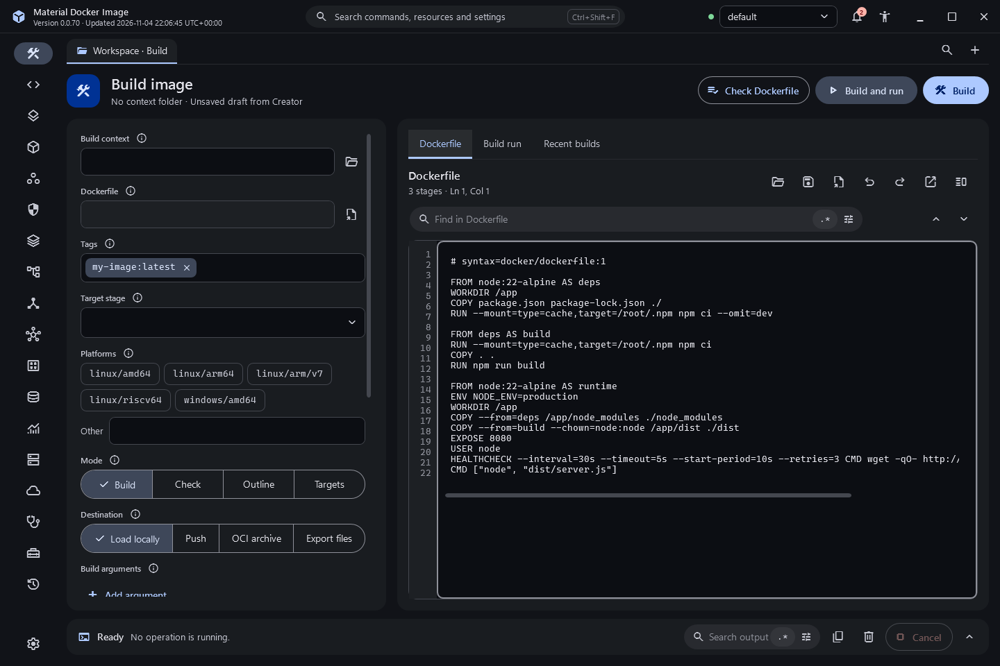</p>
<p>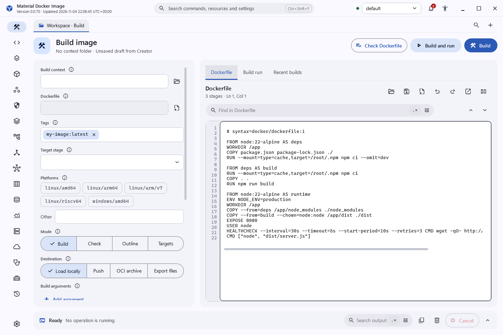</p></article>
<article id="doc-docs-features-build-companion-md" class="article"><h3>Build companion</h3><p class="source-label">Complete source: <a href="https://github.com/Ding-Ding-Projects/material-docker-image/blob/main/docs/features/build-companion.md">docs/features/build-companion.md</a></p><h3 id="doc-docs-features-build-companion-md-build-companion">Build companion</h3>
<p><code>MaterialDockerImageBuild.exe</code> is a small, separate Windows window for people who prefer a button to a command prompt. It does not replace <code>build.bat</code> or <code>build-installer.bat</code>; it runs them. Every release attaches it beside the installer.</p>
<h4 id="doc-docs-features-build-companion-md-what-it-does">What it does</h4>
<p class="source-item">• <strong>Finds the repository.</strong> It uses <code>--repo &lt;path&gt;</code> when given, otherwise walks up from its own folder looking for <code>build.bat</code>, otherwise asks you to choose the folder. A <code>--repo</code> path that is relative, contains characters <code>cmd.exe</code> would interpret (<code>&quot;</code>, <code>%</code>, <code>^</code>, <code>!</code>, <code>&lt;</code>, <code>&gt;</code>, <code>|</code>) or has no <code>build.bat</code> is refused.</p>
<p class="source-item">• <strong>Setup check.</strong> Lists <code>build.bat</code>, <code>build-installer.bat</code>, <code>download-dependencies.bat</code>, <code>.tools/dotnet-path.txt</code>, <code>.tools/node-path.txt</code> and <code>out/publish/MaterialDockerImage.exe</code>. The three batch files are required. The two <code>.tools</code> files are created by the first build: the batch files download and verify the pinned .NET SDK and Node.js themselves (see <code>build/dependencies.json</code>), without administrator rights. The companion only reports and explains this; it never elevates and never installs anything itself.</p>
<p class="source-item">• <strong>Build.</strong> Runs the repository&#39;s <code>build.bat</code>, with <code>-Version x.y.z</code> when a version is entered.</p>
<p class="source-item">• <strong>Build and run.</strong> Runs <code>build.bat</code>, then starts <code>out/publish/MaterialDockerImage.exe</code> only if the build exited with code 0 and the file exists.</p>
<p class="source-item">• <strong>Build installer.</strong> Runs <code>build-installer.bat -Version x.y.z</code>. The version is required. The installer is unsigned, so Windows may show an unknown-publisher warning.</p>
<p class="source-item">• <strong>Live progress.</strong> Standard output and standard error stream into the log view while the build runs (standard error lines are prefixed <code>[err]</code>). A phase label (starting, preparing dependencies, compiling and publishing, packaging installer) is inferred from the output text and is a hint only; the progress bar is indeterminate while running.</p>
<p class="source-item">• <strong>Real result.</strong> The window shows elapsed time, the real exit code and a state chip: Succeeded, Failed, Cancelled or Could not start. Success is reported only for exit code 0 without cancellation.</p>
<p class="source-item">• <strong>Cancel</strong> (button or Esc) kills the whole process tree. <strong>Copy log</strong> (button or Ctrl+Shift+C) copies the complete log.</p>
<p class="source-item">• <strong>Language.</strong> The language button cycles English, Cantonese and bilingual labels from a small local string table. Build output stays as the tools print it.</p>
<p>Keyboard: Ctrl+B build, Ctrl+R build and run, Ctrl+I installer, Esc cancel, Ctrl+Shift+C copy log. Every control has an automation name; the version field has help text; the state chip is a polite live region.</p>
<h4 id="doc-docs-features-build-companion-md-how-commands-are-run">How commands are run</h4>
<p>Each batch file is started as <code>cmd.exe /d /c &quot;&quot;&lt;repo&gt;\build.bat&quot; -Version 1.2.3&quot;</code> with the repository as the working directory. The version must match <code>^\d+\.\d+\.\d+$</code> (ASCII digits only, no trailing text). Nothing the user types reaches a command line unvalidated. The logic lives in <code>src/BuildCompanion/Logic/</code> (<code>BuildPlan</code>, <code>ArgumentValidation</code>, <code>BuildRunner</code>, <code>RunStates</code>, <code>PhaseTracker</code>, <code>RepoLocator</code>, <code>SetupCheck</code>, <code>CompanionStrings</code>) and has no WPF dependency, so the UI-state test project compiles it directly.</p>
<h4 id="doc-docs-features-build-companion-md-failure-modes">Failure modes</h4>
<p>| Situation | Result |</p>
<p>| --- | --- |</p>
<p>| Batch file exits non-zero | Failed, exit code shown, application not launched |</p>
<p>| <code>out/publish/MaterialDockerImage.exe</code> missing after Build and run | Could not start (never success) |</p>
<p>| Cancelled | Cancelled, process tree killed |</p>
<p>| Invalid version | Field error; the installer button stays disabled; nothing is run |</p>
<p>| Missing <code>build.bat</code> family | Setup check shows them missing; actions disabled |</p>
<p>| Clipboard unavailable | Message shown; log is unchanged |</p>
<h4 id="doc-docs-features-build-companion-md-appearance">Appearance</h4>
<p>Material 3 dark theme with the same colour roles and button shapes as the main application (<code>src/BuildCompanion/Theme.xaml</code> mirrors the role keys of <code>src/MaterialDockerImage/Themes/Material.xaml</code>; the Material Symbols font file is linked from the main project, not copied). There is no light theme or appearance editor in the companion.</p>
<h4 id="doc-docs-features-build-companion-md-packaging">Packaging</h4>
<p><code>build/publish-companion.ps1 [-Version x.y.z]</code> publishes <code>src/BuildCompanion</code> as a self-contained, single-file <code>win-x64</code> executable to <code>out/companion/MaterialDockerImageBuild.exe</code>, refuses any extra output file, rebinds the source inventory and writes <code>out/receipts/companion.json</code> (source, version, SHA-256, size). <code>build-installer.bat</code> runs it after packaging and copies the executable and receipt into <code>out/releases</code>, so the release workflow uploads both. The workflow verifies that both appear in the published release assets and that the receipt source equals the workflow commit.</p>
<h4 id="doc-docs-features-build-companion-md-verification">Verification</h4>
<p class="source-item">• <code>build.bat -Tests</code> runs the companion checks inside the UI-state suite: version validation (including Unicode digits, trailing newline and injected text), exact argument building for all three actions, unsafe repository paths, exit-code-to-state mapping, repository discovery, string table completeness, and real runs of a stand-in <code>build.bat</code> through the companion&#39;s own <code>cmd.exe /c</code> route (stdout and stderr streaming, exit 0, exit 7, missing application, and cancellation of a running tree).</p>
<p class="source-item">• <code>build/publish-companion.ps1</code> produced the single-file executable and receipt.</p>
<p class="source-item">• Not yet verified: interactive use of the window (clicking each action, the folder picker, copy log, language cycling, keyboard shortcuts), a real end-to-end <code>build.bat</code> run driven from the window, screen-reader behaviour, and behaviour at other display scales. No window was opened during development of this feature.</p></article>
<article id="doc-docs-features-canvas-md" class="article"><h3>Canvas</h3><p class="source-label">Complete source: <a href="https://github.com/Ding-Ding-Projects/material-docker-image/blob/main/docs/features/canvas.md">docs/features/canvas.md</a></p><h3 id="doc-docs-features-canvas-md-canvas">Canvas</h3>
<p>The Canvas workspace provides a visual view of Dockerfile stages and runtime container relationships. Pan and zoom to inspect larger graphs, select a node to see its details, and return to the source editor for syntax that the current parser cannot safely round-trip.</p>
<p>Stage edges represent parsed dependencies such as <code>FROM</code> and <code>COPY --from</code>. A dependency graph is an explanation of configuration, not proof that a build has run. Runtime nodes come from a refreshed engine inventory and may become stale when an external tool changes containers or networks.</p>
<p>The editor must preserve unsupported instructions. A partial parser must not silently rewrite a complete Dockerfile or invent a dependency for an unresolved expression. Save only intentional changes and review the resulting text.</p>
<h4 id="doc-docs-features-canvas-md-verification-status">Verification status</h4>
<p>Implementation and built interaction evidence are tracked separately in the capability inventory. Graph rendering alone does not prove drag, zoom, editing, or synchronization behavior.</p>
<h4 id="doc-docs-features-canvas-md-section">廣東話</h4>
<p>畫布顯示建置階段同容器關係。可以移動畫面、縮放同揀節點睇詳情。連線表示設定入面嘅關係，唔代表建置已經執行。未能安全轉換嘅 Dockerfile 語法要保留，唔可以因為畫面靚就偷偷改走。</p>
<h4 id="doc-docs-features-canvas-md-screenshots">Screenshots</h4>
<p>Captured from the built application (inventory <span class="muted">(document unavailable)</span>).</p>
<p></p></article>
<article id="doc-docs-features-capability-inventory-md" class="article"><h3>Capability inventory</h3><p class="source-label">Complete source: <a href="https://github.com/Ding-Ding-Projects/material-docker-image/blob/main/docs/features/capability-inventory.md">docs/features/capability-inventory.md</a></p><h3 id="doc-docs-features-capability-inventory-md-capability-inventory">Capability inventory</h3>
<p>Implemented controls, focused checks, real native execution and complete acceptance are separate states. The productive application is native WPF. All 109 required identifiers below remain retained. No row claims complete acceptance from a partial workflow.</p>
<h4 id="doc-docs-features-capability-inventory-md-product-workflows">Product workflows</h4>
<p>| Workflow | Implemented behavior and bounded evidence |</p>
<p>| --- | --- |</p>
<p>| Structured Docker execution | 23 core checks passed for argument separation, output bounds, cancellation and parsing. |</p>
<p>| Build workspace | Multiple tags, labels, target/platform selection, local load, registry push, OCI archive, cache import/export and secret-file rows implemented. Real native build at f370d66 verified exact label whitespace. OCI/cache/secret and registry runtime combinations are not all exercised. |</p>
<p>| Run editor | Explicit JSON argv, non-secret environment, entrypoint/user/workdir, CPU/memory, restart policy and additional port/mount rows implemented. Real native run at f370d66 verified exact environment whitespace. GPU, devices, health-check configuration and interactive terminals remain gaps. |</p>
<p>| Native Canvas | Stage graph/object selection, inspector, supported alias/base edits, target selection, source navigation, zoom/pan/fit and inspected runtime memberships implemented. 51 UI-state/parser checks passed. Graph rendering is not proof of every interaction or Dockerfile construct. |</p>
<p>| Images, resources and Compose | Image/container/volume/network operations and loaded Compose save-path/context protection implemented. Complete workflow acceptance remains open. |</p>
<p>| Restart restoration | Source 3ce1ed7 local 0.5.0 build/installer production and actual restart restoration passed, preserving the absolute example folder and exact source after line-ending normalization. Included in verified normal v0.5.1 at ad5d3ac. Original capture provenance remains 3ce1ed7/0.5.0. |</p>
<p>| Package and release | Normal v0.5.1 at ad5d3ac5c02588e8efcc926715119b87a9c7c6d5 was verified through successful run 39112649034, exact tag source and five asset sizes/digests. |</p>
<p>| Installed update and setup | Existing installation updated through Update.exe to 0.5.1.0; executable matched the published package and settings were preserved. Installed hidden launch detected Docker, exercised Setup Back/Next/Finish, persisted completion at step 2 and displayed productive Build. Fresh install, update-ready banner, cancellation and uninstall acceptance remain open. |</p>
<p>| Current native captures | English, dark, 100% scaling at normal/minimum sizes only. README captures are retained and inspected for 3ce1ed7 local 0.5.0: Build 1440x960, populated Canvas 1440x960 and 960x720. Minimum graph panning and inspector scrolling are intentional. Full matrix is incomplete. |</p>
<p>| Documentation and companions | Deployment 39112649029 for ad5d3ac delivered 12 articles, 109 neutral identifiers and three byte-identical PNGs. 1440/320 widths had no horizontal overflow; guide/checklist/theme/bilingual persistence and exact About homepage passed. Complete documentation/wiki acceptance and portable documentation/build companions remain incomplete. |</p>
<h4 id="doc-docs-features-capability-inventory-md-required-feature-inventory">Required-feature inventory</h4>
<p>&lt;!-- Generated from website/feature-inventory.json by website/render.mjs. --&gt;</p>
<p>123 entries retain 109 required identifiers, 10 product workflows and 4 milestones. Fully verified: 0. Implemented with verification pending: 30. Planned: 0. Unverified: 93.</p>
<h5 id="doc-docs-features-capability-inventory-md-interface-and-personalization">Interface and personalization</h5>
<p>| Identifier | Capability | Status | Remaining actions |</p>
<p>| --- | --- | --- | --- |</p>
<p>| <code>accessibility-sizing</code> | Accessibility Sizing | Unverified | Confirm implementation, documentation, localization, persistence where applicable, focused regression checks and source-bound interaction evidence for accessibility-sizing. |</p>
<p>| <code>adhd-modes</code> | Adhd Modes | Implemented, verification pending | Drive each mode in the built window, capture the Focus and Momentum states and check them in all language modes, themes and display scales. |</p>
<p>| <code>app-icon</code> | App Icon | Implemented, verification pending | Inspect the icon in the installed shortcut, taskbar and Settings app list from the released installer, and capture it from the built application. |</p>
<p>| <code>appearance-editor</code> | Appearance Editor | Unverified | Drive the element editor in the built window in every language mode, theme and display scale; bring element overrides into presets, export and Undo; add the remaining property types (italic, underline, shadow, spacing, alignment). |</p>
<p>| <code>blank-editors</code> | Blank Editors | Unverified | Confirm implementation, documentation, localization, persistence where applicable, focused regression checks and source-bound interaction evidence for blank-editors. |</p>
<p>| <code>changelog</code> | Changelog | Implemented, verification pending | Calendar date picker with month/year jump, range presets and the language-mode voice for entries are not built; entries show original subject lines only, newer releases published after a build are not listed, and nothing was driven in the built window yet. |</p>
<p>| <code>layout-overflow-matrix</code> | Layout Overflow Matrix | Implemented, verification pending | The probed captures show the test host&#39;s own engine data, so only the summary (evidence/layout-matrix-2026-11/summary.json) is published. The CI screenshot run does not pass the probe flag yet. |</p>
<p>| <code>color-picker</code> | Color Picker | Unverified | Confirm implementation, documentation, localization, persistence where applicable, focused regression checks and source-bound interaction evidence for color-picker. |</p>
<p>| <code>mobile-website</code> | Mobile Website | Unverified | Confirm implementation, documentation, localization, persistence where applicable, focused regression checks and source-bound interaction evidence for mobile-website. |</p>
<p>| <code>dim-sum</code> | Dim Sum | Unverified | Drive the toast in the built window (picture and offline name-only paths, three language modes, reduced motion, screen reader) and run the live catalogue fetch inside the app. |</p>
<p>| <code>dim-sum-code-names</code> | Dim Sum Code Names | Unverified | Confirm implementation, documentation, localization, persistence where applicable, focused regression checks and source-bound interaction evidence for dim-sum-code-names. |</p>
<p>| <code>dim-sum-photo-source</code> | Dim Sum Photo Source | Unverified | Run the live catalogue and picture fetch inside the app, and record the revision it cached. |</p>
<p>| <code>display-name</code> | Display Name | Implemented, verification pending | Verify rename, reset, restart persistence and the history revision count interactively in the built application in every language mode and theme. |</p>
<p>| <code>front-provenance</code> | Front Provenance | Implemented, verification pending | Verify the stamp on the deployed page after the next documentation change, and decide whether the in-application front screen needs its own provenance verification record. |</p>
<p>| <code>functional-ui</code> | Functional Ui | Unverified | Confirm implementation, documentation, localization, persistence where applicable, focused regression checks and source-bound interaction evidence for functional-ui. |</p>
<p>| <code>funny-emoji</code> | Funny Emoji | Unverified | Confirm implementation, documentation, localization, persistence where applicable, focused regression checks and source-bound interaction evidence for funny-emoji. |</p>
<p>| <code>guided-forms</code> | Guided Forms | Unverified | Confirm implementation, documentation, localization, persistence where applicable, focused regression checks and source-bound interaction evidence for guided-forms. |</p>
<p>| <code>honest-monetization</code> | Honest Monetization | Unverified | Confirm implementation, documentation, localization, persistence where applicable, focused regression checks and source-bound interaction evidence for honest-monetization. |</p>
<p>| <code>human-time-estimate</code> | Human Time Estimate | Unverified | Confirm implementation, documentation, localization, persistence where applicable, focused regression checks and source-bound interaction evidence for human-time-estimate. |</p>
<p>| <code>info-icon-guidance</code> | Info Icon Guidance | Implemented, verification pending | Roughly a dozen fields were filled by hand and the guard counts only settings rows; other forms may still have labels without an info icon, and the icon was not exercised in the built window. |</p>
<p>| <code>language</code> | Language | Unverified | Confirm implementation, documentation, localization, persistence where applicable, focused regression checks and source-bound interaction evidence for language. |</p>
<p>| <code>logo-customization</code> | Logo Customization | Implemented, verification pending | Verify the picker interactively in the built application at every language mode, theme and display scale; add crop, fit and background editing, scheduled settings and appearance export, and capture the real selected logo. |</p>
<p>| <code>material-design</code> | Material Design | Unverified | Confirm implementation, documentation, localization, persistence where applicable, focused regression checks and source-bound interaction evidence for material-design. |</p>
<p>| <code>motion</code> | Motion | Unverified | Confirm implementation, documentation, localization, persistence where applicable, focused regression checks and source-bound interaction evidence for motion. |</p>
<p>| <code>narration</code> | Narration | Unverified | Confirm implementation, documentation, localization, persistence where applicable, focused regression checks and source-bound interaction evidence for narration. |</p>
<p>| <code>notifications</code> | Notifications | Unverified | Confirm implementation, documentation, localization, persistence where applicable, focused regression checks and source-bound interaction evidence for notifications. |</p>
<p>| <code>onboarding-wizard</code> | Onboarding Wizard | Unverified | Confirm implementation, documentation, localization, persistence where applicable, focused regression checks and source-bound interaction evidence for onboarding-wizard. |</p>
<p>| <code>operational-skill</code> | Operational Skill | Unverified | Confirm implementation, documentation, localization, persistence where applicable, focused regression checks and source-bound interaction evidence for operational-skill. |</p>
<p>| <code>overlay-panels</code> | Overlay Panels | Unverified | Confirm implementation, documentation, localization, persistence where applicable, focused regression checks and source-bound interaction evidence for overlay-panels. |</p>
<p>| <code>rendered-provider-text</code> | Rendered Provider Text | Unverified | Confirm implementation, documentation, localization, persistence where applicable, focused regression checks and source-bound interaction evidence for rendered-provider-text. |</p>
<p>| <code>rich-controls</code> | Rich Controls | Unverified | Confirm implementation, documentation, localization, persistence where applicable, focused regression checks and source-bound interaction evidence for rich-controls. |</p>
<p>| <code>sanitized-instruction-copy</code> | Sanitized Instruction Copy | Unverified | Confirm implementation, documentation, localization, persistence where applicable, focused regression checks and source-bound interaction evidence for sanitized-instruction-copy. |</p>
<p>| <code>scheduled-settings</code> | Scheduled Settings | Implemented, verification pending | Drive the schedule editor, the three sources (with a real https endpoint and a real Home Assistant) and the lend and restore behaviour in the built window at every language, theme and scale; verify DPAPI token storage on a real profile; capture the real editor. |</p>
<p>| <code>screen-recording</code> | Screen Recording | Unverified | Confirm implementation, documentation, localization, persistence where applicable, focused regression checks and source-bound interaction evidence for screen-recording. |</p>
<p>| <code>settings-explanations</code> | Settings Explanations | Unverified | Confirm implementation, documentation, localization, persistence where applicable, focused regression checks and source-bound interaction evidence for settings-explanations. |</p>
<p>| <code>shared-link-embed</code> | Shared Link Embed | Implemented, verification pending | Confirm how real platforms render a shared link to the deployed site (platform crawlers were not exercised) and refresh the preview image when the application is redesigned. |</p>
<p>| <code>support-tickets</code> | Support Tickets | Unverified | Drive the desk in the built window: file, advance and resolve a ticket, confirm the folder that opens matches the path shown, and check narrow widths, high display scales and all three language modes. |</p>
<p>| <code>vendored-fonts</code> | Vendored Fonts | Unverified | Confirm implementation, documentation, localization, persistence where applicable, focused regression checks and source-bound interaction evidence for vendored-fonts. |</p>
<h5 id="doc-docs-features-capability-inventory-md-navigation-and-workflow">Navigation and workflow</h5>
<p>| Identifier | Capability | Status | Remaining actions |</p>
<p>| --- | --- | --- | --- |</p>
<p>| <code>bulk-actions</code> | Bulk Actions | Unverified | Confirm implementation, documentation, localization, persistence where applicable, focused regression checks and source-bound interaction evidence for bulk-actions. |</p>
<p>| <code>collapse-filters</code> | Collapse Filters | Implemented, verification pending | Check every collapsible surface in the built window at narrow widths and in all language modes; panels other than chip bars and statistic strips are not collapsible yet. |</p>
<p>| <code>command-palette</code> | Command Palette | Unverified | Confirm implementation, documentation, localization, persistence where applicable, focused regression checks and source-bound interaction evidence for command-palette. |</p>
<p>| <code>context-menus</code> | Context Menus | Unverified | Confirm implementation, documentation, localization, persistence where applicable, focused regression checks and source-bound interaction evidence for context-menus. |</p>
<p>| <code>exports</code> | Exports | Implemented, verification pending | Non-table views, settings and history exports keep their own formats; no export disclosure of lossy columns beyond display text, and no export was driven in the built window yet. |</p>
<p>| <code>external-editor</code> | External Editor | Unverified | Confirm implementation, documentation, localization, persistence where applicable, focused regression checks and source-bound interaction evidence for external-editor. |</p>
<p>| <code>local-history</code> | Local History | Unverified | Confirm implementation, documentation, localization, persistence where applicable, focused regression checks and source-bound interaction evidence for local-history. |</p>
<p>| <code>menu-shortcuts</code> | Menu Shortcuts | Implemented, verification pending | List-local keys (Delete, Enter, Alt+Up, Alt+Down, Ctrl+A, Ctrl+C) are still typed beside their handlers; the palette hint and the accessibility shortcut list are still static text; nothing was checked in the built window. |</p>
<p>| <code>progress-recovery</code> | Progress Recovery | Unverified | Confirm implementation, documentation, localization, persistence where applicable, focused regression checks and source-bound interaction evidence for progress-recovery. |</p>
<p>| <code>regex-search</code> | Regex Search | Unverified | Exercise the popover, its new panels, the stacked nested builder, the folder search and its dialogs and the start-up arguments in the built window, finish the partial rows that .NET allows (file attribute and encoding filters in the folder search, external tool return and automation, the remaining English-only tables and conversion reasons), keep the eight engine-impossible rows documented, and capture source-bound HuiShots. |</p>
<p>| <code>tabs</code> | Tabs | Unverified | Confirm implementation, documentation, localization, persistence where applicable, focused regression checks and source-bound interaction evidence for tabs. |</p>
<p>| <code>workflow-navigation</code> | Workflow Navigation | Unverified | Confirm implementation, documentation, localization, persistence where applicable, focused regression checks and source-bound interaction evidence for workflow-navigation. |</p>
<h5 id="doc-docs-features-capability-inventory-md-safety-and-privacy">Safety and privacy</h5>
<p>| Identifier | Capability | Status | Remaining actions |</p>
<p>| --- | --- | --- | --- |</p>
<p>| <code>private-conversation-discipline</code> | Private Conversation Discipline | Unverified | Confirm implementation, documentation, localization, persistence where applicable, focused regression checks and source-bound interaction evidence for private-conversation-discipline. |</p>
<p>| <code>authenticator</code> | Authenticator | Unverified | Add camera registration, grouping, a clock-skew warning and a super-confirmed secrets export, then drive both sections, including the QR image and clipboard routes, in the built window. |</p>
<p>| <code>element-locks</code> | Element Locks | Unverified | Drive the wizard, the disabled behaviour, the timed relock, the Locks manager, the tab and group locks, the appearance locks, the click-to-unlock prompt, the locked palette rows and the PIN keypad in the built window; add a keypad to the PIN wizard, user-made tab groups with their searches, and an unlock prompt anchored beside the control. |</p>
<p>| <code>personal-vocabulary</code> | Personal Vocabulary | Unverified | Confirm implementation, documentation, localization, persistence where applicable, focused regression checks and source-bound interaction evidence for personal-vocabulary. |</p>
<p>| <code>school-mode</code> | School Mode | Unverified | Hide the scheduled language rule and the Locks manager language row under the mode, and drive the passkey choice, the hidden controls and the mode between two running apps in the built window. |</p>
<p>| <code>self-signing</code> | Self Signing | Unverified | Confirm implementation, documentation, localization, persistence where applicable, focused regression checks and source-bound interaction evidence for self-signing. |</p>
<p>| <code>super-confirmation</code> | Super Confirmation | Unverified | Confirm implementation, documentation, localization, persistence where applicable, focused regression checks and source-bound interaction evidence for super-confirmation. |</p>
<p>| <code>unlock-ladder</code> | Unlock Ladder | Unverified | Drive the ladder in the built window (all three games, keyboard operation, narrow layouts, every language mode and display scale), then finish password and combined policies and unlock durations. |</p>
<p>| <code>vocabulary-drop-apply</code> | Vocabulary Drop Apply | Unverified | Confirm implementation, documentation, localization, persistence where applicable, focused regression checks and source-bound interaction evidence for vocabulary-drop-apply. |</p>
<p>| <code>vocabulary-hash-lock</code> | Vocabulary Hash Lock | Unverified | Confirm implementation, documentation, localization, persistence where applicable, focused regression checks and source-bound interaction evidence for vocabulary-hash-lock. |</p>
<p>| <code>vocabulary-unlock-boundary</code> | Vocabulary Unlock Boundary | Unverified | Confirm implementation, documentation, localization, persistence where applicable, focused regression checks and source-bound interaction evidence for vocabulary-unlock-boundary. |</p>
<h5 id="doc-docs-features-capability-inventory-md-build-and-delivery">Build and delivery</h5>
<p>| Identifier | Capability | Status | Remaining actions |</p>
<p>| --- | --- | --- | --- |</p>
<p>| <code>auto-updates</code> | Auto Updates | Implemented, verification pending | Never exercised against a real published feed or an installed copy: no staged update, banner, restart or rollback has been observed; there is no feed signature check and no download progress or deferral setting. |</p>
<p>| <code>build-entrypoints</code> | Build Entrypoints | Unverified | Confirm implementation, documentation, localization, persistence where applicable, focused regression checks and source-bound interaction evidence for build-entrypoints. |</p>
<p>| <code>bundled-dependencies</code> | Bundled Dependencies | Unverified | Confirm implementation, documentation, localization, persistence where applicable, focused regression checks and source-bound interaction evidence for bundled-dependencies. |</p>
<p>| <code>ci-bootstrap</code> | Ci Bootstrap | Unverified | Confirm implementation, documentation, localization, persistence where applicable, focused regression checks and source-bound interaction evidence for ci-bootstrap. |</p>
<p>| <code>dependency-fetcher</code> | Dependency Fetcher | Unverified | Confirm implementation, documentation, localization, persistence where applicable, focused regression checks and source-bound interaction evidence for dependency-fetcher. |</p>
<p>| <code>download-handoff</code> | Download Handoff | Unverified | Confirm implementation, documentation, localization, persistence where applicable, focused regression checks and source-bound interaction evidence for download-handoff. |</p>
<p>| <code>encrypted-public-builder</code> | Encrypted Public Builder | Unverified | Confirm implementation, documentation, localization, persistence where applicable, focused regression checks and source-bound interaction evidence for encrypted-public-builder. |</p>
<p>| <code>forge-publishing</code> | Forge Publishing | Unverified | Confirm implementation, documentation, localization, persistence where applicable, focused regression checks and source-bound interaction evidence for forge-publishing. |</p>
<p>| <code>fresh-build-run-command</code> | Fresh Build Run Command | Unverified | Confirm implementation, documentation, localization, persistence where applicable, focused regression checks and source-bound interaction evidence for fresh-build-run-command. |</p>
<p>| <code>installer-download-button</code> | Installer Download Button | Implemented, verification pending | Verify the deployed home page on the live site, on a phone-width screen, in each language mode and with a release that carries every named asset; confirm keyboard use and the rate-limited path against the real service. |</p>
<p>| <code>release-dim-sum-photo</code> | Release Dim Sum Photo | Unverified | Confirm implementation, documentation, localization, persistence where applicable, focused regression checks and source-bound interaction evidence for release-dim-sum-photo. |</p>
<p>| <code>release-line-counts</code> | Release Line Counts | Unverified | Confirm implementation, documentation, localization, persistence where applicable, focused regression checks and source-bound interaction evidence for release-line-counts. |</p>
<p>| <code>release-timing</code> | Release Timing | Unverified | Confirm implementation, documentation, localization, persistence where applicable, focused regression checks and source-bound interaction evidence for release-timing. |</p>
<p>| <code>release-workflow</code> | Release Workflow | Unverified | Confirm implementation, documentation, localization, persistence where applicable, focused regression checks and source-bound interaction evidence for release-workflow. |</p>
<p>| <code>runner-selection</code> | Runner Selection | Unverified | Confirm implementation, documentation, localization, persistence where applicable, focused regression checks and source-bound interaction evidence for runner-selection. |</p>
<p>| <code>squirrel-installer</code> | Squirrel Installer | Unverified | Confirm implementation, documentation, localization, persistence where applicable, focused regression checks and source-bound interaction evidence for squirrel-installer. |</p>
<h5 id="doc-docs-features-capability-inventory-md-documentation-and-evidence">Documentation and evidence</h5>
<p>| Identifier | Capability | Status | Remaining actions |</p>
<p>| --- | --- | --- | --- |</p>
<p>| <code>closeout-prompt</code> | Closeout Prompt | Unverified | Confirm implementation, documentation, localization, persistence where applicable, focused regression checks and source-bound interaction evidence for closeout-prompt. |</p>
<p>| <code>completeness-parity</code> | Completeness Parity | Unverified | Confirm implementation, documentation, localization, persistence where applicable, focused regression checks and source-bound interaction evidence for completeness-parity. |</p>
<p>| <code>design-folder</code> | Design Folder | Unverified | Confirm implementation, documentation, localization, persistence where applicable, focused regression checks and source-bound interaction evidence for design-folder. |</p>
<p>| <code>design-reference-parity</code> | Design Reference Parity | Unverified | Confirm implementation, documentation, localization, persistence where applicable, focused regression checks and source-bound interaction evidence for design-reference-parity. |</p>
<p>| <code>discussion-records</code> | Discussion Records | Unverified | Confirm implementation, documentation, localization, persistence where applicable, focused regression checks and source-bound interaction evidence for discussion-records. |</p>
<p>| <code>feature-articles</code> | Feature Articles | Unverified | Confirm implementation, documentation, localization, persistence where applicable, focused regression checks and source-bound interaction evidence for feature-articles. |</p>
<p>| <code>feature-docs</code> | Feature Docs | Unverified | Confirm implementation, documentation, localization, persistence where applicable, focused regression checks and source-bound interaction evidence for feature-docs. |</p>
<p>| <code>handoff-record</code> | Handoff Record | Unverified | Confirm implementation, documentation, localization, persistence where applicable, focused regression checks and source-bound interaction evidence for handoff-record. |</p>
<p>| <code>homepage-link</code> | Homepage Link | Unverified | Confirm implementation, documentation, localization, persistence where applicable, focused regression checks and source-bound interaction evidence for homepage-link. |</p>
<p>| <code>landing-site</code> | Landing Site | Unverified | Confirm implementation, documentation, localization, persistence where applicable, focused regression checks and source-bound interaction evidence for landing-site. |</p>
<p>| <code>offline-docs</code> | Offline Docs | Unverified | Confirm implementation, documentation, localization, persistence where applicable, focused regression checks and source-bound interaction evidence for offline-docs. |</p>
<p>| <code>offline-documentation-companion</code> | Offline Documentation Companion | Implemented, verification pending | Run the packaging in the hosted release workflow, download the attached archive from a real release and open it from a file location in a browser; the interactive offline experience and the other portable documentation duties (the full wiki) remain unverified. |</p>
<p>| <code>product-evidence</code> | Product Evidence | Unverified | Confirm implementation, documentation, localization, persistence where applicable, focused regression checks and source-bound interaction evidence for product-evidence. |</p>
<p>| <code>project-board</code> | Project Board | Unverified | Confirm implementation, documentation, localization, persistence where applicable, focused regression checks and source-bound interaction evidence for project-board. |</p>
<p>| <code>project-profile</code> | Project Profile | Unverified | Confirm implementation, documentation, localization, persistence where applicable, focused regression checks and source-bound interaction evidence for project-profile. |</p>
<p>| <code>public-screenshot-gallery</code> | Public Screenshot Gallery | Unverified | Confirm implementation, documentation, localization, persistence where applicable, focused regression checks and source-bound interaction evidence for public-screenshot-gallery. |</p>
<p>| <code>readme-prompt-banner</code> | Readme Prompt Banner | Unverified | Confirm implementation, documentation, localization, persistence where applicable, focused regression checks and source-bound interaction evidence for readme-prompt-banner. |</p>
<p>| <code>roadmap-checklist</code> | Roadmap Checklist | Unverified | Confirm implementation, documentation, localization, persistence where applicable, focused regression checks and source-bound interaction evidence for roadmap-checklist. |</p>
<p>| <code>tabbed-readme</code> | Tabbed Readme | Unverified | Confirm implementation, documentation, localization, persistence where applicable, focused regression checks and source-bound interaction evidence for tabbed-readme. |</p>
<p>| <code>shared-instruction-portable-editions</code> | Shared Instruction Portable Editions | Unverified | Confirm implementation, documentation, localization, persistence where applicable, focused regression checks and source-bound interaction evidence for shared-instruction-portable-editions. |</p>
<p>| <code>wiki-documentation-sync</code> | Wiki Documentation Sync | Unverified | Confirm implementation, documentation, localization, persistence where applicable, focused regression checks and source-bound interaction evidence for wiki-documentation-sync. |</p>
<h5 id="doc-docs-features-capability-inventory-md-tools-and-integrations">Tools and integrations</h5>
<p>| Identifier | Capability | Status | Remaining actions |</p>
<p>| --- | --- | --- | --- |</p>
<p>| <code>discord-status-bridge</code> | Discord Status Bridge | Unverified | Confirm implementation, documentation, localization, persistence where applicable, focused regression checks and source-bound interaction evidence for discord-status-bridge. |</p>
<p>| <code>file-converter</code> | File Converter | Unverified | Confirm implementation, documentation, localization, persistence where applicable, focused regression checks and source-bound interaction evidence for file-converter. |</p>
<p>| <code>minecraft-server-manager</code> | Minecraft Server Manager | Unverified | Confirm implementation, documentation, localization, persistence where applicable, focused regression checks and source-bound interaction evidence for minecraft-server-manager. |</p>
<p>| <code>ollama-suite</code> | Ollama Suite | Unverified | Confirm implementation, documentation, localization, persistence where applicable, focused regression checks and source-bound interaction evidence for ollama-suite. |</p>
<p>| <code>panic-webhooks</code> | Panic Webhooks | Unverified | Confirm implementation, documentation, localization, persistence where applicable, focused regression checks and source-bound interaction evidence for panic-webhooks. |</p>
<p>| <code>postman-collections</code> | Postman Collections | Unverified | Confirm implementation, documentation, localization, persistence where applicable, focused regression checks and source-bound interaction evidence for postman-collections. |</p>
<p>| <code>qr-pairing</code> | Qr Pairing | Unverified | Scan the QR code with a real authenticator app, check it in both themes in the built window, and drive the camera registration route with a real camera and permission prompt (the image-file, clipboard and camera routes are built but not driven in the built window). |</p>
<p>| <code>roblox-model-catalogue</code> | Roblox Model Catalogue | Unverified | Confirm implementation, documentation, localization, persistence where applicable, focused regression checks and source-bound interaction evidence for roblox-model-catalogue. |</p>
<p>| <code>roblox-visual-realism</code> | Roblox Visual Realism | Unverified | Confirm implementation, documentation, localization, persistence where applicable, focused regression checks and source-bound interaction evidence for roblox-visual-realism. |</p>
<p>| <code>status-hub</code> | Status Hub | Unverified | Confirm implementation, documentation, localization, persistence where applicable, focused regression checks and source-bound interaction evidence for status-hub. |</p>
<p>| <code>tidbyt-displays</code> | Tidbyt Displays | Unverified | Confirm implementation, documentation, localization, persistence where applicable, focused regression checks and source-bound interaction evidence for tidbyt-displays. |</p>
<h5 id="doc-docs-features-capability-inventory-md-product-workflows-2">Product workflows</h5>
<p>| Identifier | Capability | Status | Remaining actions |</p>
<p>| --- | --- | --- | --- |</p>
<p>| <code>workflow-structured-execution</code> | Structured Docker execution | Implemented, verification pending | Complete the remaining workflow combinations and independent acceptance described in the source reference. Existing bounded evidence does not establish full verification. |</p>
<p>| <code>workflow-build-workspace</code> | Build workspace | Implemented, verification pending | Complete the remaining workflow combinations and independent acceptance described in the source reference. Existing bounded evidence does not establish full verification. |</p>
<p>| <code>workflow-run-editor</code> | Run editor | Implemented, verification pending | Complete the remaining workflow combinations and independent acceptance described in the source reference. Existing bounded evidence does not establish full verification. |</p>
<p>| <code>workflow-native-canvas</code> | Native Canvas | Implemented, verification pending | Complete the remaining workflow combinations and independent acceptance described in the source reference. Existing bounded evidence does not establish full verification. |</p>
<p>| <code>workflow-resource-management</code> | Images, resources and Compose | Implemented, verification pending | Complete the remaining workflow combinations and independent acceptance described in the source reference. Existing bounded evidence does not establish full verification. |</p>
<p>| <code>workflow-restart-restoration</code> | Restart restoration | Implemented, verification pending | Complete the remaining workflow combinations and independent acceptance described in the source reference. Existing bounded evidence does not establish full verification. |</p>
<p>| <code>workflow-package-release</code> | Package and release | Implemented, verification pending | Complete the remaining workflow combinations and independent acceptance described in the source reference. Existing bounded evidence does not establish full verification. |</p>
<p>| <code>workflow-installed-setup</code> | Installed update and setup | Implemented, verification pending | Complete the remaining workflow combinations and independent acceptance described in the source reference. Existing bounded evidence does not establish full verification. |</p>
<p>| <code>workflow-native-captures</code> | Current native captures | Implemented, verification pending | Complete the remaining workflow combinations and independent acceptance described in the source reference. Existing bounded evidence does not establish full verification. |</p>
<p>| <code>workflow-documentation-companions</code> | Documentation and companions | Implemented, verification pending | Complete the remaining workflow combinations and independent acceptance described in the source reference. Existing bounded evidence does not establish full verification. |</p>
<h5 id="doc-docs-features-capability-inventory-md-planned-milestones">Planned milestones</h5>
<p>| Identifier | Capability | Status | Remaining actions |</p>
<p>| --- | --- | --- | --- |</p>
<p>| <code>feature-checklist</code> | Feature completion checklist | Implemented, verification pending | Complete the capture-promotion and cleanup receipt. Isolated profile removal was rejected, so captures remain retained privately. Verify each later deployment separately; full accessibility and higher physical scales remain outside the bounded evidence. |</p>
<p>| <code>container-health-checks</code> | Container health checks | Implemented, verification pending | Exercise the editor fields and the live inspector refresh in the built WPF application, bound to the exact source commit and artifact hash, with captures; no GUI interaction was performed yet. |</p>
<p>| <code>container-device-mappings</code> | Container device mappings | Implemented, verification pending | Exercise the device rows and cgroup rule field in the built WPF application with captures, and test a real host device on a supported engine host; no GUI interaction was performed yet. |</p>
<p>| <code>container-gpu-access</code> | Container GPU access | Implemented, verification pending | Verify with a GPU-capable engine host that a container really sees the GPU, and exercise the controls in the built WPF application with captures; neither was performed. |</p>
<h4 id="doc-docs-features-capability-inventory-md-known-limits">Known limits</h4>
<p>Complete RegexBuddy parity, full localization, protected local wording import, shared school mode, narration, advanced appearance controls, server-management integration, portable documentation/build companions and complete display-scale acceptance are not established. They must not be described as fully delivered behavior. All 109 required rows remain unverified for complete acceptance even where bounded implementation evidence exists above.</p>
<p>Remote engines, alternative architectures, GPU/device/health-check controls and interactive terminals need additional implementation or independent runtime acceptance. A successful local native build/run does not verify these routes. OCI export, registry push, supported cache backends and secret-file builds need their own runtime evidence.</p>
<p>Current native visual scope does not establish Cantonese/bilingual modes, light theme, 125%, 150% or 200% scaling. Normal v0.5.1 at ad5d3ac is the verified delivery baseline and includes the 3ce1ed7 restart fix. Its bounded current-host update/launch/setup proof does not establish fresh-install or full installer/update lifecycle acceptance. The documentation persistence checks do not expand native-language or scale evidence. All 109 neutral identifiers in the inventory remain unverified for complete acceptance.</p></article>
<article id="doc-docs-features-container-configuration-md" class="article"><h3>Container configuration</h3><p class="source-label">Complete source: <a href="https://github.com/Ding-Ding-Projects/material-docker-image/blob/main/docs/features/container-configuration.md">docs/features/container-configuration.md</a></p><h3 id="doc-docs-features-container-configuration-md-container-configuration">Container configuration</h3>
<p>Select an image from a refreshed inventory, then choose Run. The dialog remains bound to the engine context and generation that produced the selection. A changed context invalidates the selection.</p>
<h4 id="doc-docs-features-container-configuration-md-ports-and-storage">Ports and storage</h4>
<p>The basic port field uses <code>host:container</code>, optionally followed by <code>/tcp</code> or <code>/udp</code>, and binds to loopback. Additional port rows expose the bind address, host port, container port and protocol independently. An all-interface address publishes more broadly and must be chosen intentionally.</p>
<p>Additional mount rows distinguish named volumes from bind paths, provide a container destination, and default to read-only. Browse chooses a folder on this computer. A bind source belongs to the selected engine host, which may be remote; the application does not incorrectly require a remote path to exist locally. Confirm that the engine can access any chosen source.</p>
<h4 id="doc-docs-features-container-configuration-md-execution-and-environment">Execution and environment</h4>
<p>Command arguments are a JSON string array, for example <code>[&quot;/bin/echo&quot;, &quot;hello world&quot;]</code>. Each string remains a separate argument after the image operand. A shell inside a container runs only if explicitly selected as the container executable; the application does not invoke a host shell for Docker operations.</p>
<p>Environment entries use <code>NAME=value</code>, one per line. Everything after the first equals sign is preserved, including trailing spaces. Enter non-secret values only. Entrypoint, container user and working directory can be overridden independently; blank values retain the image behavior where Docker permits it.</p>
<h4 id="doc-docs-features-container-configuration-md-resources-and-security">Resources and security</h4>
<p>CPU and memory limits, restart policy, read-only root filesystem and prevention of new privileges are exposed as real controls. The engine validates their final compatibility with the chosen image and host. Preventing new privileges is enabled in this editor by default and may affect images that rely on set-user-ID behavior.</p>
<p>No privileged mode or host networking is enabled by this dialog. Interactive terminals open from Containers › Exec › Open terminal as <code>docker exec -it &lt;container&gt; &lt;shell&gt;</code> in a separate console window. By default Windows chooses the console through the default terminal application; Settings › Engine › Open terminals in a classic console window starts <code>conhost.exe</code> directly instead, which always opens its own window next to the app (verified on a desktop host with an alpine container, see evidence/interactive-2026-11/receipt.json). Health checks, device mappings and GPU access are described below. Compose remains available for project configuration, but does not constitute acceptance evidence for absent graphical controls.</p>
<h4 id="doc-docs-features-container-configuration-md-health-checks-devices-and-gpus">Health checks, devices and GPUs</h4>
<p>Restart and health holds the health-check fields. Each field maps to one flag and is validated before Run is enabled: Health command (--health-cmd, run through the container shell), Interval (--health-interval), Timeout (--health-timeout), Retries (--health-retries, a positive whole number), Start period (--health-start-period), Start interval (--health-start-interval, needs Docker Engine 25 or later) and Disable the image health check (--no-healthcheck). Durations use Go syntax such as 30s, 1m30s or 500ms, must be at least 1ms, and zero is refused. Disabling the check cannot be combined with a command or timing option.</p>
<p>Resources holds GPU and device access. GPUs accepts all, a positive count, or device IDs such as device=0,1, with optional capabilities such as compute and utility; capabilities are always sent as one quoted field because the engine rejects an unquoted list. Device rows map a host path to a container path with permissions that are a non-repeating subset of r, w and m, and two rows cannot claim the same container path. Device cgroup rules take one rule per line, for example c 189:* rwm. Device paths belong to the engine host, which may not be this computer. A warning appears whenever GPUs, devices or rules are set.</p>
<p>The Containers inspector Overview lists the configured health check, the live status, the failing streak and the last probe outputs. While a running container with a health check is open on Overview, the inspector re-reads it every five seconds and redraws only when the status, streak or latest probe changes. Below that, Devices and GPUs lists configured devices, cgroup rules and the engine DeviceRequests. If the engine reports a start error that mentions a missing device driver, the inspector says the engine has no GPU support; a failed Run says the same instead of leaving only the raw engine text.</p>
<h4 id="doc-docs-features-container-configuration-md-verification">Verification</h4>
<p>A controlled native GUI build/run test verified exact fixture output, a read-only filesystem, disabled networking and owned resource removal. Input regressions cover argument separation, whitespace, IPv4/IPv6 ports, mount-option injection, remote bind paths, CPU/memory validation and supported label keys. Separate engines and resource combinations require their own runtime checks.</p>
<p>Health, device and GPU argument behaviour was also checked with the docker command line against the local Docker Desktop Linux engine (29.6.1); the receipt is evidence/container-controls-2026-11.json. Focused checks cover argument building, validation and parsing of real inspect output. The editor fields, the inspector refresh and a container that actually uses a GPU or host device have not been exercised in the built application, so these three features are implemented with verification pending.</p>
<h4 id="doc-docs-features-container-configuration-md-section">廣東話</h4>
<p>先喺重新整理過嘅映像清單揀項目，再開 Run。對話框會綁定原本引擎，轉咗引擎就要重新整理。連接埠預設只綁回環位址，額外欄位可以逐項揀位址、連接埠同協定。掛載路徑屬於引擎主機，唔一定係呢部電腦。參數用 JSON 字串陣列，環境值保留等號後面所有字元。資源限制同安全選項都會實際傳畀引擎；互動終端會繼續列為未完成。</p>
<p>「重啟同健康」有健康檢查欄位（指令、間隔、逾時、重試、啟動期、啟動期間隔同停用），「資源」有 GPU（all、數量或者裝置 ID，另可加功能）、裝置對應（權限只可以係 r、w、m 嘅不重複組合）同裝置 cgroup 規則。容器檢視會顯示健康狀態、連續失敗次數、最近檢查輸出、已設定裝置同 GPU 要求；引擎冇 GPU 支援時會如實講明。參數行為已用本機 Docker 引擎核對，但未喺已建置應用程式內實際操作，所以仍係「已實作，驗證待完成」。</p></article>
<article id="doc-docs-features-contexts-and-swarm-md" class="article"><h3>Engine contexts and Swarm</h3><p class="source-label">Complete source: <a href="https://github.com/Ding-Ding-Projects/material-docker-image/blob/main/docs/features/contexts-and-swarm.md">docs/features/contexts-and-swarm.md</a></p><h3 id="doc-docs-features-contexts-and-swarm-md-engine-contexts-and-swarm">Engine contexts and Swarm</h3>
<h4 id="doc-docs-features-contexts-and-swarm-md-contexts">Contexts</h4>
<p>Contexts shows every Docker engine context as a card with its description, endpoint, transport, whether it is the CLI&#39;s current context and whether this window uses it. Every context is probed in parallel (ten-second limit) and shows its engine version, platform and API version, or the error.</p>
<p class="source-item">• <strong>Use in this window</strong> switches only this window and records the change in local history. The app never runs <code>docker context use</code>.</p>
<p class="source-item">• <strong>Create</strong> offers endpoint presets for named pipe, Unix socket, TCP and SSH, TLS certificate pickers and a live command preview.</p>
<p class="source-item">• <strong>Update</strong>, <strong>Inspect</strong> (sanitized), <strong>Export</strong> (with a warning about key material) and <strong>Import</strong> are available. <strong>Remove</strong> asks first and refuses the default context and the one this window uses.</p>
<p class="source-item">• <strong>Plugins</strong> lists the CLI plugins, failed plugins and CLI warnings, with search. A note shows where the CLI configuration lives and warns when <code>DOCKER_HOST</code> or <code>DOCKER_CONTEXT</code> is set.</p>
<h4 id="doc-docs-features-contexts-and-swarm-md-swarm">Swarm</h4>
<p>Swarm reads the engine&#39;s swarm state and shows what fits it.</p>
<p class="source-item">• <strong>Not in a swarm</strong>: Init (optional advertise address) and Join (token in a password field) with confirmation.</p>
<p class="source-item">• <strong>Workers, pending or locked nodes</strong>: an explanation and Leave. Leave asks first; forced leave needs the super confirmation.</p>
<p class="source-item">• <strong>Managers</strong>: a statistics strip and tabs:</p>
<p>  - <strong>Services</strong>: replica chips, a task timeline from <code>docker service ps</code>, logs with follow, scale, update image, rollback, remove and a create form with ports, environment and constraints. Environment values are masked in the preview and never stored.</p>
<p>  - <strong>Stacks</strong>: deploy from a Compose file, list services and remove with a super confirmation listing them.</p>
<p>  - <strong>Nodes</strong>: availability (active, pause, drain), promote, demote and inspect.</p>
<p>  - <strong>Secrets</strong>: create from a typed value sent on standard input or from a file the CLI reads; inspect shows metadata only.</p>
<p>  - <strong>Configs</strong>: create from a file, view decoded content, inspect and remove.</p>
<h4 id="doc-docs-features-contexts-and-swarm-md-volume-backup-restore-and-clone">Volume backup, restore and clone</h4>
<p>In Storage, a volume can be backed up to a <code>.tar.gz</code> archive with a short-lived helper container that has no network. Containers using the volume can be stopped for the backup and are always started again afterwards. Restore writes an archive into an existing or new volume; replacing current contents needs the super confirmation. Clone copies a volume into a new one without using a host folder, so it also works with remote engines.</p>
<h4 id="doc-docs-features-contexts-and-swarm-md-compose-tools">Compose tools</h4>
<p>Compose projects gain watch (only when a service declares <code>develop.watch</code>; otherwise a worked example explains how), top, images, a live events list, copy files in both directions, one-shot exec, extra environment files and a dry-run switch for Up and Down.</p>
<h4 id="doc-docs-features-contexts-and-swarm-md-screenshots">Screenshots</h4>
<p>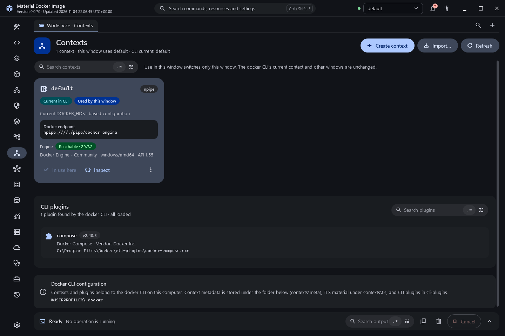</p>
<p></p></article>
<article id="doc-docs-features-diagnostics-md" class="article"><h3>Diagnostics and safety</h3><p class="source-label">Complete source: <a href="https://github.com/Ding-Ding-Projects/material-docker-image/blob/main/docs/features/diagnostics.md">docs/features/diagnostics.md</a></p><h3 id="doc-docs-features-diagnostics-md-diagnostics-and-safety">Diagnostics and safety</h3>
<p>Diagnostics records actual CLI and engine responses. Separate read-only inspection from a smoke test that creates resources. Controlled smoke tests use unique owned names, labels, and exact teardown targets. Failed teardown remains an unsuccessful overall result.</p>
<p>Commands are invoked without a shell. User values become individual process arguments. Docker context selection is per command. Existing Docker credential helpers retain ownership of authentication; credentials must not enter command previews, application logs or diagnostic exports.</p>
<p>Output is bounded to protect memory. A truncated output buffer must be identified as truncated, never described as complete. Cancellation can stop the CLI before the engine has reconciled its work. Refresh state and inspect the resource rather than assuming rollback.</p>
<p>Only run trusted build projects. Docker engine access carries substantial authority over its host. This application does not make an untrusted Dockerfile, image, bind mount or Compose project safe.</p>
<h4 id="doc-docs-features-diagnostics-md-sources">Sources</h4>
<p class="source-item">• <a href="https://docs.docker.com/reference/cli/docker/buildx/build/">Docker buildx build</a></p>
<p class="source-item">• <a href="https://docs.docker.com/engine/security/protect-access/">Protect access to the Docker daemon</a></p>
<p class="source-item">• <a href="https://docs.docker.com/reference/cli/docker/">Docker CLI reference</a></p>
<h4 id="doc-docs-features-diagnostics-md-section">廣東話</h4>
<p>診斷結果要分清楚唯讀檢查同會建立資源嘅測試。測試只可以清理自己建立嘅項目。指令用獨立參數執行，唔經命令殼層。取消本機指令唔保證引擎已經回復原狀，要重新讀取狀態。只執行可信嘅建置專案。</p></article>
<article id="doc-docs-features-dockerfile-creator-md" class="article"><h3>Dockerfile Creator</h3><p class="source-label">Complete source: <a href="https://github.com/Ding-Ding-Projects/material-docker-image/blob/main/docs/features/dockerfile-creator.md">docs/features/dockerfile-creator.md</a></p><h3 id="doc-docs-features-dockerfile-creator-md-dockerfile-creator">Dockerfile Creator</h3>
<p>The Creator builds a Dockerfile from structured steps, shows the exact text as you work, and checks it against common best practices.</p>
<h4 id="doc-docs-features-dockerfile-creator-md-start">Start</h4>
<p>Choose a starter: Node.js service, Python with pip, Python with uv, .NET (ASP.NET), Go static binary, Java (Maven build with a JRE runtime), Rust, static site served by an unprivileged nginx, or Blank. Each starter states what it creates. Applying a starter replaces the current draft; the previous draft is recorded in local history first so it can be restored from Activity. You can also import an existing Dockerfile: instructions become structured steps, and anything the editor cannot represent is kept as a raw card with Edit as text.</p>
<p>The Detected project card inspects a folder like <code>docker init</code>: Node (npm, yarn, pnpm), Python (pip, uv, poetry; FastAPI, Flask, Django), Go, .NET, Rust, Java (Maven, Gradle) and static sites, plus existing Dockerfile, Compose and .dockerignore files. Each finding shows its evidence file. Apply suggestion replaces the draft (the old draft goes to local history first), and Write to folder asks before replacing any file.</p>
<h4 id="doc-docs-features-dockerfile-creator-md-stages">Stages</h4>
<p>The left column lists the stages. Add, rename, duplicate, delete (with confirmation), reorder, or set a stage as the build target. Each stage has a base image (editable, with common images suggested), a name and an optional platform.</p>
<h4 id="doc-docs-features-dockerfile-creator-md-steps">Steps</h4>
<p>Each instruction is a card with its keyword, a summary and a hint. Expand a card to edit it with a form specific to its kind:</p>
<p class="source-item">• <code>ARG</code>, <code>ENV</code> and <code>LABEL</code> as name and value rows.</p>
<p class="source-item">• <code>COPY</code> with sources, destination, <code>--from</code> stage, <code>--chown</code>, <code>--chmod</code> (numeric or symbolic), <code>--link</code>, <code>--parents</code>, repeated <code>--exclude</code> and an inline file written as a heredoc.</p>
<p class="source-item">• <code>ADD</code> from a local path, a URL or a Git repository, with <code>--checksum</code> and <code>--keep-git-dir</code>.</p>
<p class="source-item">• <code>RUN</code> as shell or exec form or as a heredoc script with an interpreter, plus a mounts editor for all five mount types (bind, cache, tmpfs, secret, ssh) with every option, cache presets for apt, npm, pip, uv, Go, Cargo, NuGet, Maven and Gradle, and <code>--network</code> and <code>--security</code> (insecure warns about the entitlement it needs).</p>
<p class="source-item">• Global build arguments before the first stage, one-click <code>TARGETPLATFORM</code> and <code>BUILDPLATFORM</code> helpers, Build on BUILDPLATFORM for cross-compilation, and the <code># syntax</code>, <code># escape</code> and <code># check</code> directives.</p>
<p class="source-item">• <code>USER</code>, <code>WORKDIR</code>, <code>EXPOSE</code> (port and protocol), <code>VOLUME</code>, <code>STOPSIGNAL</code>, <code>SHELL</code>, <code>ONBUILD</code> and comments.</p>
<p class="source-item">• <code>ENTRYPOINT</code> and <code>CMD</code> in exec form with one field per argument.</p>
<p class="source-item">• <code>HEALTHCHECK</code> with command, interval, timeout, retries and start period.</p>
<p>Fields are validated as you type. Move steps with the arrow buttons or Alt+Up and Alt+Down; duplicate or delete them from the card or its context menu. Add instruction opens a searchable list, and quick-add chips insert a cached <code>RUN</code>, a <code>HEALTHCHECK</code>, a non-root <code>USER</code> or an <code>EXPOSE</code>.</p>
<h4 id="doc-docs-features-dockerfile-creator-md-live-editable-source">Live, editable source</h4>
<p>The source on the right is an editor, not just a preview. Type in it and, 300 ms after you stop (or when it loses focus), the stages and cards are rebuilt from your text without moving the caret or scroll position. Editing a card replaces only that instruction&#39;s lines, so your comments, blank lines, spacing and CRLF line endings are kept. Opening a card selects its lines in the source; moving the caret selects the matching stage and outlines its card. Lines the model cannot represent become raw cards with Edit as text, and parse notes appear in Checks with a link to the line. Adding, removing or moving steps and editing directives still re-render the whole file.</p>
<p>The source has search, a coloured read-only view, Copy as build command (<code>docker buildx build</code> with target, entitlements, secret ids and SSH, never secret values), a .dockerignore tab with language presets and a live check against a context folder, and a compose.yaml tab when one is generated.</p>
<h4 id="doc-docs-features-dockerfile-creator-md-checks">Checks</h4>
<p>The Checks panel reports, among others: an unpinned base image, a final stage that runs as root, no health check, <code>apt-get update</code> without an install in the same step, missing <code>--no-install-recommends</code> or cleanup, <code>ADD</code> used for local files, shell-form <code>CMD</code> or <code>ENTRYPOINT</code>, a web service without <code>EXPOSE</code>, <code>COPY . .</code> before dependency installation, secret-looking <code>ARG</code> or <code>ENV</code> names, duplicate stage names, <code>COPY --from</code> pointing to an unknown or later stage, a relative <code>WORKDIR</code>, and several <code>CMD</code> instructions. Rules DF100 to DF124 add mount, heredoc, platform and syntax-version checks; DF116 offers to add or upgrade the <code># syntax</code> header when a feature needs a newer Dockerfile frontend. Findings that match a BuildKit check show its name, and <code># check=skip=</code> hides them here too. Most findings have a Fix button; fixes that need a value (such as a tag or digest to pin) ask for it first.</p>
<h4 id="doc-docs-features-dockerfile-creator-md-saving-and-building">Saving and building</h4>
<p>Undo and Redo keep the last 200 changes. The draft is saved automatically in the application data folder and recorded in local history after two seconds without changes. Save as writes a Dockerfile you choose. Open in Build sends the text to the Build destination as an unsaved draft together with the selected target stage, so you can review it and build.</p>
<h4 id="doc-docs-features-dockerfile-creator-md-screenshots">Screenshots</h4>
<p>Captured from the built application (inventory <span class="muted">(document unavailable)</span>).</p>
<p></p>
<p>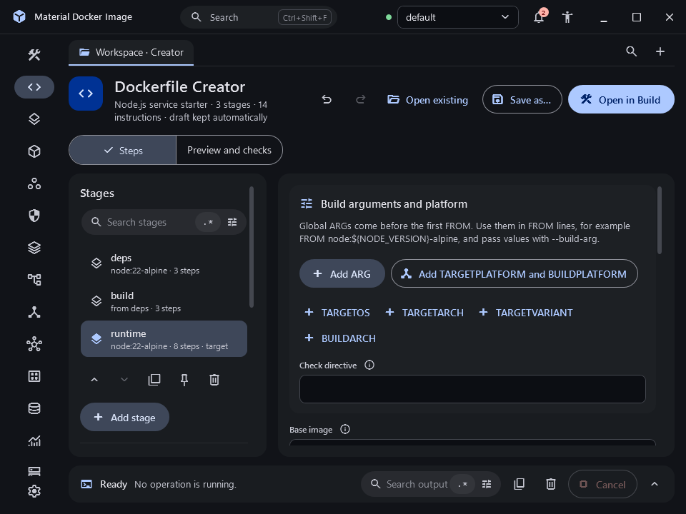</p></article>
<article id="doc-docs-features-documentation-site-md" class="article"><h3>Documentation site, downloads and offline package</h3><p class="source-label">Complete source: <a href="https://github.com/Ding-Ding-Projects/material-docker-image/blob/main/docs/features/documentation-site.md">docs/features/documentation-site.md</a></p><h3 id="doc-docs-features-documentation-site-md-documentation-site-downloads-and-offline-package">Documentation site, downloads and offline package</h3>
<p>The documentation site is generated by <code>website/render.mjs</code> from <code>website/template.html</code>, the Markdown in <code>docs/</code> and <code>wiki/</code>, the project overview files and the feature inventory. It is deployed by <code>.github/workflows/pages.yml</code>. This article describes the delivery parts of that site and how each one fails.</p>
<h4 id="doc-docs-features-documentation-site-md-latest-release-download-panel">Latest release download panel</h4>
<p>The home page has a <strong>Download the latest release</strong> panel. Its script asks <code>https://api.github.com/repos/Ding-Ding-Projects/material-docker-image/releases/latest</code> when the page is viewed, so nothing about a version is written into the page.</p>
<p class="source-item">• <strong>Ready.</strong> The panel shows the version (the release tag), the UTC publication time, a <strong>Setup.exe</strong> button, a <strong>Build companion</strong> button for <code>MaterialDockerImageBuild.exe</code>, an <strong>Offline documentation</strong> button for <code>MaterialDockerImageDocs.zip</code>, and a list of every attached file with its size. If one of the three named files is not attached to that release, its button says so instead of linking anywhere.</p>
<p class="source-item">• <strong>Loading, offline, rate limited, no latest release, unreadable reply.</strong> Each state has its own plain message in English, Cantonese or both, and the <strong>Open the releases page</strong> link stays available. No state ever shows a version.</p>
<p class="source-item">• <strong>Link safety.</strong> Only assets whose download address is under this repository&#39;s <code>releases/download/</code> path are shown, and a malformed reply is rejected as a whole.</p>
<p class="source-item">• <strong>Latest means main.</strong> The release workflow marks only releases built from the current <code>main</code> tip as the latest release, so branch builds never appear in this panel.</p>
<p class="source-item">• The unsigned installer warning is repeated next to the buttons.</p>
<h4 id="doc-docs-features-documentation-site-md-link-previews">Link previews</h4>
<p>The page head carries Open Graph and Twitter card metadata that point at <code>social-preview.png</code>, a 1200 x 630 image. It is composed by <code>scripts/make-social-preview.mjs</code> from a real capture of the built application (<code>evidence/screenshots/build.png</code>); the script scales the capture to the card width and adds a flat accent band, and it draws nothing that is not in the capture. The committed PNG is listed with its hash in <code>website/content-manifest.json</code>. Previews are fetched by the platform that displays a shared link, so a cached older preview can remain visible after an update.</p>
<h4 id="doc-docs-features-documentation-site-md-front-provenance">Front provenance</h4>
<p>The home page states the documentation source version and an update time. Both come from <code>website/provenance.json</code>: the version is the application project version, and the time is the committer date of the latest commit that touched any rendered source (<code>node website/render.mjs --stamp</code> reads it). The stamp is stored, not computed during a render, so rendering stays deterministic and <code>--check</code> stays meaningful. This is the version of the documentation sources, not the running application&#39;s release; the release version appears in the download panel after it loads. A stamp is refreshed in a follow-up commit after the source commit it describes.</p>
<h4 id="doc-docs-features-documentation-site-md-search-across-all-documentation">Search across all documentation</h4>
<p>The search field above the articles searches every embedded article and wiki page. Matching sections are listed, each linking to the heading it came from, with a snippet.</p>
<p class="source-item">• <strong>Plain text first.</strong> The field matches the text exactly as typed; punctuation has no special meaning. <strong>Ignore case</strong> is on by default.</p>
<p class="source-item">• <strong>Regex builder (Alt+R).</strong> The adjacent panel switches to JavaScript regular-expression syntax, has i, m, s and u flag toggles, a pattern field kept in sync with the search field, buttons that insert common tokens at the cursor (classes, anchors, groups, lookaround, repetition), and a small pattern library. An invalid pattern shows the engine&#39;s message and marks both fields invalid.</p>
<p class="source-item">• <strong>Bounds.</strong> Patterns are limited to 200 characters. A group that repeats while already containing a repeat (the usual runaway shape) is refused before it runs. Each section is searched in its first 20,000 characters, at most 200 results are shown, and a search stops after 250 ms; each cut-off is reported in the status line. These bounds exist because a running browser regular expression cannot be interrupted.</p>
<p class="source-item">• <strong>Languages.</strong> Labels and messages follow the page language selector (English, Cantonese, or both).</p>
<p class="source-item">• <strong>Not RegexBuddy parity.</strong> This is a bounded builder for finding documents. It has no match explanation tree, replace preview or sample tester, and the panel says so.</p>
<h4 id="doc-docs-features-documentation-site-md-offline-documentation-package">Offline documentation package</h4>
<p><code>build/package-docs.ps1</code> (run by <code>build-installer.bat</code> and by the release workflow) writes <code>out/docs/MaterialDockerImageDocs.zip</code> and <code>out/receipts/docs.json</code>, and copies both into <code>out/releases</code> so they are attached to the release.</p>
<p class="source-item">• The archive holds <code>index.html</code>, <code>content-manifest.json</code>, <code>feature-inventory.json</code>, <code>favicon.svg</code> and the embedded evidence images under <code>assets/</code>. It is the same complete corpus as the hosted site. Extract it and open <code>index.html</code>; it needs no network.</p>
<p class="source-item">• It is produced by <code>node website/render.mjs --offline out/docs/site</code>, which removes link-preview metadata and disables the release lookup (the panel explains that this is the offline package and links to the releases page). The script refuses to write outside <code>out/docs</code>.</p>
<p class="source-item">• Before archiving, the script fails if the page references a remote asset (<code>src</code>, <code>link href</code>, <code>url()</code> or <code>@import</code> to http or https). Entries use a fixed order and timestamp so one source produces one archive.</p>
<p class="source-item">• The receipt binds the archive hash to the exact source commit and build inputs. The release workflow checks that receipt&#39;s source and that both files are attached.</p>
<p class="source-item">• Links to GitHub source pages inside articles are ordinary links, not assets, and need a network when followed.</p>
<h4 id="doc-docs-features-documentation-site-md-failure-modes">Failure modes</h4>
<p class="source-item">• A stale <code>website/index.html</code> or manifest fails <code>node website/render.mjs --check</code> and the checklist checks; run <code>node website/render.mjs</code> and commit the result.</p>
<p class="source-item">• A missing, malformed or untimestamped <code>website/provenance.json</code> stops rendering with an instruction to stamp.</p>
<p class="source-item">• A missing <code>website/social-preview.png</code> stops rendering; regenerate it with <code>node scripts/make-social-preview.mjs</code>.</p>
<h4 id="doc-docs-features-documentation-site-md-verification">Verification</h4>
<p><code>node scripts/test-feature-checklist.mjs</code> covers the release parsing and every failure state, the preview metadata and image dimensions, provenance consistency, the search core and its bounds, anchors and heading ids, the offline package contents and links, and the workflow asset readback. It does not cover pixels or a deployed page. Interactive behaviour was exercised once in headless Microsoft Edge against the generated page (live release lookup, plain and regex search, validation messages, Cantonese messages); the deployed site and the first release carrying the documentation archive remain to be verified.</p></article>
<article id="doc-docs-features-editor-suggestions-md" class="article"><h3>Editor suggestions and value pickers</h3><p class="source-label">Complete source: <a href="https://github.com/Ding-Ding-Projects/material-docker-image/blob/main/docs/features/editor-suggestions.md">docs/features/editor-suggestions.md</a></p><h3 id="doc-docs-features-editor-suggestions-md-editor-suggestions-and-value-pickers">Editor suggestions and value pickers</h3>
<p>The Build Dockerfile editor, the Creator&#39;s editable source and the Compose file editor share one suggestion engine.</p>
<h4 id="doc-docs-features-editor-suggestions-md-suggestions">Suggestions</h4>
<p>Suggestions open after a short pause in typing or after a trigger character (<code>-</code>, <code>=</code>, <code>$</code>, <code>{</code>, <code>:</code>, <code>/</code>, <code>,</code>, <code>#</code> or a space), and always with <code>Ctrl+Space</code>. Use Up, Down, Page Up and Page Down to move, Tab or Enter to accept and Esc to close. Matching characters are shown in bold, every item has an icon for its kind, and the side pane shows its description, an example and the minimum <code># syntax</code> version it needs. Accepted text goes through the editor, so <code>Ctrl+Z</code> undoes it.</p>
<p>In a Dockerfile, suggestions follow what is at the cursor:</p>
<p class="source-item">• At the start of a line: every instruction, parser directives at the top of the file, and snippets such as a cached package install or a health check.</p>
<p class="source-item">• After an instruction: the flags that instruction accepts, without the ones already used.</p>
<p class="source-item">• Inside <code>--mount=</code>: the mount types, the options valid for the chosen type, and their values.</p>
<p class="source-item">• <code>--from=</code> and <code>FROM</code>: stages defined earlier in the file.</p>
<p class="source-item">• After <code>$</code> or <code>${</code>: the build arguments and environment variables in scope, including the platform arguments. A global argument used inside a stage without being declared there is marked.</p>
<p class="source-item">• After <code>FROM</code>: your local images and a clearly labelled list of popular official images; after <code>:</code>, the tags of local images.</p>
<p class="source-item">• After <code>COPY</code> and <code>ADD</code>: names from the build context (up to 500), skipping entries excluded by <code>.dockerignore</code>, symbolic links and names that look like secrets. File contents are never read.</p>
<p class="source-item">• Values for <code>EXPOSE</code>, <code>STOPSIGNAL</code>, <code>SHELL</code>, <code>USER</code>, <code>HEALTHCHECK</code> and OCI label keys.</p>
<p>A hint line under the cursor shows the instruction&#39;s full form, and resting the mouse on a keyword, flag, mount option, directive or Compose key for half a second shows its documentation. Items that need a newer Dockerfile frontend than the file declares carry a badge such as &quot;1.4+&quot;; after accepting one, <code>Ctrl+Enter</code> adds or upgrades the <code># syntax=docker/dockerfile:1</code> header.</p>
<p>In Compose files, keys are suggested by indentation (top level, service, build, health check, <code>depends_on</code>, <code>develop.watch</code>, deploy, logging, ports and volumes in long form, and the top-level volumes, networks, secrets and configs), together with values and the names of your services, volumes, networks, secrets, configs and profiles.</p>
<h4 id="doc-docs-features-editor-suggestions-md-value-pickers">Value pickers</h4>
<p>When the value at the cursor has a known type, the list offers a picker and <code>Ctrl+Shift+Space</code> opens it directly. Tab moves inside a picker, Enter applies the value and Esc returns to the editor with the cursor where it was.</p>
<p class="source-item">• <strong>Path</strong>: a file or folder dialog that opens at the build context or Compose folder and inserts a relative path with forward slashes. Paths outside the build context are refused for <code>COPY</code> and <code>ADD</code>, with an explanation.</p>
<p class="source-item">• <strong>Colour</strong>: the colour picker from the appearance editor, keeping the original notation.</p>
<p class="source-item">• <strong>Port</strong>: container port and protocol, plus host port and address for Compose, with warnings for privileged ports and host ports already published on the engine.</p>
<p class="source-item">• <strong>Duration</strong>: presets and a number with a unit, for health check timings.</p>
<p class="source-item">• <strong>Permissions</strong>: an owner, group and other grid for <code>--chmod</code>, producing octal or symbolic form.</p>
<p class="source-item">• <strong>User</strong>: common users (root, node, nobody, 65532) and a numeric uid:gid editor.</p>
<p class="source-item">• <strong>Platform</strong>: chips for common platforms.</p>
<p class="source-item">• <strong>Image</strong>: a searchable list of local images and tags, with Pin digest using the image&#39;s real repository digest (disabled when there is none).</p>
<p class="source-item">• <strong>Fixed choices</strong> such as signals, restart policies, mount types and sharing modes: chips.</p>
<p class="source-item">• <strong>Secret-looking variables</strong>: Use a build secret instead rewrites the line to <code>RUN --mount=type=secret,id=…,env=NAME</code>. The value is dropped and never shown.</p>
<h4 id="doc-docs-features-editor-suggestions-md-settings-and-commands">Settings and commands</h4>
<p>Settings &gt; Engine has <strong>Show suggestions while typing</strong> (on by default). <code>Ctrl+Space</code> and <code>Ctrl+Shift+Space</code> always work. The command palette has Trigger suggestions, Pick value at caret and a switch for the setting.</p>
<h4 id="doc-docs-features-editor-suggestions-md-status">Status</h4>
<p>Built and covered by UI-state checks for every suggestion context, scoping, fuzzy ranking, version badges, Compose indentation and each picker&#39;s value type. Popup placement, focus behaviour and the pickers have not yet been exercised interactively on Windows. <code>Ctrl+Space</code> can clash with the input-method toggle in some Chinese input setups; the palette command works there.</p>
<h4 id="doc-docs-features-editor-suggestions-md-screenshots">Screenshots</h4>
<p>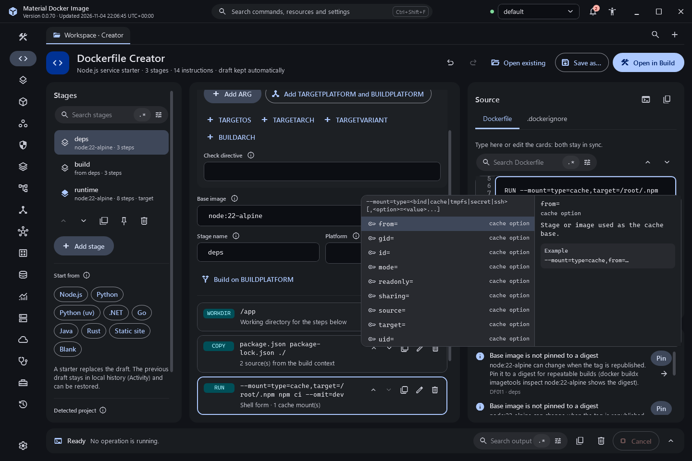</p></article>
<article id="doc-docs-features-feature-checklist-md" class="article"><h3>Feature completion checklist</h3><p class="source-label">Complete source: <a href="https://github.com/Ding-Ding-Projects/material-docker-image/blob/main/docs/features/feature-checklist.md">docs/features/feature-checklist.md</a></p><h3 id="doc-docs-features-feature-checklist-md-feature-completion-checklist">Feature completion checklist</h3>
<p>The documentation home page starts with a maintainer-owned completion checklist. It retains all 109 required capability identifiers, the 10 existing product workflows, and four explicit milestones: the checklist itself, container health checks, device mappings and GPU access. These last three container controls are implemented with verification pending: argument behaviour was checked against a real local engine, but they have not been exercised in the built application.</p>
<h4 id="doc-docs-features-feature-checklist-md-read-the-status-honestly">Read the status honestly</h4>
<p class="source-item">• Unverified: complete implementation and acceptance have not been established.</p>
<p class="source-item">• Planned: the named milestone still needs implementation and verification.</p>
<p class="source-item">• Implemented, verification pending: bounded implementation exists, but the remaining actions are still open.</p>
<p class="source-item">• Fully verified: requires source, passing checks, built interaction and capture references tied to one exact source commit and artifact hash. The current inventory has no fully verified rows.</p>
<p>Source references explain the implementation or its recorded limits. They are explicitly not full verification. Existing historical workflow evidence keeps its original source and scope. All 109 required capability rows remain unverified.</p>
<h4 id="doc-docs-features-feature-checklist-md-browse-the-checklist">Browse the checklist</h4>
<p>Choose a category and a status to intersect both filters. The live result count and empty-result message explain the current view. Reset feature filters restores all rows and returns keyboard focus to Category. Each row uses a native details/summary disclosure: Tab reaches it, and Enter or Space opens its remaining actions and evidence links. Filtering does not alter maintainer status or the documentation search.</p>
<p>English, Cantonese and bilingual labels follow the existing language selector. The checklist inherits light/dark appearance and reduced-motion behavior. At narrow widths its controls and status labels stack. No completion checkbox is offered to visitors.</p>
<p>The separate preparation checklist remains browser-owned. Its existing <code>mdi-guide-v1</code> storage, four checkbox IDs and reset behavior are preserved. Feature filters are visit-only state, do not access storage and cannot overwrite preparation progress.</p>
<h4 id="doc-docs-features-feature-checklist-md-maintain-one-inventory">Maintain one inventory</h4>
<p>Edit <code>website/feature-inventory.json</code> to update names, category, status, remaining actions and public source/evidence references. The required baseline in <code>website/required-feature-ids.json</code> protects the original 109 identifiers; the validator separately names every product workflow and milestone. It is not a second status inventory.</p>
<p>Run <code>node website/render.mjs</code> to regenerate the home page, the required-feature section of the capability inventory and deterministic content hashes. The renderer embeds all feature articles, project reference documents and available wiki Markdown, including this guide. It preserves content-addressed evidence PNGs and validates their exact bytes. <code>node website/render.mjs --check</code> rejects stale generated HTML, summary, manifest or images without writing output. The manifest records source hashes, not a fabricated release timestamp.</p>
<p>The local <code>build.bat -Tests</code> route runs checklist checks after the existing core and UI-state checks. Negative cases remove every entry independently, reject duplicate IDs, invalid status, absent language/evidence, unsupported or credential-bearing URLs, unsubstantiated completion and mismatched evidence bindings. A controller check exercises the actual filter script with bounded DOM substitutes. This is logic evidence, not real-browser or visual acceptance.</p>
<p>Only HTTPS references within this public project&#39;s repository or documentation home are accepted, with no credentials, query strings, encoded paths or arbitrary hosts. Verification evidence must use immutable repository evidence paths and record its UTC time, source commit, artifact hash, passing result and scope. These structural checks cannot prove that a receipt is true; maintainers must inspect genuine evidence before promoting a row.</p>
<h4 id="doc-docs-features-feature-checklist-md-verification-limits">Verification limits</h4>
<p>The original candidate <code>ca1a09752b262288422236db22375baa83db5b05</code> passed 12 hidden-browser tuples: 1440/320 widths, English/Cantonese/bilingual and light/dark, with reduced motion active and no horizontal body overflow. Native Tab, Space and Enter operated disclosure controls. Category/status intersection, empty results, Reset focus and preparation progress across reload passed. The inspected accessibility tree contained 217 named controls in the reviewed roles and no unnamed controls. Fifteen genuine captures were inspected. These are bounded observations, not complete accessibility or physical-device certification.</p>
<p>Review also found that optional source-reference metadata could render unescaped HTML. Source references now reject verification-only fields; binding output is limited to verification evidence and escaped. The saved inventory contained no injected content. The exact local build entrypoint passed 23 core, 51 UI-state and 13 checklist checks, including 123 independent omission cases and the observed failing-then-passing metadata regression. Independent review confirmed that current inventory rendering is unchanged by this repair.</p>
<p>The browser/server processes, ports and exact hidden desktop were verified absent. Automatic execution review rejected deletion of the isolated profile. It remains retained, the complete cleanup/promotion receipt is pending, and new captures are not published as accepted evidence. The milestone therefore remains implemented with verification pending. The checklist does not implement the native container health/device/GPU milestones or establish complete product acceptance. The public bounded summary is <code>evidence/checklist-verification.json</code>.</p>
<p>A later live check at <code>5d96573</code> verified all 41 internal anchors, 13 complete articles, three published PNGs and the exact source/manifest bytes. It found an implicit root favicon request returning 404. The documentation now declares a local <code>favicon.svg</code> matching the existing grid mark, with its hash in the content manifest. Fresh deployed resource verification is separate from the earlier checklist behavior evidence.</p>
<h4 id="doc-docs-features-feature-checklist-md-section">廣東話指南</h4>
<p>文件首頁嘅功能完成清單由維護者管理，保留 109 項必需功能、10 項產品流程同四項里程碑。健康檢查、裝置對應同 GPU 控制仍然係計劃項目。已實作唔代表完整驗證，現時冇項目標示為完整驗證。</p>
<p>分類同狀態篩選會一齊生效；結果數目同空白提示會即時更新。重設篩選會顯示全部項目，並將鍵盤焦點放返分類。用 Tab 揀項目，再按 Enter 或空白鍵展開待辦事項同證據。語言選擇支援英文、廣東話同雙語，外觀跟隨淺色或深色設定，窄版面會直向排列。</p>
<p>呢份清單唔會俾訪客剔選完成。下面嘅準備清單仍然只儲存你自己嘅進度，原有儲存資料同重設功能保留。功能篩選只維持本次瀏覽，唔會寫入準備清單資料。</p>
<p>維護者修改 JSON 來源清單，再執行產生指令，同步首頁、功能摘要同內容雜湊。來源連結只係參考，完整驗證需要同一版本嘅檢查、實際操作同畫面證據。格式檢查唔能夠證明證據內容屬實，仍然要獨立檢查。</p>
<p>原候選版本已通過 12 組寬度、語言同主題組合，以及真實鍵盤展開、篩選、空白結果、重設焦點同準備進度保留。15 張畫面已檢查。來源參考嘅額外驗證資料曾有 HTML 轉義缺口，已修正並以先失敗後成功嘅測試確認。瀏覽器、伺服器、連接埠同指定隱藏桌面已確認結束；隔離設定目錄刪除被自動審核拒絕，所以完整清理同畫面正式採納仍未完成，唔會將有限驗證當成全產品驗收。</p></article>
<article id="doc-docs-features-images-and-security-md" class="article"><h3>Image detail and security</h3><p class="source-label">Complete source: <a href="https://github.com/Ding-Ding-Projects/material-docker-image/blob/main/docs/features/images-and-security.md">docs/features/images-and-security.md</a></p><h3 id="doc-docs-features-images-and-security-md-image-detail-and-security">Image detail and security</h3>
<h4 id="doc-docs-features-images-and-security-md-image-detail">Image detail</h4>
<p>Select an image in Images to open its detail beside the list (below the list on narrow windows). The detail has six tabs; each loads the first time you open it and the chosen tab is kept when you select another image.</p>
<p class="source-item">• <strong>Overview</strong>: identity, size, platform, tags and environment variable names. Values stay hidden.</p>
<p class="source-item">• <strong>Layers</strong>: one row per build step with the instruction keyword, the cleaned instruction, size, age and a size bar relative to the largest layer. Hide empty layers, search and copy are available.</p>
<p class="source-item">• <strong>Platforms</strong>: the local platform and repository digests, and the registry manifest read with <code>docker buildx imagetools inspect --raw</code>. Each platform is a card, attestation manifests are matched to the platform they describe, and the raw manifest has its own viewer. Images without a digest only query the registry when you ask.</p>
<p class="source-item">• <strong>Vulnerabilities</strong>: runs <code>docker scout cves</code> and shows severity tiles and a findings table with severity, fixable-only and search filters and export. A finding opens a detail card; advisories open only after you confirm.</p>
<p class="source-item">• <strong>SBOM</strong>: the package list from <code>docker scout sbom</code> with counts per package type, and an export of the exact JSON.</p>
<p class="source-item">• <strong>Compare</strong>: pick another local image to compare size, layers, platform, user, working directory, entrypoint, command, environment names, ports and labels side by side, or run <code>docker scout compare</code>.</p>
<p>If Docker Scout is not installed, not signed in, or the analysis fails, the tab says so and shows the exact output. No finding or count is shown unless an analysis really ran.</p>
<p>The Images list also has a statistics strip (images, total size, dangling, unused) and the row actions Retag to multiple, Push all tags of repository and Copy pull command.</p>
<h4 id="doc-docs-features-images-and-security-md-security">Security</h4>
<p>The Security destination lists tagged local images with critical, high, medium and low counts, the fixable count and when each was analysed. Filter by critical or high, fixable only, not analysed or failed. Scans run one image at a time in the background, can be cancelled, and stop early if Scout is missing or needs sign-in. Results are kept for the session per engine context and image, and are shared with the Vulnerabilities tab. Export findings saves JSON or CSV; CSV cells are protected against spreadsheet formula injection.</p>
<h4 id="doc-docs-features-images-and-security-md-screenshots">Screenshots</h4>
<p>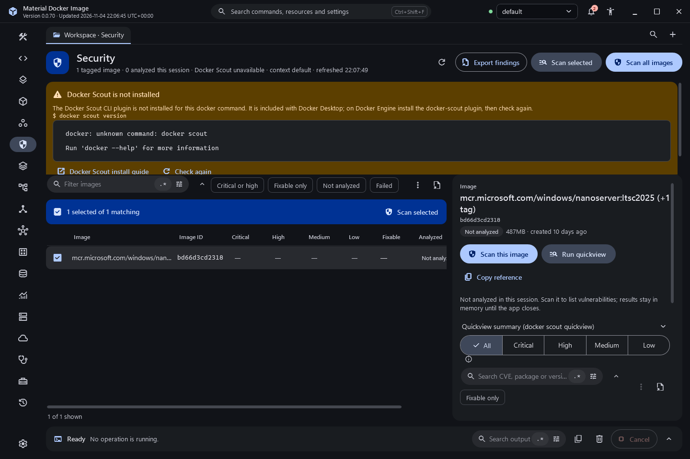</p></article>
<article id="doc-docs-features-local-history-md" class="article"><h3>Local history</h3><p class="source-label">Complete source: <a href="https://github.com/Ding-Ding-Projects/material-docker-image/blob/main/docs/features/local-history.md">docs/features/local-history.md</a></p><h3 id="doc-docs-features-local-history-md-local-history">Local history</h3>
<p>Every meaningful change is recorded in a local version history so it can be reviewed, compared and restored.</p>
<h4 id="doc-docs-features-local-history-md-where-it-lives">Where it lives</h4>
<p>The history is a Git repository in the application&#39;s own data folder:</p>
<p><code>%LOCALAPPDATA%\DingDingProjects\MaterialDockerImage\history</code>. It is never created inside your project folders, and nothing in it is sent anywhere.</p>
<h4 id="doc-docs-features-local-history-md-what-is-recorded">What is recorded</h4>
<p class="source-item">• Settings changes (the complete settings file at each change).</p>
<p class="source-item">• Dockerfile and Compose saves, and Dockerfile Creator drafts, with their content.</p>
<p class="source-item">• Operations: the label, result and engine context of each build, run, removal or prune. Command arguments are not recorded, so environment values never enter the history.</p>
<p class="source-item">• Discarded drafts when the window closes with unsaved work.</p>
<p>Passwords and BuildKit secret file contents are never recorded.</p>
<h4 id="doc-docs-features-local-history-md-using-it">Using it</h4>
<p>The Activity destination lists revisions with time, action and summary. Filter by action, by date range and by text (with the regular expression builder). Select a revision to see its diff.</p>
<p class="source-item">• <strong>Restore</strong> writes the chosen file content as a new revision. History is append-only: a restore never rewrites earlier revisions, and a restore can itself be restored.</p>
<p class="source-item">• <strong>Label</strong> names a revision so it is easy to find later.</p>
<p class="source-item">• <strong>Export</strong> writes the selected or visible revisions to a ZIP file with a JSON index and one patch per revision.</p>
<p>If the history cannot be opened or written, the Activity destination says so. A history failure never fails the operation you were running.</p>
<h4 id="doc-docs-features-local-history-md-screenshots">Screenshots</h4>
<p>Captured from the built application (inventory <span class="muted">(document unavailable)</span>).</p>
<p>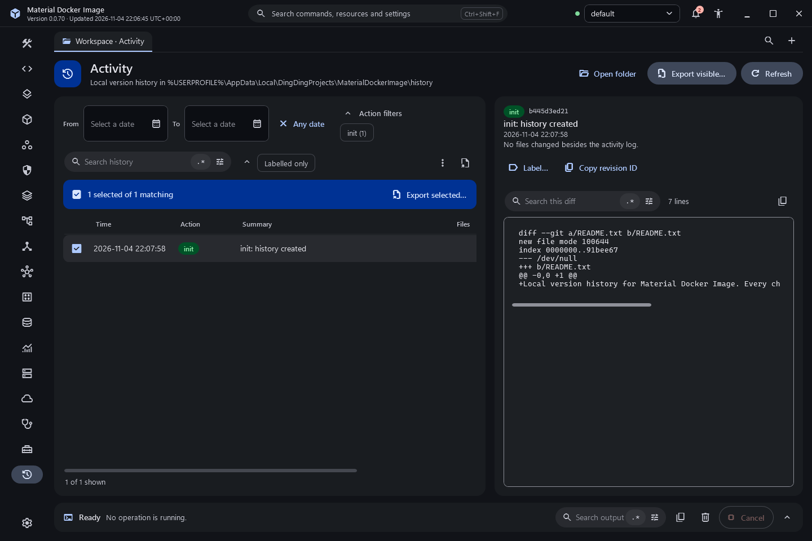</p></article>
<article id="doc-docs-features-minecraft-md" class="article"><h3>Minecraft servers</h3><p class="source-label">Complete source: <a href="https://github.com/Ding-Ding-Projects/material-docker-image/blob/main/docs/features/minecraft.md">docs/features/minecraft.md</a></p><h3 id="doc-docs-features-minecraft-md-minecraft-servers">Minecraft servers</h3>
<p>The Minecraft destination creates and runs Minecraft servers as containers using the community <code>itzg/minecraft-server</code> (Java) and <code>itzg/minecraft-bedrock-server</code> (Bedrock) images. It lists only containers and volumes labelled <code>material-docker-image.minecraft</code>, so your other containers are never touched.</p>
<h4 id="doc-docs-features-minecraft-md-create-a-server">Create a server</h4>
<p>A six-step wizard with Back and Next:</p>
<p>1. <strong>Where</strong>: the local engine or an SSH engine context.</p>
<p>2. <strong>Edition and version</strong>: latest, snapshot or preview, or a typed version. Refresh versions downloads the official version list through a pinned helper container.</p>
<p>3. <strong>Server type</strong>: Vanilla, Paper, Purpur, Fabric, Forge, NeoForge and the other types the image supports, or a custom server jar.</p>
<p>4. <strong>Resources and network</strong>: memory, port and listen address (127.0.0.1 by default, with a warning for 0.0.0.0). Bedrock uses 19132/udp.</p>
<p>5. <strong>Game settings</strong>: typed controls for server.properties, operators, whitelist, and Modrinth or Spigot plugins where the type supports them.</p>
<p>6. <strong>Review</strong>: the exact command preview and the Minecraft EULA. The server is only told the EULA is accepted when you tick the box.</p>
<p>The RCON password is passed in a temporary environment file that is deleted straight away, and is shown as dots in the preview. The Java runtime image tag is chosen from the version.</p>
<h4 id="doc-docs-features-minecraft-md-manage-a-server">Manage a server</h4>
<p class="source-item">• <strong>Overview</strong>: live statistics, uptime and the connect address.</p>
<p class="source-item">• <strong>Console</strong>: follows the server log with search and command history, and sends commands through RCON (Bedrock through the image&#39;s command helper).</p>
<p class="source-item">• <strong>Players</strong>: online players, operators and whitelist, with op, deop, whitelist and kick.</p>
<p class="source-item">• <strong>Properties</strong>: shows the differences, then recreates the container with the new settings. The old container is kept until the new one starts, and the world volume and password are kept.</p>
<p class="source-item">• <strong>Files</strong>: browse <code>/data</code> and copy files in and out, confirming before overwriting.</p>
<p class="source-item">• <strong>Backups</strong>: pauses saving, archives the world in a helper container, copies it to the folder you choose and resumes saving. Restore needs the super confirmation and writes a safety backup first.</p>
<p class="source-item">• <strong>World</strong>: draw an area on a chunk grid and pre-generate it with the Chunky plugin, with progress from the log. Export the world to a folder or a ZIP file.</p>
<p>Stop saves the world and then stops the container with a 60-second grace period. Removing a server asks first; deleting the world volume as well is off by default and needs the super confirmation.</p>
<h4 id="doc-docs-features-minecraft-md-status">Status</h4>
<p>Built and covered by UI-state checks for versions, image tags, settings, secret handling and output parsing. The pages have not yet been exercised against a real engine; Bedrock settings names, Chunky output and the Java 25 tag for 26.x versions need confirmation on a real server.</p>
<p></p></article>
<article id="doc-docs-features-operations-and-tools-md" class="article"><h3>Monitoring, cleanup, registries and tools</h3><p class="source-label">Complete source: <a href="https://github.com/Ding-Ding-Projects/material-docker-image/blob/main/docs/features/operations-and-tools.md">docs/features/operations-and-tools.md</a></p><h3 id="doc-docs-features-operations-and-tools-md-monitoring-cleanup-registries-and-tools">Monitoring, cleanup, registries and tools</h3>
<h4 id="doc-docs-features-operations-and-tools-md-monitor">Monitor</h4>
<p>Live CPU and memory charts for the selected container, sampled with <code>docker container stats</code> every 1, 2, 5 or 10 seconds while the destination is visible and Live is on. The charts keep the last 120 samples, show a crosshair with time and value, and can be scrubbed with the arrow keys. They state when they are loading, paused, empty or stale, never join gaps between real samples, and stop animating under reduced motion or low stimulation. Container cards show CPU, memory, network and block I/O and process counts, with a search.</p>
<h4 id="doc-docs-features-operations-and-tools-md-system">System</h4>
<p>Disk usage by images, containers, volumes and build cache from <code>docker system df</code>, an engine information card from <code>docker info</code> (with its warnings), and client and server versions. Cleanup has independent categories: stopped containers, dangling images, all unused images, unused networks, build cache (optionally older than 24 hours or 7 days) and unused volumes, which is off by default. The super confirmation lists each exact command and the known candidates. Each category runs separately and reports its own result and reclaimed space.</p>
<h4 id="doc-docs-features-operations-and-tools-md-storage">Storage</h4>
<p>Volumes with size, users and filters, a create form with driver options and labels, inspection, removal and prune behind the super confirmation. Networks with driver, scope, subnet and container counts, a create panel with subnet validation and overlap warnings, connect and disconnect, inspection, removal (built-in networks are refused) and prune.</p>
<h4 id="doc-docs-features-operations-and-tools-md-registry">Registry</h4>
<p>Sign in with a user name and a password or access token. The secret is passed to <code>docker login --password-stdin</code> on standard input and is never written to arguments, logs, history or settings. The list of signed-in registries reads only registry names from the Docker configuration file. Sign out asks first. Docker Hub search shows stars and official images, with Pull. Buildx builders can be created, inspected, measured, pruned and removed; this application never changes the default builder.</p>
<h4 id="doc-docs-features-operations-and-tools-md-diagnostics">Diagnostics</h4>
<p>Read-only checks for the CLI, engine, API version, Buildx, Compose, contexts, disk usage, registry configuration and container platform, each with its real command, exit code and output. Export a sanitized report as Markdown or JSON after a preview; credentials, environment values and your user profile path are removed. A live engine events stream can be started and filtered. An optional smoke test runs <code>hello-world</code> with a unique label and reports creation and cleanup separately.</p>
<h4 id="doc-docs-features-operations-and-tools-md-tools">Tools</h4>
<p class="source-item">• <strong>Base64</strong>: encode and decode text or files with the standard, URL-safe and MIME alphabets, with or without padding, strict or lenient decoding with the exact error offset, UTF-8, UTF-16LE, Latin-1 or ASCII text, <code>data:</code> URL building and parsing, byte counts and SHA-256 checks. Large files stream with progress and Cancel. Nothing leaves the computer.</p>
<p class="source-item">• <strong>Documentation</strong>: every feature article is bundled into the application and can be searched and read offline.</p>
<p class="source-item">• <strong>Authenticator</strong>: keeps live one-time codes for any account (otpauth link, a QR picture from an image file or the clipboard, or manual entry; DPAPI-protected, encrypted backup), and pairs an authenticator app with one of the app&#39;s own locks (QR code drawn in-process, Base32 secret, a code typed back before the lock arms), checks codes and runs the RFC 6238 vectors; see <a href="#doc-docs-features-settings-safety-md">Settings safety</a>.</p>
<p>  - QR registration: <strong>From an image file…</strong> and <strong>From the clipboard</strong> (a copied picture, a copied image file, or copied <code>otpauth:</code> text) decode the QR code in this process with ZXing.Net 0.16.10 and add the account through the same link parser as a pasted link, so its issuer, algorithm, digits and period are kept. Pictures are limited to 20 MB and 40 million pixels; light-on-dark codes are read; a Google Authenticator export code (<code>otpauth-migration:</code>) and a code that is not an authenticator link are refused with a reason. The picture is never kept.</p>
<p>  - Camera registration: <strong>From the camera…</strong> opens a dialog that lists the cameras (Windows device enumeration, colour cameras before infrared ones), shows a live preview from <code>MediaCapture</code> and a <code>MediaFrameReader</code>, and decodes a sampled frame about every 250 ms with the same ZXing.Net decoder. The first valid <code>otpauth://</code> link becomes an account through the same parser; any other QR code, including a Google Authenticator export code, is refused with its reason while the scan carries on (a code held steadily in view is not announced again for four seconds). Denied camera permission, no camera, a camera in use by another app, a camera that never delivers a frame and a 90 second scan timeout each have their own plain message and a Try again button. Frames are held in memory only long enough to show and decode them and are never saved or logged; the camera is released when the dialog closes, when the scan ends or fails, and when the app exits. The moving scan indicator is replaced by a still one under reduced motion or low stimulation, and the status line is a polite live region. In capture mode the dialog shows a labelled sample and opens no camera. The sampling, acceptance, refusal, timeout, error-mapping and ordering rules are framework-free (<code>UI/CameraQrScan.cs</code>) and covered by UI-state checks; the camera path itself was not driven because it needs a real camera and the Windows permission prompt.</p>
<p class="source-item">• <strong>Changelog</strong>: the running version and build time, the release history bundled at build time with search, date range and Markdown export, and a link to the releases page (see <a href="#doc-docs-features-records-and-updates-md">Records, exports, shortcuts and updates</a>).</p>
<h4 id="doc-docs-features-operations-and-tools-md-settings">Settings</h4>
<p>Settings are grouped into Appearance, Language, Accessibility, Focus modes, Sounds and narration, Engine, Data and privacy, and About, with a search across sections and individual settings. Each setting explains what it does and says whether its value is the built-in default or was saved. Changes apply immediately and are recorded in local history. Settings can be exported, imported after a preview, and reset behind the super confirmation.</p>
<h4 id="doc-docs-features-operations-and-tools-md-screenshots">Screenshots</h4>
<p>Captured from the built application (inventory <span class="muted">(document unavailable)</span>).</p>
<p></p>
<p></p>
<p>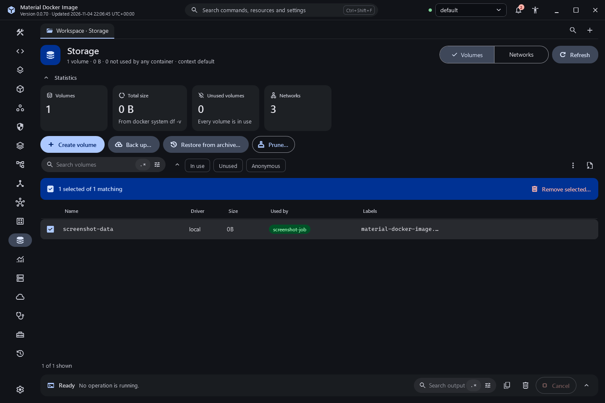</p>
<p>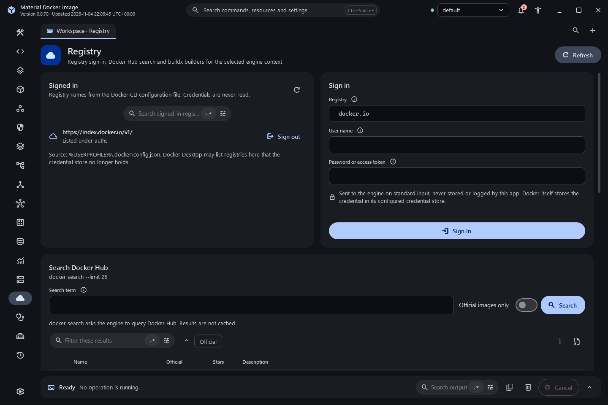</p>
<p>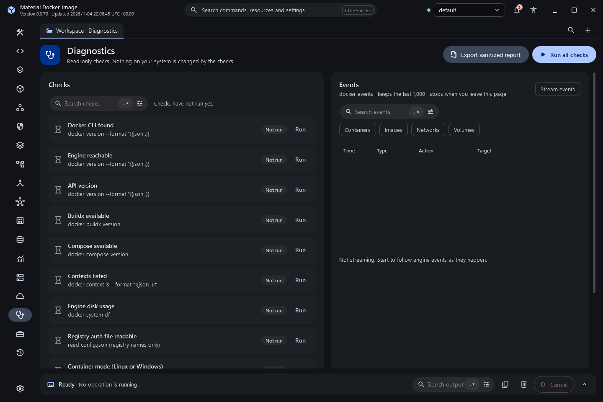</p>
<p>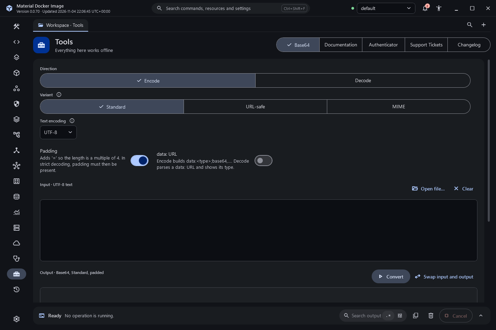</p>
<p>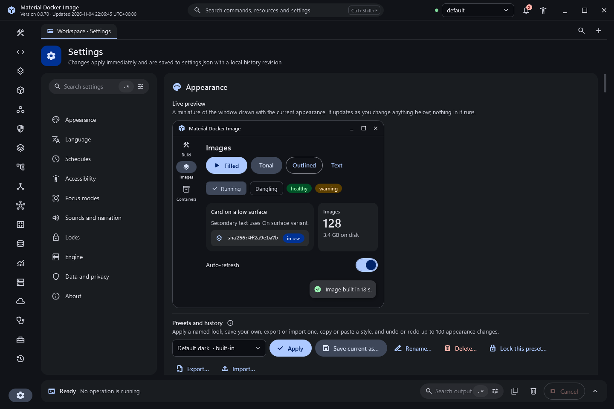</p></article>
<article id="doc-docs-features-records-and-updates-md" class="article"><h3>Records, exports, shortcuts and updates</h3><p class="source-label">Complete source: <a href="https://github.com/Ding-Ding-Projects/material-docker-image/blob/main/docs/features/records-and-updates.md">docs/features/records-and-updates.md</a></p><h3 id="doc-docs-features-records-and-updates-md-records-exports-shortcuts-and-updates">Records, exports, shortcuts and updates</h3>
<p>How the app shows its own history, exports tables, labels shortcuts, explains controls and keeps itself current.</p>
<h4 id="doc-docs-features-records-and-updates-md-changelog">Changelog</h4>
<p>Tools &gt; Changelog shows the running version, build time and runtime, then the release history.</p>
<p class="source-item">• The history is generated when the app is built, from this repository&#39;s git log, by <code>build/make-changelog.ps1</code>. It is written to <code>src/MaterialDockerImage/Assets/changelog.json</code>, embedded in the app and never fetched at run time. The same history always produces the same file.</p>
<p class="source-item">• Changes are grouped under the first <code>vX.Y.Z</code> tag that contains them, newest first. Changes after the newest tag are listed as unreleased. Merge commits are left out; every entry is an original commit subject with its commit date and its full SHA.</p>
<p class="source-item">• The category (Added, Changed, Fixed, Removed, Documentation, Other) comes from the first word of the subject. A subject that starts with another word is Other, not guessed.</p>
<p class="source-item">• The short SHA on each entry opens the real commit on GitHub, after you confirm the browser launch.</p>
<p class="source-item">• Search uses the same search box as the rest of the app, so the regex builder is next to it. The query is matched against the version, category, subject, date and SHA.</p>
<p class="source-item">• From date and To date accept <code>YYYY-MM-DD</code> or your regional date format. A date that cannot be read is reported under the boxes and your text is kept. Search and dates must both match.</p>
<p class="source-item">• Copy as Markdown and Export Markdown write the filtered view. The file states the repository, the range, the search, how many of the total changes it holds, and keeps full SHAs as text.</p>
<p class="source-item">• The page says that newer releases may exist: it lists the tags that existed when the build was made. A build made without the generator (a plain checkout) says it has no changelog.</p>
<h4 id="doc-docs-features-records-and-updates-md-table-exports">Table exports</h4>
<p>Every table (images, containers, volumes, activity and the rest) has an export button. It exports or copies the visible rows, after search and filters, as CSV, TSV, JSON, Markdown or HTML.</p>
<p>| Format | Escaping |</p>
<p>| --- | --- |</p>
<p>| CSV, TSV | Cells containing the separator, a quote or a line break are quoted, quotes doubled. CRLF row ends. |</p>
<p>| JSON | Schema <code>material-docker-image/table-export</code>, version 1, with <code>columns</code>, <code>count</code> and <code>rows</code>. Columns that share a header are numbered (<code>Name</code>, <code>Name (2)</code>). |</p>
<p>| Markdown | Pipes and backslashes are escaped, line breaks become <code>&lt;br&gt;</code>. |</p>
<p>| HTML | A complete UTF-8 page. Text, headers and the title are HTML-escaped, so a cell holding markup is shown, not run. |</p>
<p>Cells hold the text the table shows, not the underlying object, and the confirmation says so.</p>
<h4 id="doc-docs-features-records-and-updates-md-menu-shortcuts">Menu shortcuts</h4>
<p>A menu item that is also a command gets its shortcut text from the registered command gesture (<code>Ui.CommandMenuItem</code>), so the text shown is the key that works. Keys that belong to one list only (Delete, Enter, Alt+Up, Alt+Down, Ctrl+A, Ctrl+C) are typed next to their handlers. A test scans the source and fails if a menu hand-types any other shortcut.</p>
<h4 id="doc-docs-features-records-and-updates-md-info-icons">Info icons</h4>
<p>The info icon (<code>Ui.Info</code>) has the accessible name &quot;About&quot; followed by the control name, the explanation as its tooltip and a popover with a worked example where one helps. Every setting that is saved shows one: hand-written guidance when the row has it, otherwise the explanation plus the built-in default and how to undo the change. Field labels that lacked guidance were given some.</p>
<h4 id="doc-docs-features-records-and-updates-md-updates">Updates</h4>
<p class="source-item">• Only an installed copy updates itself. It is recognised by an <code>Update.exe</code> beside the <code>app-x.y.z</code> folder; a portable or development run skips the check and Settings says why.</p>
<p class="source-item">• About eight seconds after start (and when you press Check now in Settings &gt; Data and privacy) the app reads the <code>RELEASES</code> file of the latest GitHub release, parses it strictly, and compares the newest full package for this app with the running version. A newer version is downloaded with <code>Update.exe --update</code> and staged. A failed or slow check leaves the current version running and says so.</p>
<p class="source-item">• A banner above the workspace then names the new version and says the build is unsigned, so Windows may warn about an unknown publisher. Restart to update asks for confirmation first. Later hides the banner for the session. The app is never restarted without that confirmation.</p>
<p class="source-item">• Settings &gt; Data and privacy &gt; Check for updates turns the background check off. Check now always works.</p>
<p class="source-item">• Not yet done: a feed signature check, download progress, deferral choices, and any run against a real published feed or installed copy.</p></article>
<article id="doc-docs-features-regex-parity-md" class="article"><h3>Regex builder: RegexBuddy parity matrix</h3><p class="source-label">Complete source: <a href="https://github.com/Ding-Ding-Projects/material-docker-image/blob/main/docs/features/regex-parity.md">docs/features/regex-parity.md</a></p><h3 id="doc-docs-features-regex-parity-md-regex-builder-regexbuddy-parity-matrix">Regex builder: RegexBuddy parity matrix</h3>
<p>The regular expression builder is held to the functional baseline of the official <a href="https://www.regexbuddy.com/manual.html">RegexBuddy manual</a> (family list reviewed on 2026-11-04 against the maintainers&#39; parity checklist). This is an independent implementation: no RegexBuddy code, text or assets are used.</p>
<p><strong>Status is stated per topic, never as a family tick.</strong> The parity requirement stays <strong>open</strong>: 74 of 83 topics are implemented, 1 is partial and 8 are unavailable. All eight unavailable topics cannot exist on the .NET regular expression engine (debugger trace and debugging from the cursor, step counts, possessive quantifiers, recursion, class intersection, branch reset, replacement conditionals); nothing that .NET allows is left unbuilt, but one topic is only partly covered (scripting and automation beyond the command line).</p>
<p class="source-item">• <strong>implemented</strong>: built, covered by a focused check in <code>tests/UiState/Program.cs</code>, and applicable to the .NET engine.</p>
<p class="source-item">• <strong>partial</strong>: some of the topic works; the reason and the missing part are stated.</p>
<p class="source-item">• <strong>unavailable</strong>: not built, or impossible on this engine; the exact reason is stated.</p>
<p><strong>Not verified:</strong> none of the interface below has been exercised in the running application or captured as a HuiShot. Every &quot;implemented&quot; row is backed by logic checks on the framework-free engine classes only (<code>tests/UiState/Program.cs</code>, <code>tests/UiState/RegexRemainingChecks.cs</code>, <code>tests/UiState/RegexPartialChecks.cs</code>, <code>tests/UiState/RegexFinishChecks.cs</code>, <code>tests/UiState/RegexFinishMoreChecks.cs</code> and <code>tests/UiState/RegexFinishLocalizationChecks.cs</code> <code>tests/UiState/RegexGrepAttributeEncodingChecks.cs</code> and <code>tests/UiState/RegexRestLocalizationChecks.cs</code> and <code>tests/UiState/RegexGrepToolChecks.cs</code> and <code>tests/UiState/RegexFlavorVersionToolChecks.cs</code>). The checks added with the last wave (tree editing, templates, layout, preferences, keyboard map, folder-search extras, result lists, action files and command line, filter queries, engine versions and the Cantonese coverage) were each watched failing once by deliberately breaking the code they protect. The checks do not prove layout, focus order, keyboard use inside the popover, dialogs (including the new file open and save dialogs), the folder browser, the new tabs and sections, or pixels. The Perl and Ruby output and the PowerShell script were also run once by hand against the real tools (Perl 5, Ruby 3.3, PowerShell 7) on one pattern with each kind of code; that run is not repeated by the checks. The folder search and its undo were exercised on temporary folders by the checks, not on a real project.</p>
<h4 id="doc-docs-features-regex-parity-md-engine-binding">Engine binding</h4>
<p class="source-item">• Engine: <code>System.Text.RegularExpressions</code> on .NET 10, regular expression dialect &quot;.NET&quot;. The builder never silently substitutes another engine.</p>
<p class="source-item">• The non-backtracking engine is used whenever the pattern allows it. Patterns that need backtracking (lookarounds, backreferences, atomic groups, conditionals, balancing groups, <code>RightToLeft</code>) run on the backtracking engine with a 250 ms limit per match.</p>
<p class="source-item">• Flags offered (8): IgnoreCase, Multiline, Singleline, IgnorePatternWhitespace, ExplicitCapture, CultureInvariant, RightToLeft, NonBacktracking. RightToLeft uses the backtracking engine. NonBacktracking means &quot;require the linear-time engine&quot;: a pattern that needs backtracking is reported as unsupported instead of falling back, and combining it with RightToLeft is refused.</p>
<p class="source-item">• Limits: 4096 pattern characters, 64 KiB sample, 2000 highlighted matches, 2 s per test, 256 KiB replace output, 2000 split pieces, 200 test cases, 200 saved patterns, 50 remembered experiments (1 MiB, 16 KiB sample each). Folder search: 2 MiB per file by default (16 MiB ceiling), 5000 files (20000 ceiling), 1000 results (5000 ceiling), 200 matches per file, 128 MiB read in total, 15 s; replacement plans cover at most 500 files and 256 MiB, and 10 undo snapshots are kept. Scope testing: 5000 scopes and 2000 matches per run, 2 s. Hex view: 4 KiB. Loading a file: the first 64 KiB. Pattern comparison: 8 patterns, 4 s.</p>
<h4 id="doc-docs-features-regex-parity-md-matrix">Matrix</h4>
<p>Source files: <code>RegexBuilderEngine.cs</code> (flags, compile, test, replace), <code>RegexBuilderExplain.cs</code> (explanation tree), <code>RegexBuilderExport.cs</code> (tree export, token under the caret), <code>RegexBuilderLibrary.cs</code> (snippets, tokens, composers, saved patterns), <code>RegexBuilderConstructs.cs</code> (rare constructs and plain-language blocks), <code>RegexBuilderOperations.cs</code> (split, test cases, diagnostics, timing), <code>RegexBuilderReplacement.cs</code> (replacement parsing and explanation), <code>RegexBuilderNavigation.cs</code> (match navigation), <code>RegexBuilderParameters.cs</code> (parameters and POSIX class translation), <code>RegexBuilderFlavors.cs</code> (flavor table, scanner, comparison), <code>RegexBuilderGrep.cs</code> (folder search, dry run, apply, undo), <code>RegexBuilderHistory.cs</code> (remembered experiments), <code>RegexBuilderConvert.cs</code>, <code>RegexBuilderConvertTargets.cs</code> and <code>RegexBuilderConvertScripting.cs</code> (conversions), <code>RegexBuilderLibraryIO.cs</code> (import and search), <code>RegexBuilderUnicode.cs</code> (block table), <code>RegexBuilderTips.cs</code> (style tips), <code>RegexBuilderHelp.cs</code> (per-token help), <code>RegexBuilderSubject.cs</code> (scopes, hex view, line endings, files), <code>RegexBuilderCompare.cs</code> (pattern comparison, growth estimate), <code>RegexBuilderTreeEdit.cs</code> (editing through the tree), <code>RegexBuilderTemplates.cs</code> (editable code templates), <code>RegexBuilderPreferences.cs</code> (panel layout, preferences, keyboard map), <code>RegexBuilderGrepResults.cs</code> (saved result lists, date filter text, editor arguments), <code>RegexBuilderActions.cs</code> (action files, command line), <code>RegexBuilderFlavorVersions.cs</code> (engine versions), <code>RegexBuilderText.cs</code> (sentence-wise translation), <code>SearchBuilderPopover.cs</code>, <code>SearchBuilderPopover.Tools.cs</code>, <code>SearchBuilderPopover.Subject.cs</code> and <code>SearchBuilderPopover.Finish.cs</code> (view).</p>
<h5 id="doc-docs-features-regex-parity-md-1-construction-and-syntax">1. Construction and syntax</h5>
<p>| ID | Topic | Status | How, or why not |</p>
<p>| --- | --- | --- | --- |</p>
<p>| syntax.raw | Raw pattern editing, synchronized with the search field | implemented | Pattern box in the popover, two-way with the field. |</p>
<p>| syntax.literal | Literal text with automatic escaping | implemented | Text tab, <code>RegexBuilderLibrary.Literal</code>. |</p>
<p>| syntax.chars | Escaped, nonprinting, 8-bit and Unicode characters | implemented | <code>\n \r \t \f \v \e \a \0</code> tokens; More tab inserts <code>\xHH</code>, <code>\uHHHH</code> or a surrogate pair from a code point or character; <code>\cA</code> composer exists in code (no button). |</p>
<p>| syntax.shorthand | Shorthand classes <code>\d \w \s</code> and negations | implemented | Classes tab. |</p>
<p>| syntax.posix | POSIX bracket classes | implemented | Not native: .NET reads <code>[[:alpha:]]</code> as a set of ordinary characters plus a stray bracket (the diagnostics say so). The More tab has <strong>Convert POSIX classes</strong>, which rewrites all 13 classes into .NET sets (letters, digits and case as Unicode; punctuation, graph, print and control as ASCII). Negated <code>[:^name:]</code> cannot sit inside a .NET set, so a set that holds one is rewritten as a non-capturing group (for example <code>[x[:^digit:]]</code> becomes <code>(?:[x]\|[^0-9])</code>, and <code>[^[:^digit:]]</code> becomes <code>(?:[0-9])</code>); all 13 negated classes produce valid patterns and the combinations are checked by matching. Unknown class names are refused with the name. |</p>
<p>| syntax.unicode-blocks-scripts | Unicode blocks and scripts | implemented | The Classes tab has a Unicode block picker with a filter: all 108 block names that .NET accepts (<code>\p{IsGreek}</code>, <code>\p{IsCyrillic}</code> and so on), positive or negated, each with its code point range. The table was produced by asking the engine for the first and last character of every name, and the checks ask again and also test the characters beside each range. Scripts do not exist on this engine: <code>.NET</code> has no <code>\p{Greek}</code> property (a check shows it is invalid), blocks stop at the Basic Multilingual Plane, and the picker says so. |</p>
<p>| syntax.custom-class | Custom and negated character sets | implemented | Classes tab; members and ranges escaped; reverse ranges refused. |</p>
<p>| syntax.subtraction | Class subtraction <code>[a-z-[aeiou]]</code> | implemented | More tab and <code>RegexBuilderConstructs.Subtraction</code>. |</p>
<p>| syntax.intersection | Class intersection | unavailable | .NET offers only subtraction. |</p>
<p>| syntax.unicode-categories | Unicode general categories <code>\p{..}</code> / <code>\P{..}</code> | implemented | Classes tab, all 37 category codes. |</p>
<p>| syntax.quantifiers | <code>? * + {n} {n,} {n,m}</code> greedy and lazy | implemented | Repeat tab, palette, <code>Quantifier</code> composer, blocks. |</p>
<p>| syntax.possessive | Possessive quantifiers | unavailable | .NET has none. The More tab inserts the equivalent atomic group <code>(?&gt;item+)</code> and says so. |</p>
<p>| syntax.anchors | Anchors and boundaries <code>^ $ \A \z \Z \G \b \B</code> | implemented | Anchors tab and palette. |</p>
<p>| syntax.alternation | Alternation | implemented | Groups tab; escaped alternatives list. |</p>
<p>| syntax.groups | Capturing, named (<code>(?&lt;n&gt;)</code>, <code>(?&#39;n&#39;)</code>), non-capturing and atomic groups | implemented | Groups tab and palette. |</p>
<p>| syntax.backrefs | Numbered and named backreferences | implemented | Groups tab. |</p>
<p>| syntax.recursion | Recursion and subroutine calls | unavailable | .NET does not support them. Balancing groups are the .NET way to match nested pairs. |</p>
<p>| syntax.balancing | Balancing groups <code>(?&lt;a-b&gt;)</code> | implemented | More tab, <code>Balancing</code> composer; a nested-bracket pattern is verified. |</p>
<p>| syntax.conditionals | Conditionals <code>(?(1)a\|b)</code> | implemented | More tab, <code>Conditional</code> composer; branch selection verified. |</p>
<p>| syntax.lookaround | Lookahead and lookbehind, positive and negative | implemented | Groups tab. |</p>
<p>| syntax.mode-modifiers | Inline options <code>(?i-s)</code> and <code>(?i-s:..)</code> | implemented | More tab; letters validated. |</p>
<p>| syntax.comments | <code>(?#..)</code> comments and <code>x</code>-mode comments | implemented | Palette and explanation. |</p>
<p>| syntax.selection-aware | Selection-aware insertion and grouping | implemented | Group buttons wrap the selection (existing behavior). |</p>
<p>| syntax.options | Regex options | implemented | 8 flags above. |</p>
<p>| syntax.branch-reset | Branch reset, <code>\K</code>, <code>\R</code>, <code>\X</code> | unavailable | Not .NET syntax. Listed in the More tab. |</p>
<h5 id="doc-docs-features-regex-parity-md-2-replacement-construction">2. Replacement construction</h5>
<p>| ID | Topic | Status | How, or why not |</p>
<p>| --- | --- | --- | --- |</p>
<p>| replace.preview | Replace preview with <code>$1</code>, <code>${name}</code>, <code>$0</code>, <code>$&amp;</code>, <code>$$</code> | implemented | Replace section; verified including names and <code>$$</code>. |</p>
<p>| replace.warnings | Warnings for references to missing groups | implemented | Verified. |</p>
<p>| replace.other-refs | Last group <code>$+</code>, context `<code> $</code> `<code> / </code>$&#39;<code>, whole subject </code>$_<code> | implemented | </code>$+<code>, </code><code> $</code> `<code>, </code>$&#39;<code> and </code>$_<code> are in the replacement palette and explained in plain words; the parser is compared with </code>Match.Result` on eight replacement cases. |</p>
<p>| replace.parse-explain | Independently parsed and explained replacement text | implemented | <code>RegexReplacementParser</code> splits replacement text into literals and the nine reference kinds, flags references to groups the pattern lacks (.NET inserts those literally) and explains each piece under the replacement box. Its own expansion is compared with the framework&#39;s on every case, and a deliberately wrong expander is shown to fail that comparison. |</p>
<p>| replace.encoded-chars | Literal and encoded characters inside the replacement | implemented | .NET replacement text has no escapes. The helper turns typed <code>\n \r \t \\ \0 \xHH \uHHHH \u{...}</code> into the characters themselves and inserts them at the caret; a second button doubles every <code>$</code> so ordinary text is inserted as typed. |</p>
<p>| replace.conditionals | Conditional replacement | unavailable | .NET replacement syntax has no conditionals. |</p>
<h5 id="doc-docs-features-regex-parity-md-3-analysis-and-exports">3. Analysis and exports</h5>
<p>| ID | Topic | Status | How, or why not |</p>
<p>| --- | --- | --- | --- |</p>
<p>| analysis.tree | Token-by-token explanation tree | implemented | Existing tree; every family covered by a check, with group numbering as .NET assigns it. |</p>
<p>| analysis.select-tree-to-pattern | Selecting a tree row selects the token | implemented | Row selection highlights the span in the pattern box. |</p>
<p>| analysis.select-pattern-to-tree | Moving the caret selects the tree row | implemented | Moving the caret or selection in the pattern box selects the deepest displayed row (<code>RegexTreeExport.NodeAt</code>, checked on nested groups and token boundaries). The view wiring has not been exercised in a running window. |</p>
<p>| analysis.editable-tree | Editing through the tree | implemented | The Explanation panel has <strong>Edit through the tree</strong>: with a row selected you can set, change or remove its quantifier (<code>?</code>, <code>*</code>, <code>+</code>, <code>{n}</code>, <code>{n,}</code>, <code>{n,m}</code>, each optionally lazy), wrap it in a capturing, non-capturing or atomic group or a lookahead or lookbehind (positive or negative), unwrap a group, or delete the row (deleting a branch also removes one separating bar). Every edit is a text operation on the span of one tree node (<code>RegexBuilderTreeEdit.cs</code>); the pattern text is regenerated, validated with the engine, and refused with the reason when it would be invalid or would silently change meaning (a quantifier moving onto one character of a group, an alternation reaching the text around it, an unwrap that a backreference needs). A multi-character literal or an alternation is wrapped in a non-capturing group before it is repeated. Capturing-group renumbering is mentioned in the message. Checked case by case including the refusals; the buttons have not been driven in a window. |</p>
<p>| analysis.precision | Adjustable explanation precision | implemented | Detail selector: Overview (top level), Standard (three levels) or Full. It drives both the tree and the export. |</p>
<p>| analysis.invalid-edits | Explanation of invalid intermediate patterns | implemented | Error nodes; the framework error is shown with the error position underlined. |</p>
<p>| analysis.diagnostics | Tips and diagnostics | implemented | Static backtracking findings (nested quantifier, repeated and overlapping alternatives, adjacent wildcards) and, in the same section, style tips marked with a light bulb: leading and trailing <code>.*</code>, an unescaped dot between letters (<code>example.com</code>), an empty alternative, an alternation of single characters that should be a set, a duplicate alternative, a non-capturing group around one item, both letter cases in a set under IgnoreCase, and three or more capturing groups that nothing refers to. Each tip names the span it is about; invalid patterns give none. The tip wording is English only. |</p>
<p>| analysis.help | Contextual syntax help | implemented | Select a row of the explanation (or move the caret in the pattern, which selects the row) and a help block under the tree shows the page for that token: its name, how it is written, what it does, a worked example and the .NET note. There are 24 pages covering every kind of token; every example is run on .NET by the checks and must find what the page says it finds. The page text is English only. |</p>
<p>| analysis.exports | Analysis export formats | implemented | The explanation tree exports as indented text, Markdown (backtick-safe code spans) or JSON (nested tokens with family, position and description), at the chosen detail; copy or save to a file. Bounded to 2000 tokens. The pattern, C# string, converted code and JSON exchange file export as before. |</p>
<h5 id="doc-docs-features-regex-parity-md-4-flavor-and-version-comparison-and-conversion">4. Flavor and version comparison and conversion</h5>
<p>| ID | Topic | Status | How, or why not |</p>
<p>| --- | --- | --- | --- |</p>
<p>| flavor.select | Select target flavors, languages and engine versions | implemented | The comparison lets you choose which of seven engines are shown (.NET, PCRE2, JavaScript, Python re, Go RE2, Rust regex, grep -E). Python (3.9 and 3.10, 3.11 to 3.13, 3.14 and later) and JavaScript (ECMAScript 2017 and earlier, 2018 and later) have a <strong>version</strong> picker that changes the verdict for the constructs whose support arrived in a later release: possessive quantifiers, atomic groups and <code>\z</code> in Python, lookbehind, named groups, property escapes and the <code>s</code> flag in JavaScript (<code>RegexBuilderFlavorVersions.cs</code>). The newest version of every engine is exactly the flavor table (a check compares every cell). The older-version facts come from the languages&#39; documentation and release notes, not from running old engines; an engine whose table row has no version dependence shows a single version and no picker. |</p>
<p>| flavor.compare | Compare regex semantics across flavors | implemented | Static comparison of the constructs the pattern uses, from a hand-written table of 37 constructs. Every probe in the table was run against the real engine while the table was written (PHP&#39;s PCRE2, Node, Python 3.14, Go, ripgrep, GNU grep) and the .NET column is checked against .NET on every test run. The application does not run any other engine on your pattern, so it states what the table says and nothing more. The version remarks are checked against real engines on every test run when they are installed (<code>tests/UiState/RegexFlavorVersionToolChecks.cs</code>): every Python rule on Python 3.10, 3.11, 3.13 and 3.14, and every ECMAScript 2018 rule on the installed Node, including that inline <code>(?s)</code> is still refused. Two edges have no engine on a current machine and rest on the language documentation: the &quot;ECMAScript 2017 and earlier&quot; rejections, and Python 3.9, which the table groups with 3.10 (3.10 was probed). |</p>
<p>| convert.csharp | Convert to C# (verbatim string, regular string, code with options and timeout) | implemented | Quoting and option names verified. |</p>
<p>| convert.powershell | Convert to PowerShell | implemented | Single-quote doubling and <code>[regex]::new</code> options verified; not executed in PowerShell by the checks. |</p>
<p>| convert.json | JSON string escaping | implemented | Round trip verified for quotes, tabs, newlines and Unicode. |</p>
<p>| convert.grep | Convert to <code>grep -E</code> | implemented | Construct-by-construct converter for <code>grep -E</code>; lazy quantifiers, lookarounds, atomic groups, conditionals, inline options, Unicode escapes, <code>\t</code>-style escapes, class subtraction and several flags are refused with the reason; lossy rewrites (<code>\d</code>, <code>\w</code>, <code>\A</code>, groups) are labelled. <code>grep -P</code> keeps PCRE2 constructs and refuses .NET-only ones using the flavor table. Checked by comparing .NET results on ASCII text, and the <code>grep -E</code> output is now run against real GNU grep (the copy in Git for Windows&#39; <code>usrin</code>) by <code>tests/UiState/RegexGrepToolChecks.cs</code>: 33 representative patterns are converted, each is passed to <code>grep -E</code> through a pattern file and the numbers of the matching lines are compared with .NET&#39;s on one ASCII sample file; all 33 agreed. When that grep is not installed the check prints SKIP and counts nothing, so a missing tool is never reported as a pass. The <code>grep -P</code> and ripgrep command lines were run once by hand against the real tools on a quoting-heavy pattern; they are not part of the automated comparison. The comparison covers matching lines only, not the extent of each match (GNU grep takes the leftmost-longest match, .NET the first alternative that fits). |</p>
<p>| convert.preview-accept | Preview before accepting a conversion; keep the original | implemented | The converted text is a separate output; the pattern is never changed. |</p>
<p>| convert.other-languages | Java, JavaScript, Python, PHP, Perl, Ruby, others | implemented | JavaScript, Python, Java, Go, PHP, Perl and Ruby, with exact string quoting and option names, plus command lines for ripgrep and Select-String. Perl and Ruby keep the pattern in a single-quoted string (only the backslash and the quote are escaped, which is exact in both) so <code>$</code> and <code>@</code> are never read as variables. Constructs a target cannot read stop the conversion; different readings are listed and mark the result lossy. The Java, Perl and Ruby checks use the PCRE2 column because the table has no column of their own, and the notes say so. The JavaScript, Python, Java, Go, PHP, grep -P, ripgrep, Select-String, Perl and Ruby output was run by hand against the real tools once. Languages beyond these (for example Delphi, R, Tcl, Visual Basic) are not built; the topic names the languages above, and &quot;others&quot; has no end. |</p>
<h5 id="doc-docs-features-regex-parity-md-5-testing-and-data">5. Testing and data</h5>
<p>| ID | Topic | Status | How, or why not |</p>
<p>| --- | --- | --- | --- |</p>
<p>| test.match | Match testing with highlighting, counts, zero-width markers | implemented | Test section. |</p>
<p>| test.captures | Result and capture table, unmatched groups | implemented | Table with match, group, name, value, position; &quot;did not participate&quot;. |</p>
<p>| test.replace | Replace testing | implemented | See replace.preview. |</p>
<p>| test.split | Split testing | implemented | Split section, bounded to 2000 pieces; capture groups explained. |</p>
<p>| test.suites | Expected outcomes (must match / must not match) | implemented | Per-field list with pass and fail report. Saved with a saved pattern (when the box is ticked) and with a remembered experiment; the sample text is stored only with an experiment. |</p>
<p>| test.navigation | Next and previous match navigation | implemented | Previous and Next match buttons (F3 and Shift+F3) step through the matches with wrap-around, select the match in the sample box and mark it in the highlighted view. The index logic is checked; the view has not been exercised in a running window. |</p>
<p>| test.scopes | Whole-subject, line and page scopes | implemented | Subject tools: <strong>Test by scope</strong> with Whole text, Each line or Each page (a page ends at a form feed). Each line or page is tested on its own, so <code>^</code> and <code>$</code> anchor there and no match crosses the boundary; the report lists the matches with their offsets in the whole sample and the totals. Bounded to 5000 scopes, 2000 matches and 2 s; the cut is reported. Highlighting in the main test view still uses the whole text. |</p>
<p>| test.files | File and clipboard subjects | implemented | Text can be pasted into the sample box; <strong>Load file…</strong> replaces the sample with the first 64 KiB of a text file (Auto reads a byte order mark, then valid UTF-8, then Latin-1; a file with zero bytes and no mark is refused as binary unless an encoding is chosen; a cut inside a multi-byte character is handled) and <strong>Save sample…</strong> writes it back in the chosen encoding and line ending through a temporary file, with a byte order mark for UTF-16. <strong>Search in files</strong> searches a folder. The dialogs have not been opened in a running window. |</p>
<p>| test.hex-encoding | Hex view, encodings, line endings | implemented | <strong>Show hex view</strong> shows the first 4 KiB of the sample as offset, bytes and text column in UTF-8, UTF-16 LE or BE, Latin-1 or ASCII (characters an encoding cannot hold show as a question mark byte, as the encoder writes them). It encodes the sample text; it does not show the original bytes of a loaded file. Line endings are counted (CRLF, LF, CR, mixed) and <strong>Convert line endings</strong> rewrites them as LF, CRLF or CR. |</p>
<p>| test.timeout | Bounded execution with a timeout warning | implemented | 250 ms per match, 2 s per test; timeouts reported in test, replace and split. |</p>
<h5 id="doc-docs-features-regex-parity-md-6-debugger">6. Debugger</h5>
<p>| ID | Topic | Status | How, or why not |</p>
<p>| --- | --- | --- | --- |</p>
<p>| debug.trace | Match-attempt trace and backtracking steps | unavailable | The .NET engine exposes no step or trace hook. Nothing is simulated or animated. |</p>
<p>| debug.scopes | Debug from cursor or selected match | unavailable | Same reason. |</p>
<h5 id="doc-docs-features-regex-parity-md-7-benchmark-and-diagnostics">7. Benchmark and diagnostics</h5>
<p>| ID | Topic | Status | How, or why not |</p>
<p>| --- | --- | --- | --- |</p>
<p>| bench.growth | Input-growth timing and catastrophic-backtracking warning | implemented | &quot;Run timing probe&quot; measures wall-clock time on the sample repeated 1 to 16 times and on an <code>a…a!</code> probe with the backtracking engine, 250 ms limit per probe, 3 s total, cancellable. It warns when a probe exceeds the limit or time grows more than six times when the probe doubles, and adds an estimate of the growth exponent per family (about linear, between linear and quadratic, about quadratic, worse) or says the times were too small to tell (below one millisecond). It is a measurement on a few inputs, not a proof. |</p>
<p>| bench.steps | Step and backtracking counts | unavailable | Not exposed by .NET; the builder says so. |</p>
<p>| bench.compare | Compare several patterns on matching and non-matching subjects | implemented | <strong>Compare patterns</strong>: up to 8 patterns, one per line, run over the test cases (each <code>+</code> line is a subject that must match, each <code>-</code> line one that must not). Every pattern is first checked for the right answers on both groups, then timed over 20 passes; the verdict names the fastest pattern among those that are right and calls out wrong, invalid or timed-out ones. Times are wall-clock measurements on this computer and change from run to run, so the checks test the correctness side, not which pattern wins. |</p>
<h5 id="doc-docs-features-regex-parity-md-8-code-and-escaping">8. Code and escaping</h5>
<p>| ID | Topic | Status | How, or why not |</p>
<p>| --- | --- | --- | --- |</p>
<p>| code.csharp | Generated C# for match, test, replace, split | implemented | Convert section. |</p>
<p>| code.powershell | Generated PowerShell | implemented | Match, test, replace and split expressions (target PowerShell) and a complete script (target PowerShell script): a mandatory <code>-Path</code> parameter, strict mode, the quoted pattern and option names, a 250 ms timeout, the file read, the chosen kind of operation and a timeout handler. The script was run once by hand in PowerShell 7 for each kind of code. |</p>
<p>| code.other | Other languages and APIs | implemented | Match, test, replace and split snippets for JavaScript, Python, Java, Go, PHP, Perl and Ruby (see convert.other-languages). Other languages are not built. |</p>
<p>| code.templates | Editable source templates | implemented | The <strong>Code templates</strong> panel edits the shape of the code that Convert generates for C#, PowerShell, JavaScript, Python, Java, Go and PHP, one template per language and kind of code (28 in all). A template is text with <code>{{pattern}}</code>, <code>{{options}}</code>, <code>{{options_arg}}</code>, <code>{{replacement}}</code>, <code>{{raw_pattern}}</code>, <code>{{raw_replacement}}</code>, <code>{{kind}}</code> and <code>{{language}}</code>; the pattern and replacement arrive already quoted for the language, so editing a template cannot change the quoting. Templates are saved per user in <code>regex-templates.json</code> (atomic write, validated on load: unknown language, unknown placeholder, empty or oversize text refuses the whole file), reset one at a time, and previewed with the current pattern. A pattern the language cannot express stays refused. The built-in templates are the converter&#39;s own shapes, and a check compares their output with the converter for every language and kind. Perl, Ruby and the PowerShell script keep fixed output. |</p>
<p>| code.escaping | Language-specific quoting | implemented | C# regular and verbatim, PowerShell single quotes, JSON, shell single quotes, JavaScript literal, Python raw or escaped, Java, Go raw or interpreted, PHP single-quoted delimited. |</p>
<h5 id="doc-docs-features-regex-parity-md-9-saved-collections-and-parameterized-reuse">9. Saved collections and parameterized reuse</h5>
<p>| ID | Topic | Status | How, or why not |</p>
<p>| --- | --- | --- | --- |</p>
<p>| library.builtin | Built-in snippets with worked examples | implemented | 14 snippets, each checked against its example and counter-example. |</p>
<p>| library.user | Save, load, remove, search my patterns | implemented | <code>regex-patterns.json</code> in the app data folder, atomic write, at most 200; filter box. |</p>
<p>| library.import-export | Import and export collections | implemented | Import skips name clashes and patterns that do not compile; export saves a library file. File dialogs not exercised interactively. |</p>
<p>| library.metadata | Descriptions, replacement and test data in a collection | implemented | A saved pattern keeps its name, pattern, flags, an optional description (a field on the My patterns tab, at most 300 characters, shown under the name and searched by the filter) and, when the box is ticked, its replacement and test cases. The sample text is deliberately never saved with a pattern; <strong>Remember this experiment</strong> on the History tab keeps a sample (up to 16 KiB) when you choose to. |</p>
<p>| library.parameters | Parameterized patterns | implemented | Placeholders <code>{{name}}</code> and <code>{{name:default}}</code>: the Parameters tab lists them, takes a value for each, and fills the pattern in one pass (values escaped as literal text unless fragments are chosen; a filled pattern that does not compile is refused). The selection can be turned into a parameter. A pattern with placeholders still compiles, so saved entries stay valid. |</p>
<h5 id="doc-docs-features-regex-parity-md-10-file-and-folder-grep">10. File and folder GREP</h5>
<p>| ID | Topic | Status | How, or why not |</p>
<p>| --- | --- | --- | --- |</p>
<p>| grep.all | File and folder search and replace with backups | implemented | <strong>Search in files</strong>: folder, file patterns (with exclusions), subfolders, size limit, binary and link skipping, bounded results with file, line and column; replace in files as a dry run first, then an explicit apply that checks every file against its previewed SHA-256, writes a byte-exact undo snapshot first, preserves BOM and line endings, restores on failure, and can be undone later (a file edited after the apply is left alone). Added: a <strong>modified after / before</strong> window (local dates, honoured by the search and by the replacement plan), up to 5 <strong>context lines</strong> around each match (shown under the grid for the selected result), <strong>Save results…</strong> (JSON that can be loaded again, text with context, or CSV with formula-looking cells neutralised), <strong>Load results…</strong>, and <strong>Open selected result</strong> (double-click or Enter) in the external editor from Settings or Visual Studio Code, at the line and column when the editor is Visual Studio Code, Notepad++ or Sublime Text and with the file alone for any other editor. <strong>File attribute filters</strong>: three checkboxes include or skip hidden files and folders, read-only files and system files and folders (all on by default, which is how the search always behaved); the search and the replacement plan both honour them, a hidden or system folder that is skipped is not entered, and every skipped item is listed with its reason. A read-only file that is included in a search is still never edited (the plan lists it as skipped). <strong>Encodings</strong>: a UTF-8, UTF-16 or UTF-32 byte order mark (either byte order) always decides the encoding, and the file is written back with the same mark. For a file without a mark, <strong>Encoding for files without a byte order mark</strong> chooses Auto (UTF-8, the default), UTF-16 little endian, UTF-16 big endian, Windows-1252 or Latin-1; a replacement then writes the file back in that encoding with no mark added, byte-exact apart from the replaced text, and the undo snapshot keeps the original bytes. A file that is not valid in the encoding in use (for example a Windows-1252 file under the UTF-8 default) can still be searched but is never edited. A NUL byte still marks a file as binary, except when a UTF-16 encoding is chosen. The choices are saved in and read from action files (<code>includeHidden</code>, <code>includeReadOnly</code>, <code>includeSystem</code>, <code>bomlessEncoding</code>). The detection is a choice made by the user and not a guess: there is no automatic detection of BOM-less UTF-16 or of single-byte code pages, and encodings beyond the five listed are not offered. The snapshot is kept in the app data folder (10 newest), and the Local History log records the event, not the file contents. The new controls and dialogs, including the attribute checkboxes and the encoding picker, have not been driven in a window; the attribute filters and every encoding were exercised by checks on temporary folders (<code>tests/UiState/RegexGrepAttributeEncodingChecks.cs</code>), which compare raw bytes and were each watched failing once. |</p>
<h5 id="doc-docs-features-regex-parity-md-11-multiple-regexes-and-history">11. Multiple regexes and history</h5>
<p>| ID | Topic | Status | How, or why not |</p>
<p>| --- | --- | --- | --- |</p>
<p>| history.recent | Recent patterns, recall | implemented | Twelve valid patterns per field in the session. <strong>Remember this experiment</strong> stores the full experiment on disk so it survives a restart. |</p>
<p>| history.independent | Independent experiments without cross-contamination | implemented | Every search field owns its pattern, flags, sample, replacement, test cases and blocks. |</p>
<p>| history.experiments | Navigable history of full experiments with data | implemented | <strong>History</strong> tab: remembers pattern, flags, sample (up to 16 KiB), replacement and test cases only when you press Remember, at most 50 experiments and 1 MiB in <code>regex-experiments.json</code>; load, forget one, forget all. Oversized text is refused, never cut. |</p>
<h5 id="doc-docs-features-regex-parity-md-12-integration-and-automation">12. Integration and automation</h5>
<p>| ID | Topic | Status | How, or why not |</p>
<p>| --- | --- | --- | --- |</p>
<p>| integration.all | External tool launch and return, command line, action files, automation | partial | Copy as a command line for <code>grep -E</code>, <code>grep -P</code>, ripgrep and Select-String, using the folder and file patterns of <strong>Search in files</strong>. New: the application starts with the builder filled in from <code>--regex-pattern TEXT [--regex-flags imsxncrb] [--regex-replacement TEXT] [--regex-folder PATH] [--regex-globs LIST]</code> or <code>--regex-action FILE</code>, and the builder can <strong>Copy command line</strong> (quoted exactly as Windows reads it, checked by reading it back) and save or open an <strong>action file</strong> (a small JSON description of a search: pattern, flags, replacement, folder, file patterns, subfolders and context lines; validated in full, never containing a command, and opening one never runs the search or a replacement). Opening a result in an editor is an external launch. New: <strong>Import tool output…</strong> (from a file) and <strong>Import from clipboard</strong> in the Search in files results read the output of <code>grep -n</code> (<code>line:text</code>), <code>grep -nH</code> and ripgrep without headings (<code>file:line:text</code>), ripgrep <code>--vimgrep</code> (<code>file:line:column:text</code>) and ripgrep <code>--json</code> (one result per submatch, columns converted from bytes to characters) into the same result list the built-in search fills, so <strong>Open selected result</strong> and <strong>Save results</strong> work on imported results. The format is auto-detected or chosen; Windows drive-letter paths are supported, relative paths are resolved against the folder field, and <code>grep -n</code> output without a file name is attributed to the file that was opened or to standard input. Reading is strict and bounded (16 MiB, 250000 lines, 64 KiB per line, the result-list limit); lines that do not fit the format are counted and the first few named, and output in which no line fits is refused. Nothing is ever run, and no file named in the output is read until a result is opened. Not available: the length of a match from <code>grep -n</code> and <code>--vimgrep</code> output (those tools do not print it), file names that contain a colon outside a drive letter, and <code>grep</code> context lines (<code>file-3-text</code>), which are reported as unreadable. Missing: scripting or automation beyond the command line. The start-up route and the import buttons and dialogs have been checked by logic only (<code>tests/UiState/RegexGrepToolChecks.cs</code>), not run in the built application. |</p>
<h5 id="doc-docs-features-regex-parity-md-13-help-editing-preferences-and-layout">13. Help, editing, preferences and layout</h5>
<p>| ID | Topic | Status | How, or why not |</p>
<p>| --- | --- | --- | --- |</p>
<p>| ui.keyboard | Keyboard access | implemented | <code>Alt+R</code> opens, <code>Tab</code> cycles inside the panel, <code>Esc</code> closes, <code>F3</code> and <code>Shift+F3</code> step through matches. Added a documented map that the key handler reads (<code>RegexKeyboard</code>): <code>F6</code> and <code>Shift+F6</code> move through the panels that are shown and wrap, <code>Ctrl+1</code> to <code>Ctrl+9</code> and <code>Ctrl+0</code> jump to the first ten shown panels, <code>Alt+Home</code> returns to the pattern box. The map is listed in the Preferences and layout panel with the panels that are currently shown, and a check proves that repeated <code>F6</code> reaches every shown panel under the default and a reduced layout and that each listed gesture goes to its panel. The key handling has not been exercised in a running window. |</p>
<p>| ui.localization | Localization | implemented | Cantonese entries cover the builder&#39;s labels, captions, palette descriptions and fixed messages (<code>LocStrings.Regex.cs</code>). The labels, captions and tooltips of the later sections (Unicode blocks, subject tools, pattern comparison, saved pattern descriptions) are in <code>LocStrings.RegexSubject.cs</code>, and the last wave is in <code>LocStrings.RegexFinish.cs</code>: the new panels, every per-token help page (title, explanation, note, the written-as and example lines), every style tip including the ones that name groups or characters, the engine version labels and notes, the comparison verdict and growth sentences, the scope and hex reports (including singular and plural forms), the keyboard map and the messages of the editing, template, date, layout and action logic. A check builds each of these with the real code and fails when a sentence has no Cantonese, and others check the English stays unchanged without the language lookup. The remaining generated wording is covered too (<code>LocStrings.RegexRest.cs</code>): the reasons and notes of every code and command-line conversion (shown through <code>RegexConverter.TranslateNote</code>, which translates a refusal sentence by sentence and keeps the English in the conversion itself), the built-in snippet names and descriptions and the guided token palette descriptions, the rows of the pattern comparison table (&quot;must match 2/2&quot;) and of the numeric timing table (<code>Format</code> on each row), and the timing verdicts. Checks in <code>tests/UiState/RegexRestLocalizationChecks.cs</code> build all of these with the real code, across every conversion target, kind and flag, and fail when a sentence has no Cantonese; others check the English output is unchanged without the language lookup. Deliberately left as the framework wrote it: the error text that the .NET framework itself produces for an invalid pattern (shown after a translated lead-in such as &quot;無效：&quot; in the comparison table). The localized interface has not been seen in a running window. |</p>
<p>| ui.layout | Configurable panels, docking, fonts, palettes | implemented | The <strong>Preferences and layout</strong> panel lists the builder&#39;s 16 panels with a show/hide box and move up/down buttons, and the choice is remembered per user (<code>regex-preferences.json</code>, atomic write, validated on load). The pattern panel and the preferences panel always stay (a hide request is refused with the reason, and a stored file that hides them is refused). A stored order that misses a panel appends it in its default place. The font size of the pattern box is a preference. Docking (floating or side-by-side panels) and colour palettes are not offered: the popover is one anchored column that follows the application&#39;s appearance, so &quot;docking&quot; and &quot;palettes&quot; are not applicable here. The layout logic is checked; applying it to the visible popover has not been seen in a window. |</p>
<p>| ui.preferences | Editor and operation preferences | implemented | Remembered per user and applied from start-up: the <strong>default flags</strong> of every new search field (NonBacktracking with RightToLeft is refused), the <strong>match time limit</strong> (50 to 1000 ms, default 250, used by regular expressions compiled afterwards), the <strong>font size</strong> of the pattern box (10 to 24) and the <strong>default explanation detail</strong>, with <strong>Reset preferences</strong> that removes the saved file. A damaged file is refused as a whole, the defaults are used and the reason is shown in the panel; out-of-range values are refused on load and clamped when applied. Saved patterns, remembered experiments and templates are separate stores as before. |</p>
<p>| ui.nested-search | Library and my-patterns filters carry their own builder | implemented | The Library filter, the My patterns filter and the Unicode block filter are now search fields like every other: plain text by default, with a regex toggle and their own anchored builder (they reuse <code>SearchFilter</code>, are registered in the search surface catalogue, and the catalogue scan now includes the builder&#39;s own source files). Matching goes through <code>RegexSearchQuery</code>, so the filter&#39;s own flags apply, an invalid expression lists nothing and says why, and the saved-pattern, snippet and block lists have query overloads that are checked. A nested builder is a second popup: while one is open the first popup stays open (<code>StaysOpen</code>) and closes with it. That popup stacking has not been seen in a running window, which is why the earlier version left it out. |</p>
<h4 id="doc-docs-features-regex-parity-md-open-items">Open items</h4>
<p>Anything marked partial above is open, and so is the exercise of every implemented row in the built application. The eight unavailable rows are kept as documented limitations of the .NET engine. The parity requirement is complete only when every applicable row has been exercised in the built application. Interactive Windows verification of the popover (layout, focus, the stacked second popup of the nested filters, dialogs, the new panels and their keyboard jumps, localization, the folder browser, the start-up arguments), and HuiShots, remain to do.</p>
<h4 id="doc-docs-features-regex-parity-md-how-the-flavor-table-was-verified">How the flavor table was verified</h4>
<p>Each construct in <code>RegexBuilderFlavors.cs</code> has a small probe pattern and a text it must match. During development every probe was run with the real engines: PHP (PCRE2), Node, Python 3.14, Go, ripgrep and GNU grep 3.0 (<code>-E</code>), and the table was corrected until the match and no-match results agreed with every cell. Two JavaScript cells (the <code>s</code> and <code>m</code> options) can only be written as flags, so they were checked separately. The probe for right-to-left matching is empty because the other engines have no equivalent. Only the .NET column is re-checked automatically (<code>RegexRemainingChecks</code>), including a deliberately corrupted cell that must be caught. Same-meaning notes such as &quot;ASCII only&quot; and the version remarks come from documentation, not from the probes.</p></article>
<article id="doc-docs-features-resources-md" class="article"><h3>Images, containers, storage and networks</h3><p class="source-label">Complete source: <a href="https://github.com/Ding-Ding-Projects/material-docker-image/blob/main/docs/features/resources.md">docs/features/resources.md</a></p><h3 id="doc-docs-features-resources-md-images-containers-storage-and-networks">Images, containers, storage and networks</h3>
<p>Refresh inventories from the selected engine. Inspect an exact record before acting on it. Image tags can move and external tools can delete or replace resources, so refresh after every mutation.</p>
<p>Image workflows include pulling, inspecting, tagging, importing, exporting, running and removing images where the installed Docker capabilities support them. Container workflows include lifecycle actions, logs and resource inspection. Volumes and networks expose creation, inspection and removal through their dedicated workspace.</p>
<p>Removal is destructive and requires confirmation. A volume may contain irreplaceable data. Do not use broad prune commands as a substitute for selecting the exact records intended for deletion. The application never starts a container merely because its details are opened.</p>
<h4 id="doc-docs-features-resources-md-section">廣東話</h4>
<p>先重新整理清單，再檢查要操作嗰個項目。標籤可以改指向，其他工具亦可以改動引擎，所以每次操作完都要再讀狀態。資料卷可能有重要資料，刪除前必須清楚確認，唔好用大範圍清理代替逐項選擇。</p>
<h4 id="doc-docs-features-resources-md-screenshots">Screenshots</h4>
<p>Captured from the built application (inventory <span class="muted">(document unavailable)</span>).</p>
<p>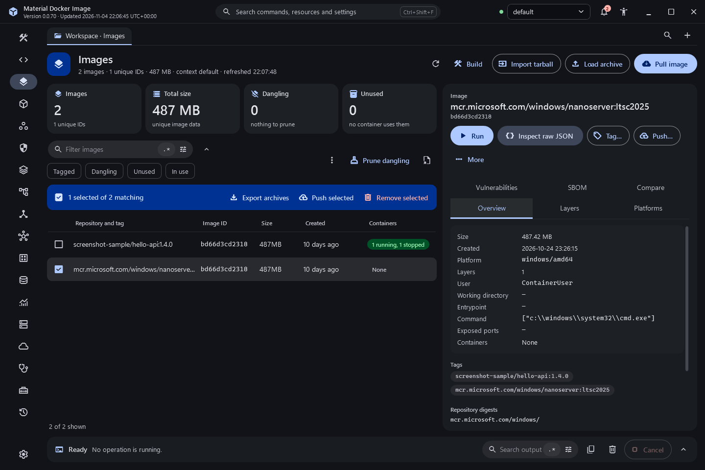</p>
<p>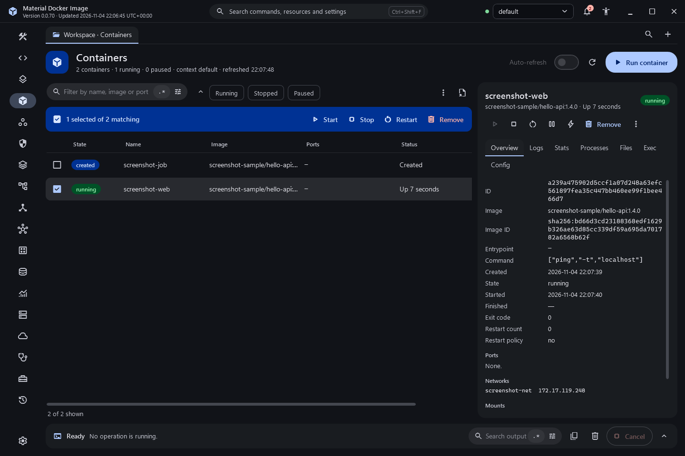</p>
<p>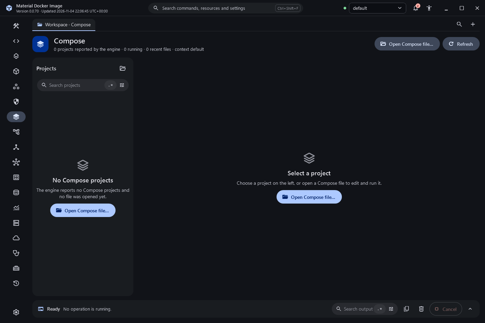</p></article>
<article id="doc-docs-features-search-and-regex-md" class="article"><h3>Search and the regular expression builder</h3><p class="source-label">Complete source: <a href="https://github.com/Ding-Ding-Projects/material-docker-image/blob/main/docs/features/search-and-regex.md">docs/features/search-and-regex.md</a></p><h3 id="doc-docs-features-search-and-regex-md-search-and-the-regular-expression-builder">Search and the regular expression builder</h3>
<p>Every search and filter field in the application, including lists, tables, logs, source viewers, pickers, menus, settings, the command palette and tab search, uses the same search field. Each field has its own regular expression builder beside it.</p>
<h4 id="doc-docs-features-search-and-regex-md-plain-text-first">Plain text first</h4>
<p>A search field matches the text exactly as you type it, ignoring case. Characters such as <code>.</code>, <code>*</code> or <code>(</code> have no special meaning in this mode.</p>
<p>Regular expressions are opt-in. Turn on the <code>.*</code> toggle at the end of the field, or insert something from the builder. Each field remembers its mode, flags and sample text only while it exists. Nothing is written to disk unless you choose <strong>Save to my patterns</strong> or <strong>Remember this experiment</strong>, or you apply a replacement in files (see below).</p>
<h4 id="doc-docs-features-search-and-regex-md-opening-the-builder">Opening the builder</h4>
<p class="source-item">• Press <code>Alt+R</code> while the field, its <code>.*</code> toggle or its builder button has focus.</p>
<p class="source-item">• Select the builder button (tune icon) next to <code>.*</code>, or right-click <code>.*</code>.</p>
<p>The builder opens as a panel attached to the field. It opens below the field, or above it when there is no room below, and its content scrolls when the window is small (960 x 720 and up). <code>Tab</code> moves through its controls and stays inside the panel. <code>Esc</code> or <strong>Done</strong> closes it and returns focus to the field. Clicking elsewhere also closes it, and focus stays where you clicked.</p>
<h4 id="doc-docs-features-search-and-regex-md-what-the-builder-offers">What the builder offers</h4>
<p class="source-item">• <strong>Pattern</strong>: the raw pattern, synchronized both ways with the search field. If the pattern is invalid, the builder shows the framework&#39;s message, and the panel underlines the character where the error was found.</p>
<p class="source-item">• <strong>Flags</strong>: toggle chips for IgnoreCase, Multiline, Singleline, IgnorePatternWhitespace, ExplicitCapture, CultureInvariant, RightToLeft and NonBacktracking. IgnoreCase also applies to plain-text mode. RightToLeft runs on the backtracking engine. NonBacktracking requires the linear-time engine and reports patterns that need backtracking instead of falling back.</p>
<p class="source-item">• <strong>Guided insertion</strong> at the caret:</p>
<p>  - <strong>Text</strong>: plain text with automatic escaping, and a list of alternatives inserted as <code>(?:a|b)</code>.</p>
<p>  - <strong>Classes</strong>: <code>\d \w \s</code> and their negations, <code>.</code>, Unicode categories such as <code>\p{L}</code> (with a negate option), and a custom or negated <code>[set]</code> editor that escapes <code>] \ ^ -</code> for you.</p>
<p>  - <strong>Anchors</strong>: <code>^ $ \b \B \A \z</code>.</p>
<p>  - <strong>Groups</strong>: capturing, named <code>(?&lt;name&gt;...)</code>, non-capturing, lookahead and lookbehind (positive and negative), atomic, alternation <code>|</code>, and backreferences <code>\1</code> or <code>\k&lt;name&gt;</code>. Group buttons wrap the selected part of the pattern.</p>
<p>  - <strong>Repeat</strong>: <code>? * +</code>, their lazy forms, and <code>{n}</code>, <code>{n,}</code>, <code>{n,m}</code> with an optional lazy suffix.</p>
<p class="source-item">• <strong>Blocks</strong>: build a pattern from plain-language lines such as <code>start of line</code>, <code>literal v</code>, <code>capture major: digits 1 to 3 times</code>, <code>one of cat|dog</code>, <code>optional literal s</code>, <code>end of line</code>. Literal text is escaped. <strong>Use this pattern</strong> or <strong>Insert at caret</strong> applies the result.</p>
<p class="source-item">• <strong>More</strong>: characters by code point (<code>\xHH</code>, <code>\uHHHH</code>, surrogate pairs), <code>\n \r \t \f \v \e \a \0</code>, <code>\Z</code>, <code>\G</code>, class subtraction <code>[a-z-[aeiou]]</code>, conditionals <code>(?(1)a|b)</code>, balancing groups <code>(?&lt;push-pop&gt;...)</code>, inline options <code>(?i-s:...)</code>, comments, and the atomic stand-in <code>(?&gt;item+)</code> for possessive quantifiers. Constructs .NET does not have are listed with the reason.</p>
<p class="source-item">• <strong>Library</strong>: ready-made patterns for an image reference, an image tag, a sha256 digest, a semantic version, IPv4 and IPv6 addresses, a port number, a container or image ID, an ISO 8601 date, an email address, a URL, a Windows path, an environment variable <code>NAME=value</code> line and a log level. Each has a worked example. <strong>Use</strong> replaces the pattern; <strong>Insert</strong> adds the pattern at the caret.</p>
<p class="source-item">• <strong>My patterns</strong>: <strong>Save to my patterns</strong> stores the name, pattern and flags in <code>regex-patterns.json</code> in the application data folder (<code>%LOCALAPPDATA%\DingDingProjects\MaterialDockerImage</code>). The file holds at most 200 entries, and you can remove any of them. The sample text is never saved with a pattern. The replacement and the test cases are saved with it only when <strong>Also save the replacement and the test cases</strong> is ticked (it is ticked by default), and loading the pattern restores them. <strong>Import…</strong> adds patterns from a library file (existing names are kept; patterns that do not compile are skipped and reported) and <strong>Export…</strong> saves all of them to a file you choose. A filter box searches names and patterns. <strong>Recent in this field</strong> lists valid patterns used in that field during this session. The list is kept in memory only.</p>
<p class="source-item">• <strong>Explanation</strong>: a tree that describes each token of the pattern in plain English. It covers literals, escapes, classes, Unicode categories, anchors, groups, lookarounds, alternation, quantifiers, backreferences, inline options and comments. Selecting a row highlights that token in the pattern, and moving the caret in the pattern selects the deepest row at that position. <strong>Detail</strong> (Overview, Standard, Full) limits how many levels are shown and exported. <strong>Copy explanation</strong> and <strong>Save explanation…</strong> export the tree as indented text, Markdown or JSON at that detail (up to 2000 tokens).</p>
<p class="source-item">• <strong>Test</strong>: paste up to 64 KiB of sample text. The builder highlights matches, shows zero-width matches as thin markers, gives the match count, and lists capture groups in a table (match, group number, name, value, position). <strong>Previous match</strong> and <strong>Next match</strong> (<code>Shift+F3</code> and <code>F3</code>) step through the matches with wrap-around, mark the current one in a second colour and select it in the sample box.</p>
<p class="source-item">• <strong>Replace preview</strong>: a replacement using <code>$1</code>, <code>${name}</code>, <code>$0</code> or <code>$&amp;</code>, `<code> $</code> `<code>, </code>$&#39;<code>, </code>$+<code>, </code>$_<code> and </code>$$<code>. The preview shows the sample after replacement and warns about references to groups that do not exist (.NET inserts those as plain text). A palette inserts each reference at the caret, **Replacement explained** describes every piece in plain words, and **Insert characters** turns typed escapes (</code>\n<code>, </code>\t<code>, </code>\xHH<code>, </code>\uHHHH<code>, </code>\u{...}<code>) into the characters themselves, because .NET replacement text has no escapes of its own. **Insert as literal text** doubles every </code>$`. Nothing in the application is changed.</p>
<p class="source-item">• <strong>Split preview</strong>: shows how the sample is cut at each match (up to 2000 pieces). With capture groups, the captured text is returned between the pieces, as .NET does.</p>
<p class="source-item">• <strong>Test cases</strong>: lines starting with <code>+</code> must match and lines starting with <code>-</code> must not match. The builder reports how many hold. Kept in memory for the field only.</p>
<p class="source-item">• <strong>Diagnostics and timing</strong>: a static check flags nested unbounded repeats, repeated or overlapping alternatives under a repeat and adjacent <code>.*.*</code>. <strong>Run timing probe</strong> measures wall-clock time on growing inputs with the backtracking engine (250 ms per probe, 3 s total) and warns about catastrophic backtracking. .NET exposes no step count or match trace, so none is shown.</p>
<p class="source-item">• <strong>Convert and copy as</strong>: C# (verbatim string, regular string, code for finding, testing, replacing or splitting), PowerShell, a JSON string, command lines for <code>grep -E</code>, <code>grep -P</code>, ripgrep and Select-String, and code for JavaScript, Python, Java, Go and PHP. The <code>grep -E</code> conversion works construct by construct and refuses what grep cannot express (lazy quantifiers, lookarounds, atomic groups, conditionals, inline options, Unicode escapes and some flags); rewrites that change meaning are labelled. The other targets use the flavor table: a construct the target does not support stops the conversion and names it, and a construct it reads differently is listed and marks the result as not identical in meaning. The command lines use the folder and file patterns from <strong>Search in files</strong> when they are filled in; their quoting is for a POSIX shell (PowerShell for Select-String). ripgrep gets <code>-P</code> when only PCRE2 can read the pattern.</p>
<p class="source-item">• <strong>Parameters</strong>: write <code>{{name}}</code> or <code>{{name:default}}</code> in a pattern. The pattern still compiles as written, so a saved pattern with placeholders stays valid. The Parameters tab lists the placeholders, takes a value for each and fills the pattern in a single pass: values are escaped as literal text unless <strong>Insert values as pattern fragments</strong> is ticked, a value that itself looks like a placeholder is never expanded, and a filled pattern that does not compile is refused. <strong>Turn selection into parameter</strong> writes the placeholder for you. Using a saved pattern that has placeholders tells you how many to fill.</p>
<p class="source-item">• <strong>History</strong>: <strong>Remember this experiment</strong> stores the pattern, flags, sample (up to 16 KiB), replacement and test cases in <code>regex-experiments.json</code> in the application data folder (50 experiments, 1 MiB at most; the oldest go first). Nothing is stored until you press the button. <strong>Load</strong> restores a whole experiment, <strong>Forget</strong> removes one and <strong>Forget all</strong> clears the file. The sample is part of what is stored, so do not remember text you would not keep on disk.</p>
<p class="source-item">• <strong>Flavor comparison</strong>: lists, for the constructs this pattern uses, which of seven engines (.NET, PCRE2, JavaScript, Python re, Go RE2, Rust regex as used by ripgrep, and <code>grep -E</code>) read them the same way, read them differently or do not support them. The table is written by hand (37 constructs) and each probe was run against the real engines while it was written; nothing is executed in another engine when you use it. It can be copied as text.</p>
<p class="source-item">• <strong>Search in files</strong>: searches the files of a folder with the pattern (flags and plain-text mode included). Folder, file patterns (<code>*.log;*.txt;!*.min.js</code>, <code>?</code>, <code>**</code>; a slash means a path from the folder), subfolders and the largest file are set in the panel and remembered while the field exists. <code>.git</code> and <code>node_modules</code> are skipped, links and junctions are never followed, binary files (a NUL byte in the first 8 KiB) are skipped, and UTF-8 and UTF-16 with a byte order mark are read. Results list file, line, column and the line text; the limits are 2 MiB per file (adjustable up to 16 MiB), 5000 files, 1000 results, 200 matches per file, 128 MiB in total and 15 seconds, and each limit that stops a search is reported. A whole drive is refused.</p>
<p>  - <strong>Preview replacement</strong> is a dry run: it writes nothing and needs no backup. It lists, per file, the number of replacements and the first changes with line and column. Files that are not valid in their encoding, read-only files and files over a limit are skipped with the reason.</p>
<p>  - <strong>Apply…</strong> is available only after a preview of the current pattern, replacement, folder and file patterns, and asks for confirmation. It re-reads each file and skips any that changed since the preview (SHA-256 comparison), writes a byte-exact undo snapshot of every file it will change into <code>regex-undo</code> in the application data folder, then writes each file with its byte order mark and line endings preserved. If a write fails, the files already written are restored. A plan covers at most 500 files and 256 MiB, and the 10 newest snapshots are kept. The event is recorded in Local History (the summary, not the file contents).</p>
<p>  - <strong>Undo</strong> on a snapshot restores the original bytes of each file that still has the content the replacement wrote; a file edited afterwards is left alone and reported.</p>
<p class="source-item">• <strong>Convert POSIX classes</strong> (More tab) rewrites <code>[[:alpha:]]</code> and the other POSIX classes as .NET sets; the diagnostics warn when a pattern contains one, because .NET reads it as a different set.</p>
<p class="source-item">• <strong>Copy pattern</strong>, <strong>Copy as C# string</strong> (a verbatim <code>@&quot;...&quot;</code> literal), and <strong>Export JSON</strong> (pattern, flags, engine, dialect, sample and replacement).</p>
<p>The full list of RegexBuddy topics, with what is implemented, partial or unavailable on .NET, is the <a href="#doc-docs-features-regex-parity-md">parity matrix</a>.</p>
<h4 id="doc-docs-features-search-and-regex-md-editing-templates-layout-and-preferences">Editing, templates, layout and preferences</h4>
<p class="source-item">• <strong>Edit through the tree.</strong> Select a row of the Explanation and set, change or remove its quantifier, wrap it in a group or lookaround, unwrap a group, or delete it. The pattern text is regenerated and checked; an edit that would make it invalid, or silently change what it means, is refused with the reason.</p>
<p class="source-item">• <strong>Code templates.</strong> The Convert section&#39;s code for C#, PowerShell, JavaScript, Python, Java, Go and PHP comes from templates you can edit, one per language and kind of code. Placeholders such as <code>{{pattern}}</code> are filled with text already quoted for the language, so a template cannot change the quoting. Templates are saved in <code>regex-templates.json</code> in the application data folder.</p>
<p class="source-item">• <strong>Preferences and layout.</strong> Choose which of the 16 panels are shown and their order, the default flags for new search fields, the match time limit (50 to 1000 ms), the font size of the pattern box and the default explanation detail. They are remembered in <code>regex-preferences.json</code> and loaded at start-up. The pattern and the preferences panel cannot be hidden.</p>
<p class="source-item">• <strong>Keyboard.</strong> <code>F6</code> and <code>Shift+F6</code> move through the panels that are shown, <code>Ctrl+1</code> to <code>Ctrl+0</code> jump to the first ten, <code>Alt+Home</code> returns to the pattern. The list is shown in the Preferences and layout panel.</p>
<p class="source-item">• <strong>Filters inside the builder.</strong> The Library, My patterns and Unicode block filters are search fields with their own builder, which opens beside the first one.</p>
<h4 id="doc-docs-features-search-and-regex-md-folder-search-extras-action-files-and-the-command-line">Folder search extras, action files and the command line</h4>
<p class="source-item">• <strong>Search in files</strong> accepts a modified-after and modified-before time (honoured by the replacement preview too) and up to 5 context lines. Results can be saved as JSON (loadable again), text with context or CSV, and a result opens in the external editor from Settings, at its line for Visual Studio Code, Notepad++ and Sublime Text.</p>
<p class="source-item">• <strong>Action files.</strong> A search (pattern, flags, replacement, folder, file patterns, subfolders, context lines) can be saved and opened as a small JSON file. Opening one fills in the builder and runs nothing.</p>
<p class="source-item">• <strong>Start-up arguments.</strong> <code>--regex-pattern TEXT [--regex-flags imsxncrb] [--regex-replacement TEXT] [--regex-folder PATH] [--regex-globs LIST]</code> or <code>--regex-action FILE</code> opens the command palette with its builder filled in. The flag letters are i IgnoreCase, m Multiline, s Singleline, x IgnorePatternWhitespace, n ExplicitCapture, c CultureInvariant, r RightToLeft and b NonBacktracking; without <code>--regex-flags</code> no flag is on. <strong>Copy command line</strong> in the builder writes the matching arguments.</p>
<p class="source-item">• <strong>Engine versions.</strong> The flavor comparison offers a version for Python and JavaScript. The newest version is the table itself; older versions change the constructs whose support arrived later.</p>
<h4 id="doc-docs-features-search-and-regex-md-engine-and-limits">Engine and limits</h4>
<p>Matching uses .NET regular expressions (<code>System.Text.RegularExpressions</code>). The builder states which engine runs the pattern:</p>
<p class="source-item">• <strong>Non-backtracking engine</strong> (<code>RegexOptions.NonBacktracking</code>), used whenever the pattern allows it. Matching time grows linearly with the text, so a pattern such as <code>(a+)+$</code> cannot hang the application.</p>
<p class="source-item">• <strong>Backtracking engine</strong>, used only for constructs the non-backtracking engine does not support: lookarounds, backreferences, atomic groups and conditionals. Each match is limited to 250 ms.</p>
<p>Limits:</p>
<p class="source-item">• Patterns can be up to 4096 characters.</p>
<p class="source-item">• Sample text can be up to 64 KiB (UTF-8); longer text is cut, and the builder says so.</p>
<p class="source-item">• At most 2000 matches are highlighted and 2000 split pieces are shown.</p>
<p class="source-item">• A test stops after 2 seconds in total.</p>
<p class="source-item">• Replace output is cut at 256 KiB.</p>
<p>Tests and replace previews run off the interface thread and are cancelled when you keep typing. An invalid pattern never raises an error dialog. The field shows a clear message, filtering shows nothing until the pattern is fixed, and bulk actions refuse to run. If a backtracking pattern times out while filtering a list, the field stops matching for that query and asks you to simplify it.</p>
<h4 id="doc-docs-features-search-and-regex-md-escaping-rules">Escaping rules</h4>
<p>To match one of <code>\ * + ? | { [ ( ) ^ $ . #</code> literally in a regular expression, put a backslash before it. With IgnorePatternWhitespace, a space must also be escaped. Inside <code>[ ]</code>, escape <code>\ ] [ ^ -</code>. <strong>Insert escaped text</strong> does this for you. Plain-text mode needs no escaping.</p>
<h4 id="doc-docs-features-search-and-regex-md-closing-tabs-by-text">Closing tabs by text</h4>
<p>The tab context menu and the command palette offer <strong>Close tabs containing text…</strong> and <strong>Close tabs not containing text…</strong>. Both open the same dialog, which has its own search field and builder. The dialog shows a live preview of which tabs will close, a count, and the tabs that stay open with the reason. An empty or invalid query closes nothing. The workspace tab never closes. Pinned tabs stay open unless you turn on <strong>Include pinned tabs</strong>. Tabs whose page has unsaved work always stay open.</p>
<h4 id="doc-docs-features-search-and-regex-md-coverage-guard">Coverage guard</h4>
<p><code>src/MaterialDockerImage/UI/SearchSurfaceCatalogue.cs</code> lists every search surface by ID and owner page. A test in <code>tests/UiState</code> scans the application source and fails in three cases:</p>
<p class="source-item">• A search field is constructed but not registered in the catalogue.</p>
<p class="source-item">• A registered surface no longer exists in the source.</p>
<p class="source-item">• A search-like text box bypasses the shared search field without a documented exemption.</p>
<p>There are two exemptions. The Docker Hub search term is a remote query sent to <code>docker search</code>; its results table has its own search and builder. The image tag entry only borrows the search field&#39;s style.</p>
<h4 id="doc-docs-features-search-and-regex-md-security">Security</h4>
<p>Patterns run locally in-process; nothing is sent anywhere. The builder reads files only in <strong>Search in files</strong>, when you press a button, and only in the folder you named. It writes your explicitly saved patterns, remembered experiments you asked for, exports you choose to save, and, when you confirm <strong>Apply…</strong>, the files of a previewed replacement together with their undo snapshots.</p></article>
<article id="doc-docs-features-settings-safety-md" class="article"><h3>Settings safety: locks, schedules, attention modes, sounds and collapsible filters</h3><p class="source-label">Complete source: <a href="https://github.com/Ding-Ding-Projects/material-docker-image/blob/main/docs/features/settings-safety.md">docs/features/settings-safety.md</a></p><h3 id="doc-docs-features-settings-safety-md-settings-safety-locks-schedules-attention-modes-sounds-and-c">Settings safety: locks, schedules, attention modes, sounds and collapsible filters</h3>
<p>This guide covers five related controls in Settings and the shell. Every rule below is a framework-free class in <code>src/MaterialDockerImage/UI/SettingsSafety.*.cs</code> with focused checks in <code>tests/UiState/Program.cs</code>. The window code only reads their decisions. None of this has been driven in the built window yet; see the verification section.</p>
<h4 id="doc-docs-features-settings-safety-md-element-locks">Element locks</h4>
<p>Every settings row that holds a value has a lock button beside its title, and every row and every interactive element on a page has <strong>Lock this control...</strong> on its right-click menu: buttons, switches, check boxes, options, drop-downs, text fields and sliders. Locking an element shares one helper (<code>Shell/LockUi.cs</code>) between settings rows, page buttons and every other element. Major page action buttons (the filled and danger buttons) keep their ids <code>btn.&lt;page&gt;.&lt;label&gt;</code> in lower case, at most 40 characters, so two buttons with the same label on the same page share a lock.</p>
<h5 id="doc-docs-features-settings-safety-md-locks-on-any-element">Locks on any element</h5>
<p><code>LockUi.AttachPage</code> walks each page when it is shown and attaches the lock menu to every supported element that does not already have one. The id comes from <code>ElementIdentity.Derive</code> (<code>UI/SettingsSafety.LockManager.cs</code>): <code>el.&lt;page&gt;.&lt;kind-name&gt;-&lt;hash&gt;</code>, at most 36 characters and always a valid lock id.</p>
<p class="source-item">• An element with an <code>AutomationProperties.AutomationId</code> keeps the same lock when it moves or is renamed. No page sets one today, so in practice the next rule applies.</p>
<p class="source-item">• Otherwise the id is built from the page, the element kind, the English name (<code>Loc.Original</code> turns a translated accessible name back into English, so switching language does not change the id) and the position among identical elements on that page, so two identical <code>OK</code> buttons get two locks.</p>
<p class="source-item">• A name that is a sentence with numbers in it is not reversed to English, and an element whose accessible name changes for another reason gets a new id. Elements built after the page is shown are picked up the next time it is shown. Settings rows keep their own lock and are skipped.</p>
<p class="source-item">• Tabs, tab groups and individual appearance values are lockable too, and clicking a locked control opens its unlock prompt: see the section on tab, tab group and appearance locks below.</p>
<p class="source-item">• A locked row or button is disabled, and a page that re-enables it (for example after an async action) is overruled. The right-click menu stays available on a locked element and offers <strong>Unlock this control...</strong>. The settings lock button also stays enabled as the unlock target. A disabled button cannot be clicked or focused, so unlocking a page button needs its context menu.</p>
<p class="source-item">• Locks are stored in <code>settings.json</code> as <code>LockedSettings</code> (identifiers, at most 200) and every lock or unlock is recorded in local history (&quot;Locked setting: ...&quot;). The history never holds a credential.</p>
<p class="source-item">• Import and Reset all keep locked rows at their current values (<code>ElementLocks.Preserve</code>). Reset leaves the locks themselves in place. A lock on a button has no settings value to preserve.</p>
<p class="source-item">• The command palette controls (theme, language, sounds, motion, contrast, the attention modes and School mode) and the accessibility menu are disabled while their row is locked, so a lock cannot be walked around.</p>
<h5 id="doc-docs-features-settings-safety-md-lock-policies">Lock policies</h5>
<p>The first time a control is locked, a wizard asks what unlocking should require. The choice is kept per lock and reused on the next lock; <strong>Change lock policy...</strong> reopens the wizard on an unlocked control and <strong>Remove lock policy...</strong> deletes the credential.</p>
<p>| Policy | Unlock asks for | Stored as |</p>
<p>| --- | --- | --- |</p>
<p>| None | A confirmation that repeats the disclosure below. | Nothing. |</p>
<p>| PIN | 4 to 12 digits. | A PBKDF2-SHA256 hash (150,000 iterations) with a random per-hash salt, mixed with a random per-install salt kept in the lock file. The PIN is never stored, logged or exported. |</p>
<p>| Password | 8 to 128 characters, no control characters. | A PBKDF2-SHA256 hash with the same parameters as the PIN. The password is never stored, logged or exported. |</p>
<p>| Authenticator app | A 6-digit RFC 6238 code (SHA-1, 30 seconds, one step of clock skew either side). A code that was accepted cannot be used again. | The 20-byte secret, generated with <code>RandomNumberGenerator</code>, protected with Windows DPAPI for the current user (entropy: the install salt). |</p>
<p>| PIN plus password, password plus authenticator, PIN plus authenticator, password plus PIN plus authenticator | Every factor of the policy, always asked in the order PIN, password, authenticator code. | Each factor as above, in the same lock record. |</p>
<p>A combined policy is one bounded attempt (<code>LockStore.Begin</code>, <code>UnlockAttempt</code>). The dialog shows <strong>Step n of m</strong>. A factor that is right is remembered only inside that attempt, so closing the prompt starts again at the first factor. A wrong answer at any step counts once against the lock&#39;s single attempt budget and sends the attempt back to the first factor; the authenticator step is spent only when every factor is right, so a code cannot be replayed. One value cannot answer a combined policy. A factor that cannot be checked (the authenticator secret cannot be read) is reported as unavailable and never skipped.</p>
<p>The stored policy numbers are <code>None 0, PIN 1, Authenticator 2, Password 3, PIN plus password 4, Password plus authenticator 5, PIN plus authenticator 6, Password plus PIN plus authenticator 7</code>. Existing numbers never change, a lock file written before durations loads, and an unknown number is dropped.</p>
<p>Credentials live in <code>locks.json</code> in the data folder, apart from <code>settings.json</code>, exports and history. An authenticator lock needs DPAPI; where it is unavailable the wizard says so and refuses the policy. In capture mode the store is held in memory only.</p>
<p>Pairing an authenticator shows the secret only after <strong>Show secret and QR code</strong>: a QR code of the <code>otpauth://totp/</code> link, the grouped Base32 secret, copy buttons and the algorithm, digits and period. The lock arms only after one current code is typed back.</p>
<h5 id="doc-docs-features-settings-safety-md-unlock-durations">Unlock durations</h5>
<p>The wizard asks how long an unlock lasts (<code>UnlockDuration</code>, stored with the lock):</p>
<p>| Choice | The lock closes again |</p>
<p>| --- | --- |</p>
<p>| This action only | After the protected action: a button click, a drop-down or slider change, a text field that lost focus with new text, or, for a settings row, the first save that changes its values. |</p>
<p>| 5 minutes, 1 hour | When the time is up. The expiry is saved in <code>locks.json</code>, checked every 15 seconds while the app runs, and honoured across a restart. |</p>
<p>| Until the app closes | At the next launch, always. This is the default for a new lock. |</p>
<p>Locks written before durations existed read as &quot;until I lock it again&quot; and are never closed by themselves. Locking again by hand ends the grant. <code>LockLifecycle</code> (<code>UI/SettingsSafety.LockManager.cs</code>) holds these rules; the launch pass and the timer call <code>LockLifecycle.Reconcile</code>. The record keeps only a flag and a time, never a credential.</p>
<h5 id="doc-docs-features-settings-safety-md-locks-manager">Locks manager</h5>
<p>Settings has a <strong>Locks</strong> section: one table of every lock the app knows, whatever it guards, with the lock id, what it is, its policy, how long an unlock lasts and whether it is locked or unlocked until a time. It has the shared search with its regex builder, the filters <strong>Locked only</strong> and <strong>Has a credential</strong>, export (the shared table export) and row actions <strong>Unlock this control...</strong>, <strong>Lock again</strong>, <strong>Change lock policy...</strong>, <strong>Remove lock</strong> and <strong>Support Tickets...</strong>. <strong>Remove selected locks</strong> removes many at once. A lock that is locked is never removed: it has to be unlocked first, and a bulk removal reports the locked ones it skipped. Removal deletes the lock, its credentials, its recovery codes and its label. The command palette has <strong>Locks manager</strong>. Labels for locks that are not settings rows are kept in <code>settings.json</code> (<code>LockLabels</code>, descriptions only, never a credential). An export contains only descriptions, never a hash or a secret.</p>
<h5 id="doc-docs-features-settings-safety-md-unlock-ladder">Unlock ladder</h5>
<p>Unlocking climbs these rungs (<code>LockStore.Stage</code>, <code>LockStore.Attempt</code>, <code>LockStore.UseRecoveryCode</code>):</p>
<p>1. <strong>Confirm.</strong> A lock with no policy only asks for a confirmation.</p>
<p>2. <strong>Credential.</strong> The PIN, password or authenticator code, one step at a time for a combined policy. The first two wrong answers cost nothing and the dialog says how many free tries remain.</p>
<p>3. <strong>Wait.</strong> From the third consecutive wrong answer the wait is 30 seconds, then 60, 120 and so on, doubling to a cap of one hour. The dialog shows a live countdown and the clock time the wait ends. The failure count and the wait are saved, so a restart does not clear them. While waiting, an answer is refused without being checked and without counting. Waiting alone never unlocks anything: the credential is still needed afterwards.</p>
<p>4. <strong>Recovery code.</strong> Eight single-use codes (<code>XXXXX-XXXXX</code>) are made when a PIN or authenticator policy is saved, shown once with Copy all and Save to file, and stored only as hashes. A code works at any time, including during a wait, clears the failure count and the wait, and is spent. Typing ignores case, spaces, hyphens and the look-alike letters I, L and O.</p>
<p>Beside every prompt the dialog names the data folder and says that deleting <code>locks.json</code> (or the whole folder) clears every lock. That is the last resort when the PIN, the authenticator and every recovery code are gone.</p>
<h5 id="doc-docs-features-settings-safety-md-tab-tab-group-and-appearance-locks-the-disabled-click-prompt">Tab, tab group and appearance locks, the disabled-click prompt, locked labels and the keypad</h5>
<p>These are framework-free rules in <code>UI/SettingsSafety.TabLocks.cs</code>, <code>UI/SettingsSafety.AppearanceLocks.cs</code> and <code>UI/SettingsSafety.PinKeypad.cs</code>, checked in <code>tests/UiState/LockExtraChecks.cs</code>. The window code only asks them.</p>
<p><strong>Tab locks.</strong> Every tab has its own lock, found by its destination (<code>tab.&lt;destination&gt;</code>). A locked tab keeps its readable name and shows a lock icon. It refuses switching to it, closing it, moving it and pinning or unpinning it. Selecting a locked tab does not open it: the strip goes back to the tab that is really shown and the unlock prompt opens; once the person gets through, the tab opens. The tab&#39;s right-click menu has <strong>Lock this tab...</strong> (with <strong>Change lock policy...</strong>) and <strong>Lock this tab group...</strong>. The rail destinations have <strong>Lock this destination...</strong> (the same per-destination lock) and <strong>Lock the navigation rail...</strong>. Navigation is checked in one place (<code>MainWindow.Navigate</code> and <code>OpenTab</code>), so a shortcut, the palette and a rail click cannot walk around a locked destination.</p>
<p><strong>Tab group locks.</strong> The app has no user-made tab groups yet, so the groups are its three regions: <strong>Pinned tabs</strong> (including the workspace tab), <strong>Open tabs</strong> and the <strong>Navigation rail</strong>. A group lock is a separate lock with its own policy and credentials. It refuses closing, moving and pinning for every tab in the group; for the rail it refuses switching destination by clicking the rail. It never relocks the members: a locked tab in a locked group answers to its own lock first, and unlocking one leaves the other standing. The Locks section has a button for each group.</p>
<p><strong>Bulk close.</strong> Locked tabs, and tabs in a locked group, are excluded from <strong>Close other tabs</strong> and <strong>Close tabs containing / not containing text</strong> exactly as pinned tabs are. The preview says &quot;locked&quot; beside them. <strong>Include locked tabs</strong> puts them in the preview, and even then each locked tab asks for its unlock before it closes.</p>
<p><strong>Appearance value locks.</strong> Every value of the appearance editor can be locked: theme, seed colour, colour roles (all, or each colour role on its own), corner radius, density, interface and code fonts, font size, heading weight, rail icon style, elevation, surface tint, rainbow accent, motion level and speed. A check compares the list with the members of <code>AppearanceState</code>, so a new value cannot be left out. A saved preset can be locked (it cannot be replaced, renamed or deleted). For a customized element, every property (background, text colour, corner radius, font size, weight, padding, visibility) has its own lock from the switch&#39;s right-click menu, the whole element has one lock, and <strong>Lock every property...</strong> gives each property its own wizard, policy and credentials. A lock holds the value whoever asks: the editor, a preset, a paste, undo and redo, an import, a reset, or the element editor all keep a locked value as it was (<code>AppearanceLocks.GuardState</code>, <code>Guard</code>, <code>GuardRoles</code>), and say so in a notification. A locked element property is disabled in the editor.</p>
<p><strong>Clicking a locked control.</strong> A locked control is still disabled. A left click that lands on it (hit-tested at the pointer, because a disabled element does not get the event) is swallowed, the protected action does not run, and that control&#39;s own unlock prompt opens, at most one prompt per lock (<code>UnlockPromptGate</code>). It is installed on the main window and on the element editor, and covers settings rows, page controls and the element editor&#39;s switches. The prompt is the shared unlock dialog, which is an overlay in the window, not a prompt anchored beside the control. A disabled control cannot take keyboard focus, so the keyboard route for it is the lock button of a settings row, the Locks section and the control&#39;s context menu; tabs are focusable and prompt when activated.</p>
<p><strong>Locked labels in searches and the palette.</strong> The command palette lists a guarded command with a <strong>Locked</strong> chip and the word &quot;locked&quot; in its accessible name; choosing it asks for the unlock and does not run the command. Go-to commands answer to the destination&#39;s tab lock and the settings commands (theme, motion, contrast, language, sounds, the attention modes, School mode) to their settings row. <strong>Search open tabs</strong> and the <strong>New tab</strong> catalog label locked tabs and match the word &quot;Locked&quot;. <strong>Hide locked items in searches</strong> (Locks section, off by default) leaves them out, and each list then says how many it hid.</p>
<p><strong>Keypad PIN entry.</strong> The unlock prompt shows a keypad under the PIN field for a PIN step: 1-9, then Clear, 0 and Backspace, large buttons with their own accessible names. It fills the same field the keyboard fills, and submitting goes through the same single validator and attempt budget as typing, so a wrong PIN on the pad costs the same attempt and a wait applies to it equally. A screen reader hears how many digits are entered, never which. The pad has no paste. <strong>Shuffle the keys</strong> (off by default, kept in settings) randomizes the digit positions.</p>
<p>What these do not cover: the PIN wizard that sets a PIN has no keypad (only the unlock prompt does); there are no user-made tab groups, no tab-group search and no all-windows master tab search, because the app has none of those surfaces; commands that pages register themselves are not mapped to locks; colour role names in the &quot;kept as they were&quot; notification are not translated individually.</p>
<h5 id="doc-docs-features-settings-safety-md-games-that-shorten-a-wait">Games that shorten a wait</h5>
<p>While a wait is running, the Wait rung offers <strong>Play to shorten the wait</strong>. The games run in this order, and a win ends the wait early. (<code>UI/UnlockLadderGames.cs</code> makes and grades every question; <code>Shell/LadderGameDialogs.cs</code> only shows them and collects answers.)</p>
<p>| Rung | What it asks | Clears the wait | Otherwise |</p>
<p>| --- | --- | --- | --- |</p>
<p>| Dish | One dim sum dish, four choices. With a picture from the public catalogue it asks which dish it is; with no picture (offline, or the picture could not be fetched) it shows the Cantonese name and asks for the English one. The picture alt text never names the dish. | The right choice | Up to five wrong choices, then the sums. Wrong choices are counted per lockout, so closing the dialog does not reset them |</p>
<p>| Sums | Ten sums (a + b, a - b with a non-negative answer, a x b with single digits). Every one must be right | Ten right | One wrong, missing or wrong-kind answer drops to whack-a-mole |</p>
<p>| Whack-a-mole | A 3 by 3 board, 14 moles one at a time for one second each, 20 second round. Click a mole or press keys 1 to 9. At least 8 hits | 8 or more counted hits | A lost round ends the ladder |</p>
<p>| Clock | The plain wait | | The ladder is not offered again for that lockout |</p>
<p>What keeps it from becoming a second, weaker password:</p>
<p class="source-item">• A win clears the wait only. It signs nobody in, mints no session and sets no cookie; the prompt returns to the credential rung and the PIN or code is still required. <code>LockStore.ClearWaitByLadder</code> changes nothing except the running wait.</p>
<p class="source-item">• It never refunds the attempt budget and never slows the escalation: the failure count is untouched, so the next wrong answer still earns the longer wait.</p>
<p class="source-item">• A rolling budget of <strong>three wins per hour</strong> (<code>LadderLedger</code>, kept in <code>ladder.json</code> beside <code>locks.json</code>) caps it. After that the Wait rung says the clock is the way through until an hour has passed. Deleting <code>ladder.json</code> only refills the budget; it does not touch any lock.</p>
<p class="source-item">• Every question carries a random single-use nonce that is taken out of the table before anything is graded, so a wrong answer cannot be retried against the same question, a right one cannot be replayed, an answer for another lock or of the wrong kind is refused, and challenges expire (5 minutes for a dish, 10 for sums, the round plus a minute for moles). The correct answers are not on the challenge objects the views receive. This app grades in the same process as the views, so this is separation of duties inside one program, not a security boundary, and the disclosure above still applies.</p>
<p class="source-item">• A mole round answered before its 20 seconds could have elapsed is refused. A hit counts only for a mole that was in that cell at that moment, inside the round, and each mole counts once.</p>
<p class="source-item">• Under School mode the ladder starts at the sums: the dish rung is absent, and no copy names it.</p>
<p>The dialogs use the real keyboard path (number keys for choices and cells, Enter on the last sum), a numeric seconds-left readout beside the round (never colour-only), a live region for the score, no animation, and large cells.</p>
<p>Not built: the access-control style keypad for PIN entry; locks on tabs, groups and individual appearance values; locked items labelled in the command palette and tab searches. Grading runs in the same process as the views. The three games have been checked as rules only; none has been driven in the built window.</p>
<h4 id="doc-docs-features-settings-safety-md-school-mode">School mode</h4>
<p>School mode keeps one shared record, <code>school-mode.json</code>, in <code>DingDingProjects\shared</code> under local application data, so every app on this computer shares it. It stores whether the mode is on, the name the user gave it and, optionally, a PIN (4 to 12 digits) or password (6 to 64 characters) as a salted PBKDF2-SHA256 hash. The secret is never stored or logged in plain text.</p>
<p class="source-item">• Turning it on needs nothing. Turning it off asks for the PIN or password when one is set; a wrong answer is counted, and from the third in a row it starts a persisted wait that doubles up to an hour (the same limiter as the lock ladder).</p>
<p class="source-item">• The mode can be renamed. This app then uses the chosen name on its mode controls, its settings row and its palette entry in place of the shipped one. Other copy that mentions the mode by name is rewritten to the chosen name when the mode has been renamed, in English only.</p>
<p class="source-item">• A running app checks the record every two seconds and switches live when another app changes it. An older build&#39;s per-app setting is adopted into the record the first time.</p>
<p class="source-item">• Deleting <code>school-mode.json</code> resets the mode, its name and its PIN. The settings row says so; the mode is a lock you set for yourself, not security.</p>
<p class="source-item">• The ladder starts at the sums and the dim sum surprise never appears while it is on. English is forced (<code>Loc.SchoolMode</code>).</p>
<p><strong>Passkey choice.</strong> Under Data and privacy the mode can be turned off with Windows Hello user verification instead of the PIN or password. The record stores only the choice (<code>Method</code>: <code>secret</code> or <code>passkey</code>), never a passkey, template or secret; Windows shows its own verification dialog (<code>UserConsentVerifier</code>, which is why the app targets <code>net10.0-windows10.0.19041.0</code>). Choosing the passkey is refused with the plain reason when Windows Hello has no device, is not set up, is disabled by policy or is busy. At turn-off time an unavailable Windows Hello is reported and falls back to the PIN or password, and to a free switch-off only when no PIN or password is set either. While the mode is on, changing the method needs the same proof as turning it off. An unknown stored method reads as the PIN or password. The pure rules are in <code>UI/SchoolPasskey.cs</code> and are checked in <code>tests/UiState/PasskeyQrChecks.cs</code>; the Windows Hello calls (<code>Services/WindowsHello.cs</code>) have not been run, because they show a Windows prompt.</p>
<p><strong>Hidden under the mode.</strong> The Language setting, both funny-level sliders, the personal wording row and its preview, the Language command in the palette, the Language field of the setup wizard and the personal wording file drop are absent (not disabled, and absent from settings search) while the mode is on, and come back when it is turned off. One list, <code>SchoolHiddenControls</code>, decides this. The scheduled-settings editor can still offer a language rule, and the language row of the Locks manager is unchanged; neither takes effect while the mode forces English.</p>
<p>Not built: proving the live switch between two real running apps, and driving the passkey choice and the hidden controls in the built window.</p>
<h4 id="doc-docs-features-settings-safety-md-dim-sum-surprise">Dim sum surprise</h4>
<p>At startup there is a 10 percent chance, from one fresh random draw per launch, of a small toast with a dim sum dish: its name in the active language mode and, when it can be fetched, its picture. It cannot be switched off. It stays polite by staying out of the way: it never appears during first-run setup, with a dialog open, while an update is ready, while an operation runs, in quiet hours, under School mode or in a capture run, and never twice in a launch. It does not take focus, announces itself through a polite live region, fades in only when motion is on, and removes itself after nine seconds (longer while hovered or focused).</p>
<p>Names and pictures come only from the public dim sum catalogue at <code>Ding-Ding-Projects/dim-sum-photos</code>:</p>
<p class="source-item">• The catalogue index is read from its raw URL and trimmed into a small cache (<code>dimsum\catalog-cache.json</code> in the data folder) that records the source URL and revision (ETag); it is refreshed after seven days with a conditional request.</p>
<p class="source-item">• A picture is downloaded once from the published <code>catalog-v1*</code> release assets (tried in order), must start with the PNG signature and be under 12 MB, and is kept in a cache of at most 24 pictures. No photo is stored in this project, and no photo is attached to its releases.</p>
<p class="source-item">• If the catalogue or picture cannot be had, the toast shows a dish name from a short built-in list of names with the line &quot;No picture is available right now.&quot; and the dish rung asks a name question instead. Nothing is drawn or generated locally.</p>
<p class="source-item">• The only requests are two public reads of that catalogue. No personal data is sent and nothing is tracked.</p>
<p>The rules, parsing and address building are checked in code (<code>DimSumRules</code>); the live fetch has not been run inside the app.</p>
<p>Disclosure shown every time: a lock is a speed bump you set for yourself, not security. It does not protect anything from another person who has this computer. Anyone who can delete the data folder can remove every lock.</p>
<h4 id="doc-docs-features-settings-safety-md-support-tickets">Support Tickets</h4>
<p>The recovery route for a locked-out person is dressed as a support desk. It is reached from the unlock prompt (<strong>Forgotten your password?</strong>), from the footer of the lock wizard, the ladder and the Locks manager (<strong>Support Tickets...</strong>), from the Tools page (<strong>Support Tickets</strong>) and from the command palette. The code is <code>Shell/SupportDeskUi.cs</code> and <code>UI/SettingsSafety.SupportTickets.cs</code>.</p>
<p class="source-item">• <strong>Filing.</strong> A category (forgot my PIN, forgot my password, lost my authenticator, lost my recovery codes, something else), a severity and a description of up to 1,000 characters. The ticket number is generated locally (<code>TKT-yyyyMMdd-0001</code>, counting up within a day). A blank description is refused. The list holds at most 200 tickets.</p>
<p class="source-item">• <strong>Severity.</strong> It is recorded and then treated exactly like every other severity, and the screen says so.</p>
<p class="source-item">• <strong>Status.</strong> New, acknowledged, investigating, resolved. It advances on request (<strong>Advance status</strong>), by itself every 20 seconds while the screen is open, or straight to resolved (<strong>Resolve</strong>, which still records every reply). Each step adds a canned reply. The factual sentence is always shown; a playful lead-in is added by the funny level.</p>
<p class="source-item">• <strong>Resolution.</strong> The resolution opens the application-data folder in the platform&#39;s file manager (<code>PageParts.OpenFolder</code>, which reports a failure to launch) and shows the exact path with a copy button. The path shown and the folder opened are the same value. The app never deletes anything: <code>SupportDesk.Resolve</code> returns only the folder to open, and a check asserts that neither source file contains a delete call.</p>
<p class="source-item">• <strong>The disclosure.</strong> One plain line, outside the comedy and identical at every funny level and in every language mode, states: nothing is sent anywhere, a ticket exists only on this computer, no network request is made, no data is collected, and nobody is reading it. A check pins its exact wording and asserts that the source files contain no network call.</p>
<p class="source-item">• <strong>Storage.</strong> Tickets live in <code>tickets.json</code> in the data folder, so deleting the data folder clears them with the locks they point at. The list uses the shared table: search with its regex builder, export, row actions and bulk Advance, Resolve and Remove.</p>
<p>No real person, company, case system or response time is named or implied.</p>
<h4 id="doc-docs-features-settings-safety-md-authenticator-tool">Authenticator tool</h4>
<p>Tools has an <strong>Authenticator</strong> section with two parts, chosen at the top: <strong>My accounts</strong> and <strong>App locks</strong>.</p>
<h5 id="doc-docs-features-settings-safety-md-my-accounts-general-authenticator">My accounts (general authenticator)</h5>
<p>Keeps the time-based one-time codes for any account you register.</p>
<p class="source-item">• <strong>Adding</strong>: paste an <code>otpauth://totp/</code> link (issuer, algorithm SHA1, SHA256 or SHA512, 6 to 8 digits and the period are taken from the link, never replaced by defaults) or enter the issuer, account, Base32 secret, algorithm, digits and period by hand. Spaces, hyphens and lower case in a secret are tolerated; counter-based (HOTP) links, unsupported algorithms, repeated parameters and links over 2,048 characters are refused with a plain reason.</p>
<p class="source-item">• <strong>Codes</strong>: each account shows its current code grouped for reading (<code>123 456</code>), the seconds left as a number and a bar (never colour only; the number turns to the warning colour in the last five seconds) and the next code. <strong>Copy</strong> puts the current code on the clipboard.</p>
<p class="source-item">• <strong>Managing</strong>: search (with its own regular expression builder), rename, move up or down and delete with confirmation. At most 200 accounts; an exact duplicate is refused.</p>
<p class="source-item">• <strong>Storage</strong>: one file, <code>authenticator.bin</code>, protected for the current Windows account with DPAPI. The whole document is encrypted, so issuers and names are protected as well as secrets. A file this account cannot open, or that is damaged, is reported and never overwritten. Nothing is written to <code>settings.json</code>, local history, notifications, logs or exports.</p>
<p class="source-item">• <strong>Backup</strong>: <strong>Export encrypted backup…</strong> writes AES-256-GCM with a key derived from a passphrase (at least 8 characters) by PBKDF2-SHA256 (600,000 iterations), a random salt and nonce. <strong>Import encrypted backup…</strong> validates everything before adding anything, skips accounts already present and refuses wrong passphrases, changed files, unsafe key settings and oversize files.</p>
<p class="source-item">• <strong>Capture mode</strong> shows three labelled sample accounts with example data and disables adding and backups, so a HuiShot never shows a real secret or code.</p>
<p>Standards: codes come from RFC 4226 and RFC 6238 and are checked against all 18 published RFC 6238 vectors through the account model.</p>
<p>Not built: registering from a QR image file, the clipboard or a camera, grouping, a warning when the system clock is far off (this needs a trusted time source), a secrets export behind super confirmation, and any driving of the section in the built window.</p>
<h5 id="doc-docs-features-settings-safety-md-app-locks">App locks</h5>
<p>Tools has an <strong>Authenticator</strong> section for the app&#39;s own locks. It pairs an authenticator app with a lock, checks a code for a lock without using it up or counting it as an unlock attempt, lists the locks that have a policy (with their recovery codes left and <strong>Remove policy</strong>) and runs <strong>Run RFC 6238 self-test</strong>, which computes the 18 published RFC 6238 vectors (SHA-1, SHA-256, SHA-512, 8 digits) with the build&#39;s own code. The command palette has <strong>Authenticator for locks</strong>. A lock registered in an authenticator on the same computer is mostly for fun, since the key sits beside the lock it opens.</p>
<p>The QR encoder (<code>UI/SettingsSafety.Qr.cs</code>) is dependency free and draws nothing itself: byte mode, level L, versions 1 to 10 (271 bytes). Text beyond that is refused rather than truncated, and an otpauth link for a lock fits easily.</p>
<h4 id="doc-docs-features-settings-safety-md-scheduled-settings">Scheduled settings</h4>
<p>Settings, Schedules. A rule lends one setting for a time window and, optionally, a date range. Seven settings can be scheduled; each is decided on its own.</p>
<p>| Setting | Allowed values | What it changes while lent |</p>
<p>| --- | --- | --- |</p>
<p>| Language | English, Cantonese, Bilingual | The interface language |</p>
<p>| Theme | Dark, Light, System | The colour scheme |</p>
<p>| Density | Compact, Comfortable, Spacious | Control height and padding |</p>
<p>| Accent colour | <code>#RRGGBB</code> | The seed colour that all colour roles derive from |</p>
<p>| Font size | Whole number 12 to 22 | The base font size |</p>
<p>| Motion | Off, Reduced, Standard, Expressive | The motion level |</p>
<p>| Display name | 1 to 80 characters, no control characters | The title bar and window title |</p>
<p>| Field | Meaning |</p>
<p>| --- | --- |</p>
<p>| Source | Local (the rule&#39;s own value), File, HTTPS (the value for the rule&#39;s setting comes from that source) or Home Assistant (on and off map to two values) |</p>
<p>| Days | Every day, or chosen weekdays |</p>
<p>| From, until | Local clock times, <code>HH:mm</code>. The end is not included. |</p>
<p>| First date, last date | Optional local calendar dates, <code>yyyy-MM-dd</code>, both days included. Empty means no bound on that side. |</p>
<p>| Priority | -5 to 5 in the editor (stored range -100 to 100) |</p>
<p>Semantics, all covered by checks:</p>
<p class="source-item">• Times are in this computer&#39;s time zone and follow daylight saving changes.</p>
<p class="source-item">• A window is from the start up to, but not including, the end.</p>
<p class="source-item">• Equal start and end mean the whole day (still limited to the selected weekdays and dates).</p>
<p class="source-item">• A start later than the end crosses midnight. The part before midnight uses that day, the part after midnight belongs to the window that started the day before. The weekday and the date range are both judged on the day the window started, so a window that starts on the last date finishes after midnight.</p>
<p class="source-item">• Weekdays and dates must both match. An unreadable date makes the rule inactive and is refused by the editor.</p>
<p class="source-item">• A rule with an unparseable time, no weekday selected or a disabled switch is never active.</p>
<p class="source-item">• Higher priority wins; equal priorities: the later rule in the list wins. Each setting is decided independently of the others, so a priority on one setting never blocks another.</p>
<p class="source-item">• At most 50 rules; duplicate or missing identifiers are repaired on load.</p>
<p>A schedule only lends its value. <code>UserSettings.ApplyScheduled</code> keeps the person&#39;s own choice as the base for every lent setting and <code>ToJson</code> always writes the bases, so the saved file never contains a borrowed value (a font size of 14.5 comes back as 14.5). When the window ends the base is put back. If the person changes a lent setting by hand, that choice becomes the new base instead of being overwritten.</p>
<p>The runtime (<code>Services/ScheduleRuntime.cs</code>) evaluates every 20 seconds, when rules change, when the source file changes and whenever a network source answers, and shows one non-blocking notice when the applied values change.</p>
<h5 id="doc-docs-features-settings-safety-md-value-sources">Value sources</h5>
<p>Rules whose source is File, HTTPS or Home Assistant take their value from outside. A rule whose source cannot supply a value stays inactive, and your own setting stays in effect.</p>
<p><strong>Local file.</strong> An optional JSON file chosen in Settings, Schedules, watched with a debounce and only ever read from disk:</p>
<pre><code>{ &quot;version&quot;: 1, &quot;language&quot;: &quot;Cantonese&quot;, &quot;theme&quot;: &quot;Light&quot;, &quot;density&quot;: &quot;Compact&quot;, &quot;accent&quot;: &quot;#AA3366&quot;, &quot;fontSize&quot;: 16, &quot;motion&quot;: &quot;Reduced&quot;, &quot;displayName&quot;: &quot;Night desk&quot; }</code></pre>
<p>Every field except <code>version</code> is optional. No other field is accepted, a field may appear only once, the nesting depth is limited, the version must be 1 and the file must be under 4 KiB. Anything wrong refuses the whole file so nothing is applied from a half-valid document.</p>
<p><strong>HTTPS.</strong> One address, entered by the person, that returns the same document (up to 64 KiB).</p>
<p class="source-item">• Only <code>https://</code> addresses are accepted. A user name or password in the address, a fragment, whitespace, and query parameter names that look like secrets (token, key, password, auth, signature and similar) are refused, so nothing secret is ever saved in plain text in <code>settings.json</code>.</p>
<p class="source-item">• The app sends only a <code>GET</code>, with no cookies and no credentials, waits 10 seconds at most, reads 64 KiB at most and does not follow a redirect to plain http.</p>
<p class="source-item">• Checking is automatic no more often than every 5 minutes (choices from 5 minutes to 24 hours), and only while an enabled rule uses the source. A &quot;Check now&quot; button asks at once.</p>
<p class="source-item">• If the server cannot be reached, times out, answers an error, answers something too large or answers a document that fails validation, the last good answer stays in use, <strong>no setting changes</strong>, and the state line says so, for example &quot;Offline: The server could not be reached. The last good answer from 25 minutes ago stays in use and nothing was changed.&quot; With no earlier good answer, nothing from the source is applied. Errors are fixed wording; the address and server text are never copied into messages or logs.</p>
<p><strong>Home Assistant.</strong> A base address, an entity id such as <code>input_boolean.night_mode</code>, and a long-lived access token.</p>
<p class="source-item">• The token is encrypted with Windows data protection (DPAPI, current user) and stored in its own file <code>ha-token.bin</code> in the data folder. It is never written to <code>settings.json</code>, exported, logged or shown again; a check proves <code>UserSettings</code> has no property that could hold a secret. Without a token the state line says &quot;No token is stored&quot; and nothing is requested. A token that cannot be decrypted (for example a copied file) is reported as unreadable.</p>
<p class="source-item">• Plain <code>http://</code> is accepted only for loopback, private-network and link-local addresses and for local names (<code>localhost</code>, a name without a dot, <code>.local</code>, <code>.lan</code>, <code>.home.arpa</code>). Every other host must use <code>https://</code>, so the token is never sent in clear text over the internet.</p>
<p class="source-item">• The app sends only <code>GET /api/states/&lt;entity&gt;</code> with the bearer token, waits 10 seconds at most and reads 64 KiB at most. The answer must be for the same entity.</p>
<p class="source-item">• The state <code>on</code> applies the rule&#39;s value; <code>off</code> applies the optional value for off (nothing if it is empty). Every other state (<code>unavailable</code>, <code>unknown</code>, a number) applies nothing.</p>
<p class="source-item">• Checking runs every 1 minute to 24 hours as chosen (default 5 minutes) while an enabled rule uses the source. Failure behaves exactly like the HTTPS source: the last good state stays and nothing changes.</p>
<p>Every rule add, change, enable, disable and delete, every change to a source and every token store or removal (the token itself is never recorded) is saved with a local history record.</p>
<h4 id="doc-docs-features-settings-safety-md-attention-modes">Attention modes</h4>
<p>All five are independent switches in Settings, Focus modes, and in the command palette. <code>AdhdRules.Resolve</code> is the single decision the window reads.</p>
<p>| Mode | What it changes |</p>
<p>| --- | --- |</p>
<p>| Focus | Hides the version line and the accessibility button, narrows the rail and hides its labels, and shows an Exit focus button in the title bar. Nothing is removed that cannot be brought back in one step. |</p>
<p>| Low stimulation | Turns off action sounds and animation, and hides the Momentum chip. It adds to, and never overrides, Reduced motion and the Windows animation setting. |</p>
<p>| Time awareness | Shows a clock in the title bar. |</p>
<p>| One thing at a time | Opening another destination reuses the current tab. |</p>
<p>| Momentum | Shows a chip with the number of operations finished in a row this session. A failure or a cancel resets it. The streak is never saved. |</p>
<p>Momentum is fed by <code>AppHost.Execute</code>, so it counts real Docker operations only.</p>
<h4 id="doc-docs-features-settings-safety-md-action-sound-effects">Action sound effects</h4>
<p>One playback path, <code>Services/ActionSounds.cs</code>. A cue plays only when the Action sounds switch is on, Low stimulation is off, the window is not producing captures, the volume is above zero and it is not inside the quiet hours (<code>SoundCueRules.MayPlay</code>). Playback runs on a background task and any playback problem is swallowed, so a missing audio device never changes the result of an action.</p>
<p>| Cue | Triggered by | Windows sound |</p>
<p>| --- | --- | --- |</p>
<p>| Success | An operation or build finished successfully | Asterisk |</p>
<p>| Failure | An operation or build failed | Hand |</p>
<p>| Warning | A warning notification, or a canceled operation | Exclamation |</p>
<p>| Removal | A remove, prune, kill or delete operation finished successfully | Question |</p>
<p>| Copy | Text was copied to the clipboard (after the clipboard accepted it) | Beep |</p>
<p>| Drop | A dropped wording file was applied | tada.wav, or Asterisk if missing |</p>
<p>| DropRefused | A dropped file was refused | Beep |</p>
<p>The mapping is <code>SoundCueRules.Mapping</code>; a check requires every cue to have a row. The same table appears in Settings, Sounds and narration. No audio file ships with the app.</p>
<h5 id="doc-docs-features-settings-safety-md-volume">Volume</h5>
<p>Settings, Sounds and narration, Action sound volume: 0 to 100 percent, saved as <code>SoundVolume</code> (default 100) and applied to the very next sound, with a &quot;Play a test sound&quot; button.</p>
<p class="source-item">• At 100 percent the Windows system sound plays at its own level, exactly as before.</p>
<p class="source-item">• Below 100 percent the app finds the WAV file Windows plays for the cue (from the person&#39;s own sound scheme in the registry, falling back to the stock file in the Windows media folder), scales its sample amplitude in memory (<code>WavScaler</code>, 8, 16 and 24 bit PCM) and plays that copy through <code>SoundPlayer</code>. <code>SoundPlayer</code> and the system sounds have no volume of their own, which is why a scaled copy is used. One scaled copy per cue is cached for the current volume and dropped when the volume changes. Nothing is written to disk and the Windows volume is never touched.</p>
<p class="source-item">• At 0 percent nothing plays. If the cue&#39;s file cannot be found, is not plain PCM or cannot be read (for example the sound scheme has no sound for it), the cue stays silent rather than playing at full volume.</p>
<h5 id="doc-docs-features-settings-safety-md-quiet-hours">Quiet hours</h5>
<p>Settings, Sounds and narration, Quiet hours: a switch and a daily window (<code>QuietHoursStart</code>, <code>QuietHoursEnd</code>, default 22:00 to 07:00, off by default). Inside the window no cue plays even when sounds are on.</p>
<p class="source-item">• Local clock; the start is included and the end is not. A start later than the end crosses midnight. Equal times mean no window. Unreadable times and a disabled switch never silence anything (<code>QuietHours.IsQuiet</code>).</p>
<p class="source-item">• Quiet hours silence cues only. Notifications, narration and every visible result are unchanged.</p>
<p class="source-item">• The settings page, the notification path (<code>Notifier.SoundsEnabled</code>) and <code>ActionSounds.Emit</code> all use the same quiet-hours and volume decision, so no caller can bypass it.</p>
<h4 id="doc-docs-features-settings-safety-md-collapsible-filters">Collapsible filters</h4>
<p><code>CollapseFilterState</code> stores only collapsed surfaces in <code>UserSettings.CollapsedFilters</code> (at most 64 keys of at most 60 characters).</p>
<p class="source-item">• Every <code>DataTable</code> with filter chips has a chevron beside its search box (key <code>table.&lt;name&gt;.filters</code>). Collapsed, it shows &quot;Filters · N on&quot;. The search box stays visible.</p>
<p class="source-item">• Storage statistics (<code>storage.stats</code>) and the Activity action filters (<code>activity.actions</code>) use <code>CollapsibleBar</code>.</p>
<p class="source-item">• The chevron has an accessible name that says whether it will show or hide, and is reachable by keyboard.</p>
<h4 id="doc-docs-features-settings-safety-md-languages">Languages</h4>
<p>All new copy has Hong Kong Cantonese wording in <code>Services/LocStrings.Settings.cs</code> and, for the extended schedules, network sources, volume and quiet hours, <code>Services/LocStrings.Schedules.cs</code>. A check requires Cantonese wording for a sample of the new strings and the English-then-Cantonese form in bilingual mode.</p>
<h4 id="doc-docs-features-settings-safety-md-verification">Verification</h4>
<p>Run <code>build.bat -Tests</code>. The UI-state project covers locks (including <code>tests/UiState/LockPolicyChecks.cs</code>: the password and every combined policy with ordered steps, a shared attempt budget, replay and skew on a combined lock, hashes in place of plain values, unlock durations with a fake clock across a restart, stable element ids, the Locks manager list, search, removal and export, the ticket desk with its status, persistence, bounds, export, exact disclosure and the absence of network and delete code, and Cantonese wording for every new string; and <code>tests/UiState/LockChecks.cs</code>: Base32 and the RFC 4648 vectors, the RFC 4226 and RFC 6238 vectors, skew and replay, PBKDF2 hashing, recovery codes, the backoff table, the ladder stages with a fake clock across a restart, the credential file never holding a PIN, code or secret, real DPAPI, and the QR encoder checked against a published Reed-Solomon vector and against matrices an independent scanner decoded), schedule boundaries (start, last minute, end, cross-midnight, weekday ownership, whole day, priority, file values), the base-versus-live behaviour of the language and theme, the attention rules, the sound mapping and the collapsed state. During development one boundary check was watched failing on a deliberately wrong weekday rule before it was fixed, and a gap it did not cover (a same-day window using the wrong weekday) led to an extra check.</p>
<p>The tab, tab group, appearance, search-label, prompt-rule and keypad rules are covered by <code>tests/UiState/LockExtraChecks.cs</code>; each rule was seen failing when deliberately broken (a group lock refusing switching, a tab lock ignored, a palette setting removed, hiding locked items ignored, bulk close ignoring a lock, an appearance value missing from the list, a locked value not restored, a locked role not restored, the keypad accepting a non-digit, a locked click passing through, the keypad showing digits, and the keypad skipping the shared attempt budget).</p>
<p>Not verified: the lock wizard with its new policy and duration controls, the ladder dialog with its steps, the disabled behaviour of every newly lockable element, the timed relock in a running window, the Locks section, the Support Tickets screen (including the folder that opens), the Authenticator section and a real phone scanning the QR code; any interaction in the built window, real sound playback, the file watcher, the 20-second timer across a real boundary, screen reader names and narrow layouts. These stay open on the capability inventory.</p>
<p>Run <code>build.bat -Tests</code>. The UI-state project covers locks, schedule boundaries (start, last minute, end, cross-midnight, weekday ownership, whole day, priority, file values), date-range boundaries (both end dates, the day before and after, cross-midnight windows that start on the last date, weekday plus date, leap days and malformed dates), all seven settings and their value validation, source payload validation with many malformed documents (unknown, duplicate, nested, oversized, wrongly typed and half-valid), https and Home Assistant address rules, entity and token rules, Home Assistant state mapping, poll cadence, last-good behaviour on failure (including a check that a failed poll changes no setting), the base-versus-live behaviour of every lent setting, attention-mode decisions, quiet-hours boundaries (including across midnight), the volume gate and <code>WavScaler</code> on synthetic and real WAV bytes. Cantonese wording and its bilingual form are checked for samples of the new strings.</p>
<p>Not verified: any interaction in the built window, real sound playback at reduced volume on an audio device, a real https or Home Assistant server (no check makes a network request), DPAPI storage of the token on a real profile, the file watcher, the 20-second timer across a real boundary, screen reader names and narrow layouts. These stay open on the capability inventory.</p></article>
<article id="doc-docs-features-workspace-md" class="article"><h3>Workspace, navigation and command palette</h3><p class="source-label">Complete source: <a href="https://github.com/Ding-Ding-Projects/material-docker-image/blob/main/docs/features/workspace.md">docs/features/workspace.md</a></p><h3 id="doc-docs-features-workspace-md-workspace-navigation-and-command-palette">Workspace, navigation and command palette</h3>
<p>The application opens into a productive workspace in a frameless Material 3 window.</p>
<h4 id="doc-docs-features-workspace-md-title-bar">Title bar</h4>
<p class="source-item">• Application name (renamable in Settings, About), the running version and the updated-at time of that build, with seconds and the UTC offset. Both come from metadata compiled into the running executable; when it is missing the title bar says &quot;provenance unavailable&quot;.</p>
<p class="source-item">• The command palette entry. <code>Ctrl+Shift+F</code> opens it from anywhere.</p>
<p class="source-item">• The engine context selector. It changes only which context this window uses; the global Docker context is never changed. The dot beside it is green when the engine answered a version check, red when it did not.</p>
<p class="source-item">• Notifications with an unread count, the accessibility tools menu, and minimize, maximize or restore, and close.</p>
<h4 id="doc-docs-features-workspace-md-destinations-and-tabs">Destinations and tabs</h4>
<p>The navigation rail lists Build, Creator, Images, Containers, Compose, Canvas, Storage, Monitor, System, Registry, Diagnostics, Tools, Activity and, at the bottom, Settings. <code>Ctrl+1</code> to <code>Ctrl+9</code> open the first nine.</p>
<p>The first tab is the project workspace tab, named after the build folder. Rail navigation changes what the current tab shows and never adds tabs. New tab (<code>Ctrl+T</code>) opens a searchable catalog of every destination; choosing a destination that already has a tab focuses that tab instead of duplicating it. Tabs can be pinned, moved left or right, closed (<code>Ctrl+W</code>, middle click), and closed in bulk by text with a preview. Pinned tabs and the workspace tab are never closed in bulk. Open and pinned tabs are restored on the next start. <code>Ctrl+Shift+A</code> searches open tabs.</p>
<h4 id="doc-docs-features-workspace-md-command-palette">Command palette</h4>
<p>The palette lists every command, destination and setting. Rows for settings contain the real control (for example the theme selector or the reduced motion switch), wired to the same setting as the Settings page. Enter runs the highlighted command, the arrow keys move, Escape closes. The palette has its own search with a regular expression mode and builder (<code>Alt+R</code>), and a persisted full-window size.</p>
<h4 id="doc-docs-features-workspace-md-search-everywhere">Search everywhere</h4>
<p>Every list, table, menu, log and source viewer has its own search field. It matches plain text by default and has a <code>.*</code> regular expression toggle. The builder button next to the toggle, a right-click on the toggle, or <code>Alt+R</code> opens that field&#39;s own builder, which offers guided insertion, flags, an explanation tree, a bounded live test, a replace preview, a snippet library and saved patterns. Each search keeps its own state. See <a href="#doc-docs-features-search-and-regex-md">Search and the regular expression builder</a> for the engine, the limits and the tab bulk close commands.</p>
<h4 id="doc-docs-features-workspace-md-lists">Lists</h4>
<p>Tables support multi-select (click, Shift and Ctrl), select all matching, invert selection, a bulk action bar that states the exact count, row context menus with a filter field and their working shortcuts, filter chips, and export or copy of the visible rows as CSV, TSV, JSON, Markdown or HTML (see <a href="#doc-docs-features-records-and-updates-md">Records, exports, shortcuts and updates</a>).</p>
<h4 id="doc-docs-features-workspace-md-notifications">Notifications</h4>
<p>Information and success messages appear as toasts in the bottom right corner and dismiss themselves. Warnings and errors stay until dismissed. The notification centre keeps dismissed messages with search, filters, copy and bulk dismiss. Modal dialogs are used only for real decisions.</p>
<h4 id="doc-docs-features-workspace-md-destructive-actions">Destructive actions</h4>
<p>Removing data uses a two-key super confirmation: it names the action and every affected item, needs both keys before the slider unlocks, acts only when the slider reaches the end, and always offers Emergency exit and Escape.</p>
<h4 id="doc-docs-features-workspace-md-operation-panel">Operation panel</h4>
<p>Long operations stream their real output into the collapsible panel at the bottom (<code>Ctrl+J</code>) with elapsed time, a Cancel button and its own search. Only one foreground operation runs at a time. Cancellation is reported as cancellation, never as success.</p>
<h4 id="doc-docs-features-workspace-md-screenshots">Screenshots</h4>
<p>Captured from the built application (inventory <span class="muted">(document unavailable)</span>).</p>
<p>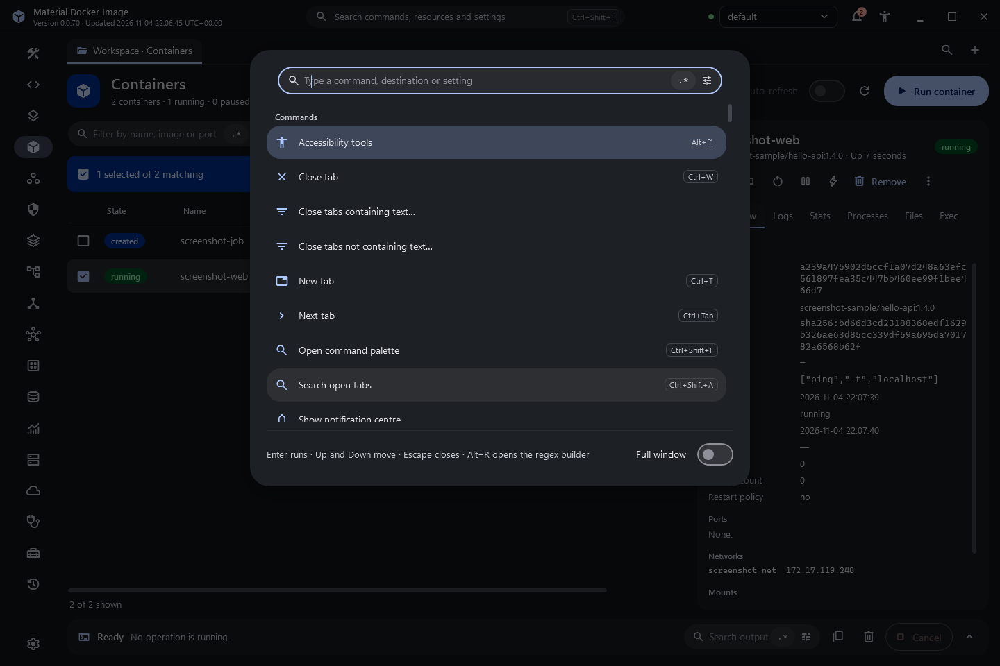</p>
<p>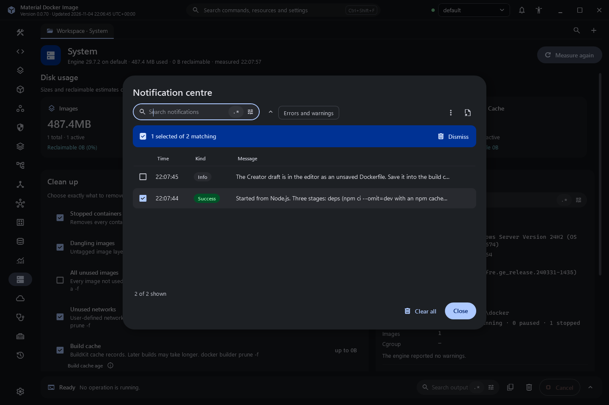</p>
<p>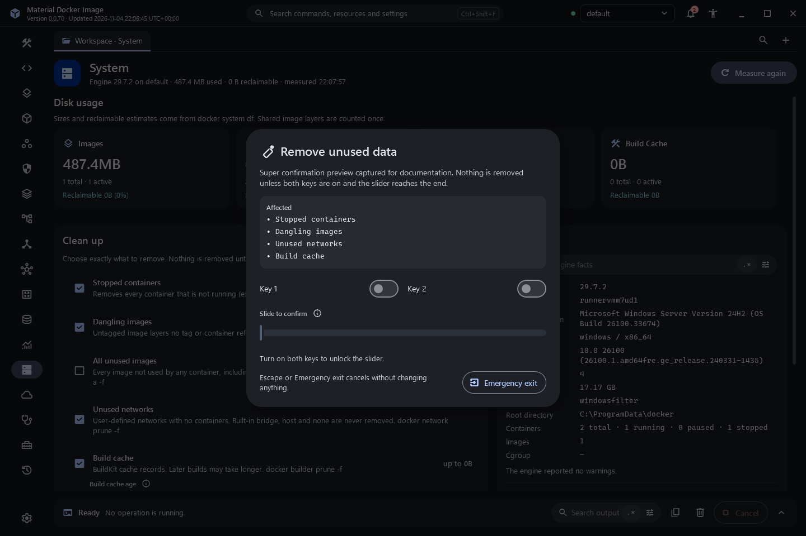</p>
<p>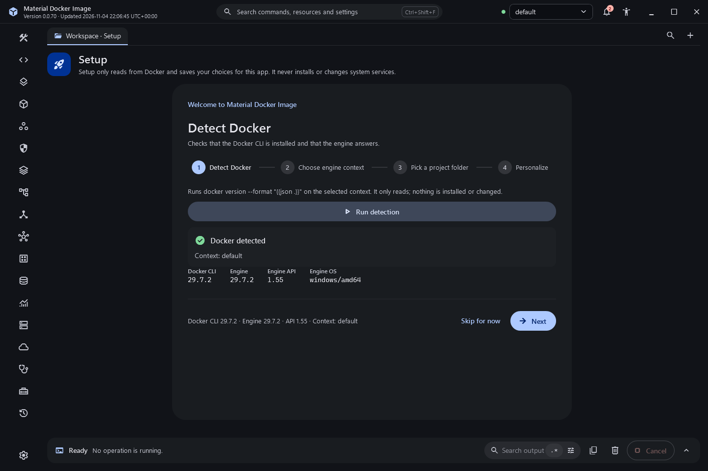</p></article>
<article id="doc-readme-md" class="article"><h3>Material Docker Image</h3><p class="source-label">Complete source: <a href="https://github.com/Ding-Ding-Projects/material-docker-image/blob/main/README.md">README.md</a></p><h3 id="doc-readme-md-material-docker-image">Material Docker Image</h3>
<p>A native Windows WPF workspace for Docker: build images, create Dockerfiles step by step, run and manage containers, operate Compose projects, watch live statistics, clean up safely and keep a local history of every change. The whole interface follows Material 3 in a frameless window.</p>
<p><a href="https://ding-ding-projects.github.io/material-docker-image/">Documentation</a> · <a href="https://github.com/Ding-Ding-Projects/material-docker-image/releases">Downloads</a> · <a href="#doc-docs-features-readme-md">User guides</a> · <a href="#doc-docs-features-capability-inventory-md">Capability inventory</a> · Design <span class="muted">(document unavailable)</span></p>
<p></p>
<h4 id="doc-readme-md-what-it-does">What it does</h4>
<p class="source-item">• <strong>Workspace</strong>: custom title bar with version and build time, engine context selector that never changes the global Docker context, navigation rail, workspace and utility tabs, a <code>Ctrl+Shift+F</code> command palette with live setting controls, toasts with a notification centre, accessibility tools, and an operation panel with the real output of the running command. Every one of the 100+ search and filter fields has its own anchored regular expression builder (<code>Alt+R</code>) with a token palette, plain-English explanation, live tester, captures, replace preview and a pattern library, guarded by a completeness test.</p>
<p class="source-item">• <strong>Build and Bake</strong>: context folder, Dockerfile editor, tags, target stage, platform chips, build arguments, labels, cache import and export, secret files and environment secrets (never read), SSH forwarding, named contexts, SBOM and provenance attestations, local load, push, OCI archive or exported files, BuildKit check, outline and targets modes, a live command preview, a step-by-step BuildKit timeline with cache hits and durations, a result card with digests, recent builds from Buildx history, and a Bake destination for <code>docker-bake.hcl</code> and Compose targets with overrides.</p>
<p class="source-item">• <strong>Dockerfile Creator</strong>: project detection like <code>docker init</code>, starters for Node.js, Python, .NET, Go, Java, Rust and static sites, stages and structured instruction cards for every modern Dockerfile feature (all <code>RUN --mount</code> types with package-manager cache presets, heredocs, <code>COPY --parents</code> and <code>--exclude</code>, <code>ADD</code> from URLs and Git with checksums, global and platform arguments, parser directives), a live editable source that syncs both ways while keeping your comments and formatting, a .dockerignore editor with a live context check, 40+ best-practice checks matching BuildKit check names, with automatic fixes, undo history and hand-off to Build.</p>
<p class="source-item">• <strong>Editor suggestions</strong>: IntelliSense-style suggestions in the Dockerfile and Compose editors (instructions, flags, mount options, stages, variables in scope, local images, build-context files, Compose keys), hover documentation, version-aware <code># syntax</code> upgrades, and interactive pickers for paths, colours, ports, durations, permissions, users, platforms and images (<code>Ctrl+Space</code>, <code>Ctrl+Shift+Space</code>).</p>
<p class="source-item">• <strong>Images and security</strong>: image detail tabs for layers with size bars, platforms and attestations from the registry manifest, Docker Scout vulnerabilities, SBOM packages and side-by-side compare, plus a Security destination that scans every local image.</p>
<p class="source-item">• <strong>Images and containers</strong>: inventory with usage, pull, import, load, tag, push, save, prune; a run editor covering command, ports, environment, mounts, networks, resources, restart and health, security and advanced options with an exact command preview; container lifecycle, logs with follow and search, statistics, processes, file changes and copy, one-shot exec and a terminal window.</p>
<p class="source-item">• <strong>Compose, storage and canvas</strong>: Compose projects with profiles, services, a path-bound source editor, watch, top, events, copy, exec, environment files and dry run; volumes and networks with create, connect, inspect, prune, backup, restore and clone; a native Dockerfile stage graph and runtime topology.</p>
<p class="source-item">• <strong>Contexts and Swarm</strong>: engine context cards with live reachability, create, update, import and export without ever changing the global context, CLI plugins; Swarm init and join, services with task timelines, stacks, nodes, secrets and configs.</p>
<p class="source-item">• <strong>Minecraft servers</strong>: create Java or Bedrock servers on the itzg images with a six-step wizard, then manage console and RCON, players, properties, files, backups and world pre-generation.</p>
<p class="source-item">• <strong>Monitor and System</strong>: live CPU and memory charts, disk usage, engine information and category-by-category cleanup behind a two-key super confirmation.</p>
<p class="source-item">• <strong>Registry, Diagnostics and Tools</strong>: registry sign-in with the password on standard input only, Docker Hub search, Buildx builders, read-only checks with sanitized reports, a live events stream, a Base64 toolkit and the offline documentation.</p>
<p class="source-item">• <strong>Local history</strong>: an append-only history of settings, saved files, drafts and operations, kept in the application&#39;s own data folder, with diffs, restores, labels and export.</p>
<p class="source-item">• <strong>Appearance and motion</strong>: an appearance editor with presets, a colour picker in eight colour formats with contrast badges, per-role colour overrides, shape, density, fonts and effects, a floating per-element editor (<code>Ctrl+Shift+E</code>), and Material 3 motion for pages, tabs, dialogs, notifications and controls with Off, Reduced, Standard and Expressive levels.</p>
<p class="source-item">• <strong>Settings</strong>: English, Cantonese or bilingual copy on every page (about 3,400 phrases and templates) with funny levels and a personal wording file you can also drop anywhere on the window, accessibility, schedules for language and theme, setting locks, Focus, Low stimulation and Momentum modes, action sounds, engine, data and privacy, title-bar logo and display name. Each setting explains itself and says whether it is the default.</p>
<p class="source-item">• <strong>Records and updates</strong>: an in-app changelog built from the project history, exports as CSV, TSV, JSON, Markdown and HTML from every list, menu shortcuts taken from the commands themselves, and a background update check that stages an unsigned update only after you confirm.</p>
<p class="source-item">• <strong>Small windows</strong>: at the 960 x 720 minimum, lists keep their rows: the detail panel folds into a one-line summary with Show details, statistic tiles shrink to one line, and filter bars collapse.</p>
<p class="source-item">• <strong>Build companion</strong>: <code>MaterialDockerImageBuild.exe</code>, a single-file window that runs <code>build.bat</code> and <code>build-installer.bat</code> with live output, the real exit code and cancellation.</p>
<h4 id="doc-readme-md-screenshots">Screenshots</h4>
<p>All captures come from the built application on a Windows Server 2025 runner with a real Windows container engine, run 41846028015 at source <code>4a17021</code> (inventory <span class="muted">(document unavailable)</span>, earlier sets <span class="muted">(document unavailable)</span>). Light-theme and 960 x 720 minimum-size captures of every screen are in [<code>evidence/screenshots</code>](evidence/screenshots).</p>
<p>| | |</p>
<p>| --- | --- |</p>
<p>|  |  |</p>
<p>|  |  |</p>
<p>|  |  |</p>
<p>|  |  |</p>
<p>|  |  |</p>
<p>|  | 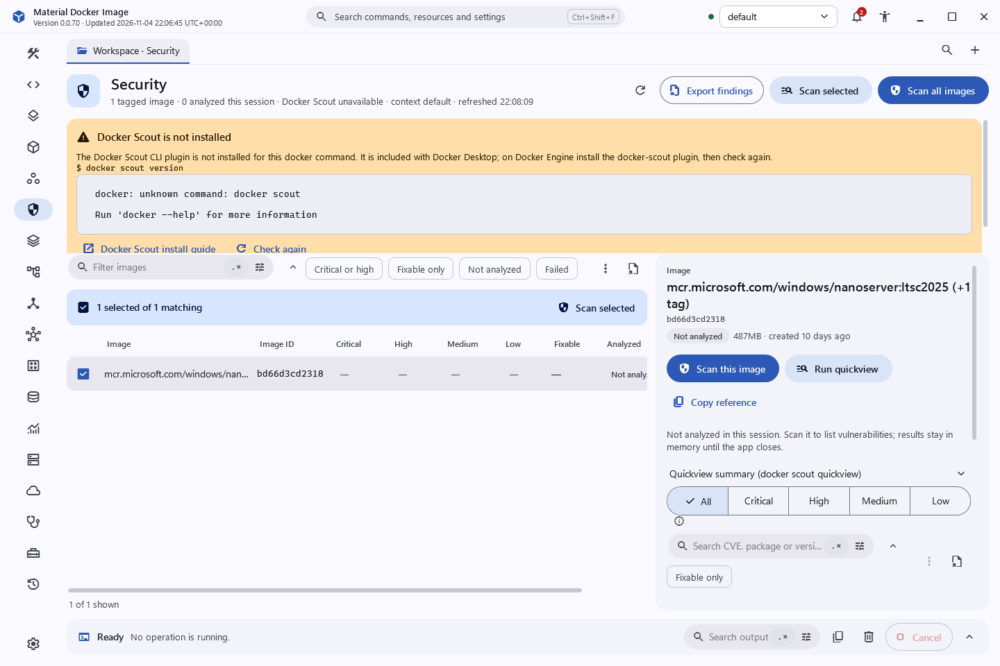 |</p>
<p>|  | 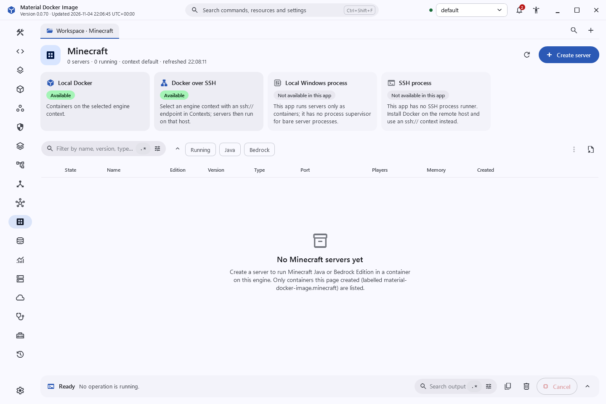 |</p>
<h4 id="doc-readme-md-build">Build</h4>
<p>Run <code>build.bat</code> to publish the self-contained application, <code>build.bat -Tests</code> for the engine, UI-state and documentation checks, <code>build.bat -DockerSmoke</code> for an explicitly mutating local-engine smoke test, and <code>build-installer.bat</code> for the unsigned Squirrel.Windows package. Docker operations need the Docker CLI and a reachable engine; editors, the Creator, history and settings work offline.</p>
<p><code>MaterialDockerImage.exe --capture &lt;folder&gt;</code> renders every destination, the command palette, the super confirmation and the notification centre to PNG files and exits. Add <code>--capture-theme Light</code>, <code>--capture-size 960x720</code>, <code>--capture-language Cantonese|Bilingual</code> or <code>--capture-scale 125|150|200</code>, and <code>--software-rendering</code> on machines without a GPU. Capture mode never writes your settings and never loads personal wording. The <code>Tests and screenshots</code> workflow runs the tests and these captures on every change.</p>
<h4 id="doc-readme-md-safety">Safety</h4>
<p>Commands use structured arguments without a host shell. The global Docker context and default Buildx builder are never changed. Registry passwords are passed on standard input and never stored or logged, and BuildKit secret files are never read. Removing data needs the two-key super confirmation; every operation reports its real exit status, and cancellation is never reported as success. Local history lives in the application data folder and never inside your projects.</p>
<h4 id="doc-readme-md-verification-state">Verification state</h4>
<p>The UI-state checks (2,562), core engine checks (23) and documentation checklist checks (24) pass through <code>build.bat -Tests</code> on Windows. The screenshots above show real engine data. The built application was also driven through UI Automation on a desktop host at 150 % scale: setup, stopping, starting, logs, exec and file changes of a labelled container, Compose up and down of a labelled project, the prune confirmation and Emergency exit, a settings history restore, the registry sign-in failure path, registry sign-in and sign-out against a local test registry, an interactive container terminal, the regular expression builder popover and a build from the companion, the authenticator, a support ticket, School mode with a PIN, a PIN lock through a lockout, the dish game and unlock, and an anchored regex filter, each confirmed against the engine or the stored files (receipt <span class="muted">(document unavailable)</span>, 36 steps, now including the element editor, all three ladder games, a PIN-plus-password lock through the keypad and its timed relock, the Locks manager, QR import from an image and a tab-group lock). A layout probe checked all 264 surfaces across three languages, three window sizes, light theme and 200 % scale with no cut and no overflowing text left (summary <span class="muted">(document unavailable)</span>). The terminal&#39;s default Windows Terminal path, the School mode Windows Hello prompt and pointer clicks on locked controls were not driven because they would appear on the visible desktop, a winning whack-a-mole round could not be driven because UI Automation presses arrive about two seconds late on a hidden desktop, and the complete required-feature inventory remains open; see the feature audit <span class="muted">(document unavailable)</span>, <a href="#doc-docs-features-capability-inventory-md">capability inventory</a> and <a href="#doc-handoff-md">handoff</a>.</p></article>
<article id="doc-roadmap-md" class="article"><h3>Roadmap</h3><p class="source-label">Complete source: <a href="https://github.com/Ding-Ding-Projects/material-docker-image/blob/main/ROADMAP.md">ROADMAP.md</a></p><h3 id="doc-roadmap-md-roadmap">Roadmap</h3>
<h4 id="doc-roadmap-md-material-3-workspace-rewrite-november-2026">Material 3 workspace rewrite (November 2026)</h4>
<p class="source-item">Completed: Design every window surface on a design canvas and record it in <code>design/workspace-redesign-2026-11</code>.</p>
<p class="source-item">Completed: Replace the window with a frameless Material 3 shell: title bar with provenance, rail, workspace and utility tabs, command palette, notifications, accessibility tools, operation panel.</p>
<p class="source-item">Completed: Rebuild every destination and add the Dockerfile Creator, Monitor, System, Registry, Tools and Activity destinations.</p>
<p class="source-item">Completed: Add search with a regular expression builder to every list, menu and viewer.</p>
<p class="source-item">Completed: Add append-only local history beside the application data with diff, restore, labels and export.</p>
<p class="source-item">Completed: Replace every screenshot with captures of the built application on Windows with a real engine (dark, light and minimum size).</p>
<p class="source-item">Pending: Exercise every destination interactively on a personal Windows machine and record receipts.</p>
<p class="source-item">Completed: Fix small-window truncation found in the 960 x 720 captures (title bar search, operation panel, stacked lists, Images tiles, segmented buttons).</p>
<p class="source-item">Completed: Add language and display-scale options to capture mode and stop loading personal wording in captures.</p>
<p class="source-item">Completed: Capture and review the full language x theme x 100-200% scale matrix with the new options (layout probe over 264 surfaces, clipping fixed, final run clean: evidence/layout-matrix-2026-11/summary.json)</p>
<p class="source-item">Completed: Accept a personal wording file dropped anywhere on the window with validation, celebration and outcome sounds (checks pass; hands-on verification pending).</p>
<p class="source-item">Completed: Record a source audit of the shared feature requirements in <code>evidence/uh-features-audit.md</code>.</p>
<p class="source-item">Completed: Localize page-specific copy in Cantonese and bilingual modes (built-in phrase list and sentence templates; running the built application in each mode on every destination is still to be recorded).</p>
<p class="source-item">Pending: Review capability inventory statuses for health checks, devices, GPUs and terminals with evidence.</p>
<p class="source-item">Completed: Add settings row locks, scheduled language and theme, attention-mode consumers (Focus, Low stimulation, Momentum), a documented action sound mapping and persisted collapsible filters (rule checks pass; hands-on verification pending)</p>
<p class="source-item">Pending: Drive the new lock, schedule, attention-mode, sound and collapse controls in the built window and record receipts</p>
<p class="source-item">Completed: Add lock policies (confirm only, PIN, authenticator app), a lock command on settings rows and major page buttons, the unlock ladder with persistent backoff and single-use recovery codes, and an Authenticator section in Tools with an in-process QR code (rule checks pass, including the RFC 6238 vectors; hands-on verification pending)</p>
<p class="source-item">Completed: Drive the lock wizard, the ladder dialog and the Authenticator section in the built window (receipt steps 18-25; codes matched an independent RFC 6238 calculation)</p>
<p class="source-item">Pending: Scan the lock QR code with a real phone authenticator app</p>
<p class="source-item">Completed: Add a general authenticator for arbitrary accounts: otpauth link and manual entry, live codes with countdown and next code, rename, reorder, delete, DPAPI-protected storage and encrypted backup (RFC 6238 vectors and rule checks pass; nothing driven in the built window)</p>
<p class="source-item">Completed: Add QR image-file and clipboard registration to the authenticator (ZXing.Net decoder, round trip checked; not driven in the built window)</p>
<p class="source-item">Completed: Add camera registration to the authenticator (live preview, sampled ZXing decode, honest permission, missing, busy and timeout messages; the rules are checked in code, but the camera path was not driven because it needs a real camera and the Windows permission prompt)</p>
<p class="source-item">Pending: Add grouping and a super-confirmed secrets export to the authenticator</p>
<p class="source-item">Completed: Add a per-element appearance editor: pick any element, edit colours, corner radius, font size and weight, padding and visibility with live preview, stable element identity, persistence, reset per element and all, an overrides list and lock awareness (rule checks pass; not driven in the built window)</p>
<p class="source-item">Pending: Bring per-element overrides into appearance presets, export and Undo, and cover the remaining property types (italic, underline, shadow, spacing, alignment)</p>
<p class="source-item">Completed: Add the dish, sums and whack-a-mole ladder rungs with single-use graded challenges, a three-per-hour budget and School mode starting at the sums, a shared renamable School mode with a hashed PIN or password, and the startup dim sum surprise from the public catalogue (rule checks pass; nothing driven in the built window, the live catalogue fetch not run inside the app)</p>
<p class="source-item">Completed: Drive the dish game, the School mode PIN and the live catalogue fetch in the built window (the dish round was broken and is fixed)</p>
<p class="source-item">Pending: Drive the sums and whack-a-mole rungs and the startup surprise toast in the built window</p>
<p class="source-item">Completed: Add a Windows Hello passkey choice for School mode (choice stored only; honest fallback) and hide the language, funny-level, personal wording and dim sum controls under it in settings, the palette, setup and the file drop (rules checked in code; not driven in the built window)</p>
<p class="source-item">Pending: Drive the School mode passkey choice and the hidden controls in the built window, and hide the scheduled language rule under the mode</p>
<p class="source-item">Completed: Add the password lock policy, the four combined policies with ordered steps and one shared attempt budget, unlock durations (this action only, 5 minutes, 1 hour, until the app closes) with persisted expiry, a lock command on every button, switch, option, drop-down, text field and slider with stable derived ids, a Locks manager in Settings and the local Support Tickets desk (rule checks pass and were seen failing first; nothing driven in the built window)</p>
<p class="source-item">Completed: Drive the PIN wizard, the unlock steps, the lockout wait and the Support Tickets screen in the built window</p>
<p class="source-item">Pending: Drive combined policies, the timed relock and the Locks manager in the built window, and confirm the folder the desk opens matches the path shown</p>
<p class="source-item">Completed: Add tab and tab group locks (pinned, open and rail regions), appearance value locks (every editor value, each colour role, presets and each property of a customized element), the disabled-click authentication prompt, locked labels in the palette, the tab search and the New tab catalog with an optional hide, bulk-close exclusion and the keypad PIN entry (rule checks pass and were seen failing first; the window code builds, but nothing was driven in the built window)</p>
<p class="source-item">Pending: Drive the tab and group locks, the appearance locks, the click-to-unlock prompt, the locked palette rows and the PIN keypad in the built window, and add a keypad to the PIN wizard</p>
<p class="source-item">Pending: Add other schedulable settings and the API and Home Assistant schedule sources</p>
<p class="source-item">Completed: Schedule density, accent colour, font size, motion and display name, add date ranges, an https source and a Home Assistant source, and give action sounds a volume and quiet hours (rule checks pass; nothing driven in the built window, no real server or audio device tried)</p>
<p class="source-item">Pending: Drive the schedule editor, both network sources (with a real https endpoint and a real Home Assistant), the volume slider and quiet hours in the built window and record receipts</p>
<p class="source-item">Completed: Add lock credential policies (PIN, password, authenticator and their combinations)</p>
<h4 id="doc-roadmap-md-delivered-and-bounded-verification">Delivered and bounded verification</h4>
<p class="source-item">Completed: Implement native WPF Build, Images, Containers, Compose, Canvas, Volumes, Networks, Diagnostics, Settings and Setup workspaces.</p>
<p class="source-item">Completed: Implement advanced Build destinations, labels, BuildKit cache rows and selected secret-file controls.</p>
<p class="source-item">Completed: Implement structured Run arguments, environment, ports, mounts, resource limits, restart choices and security controls.</p>
<p class="source-item">Completed: Implement native stage selection/editing, source navigation, zoom/pan/fit and inspected runtime relationship graphs.</p>
<p class="source-item">Completed: Pass 23 core checks and 51 UI-state/parser checks.</p>
<p class="source-item">Completed: Exercise a real native build/run at f370d66, including exact label and environment whitespace.</p>
<p class="source-item">Completed: Publish normal release v0.4.1 for f370d66 through successful run 39111325684.</p>
<h4 id="doc-roadmap-md-current-candidate-and-evidence">Current candidate and evidence</h4>
<p class="source-item">Completed: Verify normal release v0.5.1 at ad5d3ac, including the 3ce1ed7 restart fix, successful run 39112649034, exact tag source and five asset sizes/digests.</p>
<p class="source-item">Completed: Update the matching existing installation to 0.5.1.0, verify its executable against the published package and preserve settings.</p>
<p class="source-item">Completed: Exercise installed Docker detection, Setup Back/Next/Finish, persisted completion and productive Build visibility on the current host.</p>
<p class="source-item">Completed: Verify documentation deployment 39112649029, 12 articles, 109 neutral identifiers, three original capture bytes, 1440/320 layouts, interactive persistence and exact About homepage.</p>
<p class="source-item">Completed: Verify the local 0.5.0 build, genuine installer production and actual saved-workspace restart restoration from 3ce1ed7.</p>
<p class="source-item">Completed: Retain and inspect source-bound 0.5.0 Build and populated Canvas captures at normal 1440x960 and minimum 960x720 sizes.</p>
<p class="source-item">Completed: Extend English/dark/100% normal/minimum evidence to the full supported language, theme and display-scale matrix (same probe run; the published CI screenshots stay English at 100 %)</p>
<p class="source-item">Pending: Exercise OCI export, registry push, supported cache backends and secret-file builds beyond implemented controls and focused checks.</p>
<p class="source-item">Pending: Extend the verified current-host update/launch/setup proof to fresh install, automatic ready-banner behavior, cancellation and uninstall acceptance.</p>
<h4 id="doc-roadmap-md-extended-capabilities-and-complete-acceptance">Extended capabilities and complete acceptance</h4>
<p class="source-item">Completed: Implement and deploy the 123-entry feature checklist with category/status filters and separate visitor progress.</p>
<p class="source-item">Completed: Verify checklist keyboard disclosure, filter/reset behavior, preparation persistence and 12 width/language/theme combinations; retain bounded source-specific evidence.</p>
<p class="source-item">Completed: Reject source-reference verification metadata and escape rendered bindings, with an observed failing-then-passing regression and independent review.</p>
<p class="source-item">Completed: Declare a local browser icon and include its hash in the documentation manifest.</p>
<p class="source-item">Pending: Complete checklist capture promotion and the full cleanup receipt; isolated profile removal was rejected and the profile remains retained.</p>
<p class="source-item">Pending: Implement and verify container health-check configuration (<code>container-health-checks</code>). Implemented with focused checks and a real-engine argument receipt; built-application interaction still pending.</p>
<p class="source-item">Pending: Implement and verify container device mapping controls (<code>container-device-mappings</code>). Implemented with focused checks and a real-engine argument receipt; built-application interaction and a real host device still pending.</p>
<p class="source-item">Pending: Implement and verify container GPU access controls (<code>container-gpu-access</code>). Implemented with focused checks and a real-engine argument receipt; built-application interaction and a GPU-capable host still pending.</p>
<p class="source-item">Pending: Verify the application icon, title-bar logo picker and display-name rename interactively in the built window and the installed shortcut (<code>app-icon</code>, <code>logo-customization</code>, <code>display-name</code>); add logo crop, fit and background editing.</p>
<p class="source-item">Completed: Build the in-app changelog from git log at build time, with version grouping, regex search, date range and Markdown export (<code>changelog</code>; built-window interaction pending).</p>
<p class="source-item">Completed: Export or copy every table as CSV, TSV, JSON, Markdown or HTML with checked escaping (<code>exports</code>).</p>
<p class="source-item">Completed: Derive menu shortcut text from the command gesture and guard against hand-typed ones (<code>menu-shortcuts</code>).</p>
<p class="source-item">Completed: One shared info-icon component used on settings rows and the previously bare field labels (<code>info-icon-guidance</code>).</p>
<p class="source-item">Completed: Background update check against the published feed with an unsigned-build banner, a setting and a manual check (<code>auto-updates</code>).</p>
<p class="source-item">Pending: Exercise the changelog, exports, update banner and info icons in the built window; run the updater against a real published feed and an installed copy.</p>
<p class="source-item">Pending: Add the changelog calendar date picker with range presets, language-mode voice for entries, and the update deferral and progress settings.</p>
<p class="source-item">Pending: Complete all 109 required-feature acceptance rows without removing unfinished identifiers.</p>
<p class="source-item">Pending: Deliver portable documentation and dedicated build companions.</p>
<p>  - [x] Build companion window (<code>src/BuildCompanion</code>), single-file packaging script, release asset and logic checks (see <code>docs/features/build-companion.md</code>).</p>
<p>  - [ ] Interactive verification of the companion window on a desktop, and a real build driven from it.</p>
<p>  - [x] Portable documentation package script, offline renderer, release asset and readback wiring (<code>build/package-docs.ps1</code>); hosted-run and opened-archive verification pending.</p>
<p>  - [ ] Verify the hosted release carries <code>MaterialDockerImageDocs.zip</code> and that it opens from a file location.</p>
<p class="source-item">Pending: Establish complete RegexBuddy functional parity and independent workflow evidence.</p>
<p>  - [ ] Portable documentation package.</p>
<p class="source-item">Pending: Establish complete RegexBuddy functional parity and independent workflow evidence. Matrix in <code>docs/features/regex-parity.md</code>: 73 implemented, 2 partial (version remarks of the flavor comparison; scripting and automation beyond the command line), 8 unavailable (debugger trace and debugging from the cursor, step counts, possessive quantifiers, recursion, class intersection, branch reset and replacement conditionals, all impossible on the .NET engine). Everything .NET allows is now built: editing through the explanation tree, editable code templates, a saved panel layout and preferences, a documented keyboard map (F6, Ctrl+digits, Alt+Home), folder-search date windows, context lines, saved result lists and open-in-editor, action files and <code>--regex-pattern</code> / <code>--regex-action</code> start-up arguments, builder buttons on the library, my-patterns and Unicode block filters, engine version pickers for Python and JavaScript, and Cantonese for the help pages, tips, comparison verdicts, scope and hex reports. Partial: flavor comparison remarks, <code>grep -E</code> conversion, folder-search attribute and encoding filters, external tool return and automation, and a few English-only tables. All of it has logic checks that were watched failing; none of it was driven in a window, and HuiShots of it are pending.</p>
<p class="source-item">Pending: Complete localization, accessibility, appearance and onboarding acceptance across supported surfaces.</p>
<p class="source-item">Pending: Address health-check configuration, devices, GPU controls and interactive terminals.</p>
<p class="source-item">Pending: Verify remote engines, alternative architectures and supported workflow combinations.</p>
<p class="source-item">Completed: Add the home page download panel, link-preview metadata and preview image, front provenance and site-wide search with a bounded regex builder (<code>docs/features/documentation-site.md</code>).</p>
<p class="source-item">Pending: Complete interactive documentation/wiki content, route acceptance and deployed-homepage evidence (deployed verification of the download panel, previews and search is part of this).</p></article>
<article id="doc-handoff-md" class="article"><h3>Implementation handoff</h3><p class="source-label">Complete source: <a href="https://github.com/Ding-Ding-Projects/material-docker-image/blob/main/HANDOFF.md">HANDOFF.md</a></p><h3 id="doc-handoff-md-implementation-handoff">Implementation handoff</h3>
<h4 id="doc-handoff-md-objective">Objective</h4>
<p>A native Windows WPF workspace for Docker with a complete Material 3 interface. The November 2026 rewrite replaced every window surface, added the Dockerfile Creator, live monitoring, cleanup, registry, diagnostics, tools, settings and local history destinations, and replaced every screenshot with captures of the built application.</p>
<h4 id="doc-handoff-md-structure">Structure</h4>
<p class="source-item">• <code>src/MaterialDockerImage/Themes/Material.xaml</code>: Material 3 roles and control templates (buttons, fields, combo boxes, switches, chips, segmented buttons, rail and tab items, lists, menus, tooltips, scroll bars, sliders, expanders).</p>
<p class="source-item">• <code>Shell/</code>: overlay host (in-window dialogs, super confirmation), operation panel, command palette.</p>
<p class="source-item">• <code>Services/</code>: <code>AppHost</code> (engine access, foreground operations with real results, background reads, navigation and hand-offs), theme, language and funny levels with the personal wording overlay, notifications, command registry, narration, local history (LibGit2Sharp).</p>
<p class="source-item">• <code>UI/</code>: shared builders (<code>Ui</code>), <code>DataTable&lt;T&gt;</code> (search with regex builder, filters, multi-select, bulk bar, context menus with shortcuts, export), <code>SearchFilter</code>, structured input validation, Dockerfile graph, the Creator model, parser, starters, lint and undo history, the Base64 toolkit, icons generated from the Material Symbols codepoints.</p>
<p class="source-item">• <code>Pages/</code>: one class per destination with helpers in a folder per destination.</p>
<p class="source-item">• <code>Assets/Fonts/</code>: Material Symbols Rounded subset to the icons in use (outline and filled, Apache 2.0).</p>
<p class="source-item">• <code>design/workspace-redesign-2026-11/</code>: the design canvas for every screen, with its handoff and review notes.</p>
<h4 id="doc-handoff-md-app-identity">App identity</h4>
<p class="source-item">• <code>UI/AppIdentity.cs</code> holds the framework-free display-name, symbol and custom-logo rules; <code>Shell/AppLogo.cs</code> decodes and shows the logo; <code>Pages/Settings/LogoPicker.cs</code> is the Appearance row. The multi-size icon lives in <code>Assets/Icon/</code> and is regenerated by <code>build/make-icon.py</code>. Interactive verification in the built window is pending.</p>
<h4 id="doc-handoff-md-documentation-site-delivery">Documentation site delivery</h4>
<p class="source-item">• <code>website/download-client.js</code> (latest-release panel), <code>website/search-client.js</code> (site-wide search and bounded regex builder), <code>website/provenance.json</code> (source version and commit-derived update time, set by <code>node website/render.mjs --stamp</code>), <code>website/social-preview.png</code> (made by <code>scripts/make-social-preview.mjs</code> from a real build capture) and <code>build/package-docs.ps1</code> (offline archive, run by <code>build-installer.bat</code>; the release workflow attaches and reads back <code>MaterialDockerImageDocs.zip</code> and <code>docs.json</code>). See <code>docs/features/documentation-site.md</code>.</p>
<p class="source-item">• Checked by <code>scripts/test-feature-checklist.mjs</code> and by one headless Microsoft Edge run on the generated page (live release lookup, plain and regex search, validation, Cantonese messages). Not yet verified: the deployed site, how sharing platforms render the preview, the first release that carries the documentation archive, and the archive opened from a file location in a browser.</p>
<h4 id="doc-handoff-md-verification">Verification</h4>
<p class="source-item">• <code>build.bat -Tests</code> on Windows: 23 core checks, 691 UI-state checks (structured inputs, Dockerfile graph, local history including restore of a restore and path containment, personal wording bounds, language modes and funny levels, Cantonese and bilingual coverage of 50 sampled page strings and sentence templates, Base64 variants and strict offsets, every Creator starter round trip, exec-form escaping, lint findings and an automatic fix) and 13 documentation checklist checks.</p>
<p class="source-item">• Two regressions were observed failing before their repairs: history revisions made in the same second listed out of order (restore returned the wrong revision), and the documentation site was stale after new articles.</p>
<p class="source-item">• <code>Tests and screenshots</code> workflow run 41698541353 at source <code>afc72c0df9be118fdb6d07c238a4ff3b458edc0d</code>: the published application rendered all 18 surfaces in dark and light themes at 1440 x 960 and in dark at 960 x 720, on Windows Server 2025 with a real Windows container engine and labelled resources that were removed afterwards. The 54 captures are in <code>evidence/screenshots/</code> with hashes in <code>evidence/inventory.json</code>. They were reviewed; layout problems they showed (stretched captures, a 320 px dialog limit, squeezed inspectors, wrapped chips, rail overlap, a tall empty output panel) were fixed before this run.</p>
<p class="source-item">• Capture mode only renders; interactive behaviour of each workflow on a personal machine (clicking through builds, runs, removals, prunes, sign-in, history restores) has not been exercised in this rewrite. Earlier native workflow evidence (source f370d66 and release v0.5.1) belongs to the previous interface and is not relabelled.</p>
<h4 id="doc-handoff-md-records-exports-shortcuts-info-icons-and-updates">Records, exports, shortcuts, info icons and updates</h4>
<p class="source-item">• <code>build/make-changelog.ps1</code> writes <code>src/MaterialDockerImage/Assets/changelog.json</code> from git log (deterministic, merge commits omitted, grouped under the first containing <code>vX.Y.Z</code> tag, the rest as unreleased). <code>build/publish.ps1</code> runs it before every build; the file is git-ignored and embedded when present. <code>UI/ChangelogModel.cs</code> parses and filters it; <code>Pages/Tools/ChangelogView.cs</code> is the viewer (regex search, typed dates, copy and Markdown export, commit links behind a confirmation).</p>
<p class="source-item">• <code>UI/TableExport.cs</code> serialises every <code>DataTable</code> export and copy-as (CSV, TSV, JSON schema 1, Markdown, HTML).</p>
<p class="source-item">• <code>Ui.CommandMenuItem</code> derives shortcut text from <code>AppCommand.Gesture</code>; <code>tests/UiState/RecordsChecks.cs</code> scans the source and fails on a hand-typed shortcut that is not a declared list-local key.</p>
<p class="source-item">• <code>Ui.Info</code> is the one info-icon component; <code>SettingRows</code> falls back to <code>UI/InfoGuidance.cs</code> text for rows without hand-written guidance.</p>
<p class="source-item">• <code>UI/UpdateFeed.cs</code> (version comparison, RELEASES parsing, decision) is framework-free and checked; <code>Services/UpdateService.cs</code> fetches the feed and runs Update.exe only for an installed copy; <code>Shell/UpdateBanner.cs</code> shows the unsigned-build banner and restarts only after confirmation. Nothing here has been run against a published feed or an installed copy.</p>
<p class="source-item">• Verification: <code>build.bat -Tests</code> passes (UI-state checks including the new ones, each logic piece seen failing first by sabotage); <code>build.bat -Version 0.0.1</code> compiles. Nothing was driven in the built window and no capture was taken.</p>
<h4 id="doc-handoff-md-known-limits">Known limits</h4>
<p class="source-item">• Language modes cover the shell and the copy of every destination page (about 3,200 Cantonese phrases and sentence templates). Docker CLI output, engine data, log lines and some long explanations assembled from several fragments are shown as produced and stay English in every mode.</p>
<p class="source-item">• Density has little visible effect and the external editor setting is used by Build only. Momentum shows a session streak chip.</p>
<p class="source-item">• Settings safety (docs/features/settings-safety.md): settings rows and major page buttons can be locked with confirm-only, PIN or authenticator-app policies (credentials in <code>locks.json</code>, not settings.json), unlocked through the ladder (confirm, credential, persistent exponential wait, single-use recovery codes), and Tools has an Authenticator section with an in-process QR code. Seven settings (language, theme, density, accent colour, font size, motion, display name) can be scheduled by time, weekday and optional date range, with a local JSON file, an https address or a Home Assistant entity as value source. Action sounds have a volume and quiet hours. Filter bars and statistic strips collapse and persist.</p>
<p class="source-item">• Built and driven in the window (receipt, 34 steps): PIN, password, authenticator and combined lock policies with unlock durations and a timed relock, locks on any control, tab, tab-group and appearance-value locks, the Locks manager, the PIN keypad, the dish, sums and whack-a-mole ladder rungs, Support Tickets, School mode with a PIN, the per-element appearance editor, the general authenticator with QR import from an image. Built with logic checks only: the School mode Windows Hello choice, pointer clicks on locked controls and clipboard QR import (all need the visible desktop or the host clipboard). Not built: camera QR capture. The https and Home Assistant schedule sources have never talked to a real server; DPAPI token storage and reduced-volume playback have not been tried on a real profile and audio device.</p>
<p class="source-item">• Regex builder (docs/features/regex-parity.md: 73 of 83 topics implemented, 2 partial, 8 unavailable because .NET cannot do them): plain-language blocks, rare .NET constructs, split preview, expected-outcome test cases, backtracking diagnostics, conversions (C#, PowerShell, JSON, grep -E and -P, ripgrep, Select-String, JavaScript, Python, Java, Go, PHP, Perl, Ruby, PowerShell script), library import/export, eight flags, folder search with dry-run replacement, confirmed apply and undo snapshots (<code>RegexBuilderGrep.cs</code>), match navigation, replacement explanation, tree export, parameters, a seven-engine flavor table, remembered experiments, POSIX class conversion, a Unicode block picker, style tips, per-token help, line and page scopes, a hex view, file load and save, pattern comparison and saved pattern descriptions. The last wave adds editing through the explanation tree (<code>RegexBuilderTreeEdit.cs</code>), editable code templates (<code>RegexBuilderTemplates.cs</code>, <code>regex-templates.json</code>), a panel layout, preferences and keyboard map (<code>RegexBuilderPreferences.cs</code>, <code>regex-preferences.json</code>, loaded in <code>App.xaml.cs</code>), folder-search date windows, context lines, saved result lists and open-in-editor (<code>RegexBuilderGrepResults.cs</code>), action files and the <code>--regex-pattern</code> / <code>--regex-action</code> start-up arguments (<code>RegexBuilderActions.cs</code>, <code>CommandPalette.Open</code>), builder buttons on the library, my-patterns and Unicode block filters (<code>SearchFilter</code> reuse, <code>SearchBuilderPopover.Finish.cs</code> keeps the second popup open while a nested builder is open), engine version pickers (<code>RegexBuilderFlavorVersions.cs</code>) and Cantonese for help pages, tips, verdicts and reports (<code>LocStrings.RegexFinish.cs</code>, <code>RegexBuilderText.cs</code>). Logic checks: <code>tests/UiState/RegexFinish*Checks.cs</code>, each watched failing under a deliberate break. None of the new sections or dialogs was driven in a window, the stacked nested popup in particular. The popover was opened from the Containers search in the built 0.99.25 window on a hidden desktop and rendered its flags, tabs and tools; the individual tool sections were not driven. Full RegexBuddy parity remains open; the eight unavailable topics (debugger trace, step counts, possessive quantifiers, recursion, class intersection, branch reset, replacement conditionals) are impossible on the .NET engine.</p>
<p class="source-item">• Health checks, device mappings and GPU access are complete in the run editor and the Containers inspector, with focused checks and a real-engine argument receipt (evidence/container-controls-2026-11.json); they were not driven in the built application and no physical GPU was tried. Interactive terminals open in a separate console window; the classic console option (Settings › Engine) was exercised end to end on a hidden desktop.</p>
<p class="source-item">• Layout matrix: <code>--capture-probe</code> checked 264 surfaces (three languages at 1440, 1200 and 960 px, light theme, 200 % scale) and the clipping it found was fixed; the final run (main 5c048f4) reports no cut and no overflow, after the probe was changed to ask WPF for each text width at the real DPI and tab strips stopped squeezing labels (evidence/layout-matrix-2026-11/summary.json). The CI screenshot run does not use the probe yet.</p>
<h4 id="doc-handoff-md-next-actions">Next actions</h4>
<p>Exercise every destination interactively on a Windows machine with Docker Desktop, record receipts, update the capability inventory rows with that evidence, and extend localization to page copy.</p>
<h4 id="doc-handoff-md-advanced-v2-november-2026">Advanced v2 (November 2026)</h4>
<p>The second pass added Build v2 with a BuildKit timeline and Bake, image detail tabs and a Security destination (Docker Scout), engine contexts and Swarm, volume backup, restore and clone, more Compose tools, Dockerfile Creator v2 with an editable two-way source, editor suggestions with interactive value pickers, an advanced regular expression builder on all search fields, a motion system and appearance editor, and a Minecraft server manager.</p>
<p class="source-item">• Verification: 676 UI-state checks (including a search surface catalogue guard over 107 surfaces), 23 core checks and 13 documentation checks. <code>Tests and screenshots</code> run 41718216967 at source <code>40fa2560a0d05536d4b5aafdb8aee5acf6a99c3e</code> rendered 24 surfaces in dark and light at 1440 x 960 and dark at 960 x 720 (72 captures in <code>evidence/screenshots/</code>), including the Creator with Suggestions open. The review found and fixed light-theme captures rendering dark and a squeezed Creator source editor before this run.</p>
<p class="source-item">• Not yet exercised interactively on Windows: popups and pickers (placement, focus), the regex builder popover, animations, Docker Scout analysis (the runner has no Scout plugin), Swarm with a real swarm, Minecraft servers against the itzg images, and Bake against a real bake file.</p>
<p class="source-item">• The Dockerfile Creator gap analysis is in <code>docs/research/dockerfile-creator-gap-analysis.md</code>.</p>
<h4 id="doc-handoff-md-polish-pass-4-november-2026">Polish pass (4 November 2026)</h4>
<p class="source-item">• Small-window layout fixes found in the 960 x 720 captures: the title bar search shows a complete short label instead of a truncated one, the idle operation panel no longer reserves an empty progress bar, stacked list and inspector layouts keep at least 240 px for the list, the Images statistic tiles fold away on short windows (the subtitle carries the same counts), and segmented buttons size to their widest label so a selected label with its check mark is never cut.</p>
<p class="source-item">• Capture mode accepts <code>--capture-language English|Cantonese|Bilingual</code> and <code>--capture-scale 125|150|200</code> (the window keeps its size in device-independent pixels and renders at the matching DPI, so a 1440 x 960 capture at 150 % is 2160 x 1440 pixels) so the language and display-scale matrix can be captured from the built application. Capture mode never loads imported personal wording.</p>
<p class="source-item">• A personal wording <code>.json</code> file can be dropped anywhere on the window (<code>Shell/VocabularyDrop.cs</code>, rules in <code>UI/VocabularyDropRules.cs</code>). It is validated with the same rules as the Settings upload; a valid file is applied and saved at once and a full-window headline holds for about three seconds (a short fade when motion is reduced, announced through a polite live region); an invalid file is refused, changes nothing and plays the default beep. A valid drop plays the Windows tada sound. Both sounds follow the action sounds setting and low-stimulation mode. Settings › Language remains the keyboard route and clears the wording.</p>
<p class="source-item">• <code>build/test.ps1</code> and <code>build/publish.ps1</code> no longer stop when the SDK writes to standard error (for example the first-run notice of a freshly extracted SDK on Windows PowerShell 5.1); native commands are judged by exit code.</p>
<p class="source-item">• Releases are created without the Latest badge; only a run from <code>main</code> whose commit is still the tip of <code>main</code> marks its release Latest, so slower branch runs no longer take the badge.</p>
<p class="source-item">• <code>evidence/uh-features-audit.md</code> is a source-only audit of the shared feature requirements against this tree: 27 delivered, 43 partial, 25 missing, 20 not applicable, with a prioritised backlog. It is not runtime evidence.</p>
<p class="source-item">• Verification: <code>build.bat -Tests</code> passed 23 core, 681 UI-state and 13 checklist checks. The new headline check was observed failing with the rule broken and passing after restoring it. The drop, celebration and sounds have not yet been exercised by hand in the built application.</p>
<p class="source-item">• Follow-up after inspecting local 960 x 720 captures of the built application: segmented buttons keep their original fill behaviour and the Monitor interval and sampling groups size to their labels; Containers and Minecraft queue a refresh that arrives while one is running (for example after an engine context switch) instead of dropping it, and capture mode waits for such a queued refresh; stacked inspectors take one third of the height with a 150 px floor. Remaining: at 960 x 720 with a row selected, Images shows about one and a half list rows.</p>
<p class="source-item">• The built application (0.99.2) was driven on a hidden desktop through UI Automation on a host at 150 % display scale with Docker Desktop: Setup (Next, Skip for now) and the Containers destination listed 25 containers from the desktop-linux context. Icon glyphs appear as unnamed text elements in the accessibility tree.</p>
<p class="source-item">• Minimum-size layout from the design proposal in <code>design/polish-2026-11/ImagesCompact.dc.html</code>: on a short window the stacked detail of Images, Containers, Security and Swarm services folds into a one-line summary of the selected row with Show details; Images and Security statistic tiles take one line each; Prune dangling sits in the filter row (<code>DataTable.ToolbarAction</code>). At 960 x 720 Images and Containers now show four list rows and Security two (previously one to two). Swarm services was changed the same way but was not captured with a swarm.</p>
<p class="source-item">• Language fixes found in Cantonese captures of the built application: the operation panel and dialog host are created after the saved language is applied (they were English for every saved language); table selection and row-count lines use translated templates; templates with little fixed text only fill their placeholders with single tokens, so &quot;{0} of {1}&quot; no longer rewrites ordinary sentences such as the Appearance preview description. Capture mode sets its language and theme in memory only and never writes <code>settings.json</code> (it previously saved on every engine context switch and on close). UI-state checks: 694, including both new guards observed failing before their fixes.</p>
<h4 id="doc-handoff-md-build-companion-november-2026">Build companion (November 2026)</h4>
<p><code>src/BuildCompanion</code> is a separate WPF window that runs the root <code>build.bat</code> and <code>build-installer.bat</code> with a validated <code>-Version</code>, streams their output, shows phase, elapsed time and the real exit code, and can cancel the process tree. <code>build/publish-companion.ps1</code> publishes it as <code>out/companion/MaterialDockerImageBuild.exe</code> with a receipt, <code>build-installer.bat</code> calls it, and the release workflow uploads and verifies the executable and <code>companion.json</code>. Logic checks run in <code>tests/UiState</code> (747 checks in total). The window itself has not been opened or driven interactively. Details: <code>docs/features/build-companion.md</code>.</p>
<p class="source-item">• Build companion merged from its branch and exercised on a hidden desktop through UI Automation: the Build action ran the real <code>build.bat</code> and reported Succeeded, exit code 0, 24 seconds, with live output. Fixes from that run: the dependency readiness line no longer reads as installer packaging, setup rows announce &quot;path: status&quot; to screen readers, the actions sit above the setup check so they are visible at the default size, and <code>--software-rendering</code> lets capture tools read the window. Not yet exercised: Build and run, Build installer, Cancel and Copy log from the window.</p>
<p class="source-item">• Merged the container controls branch (health-check start interval, device cgroup rules, GPU capabilities, shared validation, and inspector sections for health, devices and GPU requests, with an engine receipt in <code>evidence/container-controls-2026-11.json</code>) and the application identity branch (multi-size icon for window, executable and setup, title-bar logo choice, display-name validation and reset). Checks on main: 23 core, 827 UI-state, 13 checklist.</p>
<p class="source-item">• Interactive receipt <code>evidence/interactive-2026-11/receipt.json</code>: on a hidden desktop through UI Automation, Containers stopped and started a labelled container with the engine, the panel and the inspector agreeing (Stop completed in 1.0 s, exit 0). Container confirmations now use real singular and plural forms with Cantonese, and translation templates prefer the one with the most fixed text. Not exercised yet: logs, exec, files, compose, prune, history restore, registry sign-in.</p>
<p class="source-item">• Screenshots replaced with the 72 captures of workflow run 41846028015 at <code>4a17021</code> (dark and light at 1440 x 960, dark at 960 x 720), reviewed before promotion. That review found the Security page without Docker Scout showing no list rows at the minimum size and the empty Compose page offering Open Compose file four times; both were fixed before this run. Earlier sets are listed in <code>evidence/screenshots-archive.md</code>.</p></article>
<article id="doc-wiki-home-md" class="article"><h3>Material Docker Image wiki</h3><p class="source-label">Complete source: <a href="https://github.com/Ding-Ding-Projects/material-docker-image/blob/main/wiki/Home.md">wiki/Home.md</a></p><h3 id="doc-wiki-home-md-material-docker-image-wiki">Material Docker Image wiki</h3>
<p>This source wiki is bundled with the documentation website. It documents the native Windows application and remains separate from evidence of runtime behavior.</p>
<p class="source-item">• <a href="#doc-docs-features-build-and-run-md">Build and run</a></p>
<p class="source-item">• <a href="#doc-docs-features-advanced-build-md">Advanced builds</a></p>
<p class="source-item">• <a href="#doc-docs-features-container-configuration-md">Container configuration</a></p>
<p class="source-item">• <a href="#doc-docs-features-canvas-md">Canvas workflows</a></p>
<p class="source-item">• <a href="#doc-docs-features-resources-md">Resources</a></p>
<p class="source-item">• <a href="#doc-docs-features-diagnostics-md">Diagnostics and safety</a></p>
<p class="source-item">• <a href="#doc-docs-features-capability-inventory-md">Capability inventory</a></p>
<p class="source-item">• <a href="#doc-docs-features-feature-checklist-md">Feature completion checklist</a></p>
<p>The hosted wiki has not been initialized through the available command-line route. Source wiki content is included directly in the documentation deployment; no external wiki link substitutes for an article.</p></article></section>
<section id="wiki" class="panel"><h2 data-en="Wiki and verification status" data-zh="百科與驗證狀態">Wiki and verification status</h2><p data-en="The embedded project overview, roadmap and handoff above form the available local reference corpus. No separate hosted wiki content has been verified for this new project." data-zh="以上專案總覽、路線圖同交接內容構成現有本機參考資料。新專案嘅獨立託管百科內容尚未驗證。">The embedded project overview, roadmap and handoff above form the available local reference corpus. No separate hosted wiki content has been verified for this new project.</p><p data-en="Build and release results, installation, canvas interactions and accessibility remain separate evidence. A design or successful command exit does not establish all of them." data-zh="建置、發行、安裝、畫布操作同無障礙功能需要各自證據。設計或指令成功退出唔代表全部已驗證。">Build and release results, installation, canvas interactions and accessibility remain separate evidence. A design or successful command exit does not establish all of them.</p><p><a href="content-manifest.json">Embedded source inventory and hashes</a></p></section></main><footer>Material Docker Image · Local assets, no analytics · <a href="#main">Back to top / 返回頂部</a></footer>
<script>
'use strict';const $=id=>document.getElementById(id);let state={language:'en',theme:'light',checks:{}};try{const v=JSON.parse(localStorage.getItem('mdi-guide-v1')||'null');if(v&&typeof v==='object'){if(['en','zh','both'].includes(v.language))state.language=v.language;if(['light','dark'].includes(v.theme))state.theme=v.theme;if(v.checks&&typeof v.checks==='object')state.checks=v.checks;}}catch{}function save(){try{localStorage.setItem('mdi-guide-v1',JSON.stringify(state));$('storage-status').textContent=state.language==='zh'?'已儲存喺此瀏覽器。':'Saved in this browser.';}catch{$('storage-status').textContent='Storage unavailable; progress lasts for this visit only. / 無法儲存，進度只保留到本次瀏覽結束。';}}function text(en,zh){return state.language==='zh'?zh:state.language==='both'?en+' / '+zh:en;}const steps={build:[['Choose the context','選擇內容資料夾','Open a trusted local folder and select its Dockerfile. Review instructions before execution.','開啟可信本機資料夾，再揀 Dockerfile。執行前先檢查指令。'],['Review the configuration','檢查設定','Choose the engine, image tag, target stage and supported platform. Keep secrets out of ordinary build arguments.','揀引擎、標籤、目標階段同支援平台。機密資料唔好放入一般建置參數。'],['Build and watch the output','建置並查看輸出','Start in the native application. Inspect actual step output and the final exit result.','喺原生程式開始建置。檢查實際步驟輸出同退出結果。'],['Inspect the image','檢查映像','Refresh images and inspect the exact result. A successful build does not prove a healthy service.','重新整理映像，檢查實際結果。建置成功唔代表服務健康。']],run:[['Select an exact image','選擇確切映像','Refresh the engine inventory and inspect the selected image before running it.','重新整理引擎清單，執行前檢查所選映像。'],['Choose ports and mounts','選擇連接埠同掛載','Review host exposure and writable paths. Configure only the ports and storage needed.','檢查主機開放範圍同可寫路徑，只設定需要嘅連接埠同儲存。'],['Run deliberately','確認後執行','Submit the reviewed configuration in the native application and wait for the actual result.','喺原生程式提交已檢查設定，等候實際結果。'],['Check state and logs','檢查狀態同記錄','Inspect health and logs. Refresh after cancellation or external changes before retrying.','檢查健康狀態同記錄。取消或外部改動後，要重新整理先再試。']],canvas:[['Open the stage view','開啟階段檢視','The graph explains parsed FROM and COPY relationships. It is not a record of execution.','圖表解釋已解析嘅 FROM 同 COPY 關係，唔係執行記錄。'],['Navigate and select','移動並選擇','Pan, zoom and select a node in the native canvas to inspect its stage or resource details.','喺原生畫布移動、縮放同揀節點，檢查階段或資源詳情。'],['Preserve source semantics','保留來源意思','Return to source for syntax the parser cannot safely round-trip. Never discard unsupported instructions.','解析器未能安全轉換嘅語法要返來源編輯，唔可以刪走未支援指令。'],['Refresh runtime relationships','重新整理執行關係','Container and network relationships reflect the last inventory snapshot and can become stale.','容器同網絡關係只反映上次讀取狀態，可能已經過時。']]};let task='build',step=0;function drawStep(){const a=steps[task][step];$('step-count').textContent=text('Step '+(step+1)+' of 4','第 '+(step+1)+' 步，共 4 步');$('step-title').textContent=text(a[0],a[1]);$('step-body').textContent=text(a[2],a[3]);$('step-bar').style.width=((step+1)*25)+'%';$('previous').disabled=step===0;$('next').disabled=step===3;$('step-graph').hidden=task!=='canvas';$('related').href=task==='canvas'?'#doc-docs-features-canvas-md':'#doc-docs-features-build-and-run-md';}function language(){document.documentElement.lang=state.language==='zh'?'zh-HK':'en';document.querySelectorAll('[data-en]').forEach(el=>{el.textContent=text(el.dataset.en,el.dataset.zh);});drawStep();example();if(window.MDISearch&&MDISearch.refresh)MDISearch.refresh();}document.querySelectorAll('[data-task]').forEach(b=>b.addEventListener('click',()=>{task=b.dataset.task;step=0;document.querySelectorAll('[data-task]').forEach(x=>x.setAttribute('aria-pressed',String(x===b)));drawStep();}));$('previous').onclick=()=>{step=Math.max(0,step-1);drawStep();};$('next').onclick=()=>{step=Math.min(3,step+1);drawStep();};$('language').value=state.language;$('theme').value=state.theme;document.documentElement.dataset.theme=state.theme;$('language').onchange=()=>{state.language=$('language').value;language();save();};$('theme').onchange=()=>{state.theme=$('theme').value;document.documentElement.dataset.theme=state.theme;save();};document.querySelectorAll('.check input').forEach(c=>{c.checked=state.checks[c.id]===true;c.onchange=()=>{state.checks[c.id]=c.checked;save();};});$('reset').onclick=()=>{state.checks={};document.querySelectorAll('.check input').forEach(c=>c.checked=false);save();};function example(){const tag=$('tag').value;if(!/^[a-z0-9][a-z0-9._/-]*(?::[a-zA-Z0-9_.-]+)?$/.test(tag)||tag.length>100){$('command').textContent='';$('example-status').textContent=text('Enter a simple image tag without spaces or shell characters.','請輸入簡單映像標籤，唔好包含空格或命令殼層字元。');return;}$('example-status').textContent=text('Preview updated. No command was executed.','預覽已更新，冇執行任何指令。');$('command').textContent='docker build --tag '+tag+($('stage').value?' --target '+$('stage').value:'')+($('cache').value==='no'?' --no-cache':'')+' .';}['tag','stage','cache'].forEach(id=>$(id).addEventListener('input',example));language();
</script>
<script>
/* Read-only maintainer status. Visitor preparation state belongs to the guide. */
(() => {
  const category = document.getElementById('feature-category');
  const status = document.getElementById('feature-status');
  const rows = [...document.querySelectorAll('[data-feature-id]')];
  const translate = (en, zh) => {
    const language = document.getElementById('language').value;
    return language === 'zh' ? zh : language === 'both' ? en + ' / ' + zh : en;
  };
  function filterFeatures() {
    let visible = 0;
    for (const row of rows) {
      row.hidden = !((category.value === 'all' || row.dataset.category === category.value) && (status.value === 'all' || row.dataset.status === status.value));
      if (!row.hidden) visible++;
    }
    document.getElementById('feature-results').textContent = translate(`${visible} of ${rows.length} entries shown.`, `顯示 ${rows.length} 項中嘅 ${visible} 項。`);
    document.getElementById('feature-empty').hidden = visible !== 0;
  }
  category.addEventListener('change', filterFeatures);
  status.addEventListener('change', filterFeatures);
  document.getElementById('language').addEventListener('change', filterFeatures);
  document.getElementById('feature-clear').addEventListener('click', () => {
    category.value = 'all'; status.value = 'all'; filterFeatures(); category.focus();
  });
  filterFeatures();
})();

</script>
<script>
/* Latest-release download panel. Resolves the release at view time; nothing about a version is baked into the page. */
(() => {
  'use strict';
  const REPOSITORY = 'Ding-Ding-Projects/material-docker-image';
  const API = 'https://api.github.com/repos/' + REPOSITORY + '/releases/latest';
  const RELEASES_PAGE = 'https://github.com/' + REPOSITORY + '/releases';
  const DOWNLOAD_PREFIX = 'https://github.com/' + REPOSITORY + '/releases/download/';
  const PRIMARY = {setup: 'Setup.exe', companion: 'MaterialDockerImageBuild.exe', docs: 'MaterialDockerImageDocs.zip'};
  const TIMEOUT_MS = 10000;

  function formatSize(bytes) {
    if (!Number.isFinite(bytes) || bytes < 0) return 'unknown size';
    const units = ['B', 'KB', 'MB', 'GB'];
    let value = bytes, unit = 0;
    while (value >= 1024 && unit < units.length - 1) { value /= 1024; unit++; }
    return (unit === 0 ? String(value) : value.toFixed(value >= 100 ? 0 : 1)) + ' ' + units[unit];
  }

  // Throws on anything that is not a well-formed release of this repository, so a malformed reply never renders as a version.
  function parseRelease(data) {
    if (!data || typeof data !== 'object' || Array.isArray(data)) throw new Error('malformed');
    const tag = data.tag_name;
    if (typeof tag !== 'string' || !/^[0-9A-Za-z._-]{1,64}$/.test(tag)) throw new Error('malformed');
    const published = Date.parse(data.published_at);
    if (!Number.isFinite(published)) throw new Error('malformed');
    if (!Array.isArray(data.assets)) throw new Error('malformed');
    const assets = [];
    for (const asset of data.assets.slice(0, 100)) {
      if (!asset || typeof asset.name !== 'string' || !/^[A-Za-z0-9._-]{1,200}$/.test(asset.name)) continue;
      if (typeof asset.browser_download_url !== 'string' || !asset.browser_download_url.startsWith(DOWNLOAD_PREFIX)) continue;
      if (!Number.isFinite(asset.size) || asset.size < 0) continue;
      assets.push({name: asset.name, size: asset.size, url: asset.browser_download_url});
    }
    return {tag, version: tag.replace(/^v/, ''), publishedAt: new Date(published).toISOString(), assets, page: RELEASES_PAGE + '/tag/' + encodeURIComponent(tag)};
  }

  // The failure kinds drive honest wording; none of them invents a version.
  function classifyStatus(status, rateLimitRemaining) {
    if (status === 429 || (status === 403 && rateLimitRemaining === '0')) return 'rate-limited';
    if (status === 404) return 'none';
    return 'unavailable';
  }

  async function loadRelease(fetchFn, options) {
    const controller = typeof AbortController === 'function' ? new AbortController() : null;
    const timer = controller && typeof setTimeout === 'function' ? setTimeout(() => controller.abort(), (options && options.timeoutMs) || TIMEOUT_MS) : null;
    try {
      let response;
      try {
        response = await fetchFn(API, {headers: {Accept: 'application/vnd.github+json'}, signal: controller ? controller.signal : undefined, cache: 'no-store', credentials: 'omit'});
      } catch {
        return {kind: 'offline'};
      }
      if (!response.ok) return {kind: classifyStatus(response.status, response.headers && response.headers.get ? response.headers.get('x-ratelimit-remaining') : null)};
      try {
        return {kind: 'ready', release: parseRelease(await response.json())};
      } catch {
        return {kind: 'unavailable'};
      }
    } finally {
      if (timer) clearTimeout(timer);
    }
  }

  const MESSAGES = {
    loading: ['Looking up the latest release…', '正在查詢最新發行版本…'],
    offline: ['The release list could not be reached (offline or blocked). Use the releases page instead.', '連接唔到發行清單（離線或被封鎖），請改用發行頁面。'],
    'rate-limited': ['GitHub is rate limiting release lookups right now. Use the releases page, or try again later.', 'GitHub 暫時限制查詢次數，請使用發行頁面或稍後再試。'],
    none: ['No release is marked as the latest yet. Use the releases page to see what exists.', '暫時未有標記為最新嘅發行版本，請到發行頁面查看。'],
    unavailable: ['The release information could not be read. Use the releases page instead.', '讀取唔到發行資料，請改用發行頁面。'],
    offlinePackage: ['This is the offline documentation package, so the latest release is not looked up. Open the releases page when you are online.', '呢個係離線文件包，唔會查詢最新發行版本。上網後請開啟發行頁面。']
  };

  function wire() {
    const panel = document.getElementById('download-panel');
    if (!panel) return;
    const el = id => document.getElementById(id);
    let outcome = {kind: 'loading'};
    const offline = panel.dataset.offline === 'true';
    const translate = (pair) => {
      const language = el('language') ? el('language').value : 'en';
      return language === 'zh' ? pair[1] : language === 'both' ? pair[0] + ' / ' + pair[1] : pair[0];
    };
    function setLink(id, asset, label) {
      const link = el(id);
      if (asset) { link.href = asset.url; link.removeAttribute('aria-disabled'); link.textContent = label + ' · ' + formatSize(asset.size); link.hidden = false; }
      else { link.removeAttribute('href'); link.setAttribute('aria-disabled', 'true'); link.textContent = label + ' · ' + translate(['not attached to this release', '呢個發行版本未附上']); link.hidden = outcome.kind !== 'ready'; }
    }
    function render() {
      const status = el('download-status');
      const ready = outcome.kind === 'ready';
      el('download-details').hidden = !ready;
      el('download-buttons').hidden = !ready;
      status.textContent = ready ? translate(['Latest release loaded from GitHub just now.', '剛從 GitHub 載入最新發行版本。']) : translate(MESSAGES[outcome.kind] || MESSAGES.unavailable);
      el('download-fallback').hidden = false;
      if (!ready) return;
      const release = outcome.release, byName = new Map(release.assets.map(a => [a.name, a]));
      el('download-version').textContent = release.version;
      el('download-date').textContent = release.publishedAt.replace('T', ' ').replace(/\.\d+Z$/, 'Z');
      el('download-release-link').href = release.page;
      setLink('download-setup', byName.get(PRIMARY.setup), translate(['Download installer (Setup.exe)', '下載安裝程式（Setup.exe）']));
      setLink('download-companion', byName.get(PRIMARY.companion), translate(['Download build companion', '下載建置助手']));
      setLink('download-docs', byName.get(PRIMARY.docs), translate(['Download offline documentation', '下載離線文件']));
      const list = el('download-assets');
      list.textContent = '';
      for (const asset of release.assets) {
        const item = document.createElement('li');
        const link = document.createElement('a');
        link.href = asset.url; link.textContent = asset.name;
        item.append(link, ' · ' + formatSize(asset.size));
        list.append(item);
      }
    }
    if (el('language')) el('language').addEventListener('change', render);
    render();
    if (offline) { outcome = {kind: 'offlinePackage'}; render(); return; }
    if (typeof fetch !== 'function') { outcome = {kind: 'offline'}; render(); return; }
    loadRelease(fetch.bind(globalThis)).then(result => { outcome = result; render(); });
  }

  globalThis.MDIDownload = {formatSize, parseRelease, classifyStatus, loadRelease, MESSAGES, API, RELEASES_PAGE, PRIMARY};
  if (typeof document !== 'undefined' && document.getElementById) wire();
})();

</script>
<script>
/* Site-wide documentation search with an adjacent regular-expression builder. Everything runs locally in the visitor's browser. */
(() => {
  'use strict';
  const MAX_PATTERN = 200;
  const MAX_SECTION_CHARS = 20000;
  const MAX_RESULTS = 200;
  const BUDGET_MS = 250;
  const ALLOWED_FLAGS = 'imsu';
  const clock = () => (typeof performance !== 'undefined' && performance.now ? performance.now() : Date.now());
  const escapeLiteral = s => s.replace(/[.*+?^${}()|[\]\\\/]/g, '\\$&');
  // A quantified group that itself contains a quantifier is the classic catastrophic-backtracking shape; it is refused up front
  // because a synchronous regular expression cannot be interrupted once it is running.
  const NESTED_QUANTIFIER = /\((?:[^()\\]|\\.)*[+*}](?:[^()\\]|\\.)*\)\s*[+*{]/;

  function buildMatcher(query, options) {
    const opts = options || {};
    if (!query) return {ok: true, empty: true};
    if (query.length > MAX_PATTERN) return {ok: false, error: 'too-long'};
    const flags = [...new Set(String(opts.flags || ''))].filter(f => ALLOWED_FLAGS.includes(f)).join('');
    if (opts.regex && NESTED_QUANTIFIER.test(query)) return {ok: false, error: 'nested-quantifier'};
    try {
      const expression = new RegExp(opts.regex ? query : escapeLiteral(query), flags);
      return {ok: true, expression, flags};
    } catch (error) {
      return {ok: false, error: 'invalid', detail: String(error && error.message || error).slice(0, 160)};
    }
  }

  function snippetAround(text, index, length) {
    const start = Math.max(0, index - 60), end = Math.min(text.length, index + Math.max(length, 1) + 80);
    return {before: (start > 0 ? '…' : '') + text.slice(start, index), match: text.slice(index, index + length), after: text.slice(index + length, end) + (end < text.length ? '…' : '')};
  }

  // Bounded: per-section text cap, result cap and a wall-clock budget checked between sections.
  function runSearch(sections, matcher, limits) {
    const budget = (limits && limits.budgetMs) || BUDGET_MS, cap = (limits && limits.maxResults) || MAX_RESULTS;
    const started = clock();
    const results = [];
    let truncatedSections = 0, timedOut = false, capped = false, scanned = 0;
    if (!matcher.ok || matcher.empty) return {results, scanned, truncatedSections, timedOut, capped};
    for (const section of sections) {
      if (clock() - started > budget) { timedOut = true; break; }
      scanned++;
      let text = section.text;
      if (text.length > MAX_SECTION_CHARS) { text = text.slice(0, MAX_SECTION_CHARS); truncatedSections++; }
      matcher.expression.lastIndex = 0;
      const found = matcher.expression.exec(text);
      if (found) {
        results.push({id: section.id, article: section.article, heading: section.heading, snippet: snippetAround(text, found.index, found[0].length)});
        if (results.length >= cap) { capped = true; break; }
      }
    }
    return {results, scanned, truncatedSections, timedOut, capped};
  }

  const MESSAGES = {
    'too-long': ['The pattern is longer than ' + MAX_PATTERN + ' characters.', '模式超過 ' + MAX_PATTERN + ' 個字元。'],
    'nested-quantifier': ['This pattern repeats a group that already repeats, which can freeze a browser. Rewrite it without nesting.', '呢個模式重複一個本身已重複嘅群組，可能令瀏覽器停頓，請改寫避免巢狀重複。'],
    invalid: ['The pattern is not valid', '模式無效']
  };

  const LIBRARY = [
    ['Semantic version', '語意版本', '\\b\\d+\\.\\d+\\.\\d+\\b'],
    ['SHA-256 digest', 'SHA-256 摘要', '\\b[0-9a-f]{64}\\b'],
    ['Port number', '連接埠', '\\b\\d{2,5}:\\d{2,5}\\b'],
    ['Image reference', '映像參照', '[a-z0-9][a-z0-9._/-]*:[A-Za-z0-9_.-]+'],
    ['Heading line', '標題行', '^#{1,3} .+$']
  ];
  const TOKENS = [['.', '.'], ['\\d', '\\d'], ['\\w', '\\w'], ['\\s', '\\s'], ['^', '^'], ['$', '$'], ['\\b', '\\b'], ['[ ]', '[]'], ['( )', '()'], ['(?: )', '(?:)'], ['|', '|'], ['*', '*'], ['+', '+'], ['?', '?'], ['{n,m}', '{1,3}'], ['(?= )', '(?=)'], ['(?<= )', '(?<=)']];

  function collectSections(root) {
    const sections = [];
    for (const article of root.querySelectorAll('.article')) {
      const title = (article.querySelector('h3') || {}).textContent || article.id;
      let current = {id: article.id, article: title, heading: title, text: ''};
      for (const child of article.children) {
        if (/^H[3-8]$/.test(child.tagName) && child.id) {
          sections.push(current);
          current = {id: child.id, article: title, heading: child.textContent, text: child.textContent + '\n'};
        } else current.text += child.textContent + '\n';
      }
      sections.push(current);
    }
    return sections;
  }

  function wire() {
    const $ = id => document.getElementById(id);
    const input = $('search'), pattern = $('regex-pattern'), mode = $('regex-mode');
    if (!input || !pattern || !mode) return;
    let sections = null, synchronizing = false;
    const language = () => ($('language') ? $('language').value : 'en');
    const tr = pair => language() === 'zh' ? pair[1] : language() === 'both' ? pair[0] + ' / ' + pair[1] : pair[0];
    const flagsFromControls = () => ['i', 'm', 's', 'u'].filter(f => $('flag-' + f).checked).join('');

    function render() {
      if (!sections) sections = collectSections(document);
      const status = $('search-status'), list = $('search-results'), error = $('regex-error');
      list.textContent = '';
      error.textContent = '';
      input.removeAttribute('aria-invalid'); pattern.removeAttribute('aria-invalid');
      const query = input.value;
      const matcher = buildMatcher(query, {regex: mode.checked, flags: flagsFromControls()});
      if (matcher.empty) { status.textContent = tr(['Type to search all ' + $('articles').querySelectorAll('.article').length + ' embedded documents. Plain text by default.', '輸入文字搜尋全部 ' + $('articles').querySelectorAll('.article').length + ' 份內嵌文件。預設為純文字。']); return; }
      if (!matcher.ok) {
        const message = tr(MESSAGES[matcher.error]) + (matcher.detail ? ': ' + matcher.detail : '');
        error.textContent = message; status.textContent = message;
        input.setAttribute('aria-invalid', 'true'); pattern.setAttribute('aria-invalid', 'true');
        return;
      }
      const outcome = runSearch(sections, matcher);
      for (const hit of outcome.results) {
        const item = document.createElement('li');
        const link = document.createElement('a');
        link.href = '#' + hit.id;
        link.textContent = hit.article + (hit.heading !== hit.article ? ' › ' + hit.heading : '');
        const snippet = document.createElement('span');
        snippet.className = 'muted';
        const mark = document.createElement('mark');
        mark.textContent = hit.snippet.match;
        snippet.append(' ', hit.snippet.before, mark, hit.snippet.after);
        item.append(link, document.createElement('br'), snippet);
        list.append(item);
      }
      let line = tr([outcome.results.length + ' matching sections.', '找到 ' + outcome.results.length + ' 個相符段落。']);
      if (outcome.capped) line += ' ' + tr(['Showing the first ' + MAX_RESULTS + '.', '只顯示首 ' + MAX_RESULTS + ' 個。']);
      if (outcome.timedOut) line += ' ' + tr(['Stopped early after ' + BUDGET_MS + ' ms; narrow the search.', '超過 ' + BUDGET_MS + ' 毫秒已提前停止，請收窄搜尋。']);
      if (outcome.truncatedSections) line += ' ' + tr([outcome.truncatedSections + ' long sections were searched only in their first ' + MAX_SECTION_CHARS + ' characters.', outcome.truncatedSections + ' 個長段落只搜尋首 ' + MAX_SECTION_CHARS + ' 個字元。']);
      status.textContent = line + ' ' + tr(['Search stays in this browser.', '搜尋只喺瀏覽器內進行。']);
    }

    function sync(from) {
      if (synchronizing) return;
      synchronizing = true;
      if (from === 'search') pattern.value = input.value; else input.value = pattern.value;
      synchronizing = false;
      render();
    }
    input.addEventListener('input', () => sync('search'));
    pattern.addEventListener('input', () => sync('pattern'));
    mode.addEventListener('change', () => { $('regex-panel').classList.toggle('regex-active', mode.checked); render(); });
    for (const f of ['i', 'm', 's', 'u']) $('flag-' + f).addEventListener('change', render);

    const toggle = $('regex-toggle');
    function setPanel(open) { $('regex-panel').hidden = !open; toggle.setAttribute('aria-expanded', String(open)); if (open) pattern.focus(); }
    toggle.addEventListener('click', () => setPanel($('regex-panel').hidden));
    document.addEventListener('keydown', event => {
      if (event.altKey && (event.key === 'r' || event.key === 'R')) { event.preventDefault(); setPanel($('regex-panel').hidden); }
    });
    $('clear-search').addEventListener('click', () => { input.value = ''; pattern.value = ''; render(); input.focus(); });

    const tokens = $('regex-tokens');
    for (const [label, insert] of TOKENS) {
      const button = document.createElement('button');
      button.type = 'button'; button.textContent = label; button.title = insert;
      button.addEventListener('click', () => {
        const start = pattern.selectionStart == null ? pattern.value.length : pattern.selectionStart, end = pattern.selectionEnd == null ? start : pattern.selectionEnd;
        pattern.value = pattern.value.slice(0, start) + insert + pattern.value.slice(end);
        const caret = start + (insert.length > 1 && /[\])]$/.test(insert) ? insert.length - 1 : insert.length);
        pattern.focus(); pattern.setSelectionRange(caret, caret);
        mode.checked = true; $('regex-panel').classList.add('regex-active');
        sync('pattern');
      });
      tokens.append(button);
    }
    const library = $('regex-library');
    for (const [en, zh, value] of LIBRARY) { const option = document.createElement('option'); option.value = value; option.textContent = en + ' / ' + zh; library.append(option); }
    library.addEventListener('change', () => { if (!library.value) return; pattern.value = library.value; mode.checked = true; library.value = ''; sync('pattern'); });

    if ($('language')) $('language').addEventListener('change', render);
    globalThis.MDISearch = Object.assign(globalThis.MDISearch || {}, {refresh: render});
    render();
  }

  globalThis.MDISearch = {buildMatcher, runSearch, snippetAround, collectSections, escapeLiteral, LIMITS: {MAX_PATTERN, MAX_SECTION_CHARS, MAX_RESULTS, BUDGET_MS}};
  if (typeof document !== 'undefined' && document.getElementById) wire();
})();

</script></body></html>
